| 異世界召喚されたが強制送還された俺は仕方なくやせることにした。２ | |
| しぐれあめ | |
| TOブックス (2018) | |
デモンズスライムを退けて、平和な日常を取り戻した晴彦（32歳）。シェーラと一緒に寿司を食べに行ったり、新しいスキル獲得のための特訓をしながら、順調に99kgまで減量に成功していた。だがそんな中、突然正気を失ったワンコが晴彦とシェーラに襲い掛かってきた！ しかもその原因は異世界の極悪宰相ケスラで、彼の目的は何とシェーラの暗殺！ 事態は風雲急を告げ、もはやダイエットどころではなくなっていた。──愛する人たちを守るため、豚勇者は加速する！
Illustration：KACHIN
Design：福田 功
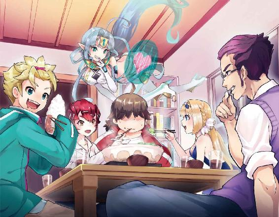
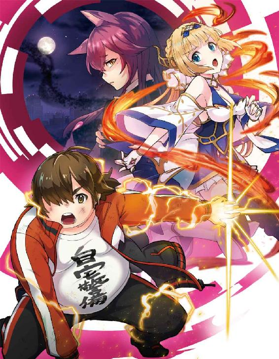
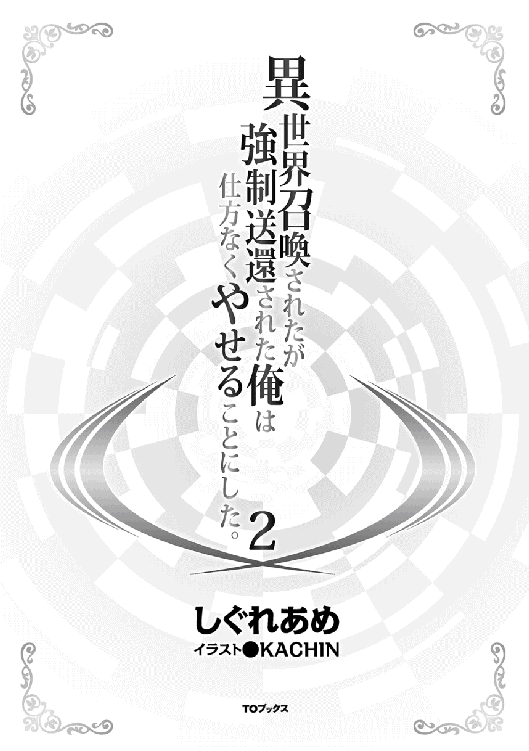
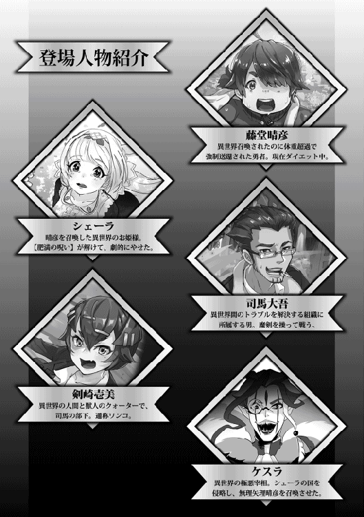
デモンズスライムとの戦いから数週間が経過していた。俺はアパートの自室のソファにもたれかかりながら、のんびりと平和な日常のありがたさを噛みしめていた。ぼんやりと眺めているテレビでは芸能人の結婚のニュースが流れていた。ベランダから差し込む日差しが心地よくて眠くなってしまう。ついこないだまで生死をかけた激しい戦いを繰り広げていたのが夢のようだ。引きこもりだった頃には思ってもみなかった出来事がこの数週間の間に起こった。それは俺自身と周囲の環境に様々な変化をもたらした。その変化の最大のものがシェーラという同居人が増えたことである。
当の彼女は鼻歌交じりでキッチンに立って洗い物をしていた。背中まである長い髪を後ろにまとめたポニーテールにエプロン姿がよく似合う。妖精のような可愛さだ。くそ、可愛すぎる。新妻を持っている男というのはこういう照れ臭い気持ちになるのではないだろうか。そんな物思いに浸っていたら、いつの間にか目の前に紅茶を出されていた。
「ハル、食後の紅茶はいかがですか」
「ありがとう、頂くよ、シェーラ」
微笑むシェーラに礼を言った後に紅茶を口にした。暖かい紅茶を口にして素直に美味しいと思えた。味覚が元に戻っていなければこんな風に感じることもなかったかと思うと本当に有難いと思った。これもシェーラの献身的な介護のおかげだ。紅茶を飲みながら、しみじみとそれを感じた。
「今日は新しいスキルの訓練を行うといってましたよね」
「そういえばそうだった！」
シェーラの言葉に驚いた俺は慌てて立ち上がった。日課のウォーキングを行った後の食休みが気持ち良すぎて忘れてしまっていたが、今日は新たに習得したスキルを試そうと計画していたのだ。だらけていたことを咎められたのかとも思ったが、どうもそうではないらしい。いつになく神妙な顔をしているシェーラに釣られて真剣な表情で黙っていた俺に対して、彼女は暫し沈黙した後に意を決したようだった。
「訓練に私も参加していいですか」
予想外の言葉に俺は驚いてしまった。急にどうしたというのだろう。彼女の真意が分からずに戸惑う俺の表情を察したのか、彼女は説明しだした。
前回、戦いに身を投じた俺の身を心配したシェーラは召喚獣であるフェニックスの力を借りて戦いに参加した。だが、激しい戦いの影響で消耗したフェニックスが自分の故郷である精霊界に戻って休息しているため、いつまた召喚できるようになるか分からない状態らしい。再び魔神獣が来襲するかもしれないと考えると、少しでも魔法の訓練を行ってレベルアップしたかったのだが、人目がある処で魔法を使えば騒ぎになるのは間違いない。どうしようかと悩んでいたところで司馬さんからゼロスペースのことを聞いたらしい。
正直なところ、彼女をあんな異常な空間に案内することには躊躇いがあった。司馬さんですらドン引きするような空間だ。連れて行って怖がられたり、嫌われたりしないかという不安がある。暫く思案したが、やる気になっているのに水を差すのもどうかというインフィニティさんの言葉も手伝って承諾することにした。
「分かった。一緒に行こう」
「ありがとうございます！」
飛び跳ねんばかりのシェーラの喜びようを眺めながら訓練が少しだけ楽しみになったのだった。
◆◇◆◇◆◇◆◇
真っ白でどこまでも続く奥行きを示す広大な空間、ゼロスペース。この巨大な空間は俺のアイテムボックスのアイテムとアイテムの間に存在する虚数空間だ。時間の流れが止まったこの空間は現実世界とは切り離されているため、どれだけ派手な魔法を幾ら使おうが、影響を考える必要はない。
広大過ぎる空間を見渡しながらシェーラは呆然となっていた。思った以上だったゼロスペースの広大さに圧倒されているようである。やっぱり連れてくるべきではなかったか。少し心配になった俺は彼女に声をかけた。
「大丈夫か、シェーラ」
「だ、大丈夫です。ちょっとびっくりしただけですから」
前にここに連れてきた司馬さんと同じ反応をしているな。この空間を使い慣れている俺にはすでに当たり前なのだが、アイテムボックスの狭間にこのような空間があることを知らない人間には異常な空間に映るのは相変わらずのようである。
最初こそ戸惑っていたものの、次第に状況に慣れてきたシェーラは俺から少し離れたところで爆炎魔法の訓練をし始めた。彼女が生み出す巨大な火柱を横目で見ながら負けてはいられないと思った俺は自身の訓練を始めることにした。
今回の目的は前回の戦いの後に新たなスキルを試すことである。まずはどういうスキルを習得しているか把握する必要があると思った俺は自分のステータス画面を開くことにした。
「ステータスオープン！」
藤堂晴彦
年齢：32
Ｌｖ：35
種族：人間（？）
職業：魔王候補生
称号：異界の姫の豚騎士
体力：３４１／３４１
魔力：４９４３／４９４３
筋力：２７２
耐久：２４６
器用：２１７
敏捷：２７３
智慧：１１８
精神：２５８
魔法耐性：２５８
ユニークスキル
【ステータス確認】【瞬眠】【鑑定ＬＶ：∞】【アイテムボックスＬＶ：０】
スキル
【名状しがたい罵声】【金切声】肥満体質【99／58】【全魔法の才能】【運動神経の欠落：４８０７０／６５０００】【人に嫌われる才能：１０６３２０／１２００００】【アダルトサイト探知ＬＶ：10】【無詠唱】【精霊王の加護】【努力家】【魔力集中】【魔力限界突破】【限界突破】【インフィニティ魔法作成】【電撃耐性（大）】【神速】【二回行動】【思考加速】【地形効果無視】【オーバードライブ】【クロックアップ】【孤狼流剣術：初級】【物理吸収】【暴飲暴食】【倍返し】【魔剣召喚】
〔ＮＥＷ！〕【帝王の晩餐】
〔ＮＥＷ！〕【美食家】
〔ＮＥＷ！〕【味覚分析】
〔ＮＥＷ！〕【オーバーリアクション】
〔ＮＥＷ！〕【魔力感知】
〔ＮＥＷ！〕【ルーン魔術作成】
〔ＮＥＷ！〕【グングニル召喚】
〔ＮＥＷ！〕【空間魔力制御】
〔ＮＥＷ！〕【快適空間作成】
インフィニティ魔法
【魔法障壁：絶】【Ｄボム作成】【回復薬（最上質）作成】
どうやら〔ＮＥＷ！〕と表示されているのが新たに覚えたスキルのようだ。味覚消失を克服した影響で【美食家】や【味覚分析】という味覚に係るスキルを獲得したようである。だが、そんな中で得体の知れないスキルがあることに気づいた。
なんなんだろう。この【帝王の晩餐】という怪しげなスキルは。
そもそも帝王の晩餐なのにビュッフェとルビが打たれていること自体に違和感しか覚えない。ビュッフェってあれだろ。食べ放題やパーティとかで出てくるあのバイキング形式のことだろう。それの王様ってことなのか。言葉だけのイメージだけで考えると豪華な料理が出てくるスキルなのかと勘違いしそうだが、何となく嫌な予感がする。
「いやな予感がするのは気のせいだろうか」
『気のせいです。まずは試してみることが一番かと』
「あまり気が進まないが、試してみるか」
インフィニティさんが乗り気なことが非常に引っ掛かりはしたものの、スキルの使用に同意するとゼロスペースの地面の下から大量の菓子パンの山が乗ったテーブルが現れた。
「いつの間にあんな仕掛けを準備していたんだ」
「【帝王の晩餐】を試すために作っておきました」
随分段取りがいいことだ。若干の不安を覚えながらも俺はテーブルの上に積みあがったパンの山に狙いを定めた後にスキルを発動させた。
「【帝王の晩餐】!!」
叫んだ瞬間にあり得ない事態が自分の体に起こった。俺の舌があり得ない長さに伸びたかと思うと一瞬にしてパンの山に襲い掛かったのだ。まるでカメレオンか何かである。俺の意思などお構いなしでパンの山に届いた舌は理解不能な動きをしながら巻き付いた後に瞬時にして俺の口の中に戻っていった。この間、実に一秒もかかっていない。普通の人が見たらテーブルのパンの山が一瞬にして消えたようにしか見えないだろう。口の中に入りきらないはずの量のパンはすでに咀嚼が終わっていた。すっきりした口の中には様々なパンの旨みが混然となった状態で広がっている。予想していなかった異常な冷や汗しか出てこない。
『いかがでしょうか！ マスターに様々な料理を味わっていただくために創意工夫して作り上げたスキルです』
人の身体に妖怪変化のような魔改造を加えながら嬉しそうにするな、インフィニティ。こんなスキルを使用してみろ。ドン引きどころか討伐隊が編成されるわ。ないわ、これはないわ。だいたい食べたもののカロリーはどうなるというんだ。
『勿論、体の中で脂肪となって蓄積されます。何を当たり前の話をしているのですか』
ですよねー、分かりますー。っていい加減にせんかい！ 即座に俺はこのスキルを使用禁止棚の中に放り込んだ。気のせいか残念そうな声をあげるインフィニティさんを無視しながらもシェーラが今の異常を見ていないか心配になった俺は彼女の方を見た。よかった、魔法の練習に集中していて気づいていないようだ。
『安心してください。【帝王の晩餐】を使用しても高速で舌が動きますから、常人には何が起きたか理解することもできませんよ』
「見えなければ何をやってもいいという事じゃないんだよ」
一度、インフィニティとは世の中の常識というものについてゆっくりと話し合う必要がある気がする。腑に落ちないものを感じたが、鑑定スキル∞は気にせずに話を続けた。
『さあ、安心して次のスキルを試してください』
「出だしでアレだぞ。安心できるわけがないだろうが」
そう言いながらも他のスキルが気になったのは事実である。そんな訳で今度は【味覚分析】というスキルを試すことにした。美食家などのスキルも気になったが、【帝王の晩餐】のようにルビが打たれていることに非常に嫌な予感しかしない。【味覚分析】を使うことを告げると誰かに使用する必要があるという事であった。仕方がないので魔法の練習を行っていたシェーラに協力してもらうことにした。急に呼ばれた彼女は何故呼ばれたのか戸惑っていたが、新しいスキルを試すためだと説明すると快く応じてくれた。
そんな訳で俺はインフィニティの指示に従ってシェーラの背後に立った。何故後ろに立つ必要があるのだろう。不安そうに振り向く彼女の視線にあいまいな笑みで答えながら俺はスキルを使用することにした。
『さあ、【味覚分析】を使用してください』
「なんだか嫌な予感しかしないんだが。まあいい。【味覚分析】!!」
次の瞬間、またしても俺の意思を全く反映しない形で俺の身体は異常な動きを見せた。舌が勝手にシェーラの頬をゆっくりと舐めあげたのだ。後ろから頬を舐められるとは思っていなかったシェーラが短い悲鳴を上げる。それはそうだろう。幾ら顔見知りの人間でも何の断りもなく頬を舐められれば生理的な恐怖を感じるのは当たり前だ。その場の空気が凍りついた中、空気を読まないインフィニティさんが俺の脳内で様々な情報を表示させていく。
『シェーラ・シュタリオン。健康状態：良好。ストレス：微小。少し酸性の汗を流している状態。妊娠、中絶経験などの詳細は不明。これ以上の詳細情報を知るためにはもう一度舐める必要があるのですが、もう一度実行しますか』
「却下だ、却下!!」
慌てて俺はスキルの使用を中止する。なんてことをしてくれたんだ。絶対嫌われた！ 恐る恐るシェーラを見ると予想通りに舐められた頬を押さえながら真っ赤な顔をしてワナワナと震えている。やばい、間違いなく怒っている。
「いきなり何をするんですか！ ハルの変態!!」
怒りの叫びと感情の昂ぶりが巨大な炎の渦となってシェーラの体を中心として荒れ狂った。衝動で秘めていた新たな力を解放したようである。熱風と共に解放された凄まじい暴風に俺は吹っ飛ばされていた。朦朧となりながらも立ち上がった俺はシェーラを見た。フェニックスになったわけではないのに炎を体に纏っている。彼女自身が自分の体の変化に戸惑っている様子であった。
「あれってこないだフェニックスと同化した時とは違う姿だよな」
『確かにフェニックスの力は感じられません。シェーラ姫本人の力のようですね。どうやら前回の戦いの影響で炎との親和性が増したようですね』
全身に炎を纏っているため、今の彼女にまともに近接戦を挑めば火だるまになるのは間違いないだろう。
『冷静に分析をしているのも結構ですが、攻撃が来ますよ』
インフィニティさんのツッコミに我に返った俺の前にシェーラが放った火球が連続で飛んできた。体内から炎が発生しているから詠唱して生み出すタイムラグがないという事か。
冷静に観察している場合ではなかった。火球が着弾して巨大な火柱が上がり、その余波で宙に舞い上がりながら彼女を怒らせるのはやめようと決意するのだった。
◆◇◆◇◆◇◆◇
怒ったシェーラを宥めるのは非常に大変だった。元の空間に戻ったシェーラを追ってゼロスペースから出た俺は地に頭を擦り付けるような勢いで謝った。仕方がない。不可抗力とはいえ、二度と口を聞いてもらえなくなるほどの破廉恥行為をしてしまったのだ。その甲斐あってか何とか彼女を宥めることができた俺は胸を撫で下ろした後、再度ゼロスペースに引きこもった。先ほどの奇行を思い出して身悶えているとインフィニティが謝ってきた。
『申し訳ありませんでした、マスター。今度はもっとうまくやります』
そのうまくやるの意味が分からないのだが。こちらの了承なしに、あのような魔改造はやめてもらいたい。こちらの人間性に関わるぞ。優しいシューラだからまだ許してもらえたものの、司馬さんだったら確実にアウトだ。下手をしなくても笑いながら保健所に連れていかれる可能性は大である。
ため息をつきながらそのほかのスキルの説明を受けた。美食家というのは【味覚分析】と同じような味覚を鋭くするスキルらしいのだが、そこまで変態すぎるスキルではなく、隠し味や何の食材なのかを瞬時に判断するものらしい。精神力を削られ過ぎたので今度何かを食べに行ったときに使うことにしよう。オーバーリアクションは演劇スキルらしい。身振り手振りを大きくするときに＋補正が入るらしいのだが、使う機会などあるのだろうか怪しいものである。
空間魔力制御やルーン魔術作成等の魔術関係のスキルもいくつか習得しているのだが、その中でも一つだけ異彩を放っているものがあった。
【グングニル召喚】という物騒な名前のスキルである。
「このグングニル召喚ってあのグングニルだよな」
確かこれは北欧神話の主神であるオーディンの持つ槍である。ユグドラシルと呼ばれる神の樹の枝を折って作られたというこの槍は投擲した的を決して外すことなく貫き、なおかつ自動的に戻ってくるという恐ろしい槍である。多くのＲＰＧなどでもモチーフにされているこの槍はたいていが最強武器の一つとして存在している。ＲＰＧ信者の俺としては特別な思い入れのある武器であった。強かったよな、グングニル。近接武器のくせして一グループに有効だったもんな。
『グングニルに興味があるようですね。試しに召喚してはどうですか』
「いいのか！ やりたい、やってみたい!!」
インフィニティさんの提案に俺は一も二もなく承諾した。凄く期待できるぞ、この武器は。今度こそ俺を俺ＴＵＥＥＥ存在にしてくれる気がする。若干の緊張からか手先が震える。がらにもなく手汗を掻いているのが自覚できた。それでも俺は震える声で宣言した。
「『グングニル召喚っ!!』」
俺とインフィニティの声が重なる。同時に終末の鐘のような音がゼロスペース内に響き渡った。同時に雲一つなかったはずのゼロスペースの上空に渦を巻く黒雲が形成される。時折稲光を放つ黒雲は見るものに不安しか与えなかった。なんだろう。このデモンズスライムが襲来した時のようなデジャヴは。忌まわしい記憶しか出てこないぞ。
嫌な予感がした俺は引きつり笑いを浮かべながらインフィニティに尋ねた。
「嫌な予感がするからスキルの使用を中止したいんだが」
『申し訳ありませんが一度発動したものを止めることはできません』
「そこをなんとかならないか」
出来る出来ないの押し問答を繰り返しているうちに、黒雲の中心から一条の光が放たれた。光は一筋の柱のごとくゼロスペースへ容赦なく振り下ろされていく。その様は槍というより何かの兵器を思わせた。それが地上に着弾した瞬間に、凄まじい衝撃と爆風が俺を襲った。とっさに身を守ろうとするより早く届いた爆風が俺の身体を宙に舞いあげる。上空に舞い上がる中で俺は思った。これあかんやつですよ。その後で地面に容赦なく叩きつけられた俺は苦しみもがいた後で意識を失った。
◆◇◆◇◆◇◆◇
どのくらい意識を失っていたのかは分からないが、朦朧とした意識が次第にはっきりしてきた後に俺は起き上がった。そして絶句した。湖くらいはあるのではないかというクレーターが目の前に出来上がっていたからだ。恐らくはグングニル召喚時にできたものだろう。それだけでも引いたのに、さらに追い打ちをかけるように俺をドン引きさせたのはグングニルの大きさだった。全長何十メートルあるのだろう。見上げるまでの長さであり、簡単に周囲を回れないほどの円周をしている。人間の筋力で持ち上げられるものでないのは明らかだった。
『巨大ビルを持ち上げるくらいの筋力があれば使用できますよ』
「......無理なら無理だとはっきり言ってくれ」
町中で使用しなくて本当に良かった。俺はそう思いながら【グングニル召喚】のスキルをキャンプ画面にあるスキルの使用禁止項目の中に放り込んだのだった。
◆◇◆◇◆◇◆◇
次の日、俺とシェーラは司馬さんに呼びだされて駅前広場の待ち合わせの銅像の前にいた。今日はワンコさんと俺の快気祝いで寿司を食べに行くことになっているのだ。司馬さんの話では回転しない寿司という事なので期待は最高潮に高まっていた。
駅前通りは休日なので待ち合わせの人たちも人通りもかなり多かった。あまりの人の多さに若干引いたのは言うまでもない。だが、人ごみがそこまで気にならなくなっていることを理解した。以前ならば衆人の目に晒されただけでストレスが溜まって耐え切れなくなったのだが、あまり気にならなくなったのは司馬さんやシェーラと接するようになったからだろう。
だが、若干の問題があった。道行く通行人達の視線が気になってしょうがないのだ。彼らの視線は俺ではなく、隣にいるシェーラに向けられている。彼女の美貌に目を奪われているのだ。
お世辞ではなく彼女は本当に奇麗になった。呪いのペンダントから解放された彼女は妖精姫と呼ばれるに相応しい美しさを取り戻していた。さらりと風で流れる髪とはっきりした目鼻立ち、そして金髪碧眼の瞳はどこか現実離れした存在であった。そんな彼女には白を基調としたワンピース姿が良く似合う。このワンピースはワンコさんがシェーラのために用意してくれたものらしく、彼女のお気に入りだった。最近姉妹のように仲がいいんだよな、二人とも。
気合を入れ過ぎたせいか司馬さん達と約束していた時間よりも早く来てしまった俺達は暫く待つことにした。どうしてもトイレに行きたくなった俺はシェーラに待っているように伝えた後に少しだけその場を離れた。それがいけなかったのだろう。俺が戻るとシェーラに二人の柄の悪い男が声をかけていた。ナンパだ。よりにもよってシェーラの肩に手を回している。白昼堂々とやってくれるじゃないか。彼女は優しいから断り切れないのをいいことに調子に乗っているのだろう。困り果てているようなので早々に間に割って入ることにした。シュバッっと神速を使ってシェーラと男たちの間に割って入る。勿論、肩に回した手は払いのけておいた。
「お兄さんたち、この子に何の用かな」
「うおっ！ 何だ、このデブ、急に現れやがった」
「な、なんなんだ、てめえは。邪魔だからあっちいってろ」
「こう見えてこの子の保護者なんでね。君たちのような悪い虫がつかないように見張ってないといけないんだ」
そう言って俺は目を鋭く細めた。威嚇のつもりだったのだが、二人の男は一瞬ポカンとなった後でゲラゲラと笑いだした。何だ、こいつら。何がそんなに面白いっていうんだ。
「おい、聞いたか。たいした王子様の登場だぜ」
「あり得ねえだろ。保護者じゃなくて、てめえが保護される動物の間違いだろうが」
「ていうか何こいつ、喋るカバか、豚か。どう見ても珍獣だろ」
「違いない、ぎゃははははっ!!」
うわあ、結構傷つくことを言うなあ。発言には傷ついたものの全然怖くない。これなら司馬さんの方が余程恐ろしい。そう思いながら俺は溜息をついた。その次の瞬間だった。ふいに俺の頬を何かがかすめた。何事かを見てみるとどうやら男の拳が俺の頬を撫でたようである。今、こいつ、何かしたのか。そよ風程度にしか感じなかったぞ。
「いいから失せろ」
先ほどの様子とは一変して男が冷たい目をしながら言い放つ。白昼堂々よくやるよな。感心するわ。周囲の目もあるだろうに。そう思って周りを見渡すと見て見ぬふりをしているのがよく分かった。まあ、誰しも諍いには絡まれたくはないだろう。なるほど、ならこちらも誰に喧嘩を売ったのか教えてやることにしよう。
「【クロックアップ】！ 【帝王の晩餐】!! アイテムボックス!!」
瞬間、周囲の動きがスローモーションになる。同時に俺の舌があり得ない速度で男の身体に巻き付いていく。舌は服の隙間から入り込んで男の身体を舐めまわす様に絡みついた後に容赦なく彼の衣服をはぎ取った。そしてアイテムボックスの中に次々と放り込んでいく。あっという間に靴と靴下以外は生まれたままの姿になった男は直立不動の状態でこちらに凄んでいた。凄んでいる割に息子さんはわりと小さいな。これなら俺のおっきくんの方が余程大物だぞ。それはさておき。
彼の姿は誰がどう見ても完全な変態になりました。ありがとうございます。
【クロックアップ】が解けた後で周囲は騒然となった。それはそうである。このような大通りで全裸になっているなど普通ならばあり得ない。頭がイってしまったか薬物中毒者にしか思われないはずである。男はしばし自分に何が起こったのか気づいていなかったが、自身の衣服がないことに気づくと絶句した。慌てて前を隠すものの全ては手遅れだ。
指を指すもの、スマホで全裸男たちを撮るものなど様々であったが流石のＤＱＮ共も好奇の目に晒されるのは耐え切れなかったようである。
「うおおお!? お、覚えてやがれ！」
そう言って男はエリマキトカゲのような姿勢で一物を隠しながら走り去っていった。慌てて男の仲間もその場から逃げていった。覚えていろと言われても困るよな。おーい、忘れものだぞ。彼らから奪い取った服を旗代わりに振っては見るものの、彼らはそのまま振り返ることはなかった。この服どうしよう。そう思っていると後ろから肩を叩かれた。
誰かと思って振り返ると怖いくらいの笑顔の司馬さんがそこにいた。
司馬さんに襟首を掴まれた俺は喫茶店に場所を移した後にこってりと絞られた。そうはいってもこちらは被害者のようなものだ。怒られるのは心外だ。そう思って俺が反論すると司馬さんは溜息をついた。
「お前なあ、少しは自分のしていることを顧みたほうがいい。相手は一般人だぞ」
「言ってる意味が分からないんですけど。それにこっちは殴られたんです」
「殴られたといっても今のお前にとっては撫でられたようなもんだろ。それよりも駄目なのは自分が何をしでかしたのか分かっていないことだ」
「何が分かってないっていうんです」
「お前のやったことは見えない刃物をちらつかせて相手を脅かしていることと同義だと言ってるんだ。自覚してない分、さっきのチンピラどもよりも質が悪い。嬢ちゃんを見てみろ。どちらに怯えていたか分かるか。あいつらじゃない、おまえだよ」
そう言われて俺は頭から冷水をかけられたように血の気が引いた。言われてシェーラを見てみると俺に向けるのは笑顔ではあるが、確かに瞳の奥に怯えの色が見受けられた。彼女の視線を見ることで自分が全く見えていなかったことを俺は反省した。確かにそうだよ。スキルを使わずに追い払えばよかったじゃないか。反省する俺に司馬さんは苦笑いした。
「まあ、反省したならそれでいい。こうして説教したが、俺だって偉そうなことは言えねえからな」
「どういうことです」
「好きな女を連れ去られて頭にきて大軍勢に殴り込みをかけたことがあるからさ。相手の軍勢は三万くらいだったかな」
相変わらず無茶苦茶な過去を持つ人だ。唖然としていると司馬さんは珈琲をグイッと飲み干した後に無理やりの笑顔を作った。
「まあ、やり方は悪かったが、お姫さんを守ろうとした心意気は認めてやる。今度からはもう少しうまくやれ。そうだろう、お姫さん」
「はい、ハルが守ってくれたこと自体は凄く嬉しかったです。おとぎ話に出てくる騎士のようでした」
シェーラの言葉に俺は顔が赤くなった。途端に司馬さんが「お熱いことで」と野次を飛ばす。そんな司馬さんの言葉を右から左に流しながら今度はもっとうまくやるように決意した。そんなことを思っていると司馬さんは何かに気づいたようだった。俺の背後に視線をやると大きく手を振った。
「おお、ようやく来たか。遅いぞ。ワンコ」
「すいません、支度してたら遅くなっちゃって」
振り返った瞬間に俺は目が点になった。ワンコさんがあまりに奇麗だったからだ。灰色を基調としたカーディガンに白のインナー、そしてフィットしたジーンズがスレンダーな彼女の体形に良く似合う。いつものスーツ姿と違って新鮮な魅力を感じた。軽く化粧もしているようでピンクの口紅が印象的だった。随分めかしこんでいるが、これからデートでも行くのだろうか。
俺がそんなことを思いながら茫然としていると彼女はおずおずと俺の近くにきて恥ずかしそうに聞いてきた。
「どうかな。似合わないんじゃないだろうか」
「いえ！ 凄くかわいいですよ。見違えました」
俺が慌てて立ち上がってから、そう言うと彼女はホッと胸を撫でおろしたようだった。どうしたのだろうと俺が思っていると彼女は恥ずかしそうに照れ笑いをした。
「......よかった。普段こういう服装をしないものだから似合っているのか分からなかったんだ」
何この人、凄くかわいいんですけど。俺がそう思っていると隣のシェーラから太ももを思い切りつねられた。何するの、と涙ながらに訴えると「鼻の下を伸ばし過ぎです......」とムッとされてしまった。うう、そんなつもりはないんだが。
俺達の様子をニヤニヤしながら見守っていた司馬さんは笑いながらこう切り出した。
「さあ、全員揃ったところで飯食いに行くか。晴彦とワンコの快気祝いだ。俺のおごりで寿司食いに行くぞ！」
「「やったーっ!!」」
俺とワンコさんの歓声がハモる。シェーラは何事か分かってないようだったが、俺たちの喜びようから楽しいことが起きるのだと判断したようだった。
それにしても寿司とはありがたい。なぜならば俺の好物だからだ。ダイエット中と言っても関係あるものか。食えるだけ食ってやる。俺がそう思っていると司馬さんが釘を刺してきた。
「晴彦はダイエット中だから刺身だけな」
「そりゃないっすよ！」
俺の哀しき絶叫が店内に響き渡ったのは言うまでもない。
◆◇◆◇◆◇◆◇
司馬さんが連れて行ってくれたのは繁華街の中央からは外れた閑静な区画であった。どちらかと言えばこの辺りは高級店が多かったような記憶がある。期待に胸を膨らませてついていくと一軒の店の前に着いた。店の名は匠。寿司屋というよりはどこか洒落た外装がこれから出される料理を期待させられる素敵な店だった。ただ、高そうだよな。そう思いながらも司馬さんは構わずに引き戸を引いて中に入っていく。若干腰が引けながらもついていくと中は非常に落ち着いた内装の店だった。ざっと見てカウンターが十卓程度でテーブル席がないが、丁寧に手入れされているのが印象的な店だった。ぱっと見た感じ、店主と女将の二人で切り盛りしている店なのだろうか。そこまで流行っている様子はなかったが、店の奥の方では一組の老夫婦がうまそうに寿司を食べていた。
「いらっしゃいませ」
カウンター越しに少し寡黙そうだが、優しそうな店主が挨拶してきた。司馬さんはその言葉に愛想よく返答する。
「すまねえな、大将。騒がしくしちまって」
「何、大勢でお越しいただけるのはありがたいことですよ」
「いらっしゃい、司馬さん」
司馬さんの言葉に大将と女将がにこやかに笑う。三人の関係が少し気になったが、勧められるままに席に着いた。落ち着きすぎて逆にそわそわしてくる雰囲気だ。そんなことを思っていると女将がおしぼりとお茶を出してくれた。ありがとうございますと礼を言って受け取ると丁度良い温かさだった。思わず顔を拭く様に司馬さんが苦笑する。
「おい、お姫さんが真似しようとしてるぞ」
そう指摘されて横を見るとシェーラが見よう見まねで顔を拭こうとしていた為、苦笑いしながらやめさせた。止められたシェーラは俺達のやっていることが普通は女の子はやらないことだと知ると残念そうにおしぼりを置いた。
「気持ち良さそうだったんですが残念です」
うーん、気持ちは分かるが、流石に女の子がそれをしては駄目だからね。お化粧が落ちてしまうよ。あれ、そういえばうっすらと化粧してるよな。しまった。全然気づかなかった。今更言ったら怒るかな。そう思っているとワンコさんが肘で俺を突いた後に小声で言った。
（ちゃんとシェーラのお化粧を褒めてあげたか）
（あ、いや、その。今まで気づいてませんでした。ていうかどうして気づいたんですか）
（なんとなくだ。というよりは女の勘かな。気を付けないといけないよ。私が言うのもなんだが、どうも君はそういう機微に疎いみたいだね）
ワンコさんは溜息をついた後に俺に化粧を褒めるように促した。うーん、つくづくこの人は人間ができている。シェーラは俺達が何を話しているかは聞こえなかったようで、こちらを向いて小首を傾げていた。うむ、仕草がすでに可愛いな。
「あのさ、シェーラ」
「はい、なんでしょう」
「今日は本当にいつもより可愛いね。お化粧してきたんだね」
「ハルが喜ぶだろうって壱美が教えてくれました」
シェーラがそう言って照れ笑いを浮かべる。なにこの可愛い生物は。持って帰りたい。というか一緒に暮らしているか。それにしてもワンコさんの要所要所のフォローが的確過ぎるだろう。なんていいお姉さんなんだ。俺たちの初々しい様子をニヤニヤしながら眺めていた司馬さんは旨そうに茶を啜った後にこちらに呼びかけてきた。
「そろそろいいか。さっきも言ったが、今日は俺のおごりだ。なんでも握ってもらってくれ」
司馬さんの言葉に俺たちはあらためて歓声を上げた。まともな寿司、しかも回らない寿司なんて最後に食べたのはいつだっただろう。引きこもっていた時期に出前の寿司を頼んだことは何回かあったが、たいていはコンビニのサラダ巻やパックの握り寿司だっただけに期待感が半端ない。シェーラは生まれて初めての寿司に戸惑っていたのでどれがいいかを聞くことにした。
「シェーラの故郷では魚は食べるのか」
「はい、港で取れた魚やイカを調理して食べますが。その、お寿司って確か生魚なんですよね」
なるほど、シェーラの顔色が若干悪いのは生魚を食べる機会がなかったからなのか。そういえばスーパーの刺身も高いという理由で買ってなかったな。
「無理そうならやめておくか」
「いえ、何事も挑戦です！ 日本文化に触れる貴重な機会ですからこちらからお願いします」
そう言ってシェーラは気丈にも笑顔を浮かべた。多分、ワサビの入った寿司をいきなり食べるのはやばいな。サビ抜きから始めたほうがいいかもしれない。そう思って思案していると司馬さんが助け舟を出してくれた。
「まずは刺身から始めてみたらどうだ」
「そう......ですね。お願いします」
「大将、刺身の盛り合わせ二つ頼む。ワンコはどうする」
「私は、エンガワとボタンエビをお願いします」
「わかった。俺もそれ貰おうか」
大将は快く頷くと作業を開始し始めた。カウンター越しにしか見えないが流れるような包丁さばきだな。というかあの包丁、手入れが良く行き届いている。よく切れそうだ。そんなことを思っているとインフィニティが声をかけてきた。
『マスターが羨ましいです。私も寿司というものを味わってみたい』
珍しいことをいうものだな。インフィニティ。味覚など持たないスキルが料理を食べたいというのもおかしな話だ。段々と人間に近づいているような気がする。そんなことを思っていると刺身の盛り合わせがやってきた。ハマチにマグロ、甘エビ、そして鯛だろうか。なんとも旨そうだ。目の前に出されて戸惑っているシェーラにレクチャーすることにした。
「これをつけて食べるんだよ」
そう言って刺身に醤油をつけるのを見せると彼女は神妙に頷いた。そして箸を持つと何を思ったのか、あるものを持ち上げて醤油につけた後に口の中に放り込んだ。俺は唖然となった。何故ならばそれはワサビの塊だったからだ。あまりにも躊躇いがなかったために止める暇さえなかったではないか。案の定、シェーラは目を白黒させ始めた。
「〇×△□っ！！！？」
苦笑いした俺がすぐにおしぼりとお茶をシェーラに差し出したのは言うまでもない。
危うくパニックになりかけたシェーラはワサビを口から出した後も顔を真っ赤にして耐えていた。俺はそれを生暖かい目で見守りながら彼女が落ち着くのを待った。生まれて初めての寿司屋は随分とハードルの高いところから攻めていったものだ。トラウマにならなければいいのだが。そう心配していると、俺の前にいた大将がそっと卵焼きを載せた皿をシェーラに出してくれた。何だろう、頼んでないけど。
「サービスです。そちらのお嬢さんはお寿司が初めてのようですからね」
優しい大将だ。礼を言ってシェーラにそれを伝えるとまだ言葉を発せないのか顔を真っ赤にしながらも会釈していた。うーむ、落ち着いてからの方がいいな。そう思いながら傍らのワンコさんを見ると実に旨そうにボタンエビを頬張っていた。美味しそうに顔を紅潮させている。むう、旨そうだなあ。そう思いながら物欲しそうに見ていると俺の視線に気づいたようだった。途端に気まずそうにしながら口を押さえて咀嚼し続けた後にお茶を飲んで一気に流し込んだ。
「なんだろう。ハル君の視線が獲物を狙う獣のようだったんだが」
「そんなことないですよ。ですが、残された一個をもらえればこんな餓えた視線もしなくてすむのです」
「無理だ。こればかりはハル君のお願いでも聞き入れられない」
そう言ってワンコさんは無情にも最後の一個を口の中に放り込んだ。ああー、思わず溜息が出てしまう。ちきしょう、目の前でそんなものを見せつけられたら頼むしかないじゃないか。
「すいません、俺とシェーラにもボタンエビ一つずつ！ あ、この子の分はサビ抜きでお願いします」
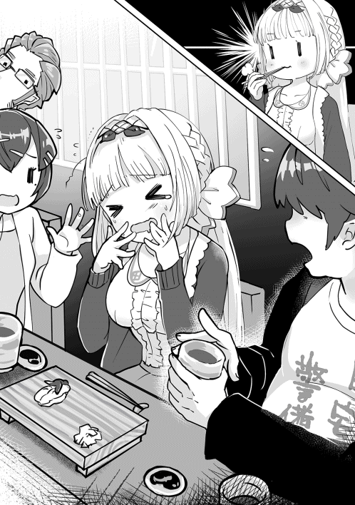
「おい、晴彦。炭水化物抜きダイエットはいいのかよ」
司馬さんが冷やかす様に言ってくるが、俺の口の中はどうしようもなく刺身だけではなくシャリを求めている。後で運動する量を増やせばたいした問題にはならないはずだ。自分の中で言い訳をしているのはどうしようもなく分かっていたが、我慢がしきれないのは自分でも分かっていた。そんな俺に司馬さんは苦笑いしながら大将の方に頷いた。そのやり取りを見て無言で頷いた大将は慣れた手つきでネタを準備するとシャリを取り出して握った。手に添えたシャリとネタを数回触った後に裏返して形を整える。たったそれだけの動作であっという間に寿司が完成していた。あの握り方は一体なんだ。疑問に思った俺の脳裏に今までにない情報が照らし出される。
小手返し。握りの中でも高等テクニックと呼ばれる握り方の一つ。スピーディな動作が可能である。握り方にはこの他にも手返し、本手返し、たて返し、裏手返し、親指握りなどがある。
なるほど、小手返しか。待て待て待て。なんで俺はそんなことを知っているんだ。てっきりインフィニティさんの情報かと思ったらどうやらそうではなく、俺の得た美食家のスキルから得た情報らしい。意外と役に立つな、美食家。
そんなことを考えていると大将はあっという間に四貫のボタンエビを握り終えると俺とシェーラの寿司下駄にそっと置いてくれた。旨そう！ 我慢しきれなくなって俺は素手で取って口に入れようとした。今にも口に入るかという瞬間にようやくワサビのダメージから回復したシェーラが戸惑っていることに気づいた。素手で食べていいのだと教えてあげると彼女は戸惑いながら俺に習ってボタンエビに醤油をつけると口の中に放り込んだ。余程美味しかったのだろう。目を丸くして口元を押さえている。それを見てしまうと期待に胸が膨らむではないか。
いただきます。そう心の中で呟いた後にボタンエビを口にした。口の中に入れた瞬間にシャリがふわりと口の中で溶ける。それがぷりぷりとしたエビの触感と混ざり合って口の中を楽しませる。同時に新鮮なエビの風味が口いっぱいに広がった。なんぞこれ。これが本当の寿司だというならば俺はこれまで本当の寿司を知らなかったことになる。
幸せだ、幸せの連続だよう!! あっという間に一個目を食べ終えた俺とシェーラは競うように二個目を頬張った。駄目です、敵はすぐに口の中から消滅しました。あっという間に食べ終えて余韻に浸りながらももう一貫食べたいと思ってしまう。
「あのう、ボタンエビもう一貫ずついいですか。」
「お前なあ、エビばっかり食ってどうすんだよ。他の寿司が食えなくなるぞ」
「ははは、いいですよ。お客さんに喜んでもらえるなら順番や作法なんて二の次でいいんです。食事はね、お客様が楽しむことが一番なんです」
そう言って大将は気前よく二貫目を握り始めてくれた。なんていい人なんだ。そこらの頑固な店主に聞かせてやりたいぞ。大将への感謝の気持ちで一杯になりながら隣を見てみるとエンガワを幸せそうに頬張っているワンコさんの姿が見えた。その時、俺はある違和感を覚えた。なんだかワンコさんの姿がいつもと違うような。
よくよく眺めた後に仰天した。何故ならばワンコさんの頭の上に二つの犬のような耳が生えていたからだ。ビックリしているとワンコさんは俺の視線に気が付いたようだった。頭の上を触った後で、しまったという様子で慌て始める。急いで耳を押さえるといつもの耳が隠れた姿に戻った。
「......もしかしなくても見たよね？」
「あはは、残念ながら」
「またやらかしやがったか。人前では気をつけろと前にも言ってるだろう」
「すいません、つい美味しくて......」
司馬さんの指摘にワンコさんはすまなそうに頭を掻いた。確かにワンコさんは孤狼族という獣人のクォーターだから先祖返りが出たというやつなのだろう。俺はそのやり取りよりも周囲の反応の方に驚いた。大将も女将も奥の方にいる老夫婦でさえもワンコさんの耳に慌てるどころか落ち着いた様子を見せていたからだ。どういうことだ。俺がそう思っていると察した大将がそっと教えてくれた。
「この店は異世界から来るお客さんも多いんですよ。なんでもこの店の入り口が異次元と繋がっているらしくって。向こうのお客さんも実は異世界の方なんです」
大将のあっけらかんとした態度に仰天した。俺が引きこもっていた間に恐るべき国際社会になっていたものである。ワンコさんや司馬さんが落ち着いているのが分かった。納得した俺たちはその日の寿司を堪能したのだった。
◆◇◆◇◆◇◆◇
次の日、俺はダイエットを再開した。何しろ体重が１０１㎏に戻っていたからである。ストイックに努めていたはずなのに物理吸収の一件といい、昨日の寿司の件と言い、やらかした感が半端ない。でも昨日の寿司は本当に旨かった。暫くは贅沢する気がなくなるくらいに皆で寿司を食いまくった。お会計の際に司馬さんがなんだか引きつった表情を浮かべていたような気もしたが敢えて触れないようにした。
さて、気を取り直してダイエットを行うわけだが、今回は痩せる新たな秘策を用意している。それはＥＭＳと呼ばれる電気式筋肉刺激を利用したダイエットである。微電流による刺激を体の鍛えたい部分に流すことで筋肉の伸縮を促して筋肉トレーニングを行う。それによって基礎代謝を上げてダイエットしやすい体づくりをするのである。ヒントになったのは深夜の通販番組などでやっている腰に巻くタイプのベルトである。もっとも、市販品では現在の俺の上昇したステータスには対応していない恐れがある。なぜならばこちらには【電気耐性（大）】という厄介なスキルがあるからである。それをインフィニティに相談したところ、似たような仕組みでよければ電撃魔法で同じような電気ショックを与えて体を鍛えることができるという事だった。それでいいのでやってくれとインフィニティさんには無理を言った形で今回のトレーニングは実現した。
不安は色々とあるものの、何はともあれやってみようという事になった。ただしシェーラに見られるとまた危険なことをやっていると怒られると思ったので、ゼロスペースで全ての実験を行うことにした。真っ白な虚空空間に入るなり、俺は寝転がって電撃に備えた。立っていると電気ショックでひっくり返る可能性があるからだ。客観的に見ると今の俺の姿はトドか何かにしか見えないだろうな。せめてこの腹がなんとかなれば。そう思いながらまずは腹に電気を流してもらうことにする。いきなり強電流を流されると筋肉刺激どころではないために少しずつ出力を挙げてもらうことにした。
『では行きます。準備はいいですか』
「ああ、いつでもいいぞ。やってくれ」
俺が了承するとインフィニティは作業を始めたようだった。うーん、確かに電気は流れている気がするのだが、全く感じないなあ。
「インフィニティ、ちゃんと電気を流しているのか」
『流してますよ。結構な電圧なんですけどね。出力をもう少しあげましょう』
それからしばらくするとようやく微力ながら電気を感じるようになった。だが、まだ弱い。それを告げるとインフィニティはしばし沈黙した。
『象でも卒倒するレベルの電圧なんですが』
「気にするな。電気耐性が効いてるんだよ。もっと強くやって構わないぞ」
『分かりました。......あれ？ これはまずい......』
何となく不穏なセリフが聞こえてきたので俺は不安になった。普段こういう事を言わない奴が突然言い出すとなんだか怖くなってくるだろうが。文句を言おうとすると突然、頭の中にインフィニティの事務的な声が木霊した。
『電気耐性（大）が規定経験値を突破しました。電気耐性（大）は電気無効に進化しました。さらに物理吸収スキルのノウハウを吸収。電気無効は電気吸収に進化しました』
なんだと、今なんて言った。スキルが進化したとかぬかしたよな。慌てて俺は起き上がった。今の台詞が本当だとすればやばい。今まで使っていた瞬眠スキルと電気魔法によるトレーニングがもはや使えなくなるのと同義だからだ。それだけではない。物理吸収と同じという事はあのステータスが上がることになる。不安を感じながら俺は自分のステータスを確認した。そこには慣れ親しんだ俺の理想体重と現在の体重が書かれていた。そこの数値を確認して俺は泣きそうになった。１０１㎏だった体重が１０３㎏にまで増加していたからだ。マジかよ。また痩せないといけないではないか。
しかし、この理屈で行くと電気を食えば食うほど太るという計算になる。腹が膨れたわけでもないし、ウエストがきつくなったわけでもない。疑問を感じた俺はインフィニティに確認を取ることにした。
「インフィニティ、俺の体の構成について鑑定してくれ。理由は分かるな」
『なるほど。増えた体重がマスターの体の中でどのような成分で蓄積されていたか確認をしたいということですか』
俺の考えを察したインフィニティが体の構成物質を詳細鑑定していく。鑑定されたデータが立体映像となって表示されていく。筋力量が多くなっているようだが、それでも脂肪分が多いことには変わりない。
鑑定をした結果、驚くべきことが分かった。吸収された電気エネルギーはそのままのエネルギーとして俺の体に蓄積されているようなのだ。インフィニティの説明によると蓄積された電気エネルギーは少しずつ糖分に変換され、それが脂肪として蓄積されていく。
ならば、この蓄積されたエネルギーを発散させるスキルを開発すれば電気を吸収したとしても太っていくことはないのではないか。
「この蓄積されたエネルギーを発散させるスキルを開発することは可能か」
『可能ですが、簡単に開発できるものではありません。お時間を頂けますか』
「なるべく早く頼む」
俺の指示に対してインフィニティは短く了承の返答をした後に黙り込んだ。恐らくは早速新たなスキルの開発を始めたに違いない。頼もしいことだ。
だが、インフィニティがスキルを開発する前に俺の身体が蓄積した電気エネルギーを吸収してしまう可能性も十分にあり得る。そう思った俺は地道な減量を再開することにしたのだった。
◆◇◆◇◆◇◆◇
ダイエットを行うために効果的なのは毎日のウォーキングと食事制限が一番だ。そんなわけで昼夜のウォーキングを再開したわけだが、最近になって不審な視線を感じるようになった。どこからかは分からないが、誰かに見られているような不可解な視線。それが何なのかは分からないがなんとも不気味だ。
自意識過剰と思われるかもしれないが、何者かに後をつけられているような感覚もする。このままではまずい。そう思った俺は追跡者を罠にかけることにした。まずは通常通りにウォーキングを行う。そして視線を感じた瞬間にスキルを使用した。
【魔力感知】。魔力回路喪失を克服したことで新たに得たこのスキルは周辺の地域の人間や動植物の魔力を戦闘力のように感知することができる。魔力感知を行うことで分かったのは確かに何者かが電柱の影に潜んでいることだ。ただしその魔力はそこまで大きなものではない。どちらかというと一般人のものに近い。一体誰だというのか。首を傾げながらも【クロックアップ】で相手の顔を確認することにする。
「【クロックアップ】」
瞬間、周囲の時間が凄まじくゆっくりとした流れに変わる。というよりは俺の時間が加速する。加速した時間の中で動き回る俺の姿は相手には認識できないはずだ。そう思いながら電信柱の影を確認する。そこにいたのは制服姿の少女だった。なにか見覚えがあるな、そう思って思い出してみると先日のデモンズスライムとの戦いで助け出したギャル子だった。なぜこいつがここにいるんだ。不審に思いながらも何となく嫌な予感がした。ひょっとして俺を見つけて文句を言いに来たのではないだろうか。いや、きっとそうに違いない。ここは逃げたほうがいい。そう思いながらも彼女の表情が気になった。何かを言おうとしながら言い出せないような微妙な表情。ひょっとして俺に何か伝えたいことがあるのではないだろうか。だが、元々がコミュ障な上にネガティブ思考な俺はギャル子に何を言われるかが怖かった。だからこそ、その場から一目散に逃げだしたのだった。
◆◇◆◇◆◇◆◇
ちょっと目を離した瞬間にまた見失った。氷川湊は自らの一瞬の油断を悔やんだ。またあの太った人にお礼を言うことができなかった。湊はこの数週間、自分の事を救ってくれた人物の事を捜していた。何としても先日の非礼を詫びて礼を言うためだ。初見での自らの態度にもかかわらず、二度もあの人は自らの身を顧みずに助けてくれた。そのことで湊はあの豚男への認識を完全に改めていた。あの人は蔑まれるような豚ではなく、尊敬に値する人物であると。
湊は男性恐怖症であった。自分や友人を汚らわしい目でしか見ないのが男。元々はそこまで嫌悪の対象ではなかったが、数年前に起こった忌まわしい事件によって彼女にとって男という存在は嫌悪対象へと変貌した。普通の男でさえ近寄りたくないのにその上太っていたあの男は嫌悪対象以外の何者でもなかった。だからあんな態度を取ってしまった。湊自身がそんな自分が大嫌いだった。
ある意味で自暴自棄であった。男たちに拉致された時に彼女は凄まじい恐怖を感じてもいたが、これまでの自分の行動を顧みた時に自業自得なのかもしれないとも思った。自分が他者に酷い態度を取ってしまったためにこのような目に遭ってしまったのではないか。だから周囲に通行人もいたはずなのにこちらが悲鳴を上げようと泣き叫ぼうと誰もこちらに関心を向けなかった。自分はこれから酷い目に遭わされるのだろう。誰か、誰か助けてほしい。そんな彼女の悲痛な声に応えたのがあの豚男だった。
どの様な手段を取ったのかは分からないが、豚男は走る車に追いつくとあっという間に男たちをぶちのめしていった。そして名も告げずに立ち去っていった。その時点で湊の中で豚男は嫌悪対象ではなく、むしろ憧憬に値する人物に変わった。
自分もあんな人間になりたい。他人からどう思われようと自らの信念を曲げずに行動できる強い人間に。そういった思いがあったからこそ彼女はあの怪物の襲来の際に自らの身を顧みずに老婆を助けようとした。そこには打算も何もなかった。結果として死の危険に晒されたのだが、その時に救ってくれたのがあの豚男であった。
だからこそどうしても礼が言いたかったのだが、また逃げられてしまった。いつになったら豚男に礼が言えるのだろう。そう思いながら湊は溜息をついた。
◆◇◆◇◆◇◆◇
昨日は酷い目に遭った。結局あのギャル子は何だったんだろう。まさかあれが俗にいうストーカーというやつなのだろうか。昨日を振り返って物思いに耽っているとワンコさんに声をかけられた。
「どうした、ハル君。訓練に身が入っていないみたいだが」
「すいません、考え事をしていました。」
「しっかりしてくれよ。訓練といっても真剣にやらないとケガをするぞ」
そう言われて気持ちを切り替えることした。せっかくワンコさんが稽古をつけてくれるのだからな。
今日はワンコさんと一緒に戦闘訓練を行っていた。自分自身のトレーニングの意味は勿論、先日のデモンズスライムの来襲で欠損し、再生したワンコさんの腕のリハビリも兼ねている。リハビリは必要だ。いくら再生したからといってもそのまま元のように使えるというわけではないからな。馴染むまでは相当時間が掛かるはずなのだが、ワンコさんは見た感じは元のように刀を扱えるようになっていた。何気なく軽々と扱っているがその裏では血が滲むような訓練をしてきたに違いない。談笑するくらいに和やかな雰囲気だったのだが、ふいにワンコさんの気配が変わった。仕掛けてくる。俺はそう察して小刀を左右に構えて二刀流で応戦することにした。
次の瞬間、前触れもなくワンコさんの姿が影と共に消える。すぐに間合いに来るはずだ。右、いや、左か。感覚が導くままに左の小刀で切り払うと刃先と刃先が撃ち合った後に短い火花が散った。よかった。やってみるものだ。まぐれだったのだが、姿を見せたワンコさんはそうは思わなかったようである。
「......今の一撃に反応しただと。まさか見えたのかっ!?」
「はは、まぐれですよ」
「まぐれでやられてたまるか！」
プライドを傷つけられたのであろう。ワンコさんはそう叫んで烈火の如き連撃を繰り出してきた。危ない、とっさに反応できてなかったら斬られている。そう思いながらも左右の腕はワンコさんの連撃に素早く反応していた。斬撃の回数を数えていくと全部で二十八回だった。これが終われば反撃しよう。そう思いながらも何か違和感を覚えた。危険を感じた俺は何が違和感なのか答えを素早く導き出す。
違和感の正体は俺の足元だった。両足が少しずつワンコさんの闘気に引き寄せられている。その闘気の流れの源泉を見て俺はゾッとなった。彼女自身の身体の内部から恐ろしいほどの闘気が練りこまれていたからだ。まるで小さな台風だ。彼女はこの連撃の最中に彼女自身の身体を中心にした闘気の渦を利用した必殺の一太刀を放ってくるつもりだ。見切れるのか。いや、待つのではなくこちらから仕掛けるべきだ。直感的にそう思った俺は左の軸足に魔力を集中させた。
俺が使用したのは魔力を使った【肉体強化】である。肉体強化の練度が足りないせいか強化できるのは駆け出す時の第一歩や一撃殴る時などのワンアクションのみとなる上に強化するときには前もって力をためる必要があるが、上手く使えば一瞬だけ達人の動きを上回る動きをすることができる。
魔力を足に込めた瞬間、筋肉がはちきれんばかりに膨れ上がる。溜め込んだ力で思い切り地面を踏み込むと俺の身体は爆発的な瞬発力でワンコさん目がけて突き進んでいった。その勢いはまるでターボチャージャーを積みこんだ車のようだ。
自分で思った以上の加速がついている。予想外の加速力だったようでワンコさんが驚愕の表情を浮かべていた。その表情を見た時にふと気づいた。この勢いのままで切り込んだらかすり傷では済まないのではないか。そう自覚した俺は直前で武器から手を離すと同時に張り手を突き出した。寸止めするつもりだったが、ワンコさんの寸前で放った張り手から見えない衝撃波が放たれていた。
「っ！！！！」
斬撃の準備をしていたワンコさんはまともにその衝撃波を喰らって派手に吹っ飛んだ。やばい、やりすぎた。そう思った時にはすでに時遅くピクリとも身動きをしていない。慌てて助け起こすと受け身を取れなかったワンコさんは脳震盪で意識を失っていた。おかしい。なんでこんなに力量差がついているんだ。
そうか、インフィニティだ。きっと万能スキルが何らかのスキルを使ってサポートをしてくれたに決まっている。そう頭の中で思い浮かべる。
『私は何もしていません。マスターが人間離れした実力になっただけです』
自分は悪くない。悪びれないインフィニティに対して俺は苦笑いを浮かべながら自らの手を見た。俺の身体はどうしてしまったのだろう。だが、俺の手はそれに答えることはなかった。
◆◇◆◇◆◇◆◇
ワンコさんが意識を取り戻すまでは暫くかかった。仕方がないので膝枕をして起き上がるのを待つことにした。寝顔がかわいいな。変質者ならば意識がないことをいいことに楽しいことをしてしまうのだが、誠実な豚を演じる自分としては辛い限りである。まじまじと可愛らしい寝顔を眺めているとワンコさんがうっすらと目を開けた。よかった。意識を取り戻したようだ。ワンコさんは記憶がはっきりしないのか、しばらく俺の豚顔を眺めながら瞬きしていたが、次第に意識がはっきりすると共に跳ねるように起き上がった。膝枕をされていたことに気づいた後に顔を赤くしながらもそっぽを向いた。何だか機嫌が悪そうだ。どうしたのだろう。俺がそう思って声をかけると彼女はごにょごにょと呟いた。
「......ハ......は......ずるい」
「へ、今なんて言ったんですか」
「ハル君はずるいといったんだっ!!」
ワンコさんは俺に向かって顔を真っ赤にさせながら叫んだ後に再びそっぽを向いた。ずるいってどういうことだろう。確かに魔力のブーストで張り手をやったのは反則かもしれないがそのくらいは魔法使いならば当たり前の戦いではないのだろうか。スタンダードがよく分からないので何とも言えないが、ワンコさんの反応を見ていると困惑しか浮かんでこない。何というべきか迷っているとワンコさんは再び呟いた。
「そんなに強くなられたらハル君を守って恩返しをすることができないじゃないか」
「へ？」
その時の俺は相当間抜けな表情をしていたと思う。まさかワンコさんがそんなことを考えていたなんて。ひょっとしてリハビリを頑張ったのもそのためなのか。不味いぞ。こちらとしては強くなったところを見せて安心させようとしたのに逆効果じゃないか。落ち込むワンコさんにどう声をかけていいか分からなくなり、その日の訓練はうやむやのうちに終了したのだった。
◆◇◆◇◆◇◆◇
その日の夜、ワンコは誰もいないビルの屋上で一心不乱に刀を振っていた。飛び散る汗が彼女の訓練の激しさを物語っていた。彼女は暫し、目の前の虚空に向けて剣を薙いだ後に刀を鞘に収めると溜息をついた。
「駄目だ、いくらやっても勝てない」
彼女はイメージしている仮想敵は昼間に模擬戦を行った晴彦の姿である。ワンコも予想していなかった反応速度を晴彦は見せた。その動きをイメージして切り結ぶものの、何度繰り返しても勝てるイメージは湧かなかった。認めるしかないだろう。彼は自分たちが勝てなかったデモンズスライムに勝利した勇者なのだ。
敵対する相手ではなく、頼もしい味方と素直に思えばいいのだろうが、これまで戦ってきた戦士の誇りが邪魔をしてワンコは素直に喜べなかった。そんなことを考えてしまう自分に自己嫌悪を感じていた。
「いやな女だな、私は」
自分でも可愛げがないと思っていた。彼女が自分の感情を複雑に感じているのは晴彦に対して恋愛感情を持っているせいもあった。
男勝りの自分は剣に生きようと考えていた。だが、晴彦に惹かれている自分を自覚してからは劣等感を感じるようになった。晴彦の傍らにいるシェーラは非常に女らしく、男勝りな自分とは違うからだ。きっと晴彦は自分のような男勝りな女よりシェーラのような可愛らしい子の方が好きなはずだ。
（いっそあの子がいなければ、こんな思いはしなくて済むのに）
一瞬よぎった危険な考えをワンコは慌てて振り払った。一瞬とはいえそんな考えを抱いてしまう自分が酷く汚れたものに感じた。剣を振って忘れようとしたのに雑念ばかりが邪魔をして集中できない。このまま剣を振り続けても意味がないと思ったワンコは刀を鞘に収めた後に大きなため息をついた。
その様子を遠くから監視していた者がいた。それは道化師の格好をした奇妙な男であった。泣き笑いを表現したような仮面を身に付けた道化師はワンコのいたビルの上空に漂いながら興味深そうに様子を眺めていた。そんな彼の手元にはふわふわと浮かぶ水晶が浮かんでいた。時折、水晶の中では揺らめく炎が不規則に明滅していた。
男は暫く様子を見ていたが、ふわりとワンコの下に降り立った。突然現れた不審者に対してワンコは警戒心を露わにした。
「何者だ。どこから現れた」
「初めまして。私は狂乱の道化師と申します。貴方様に力を差し上げたいと思い、参上した次第です」
「何のつもりか知らんが、貴様のような怪しい奴の力を借りるつもりはない」
「貴方にそのつもりはなくてもこちらにはあるんですよ」
そう言った瞬間に道化師の掌の上に浮かんでいた水晶がワンコ目掛けて飛んでいった。何かの攻撃と思ったワンコは刀を抜いて水晶を切り裂こうとした。だが、水晶はその攻撃をすり抜けた後に彼女の体内に吸い込まれていった。何かの精神攻撃だと気づいた時にはすでに時遅く、体中の血液が沸騰するような感覚に彼女は困惑した。体の内側からこみ上げてくるような強烈な力の奔流、そして心の中では何者かが語り掛けてきた。必死に抗おうとするワンコに道化師は語り掛ける。
「抗おうとしても苦しみが増すだけですよ」
「だ、黙れ。これは一体何なのだ」
それは理性を解き放って自由になれという語りかける声であった。声だけではなく、現実と見間違えるような幻の光景がワンコの目の前に映った。晴彦と恋人同士となった自分が幸せそうに腕を組んで街中を歩いている光景であった。だが、その光景の隅の方では刀で胸を刺されて死んでいるシェーラの姿があった。ワンコはシェーラの姿を見て生理的な嫌悪を抱いて幻を否定した。
「何故拒むのだ。これはお前が潜在意識下で望んでいた光景だぞ」
もがき苦しむ彼女の目の前で何者かが姿を現した。それは姿形がうり二つの自分だった。困惑するワンコに対して幻は語り掛ける。
「不甲斐ないね。今のお前は何もかも中途半端だ」
「なんだと」
「理性が邪魔をしているせいで邪魔者を排除することもできない」
「黙れ」
「シェーラを親友と思っているようだが、うかうかしているうちにハル君を取られてしまうぞ」
「黙れ、黙るんだ......」
「ハル君だって男だからね。お前のような面倒で男勝りな女なんかより、お淑やかなシェーラの方がいいに決まっている」
「うるさい！ 黙れっ!!」
「お前は一生ハル君の恋人になることはできない。でも私が手を貸せばハル君を奪い取ることができるんだよ」
うり二つの幻はそう言ってワンコの頬を優しく撫でた。ワンコは半泣きになりながらも、その言葉に必死に抗おうとした。だが、幾ら感情で否定しても否定するだけの根拠を語ることができなかった。
「さあ、お前はもう引っ込んでいなさい」
「いやだ、やめろ......」
うり二つの幻はワンコの中に吸い込まれていった。水晶が体内に存在しない状態であればワンコは悪魔の囁きに堪えることができただろう。だが、逆らおうとすればする程、水晶から発せられる声と幻影は繰り返し彼女の精神を蝕んだ。耐え切れなくなったワンコは頭を押さえたまま、その場に倒れ伏した。暫くしてからゆっくりと起き上がった彼女は別人のように吹っ切れた表情をしていた。
変化は表情だけではなく彼女の瞳の色にも表れていた。宝石のように真っ赤に染まっていた。変化はそれだけに留まらず、髪留めで押さえていた獣の耳が跳ね上がり、肩までの長さの髪が異常な速さで伸び始め、あっという間に背中までの長さに変わっていった。それだけでなく彼女の尻には狼を思わせる尻尾が生えていた。
「ふう、ようやく引っ込んだか」
先ほどとは別人のような悪魔のような笑みをワンコは浮かべた。今の彼女が水晶によって自我を乗っ取られた状態なのは明らかだった。
「随分手こずったようですね。思った以上に強い意志を持つお嬢さんだったようです」
「だが、今は潜在意識下に引っ込んでいる。しばらくは表に出てくることはないだろう」
「よろしい。それでは計画を進めることにしましょう」
ワンコは道化師の言葉に頷くと両手や両足を馴染ませるように動かしながら自分の体の調子を確認した。理性で抑え込んでいた力を解き放ったことで今までは出すことができなかった力を使えるようになったのである。
「この力を使っていれば、ハル君の強さに嫉妬することはなかったはずなのにな」
「有り余る力に酔うのも結構ですが、ご自分が何をすべきかは理解していますか」
「分かっているさ。シェーラを殺すんだろう」
シェーラを殺してはならないという理性、そして邪魔者を殺して晴彦を独り占めしてしまえという打算的な感情と葛藤していたが、それに負けたことで【水晶】に乗っ取られたワンコは自身の欲望に忠実となっていた。ワンコは自分の持っていた刀の白い鞘に施された封印の布を強引に引きちぎった。その瞬間、鞘に施されていた封印が解放されて鞘が本来の姿を取り戻していく。それはワンコの身の丈を大きく超える白い蜘蛛の化け物となった。
「大した従者をお持ちのようだ」
「こいつはかつて私の世界を混乱に陥れた混沌の蟲の一体のなれの果てだ。普段は鞘の形となって封じられているが、封印から解放されれば所有者の忠実な駒となって動いてくれる」
ワンコが白い大蜘蛛を優しく撫でると蜘蛛は傅いた。
「さあ、可愛い僕よ。私のいう事が分かるな。シェーラ・シュタリオンを殺しにいくのだ」
返答をする代わりに大蜘蛛はキシャアアアアアと叫んだ。血に飢えた化け物が解き放たれた瞬間だった。
◆◇◆◇◆◇◆◇
その日の夜、何か巨大なものが近くに降りたような地響きが起こった。眠っていた俺は地響きに驚いて飛び起きた。不穏なものを感じて周囲の魔力を探った瞬間にゾッとなった。とてつもない大きさの何かが付近に現れたことを認識したからだ。この大きさは明らかに人間のものではない。
一体何が起きている。不穏なものを感じた俺は隣室で寝ているシェーラを起こした後に外に出た。そして絶句した。アパートの目の前に見上げるような大きさの真っ白な大蜘蛛がいたからである。
蜘蛛を見た瞬間にシェーラが卒倒したので慌てて支えたのだが、俺もシェーラが居なければ確実に卒倒していただろう。だってそうだろう。玄関を開けたら自分の身の丈を超えるような化け蜘蛛が居たら虫が苦手な人間でなくても卒倒するわい。多分これは悪い夢、もしくは幻覚の類だ。あまりにも現実離れしすぎている。目をこすれば消えるに決まっている。そう思って目をごしごしとこするのだが、蜘蛛の幻は全く消えることはなかった。疲れているんだ。そう思ってドアを閉めるとご丁寧に外からドアをノックする音が聞こえてきた。なかったことにできないかと思ったが、誤魔化すことはできないようだ。改めてドアを開けると蜘蛛は沢山ある眼でじっとこちらを見ていた。
目もそうだが、随分大きな口をしている。こいつは一体その大きな口で何を食べるんだろう。サイズ的に見て俺やシェーラがすっぽり入る大きさかな。
そう思ったのが相手にも伝わったのだろうか、蜘蛛は俺の視線を理解したように凄まじい咆哮をあげてその鋭い牙を大きく開くと襲い掛かってきた。
『キシャアアア──ッ！！！』
慌ててドアを閉めた俺は意識を失ったシェーラを抱き上げたまま部屋の奥に向かって走り出した。だが、蜘蛛はドアを突き破って中に入り込んできた。来るな、部屋が壊れる。やめてくれと叫びたくなった。あのサイズで無理やり狭い部屋の中に入ってこられたら間違いなく壊される。そうこうしているうちに俺の手の中で気絶していたシェーラが目を覚ました。そのまま寝ていた方が幸せだったと思う。彼女は暫し状況を把握していなかったが、背後からべきべきと聞こえてきた破壊音の主を見てパニックになった。
「ハル、あれは、あれは何なんですか!!」
うん。それは俺が聞きたい。真っすぐにこちらを追ってくる様子から察するに確実にこちらを狙ってきているのは間違いないのだが、あんな化け蜘蛛が地球に生息しているなんて聞いたこともない。
『どうやら地球の生き物ではないようですね』
インフィニティの淡々とした説明をＢＧＭに化け蜘蛛が食らいついてくる。すんでのところでかわしながら走り、ベランダから飛び降りると化け蜘蛛も飛び出してきた。半壊状態の部屋を尻目に半泣きになりながらも復讐を決意した俺は化け蜘蛛を引き離すべく【神速】を使用して走り始めた。
よし、ついてこれていないな。徐々に小さくなっていく化け蜘蛛の姿をちら見して安堵した。
「よし、思った通りに素早くは動けないようだな」
化け蜘蛛は全く追ってくる様子もなく動かなかった。いや、全く動く気配がない。逆にそれは不気味であった。嫌な予感がすると思ったときには遅かった。化け蜘蛛が何かを射出したかと思ったら俺達の真上を舞ったからである。何が起きたのか、理解が遅れた俺にインフィニティが語り掛ける。
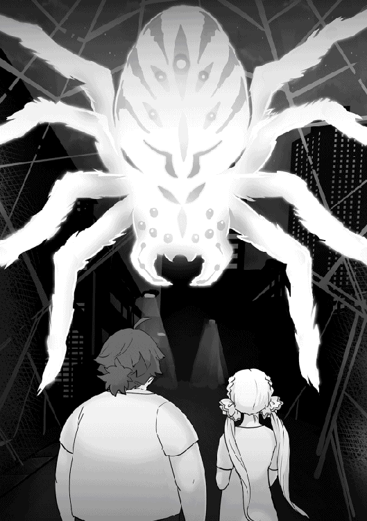
『ゴムのように伸縮性のある蜘蛛糸を利用して飛んだようですね』
あっという間に回り込まれた。背後にいた敵が突然に眼前に現れた俺は慌てて【神速】を解除して急ブレーキをかけた。危うく口を大きく開く化け蜘蛛に飛び込むところだった。蜘蛛は俺が逃げられないように次々と蜘蛛の糸を放った。蜘蛛糸は道路やビル、信号機などに容赦なく絡み付いていく。粘着性が非常に高そうだから一度捕まったら逃げることは困難だろう。逃げきれないと判断した俺は臨戦態勢を取るためにシェーラを降ろした。
先手必勝。まずはその足を斬って動きを鈍くさせる。
「【クロックアップ！】」
【クロックアップ】スキルを使用した俺はスローモーションになっている蜘蛛に対してアイテムボックスから取り出した二本の小刀で攻撃を繰り出した。だが、繰り出した斬撃はことごとく蜘蛛の分厚い表皮によって弾かれて火花が散った。硬ってええ、何なんだ、こいつの表皮は。鉄でも殴ったような感触だったぞ。
攻撃が効かないことを悟った俺は作戦を切り替えることにした。武器を仕舞ってシェーラを抱きかかえた後は【クロックアップ】の制限時間限界まで神速で走り出した。
蜘蛛から離れた位置の建物の影に隠れると気配を押し殺した。蜘蛛は獲物が突然消えたことを不審に思ったのか、暫く辺りを見渡していた。だが、俺達の姿を見つけることはできなかったようである。途中、シェーラが恐怖のあまりに悲鳴をあげそうになったが、無理やりに口を押さえて黙らせた。
（いや──っ、巨大な蜘蛛......もがもが）
（落ち着くんだ、このままやり過ごす。だから静かにするんだ）
（んん────っ！！！）
そう言えばシェーラは虫が大嫌いだと言っていたな。前にゴキブリが出た時も大騒ぎしたっけ。大人しくさせるのが大変だったが、何とか我慢させることに成功した。
蜘蛛は暫く俺達を捜し続けたが、獲物がいないのではしょうがないと諦めたのかカサカサと音を立てながら闇に消えていった。蜘蛛が完全にいなくなったことを確認した後に俺はその場にへたり込んだ。何なんだ、あの化け物は。新しい魔神獣なのか。あんなもの野放しにしているなんてヤバ過ぎるだろう。そう思ってインフィニティに周辺の魔力感知を行ってもらった。だが、全く周囲には大蜘蛛の反応がなかった。あれだけの巨大な生き物が一体どこに消えたというのか。その時になって俺は初めて得体の知れない恐怖を感じたのだった。
◆◇◆◇◆◇◆◇
化け蜘蛛が居なくなった後、俺はすぐに司馬さんに連絡を取った。深夜にもかかわらず、バイクで現場に駆けつけてくれた司馬さんは半壊した俺の部屋を見上げて唖然となっていた。事情を説明するためにサイコメトリングで先ほどの記録映像を流すと流石に信じてくれた。
「連絡を受けた時は悪い冗談だと思ったんだがな」
「俺自身が一番信じられないですよ」
「だが、妙だな。ＷＭＤの本部にも問い合わせたが、地球への侵入者が現れたなんて報告はなかったそうだ」
「え、それってどういうことですか」
「侵入者は地球を外敵から守る結界の内部から現れたという事だ」
「ＷＭＤはあんな化け物を野放しにしていたんですか」
「そんな訳がないだろう。あんな目立つ奴が現れたらすぐに討伐命令が出されるっての」
相手はこないだのデモンズスライムのような外部からの敵ではないということか。俺は勿論だが、説明した側の司馬さんも首を傾げているようだった。
「また襲ってくる可能性はありますかね」
「あり得るだろうな。その化け蜘蛛はピンポイントでお前たちのアパートを襲撃したんだろう。他の建物まで巻き込んでならともかく、お前らが逃げたから姿を消したとすれば確実に敵はお前たちを狙ってきている」
「まあ、いざとなったら司馬さんがダインスレイブを使って倒してくれますよね」
「あ、悪い。それは無理だ」
「どういうことです」
「前回の戦いでぶっ壊れたせいで自己修復中なんだ。召喚しようと呼びかけても応じないんだよ」
嫌なことが分かってしまった。チート級の力の魔剣士の力を借りれないとは。それでも再び蜘蛛が襲ってきたら連絡するように言われたので俺は頷いた。
その日は司馬さんの好意でＷＭＤの仮眠室で一夜を過ごすことになった。
次の日、司馬さんに連れられてアパートに戻るとＷＭＤの鑑識の人たちによる現場検証が行われていた。だが、化け蜘蛛の有効な手掛かりを見つけることはできなかった。鑑識の人たちが撤収した後には変わり果てた部屋が残るのみである。
司馬さんはＷＭＤが部屋の修理を行ってくれるように手続きを踏んでくれたのだが、それにも数日はかかるらしい。仮眠室を貸そうかと言われたが、ずっと過ごすわけにもいかないので丁重に断った。参ったな。いきなり家なき豚になってしまったぞ。
「どうしよう、本気で困ったぞ」
『これだけ壊されると流石にどうしようもないですね』
ゼロスペースで暮らそうかとも考えたが、あそこは時間の流れが止まっている空間である。仮に数カ月を過ごしたとしても外の時間が経過しないことを考えると何の解決にもなっていないと理解した。
「新しく習得したスキルでなんとかできないか」
『最近、私のことを何でも屋か何かと勘違いしてないですか』
インフィニティはそう言いながらも【快適空間作成】というスキルを勧めてくれた。これはこの間の魔力回路の喪失を克服した時に習得したスキルの一つだ。とはいってもどのような効果なのかは試したことはなかった。
「このスキルはどんな効果なんだ」
『マスターが快適に暮らす空間をカスタマイズするスキルです』
快適に暮らす空間をカスタマイズするって言われてもいまいちピンとこないよな。首を傾げながらも促されるままにスキルを使用することにした。
「【快適空間作成】」
スキルを使用した瞬間に体中を脱力感が襲った。凄まじい量の魔力を吸い取られている。貧血に近い感覚に立ち眩みを覚えた俺は思わず膝をついた。そんな俺を心配したシェーラが駆け寄ってきた。
「大丈夫ですか、ハル」
「うん、何とか大丈夫だ」
肩を借りながらも何とか立ち上がった俺は目の前の異様な光景を見て絶句した。残骸となっていた俺の部屋が瞬く間に復元し始めたからだ。まるで逆再生をしているような光景だ。これも快適空間の効果なのだろうか。戸惑う俺とシェーラにインフィニティが説明をし出した。
『快適空間は使用者が快適に過ごすことができる空間をカスタマイズできるスキルです。今回は初めてなので私がモデルルームを作成しました』
呆気に取られている俺とシェーラを置いてきぼりにしたまま、アパートの部屋の復元は終了した。見た目は壊される前と全く同じ部屋にしか見えない。
「見た目は前と同じだよな」
『確かに外側はいつもどおりに見えるでしょう。ですが、中の様子は今までと変えています。さあ、開けてください』
本当にスキルが発動しているのか不安になりながらも俺はドアを開けた。開けた瞬間に絶句した。玄関から先にどこまでも続く廊下が広がっていたからである。奥の壁が全く見えないくらいの奥行きだ。長い廊下には左右に夥しい数のドアが並んでいた。
「無駄に廊下が長すぎる。それに部屋が多すぎだろう」
『マスターの魔力を使い過ぎた影響ですね。肥大化し過ぎてコントロールに苦労しました』
さらりと俺のせいみたいに言うなよ。戸惑いながらも俺は手近にある部屋のドアを開けた。またしても気分が悪くなるくらいに奥行きのある真っ白な空間が広がっていた。部屋の中央にぽつんと何かが置かれていた。眼を凝らして見ると、どうやら洋式便器のようである。
『これだけ広ければ落ち着けますね』
「広すぎて不安になるわ！ あと、無駄に遠すぎる。トイレに辿り着く前に漏れてしまうぞ」
『分かりました。改善しますので一旦ドアを閉めてください』
言われるままにドアを閉めて再び開けた瞬間に心臓が飛び出そうになった。目の前がナイアガラの滝のような滝になっていたからだ。水しぶきが凄まじい。目の前の滝だけに目が行きがちだったが、ドアから先が断崖絶壁になっているのに気づいた時の方が怖くなった。引きつった顔をしながら俺はドアを閉めた後に首を横に振った。
「一応聞いておくぞ、これは一体なんなんだ」
『見ての通りの水洗トイレです。これならすぐに用を足すことができます』
「ハル、このトイレは怖くて使えません」
「俺だって怖いよ。というか、これはトイレじゃない。もっとおぞましい何かだ」
そうだ、これは断じて俺の知っているトイレなどではない。どう見ても滝だ。用を足していたら自分も滝に呑み込まれるじゃないか。このスキルの発想はどうしてこうも極端なのだろう。困り果てた俺は元の部屋のトイレと同じものに戻すように指示を出した。インフィニティさんはあまり納得していない様子だったが、仕方なく元のトイレに戻してくれた。
「シェーラ、ごめん、危険だから外に出てくれないか。この調子だと他にも罠があるだろうから確認してくるよ」
「ハル、気を付けてくださいね」
出だしでこれでは他にどんな罠があるか分からない。シェーラを連れ歩くのは危険すぎると判断した俺は彼女を玄関から外に出した後に探索を続けることにした。
最初の部屋がこうだとすると他の部屋もどうなっているか分かったものではない。部屋を探索するにしても無駄に長すぎる廊下を歩くのはしんどすぎる。そう思った俺はインフィニティに話しかけた。
「インフィニティ、この長すぎる廊下もどうにかしてくれ。歩いていくだけで疲れてしまうぞ」
『それなら大丈夫です。ちゃんと考えてありますから』
そう言われた俺は廊下の奥へ進むように促された。首を傾げながらも歩き出した俺は足元が凄まじい速さで動き始めたことに気づいた。この廊下、動いている。まさか動く歩道というやつなのだろうか。これなら楽に進める。凄くハイテクじゃないか。そう思ったのもつかの間、予想以上に床の動きが速過ぎることに気づいた俺は罠に嵌ったことに気づいて青ざめた。
「なあ、この床のスピードってどのくらいまで上がるのかな」
『時速百五十キロくらいですが、それがどうかしましたか』
プロ野球選手の投げる球じゃないんだぞ。ちゃんと考えてあるといったが、いったい何を考えたんだ、お前は！ 恐ろしいことを言い出す欠陥スキルの言葉に焦った俺はすぐに狂気の動く床から降りようと試みた。だが、予想以上のスピードの床に足を取られて元の場所に戻ることはできない。
「おい、すぐに止めてくれ！」
『一度作動したら残念ですが止めることはできません』
押し問答をしている間にもどんどん床の動くスピードは上がっていく。怖い、すぐに降りたい。そう思った俺は【クロックアップ】を使用して逆走しようと試みた。だが、凄まじい速さの床についていけずに足がもつれて転んでしまった。そこから先は早かった。床にうつ伏せになったまま、俺は部屋の奥まで連れていかれた挙句に壁に大激突して意識を失ったのだった。
◆◇◆◇◆◇◆◇
意識を取り戻した俺を覗き込むようにシェーラが心配そうな顔をしていた。どうやら意識を失った俺に回復魔法をかけてくれていたようである。ふらつきながらも起き上がった俺はインフィニティに命じて部屋を全て元通りに戻すように指示を出した。鑑定スキルは不服そうだったが、こんなビックリハウスで暮らさなければならない人間のことも考えてほしい。
さて、部屋が元に戻ってからシェーラを部屋に招き入れた後、俺達は今後の対策を練ることにした。何しろ昨晩の化け蜘蛛がいつまた襲ってくるか分からない状況だ。現在の俺の能力では奴とまともに戦う事は厳しいだろう。何しろ相手が硬すぎるのだ。今の俺の攻撃力では物理攻撃でそのまま立ち向かうのは無謀だろう。シェーラの後方支援で魔法攻撃をするという手段はあるが、そのためには前衛の俺が化け蜘蛛の攻撃を受け止める必要となる。少し考え込んだ俺はとあるスキルのことを思い出した。
「インフィニティ、前に頼んでいた例のスキルは出来上がっているか」
『【千手観音】ですね。すでに出来上がっていますよ』
インフィニティの返答に頷いた俺はゼロスペースで新たに開発したスキルを使用した修行を開始することにした。これまでの戦闘訓練の中で俺は自分に欠けているものを自覚していた。それは武器に対する防御、特に切り払いなどの技術の欠落である。攻撃パターンが単調な相手であれば【クロックアップ】や【神速】で対応できるが、司馬さんのような凄腕の剣士との戦いの場合は攻防一体の小刀だけでは手数が足りなくなる。かといってそこまで卓越した剣技など一朝一夕で身につくわけがない。ならばどうするか。単純なことだ。手数を増やしてやればいいのだ。
俺のイメージにあるのは仏像の千手観音である。あれだけの数の手で攻撃や防御を行うことができれば敵の攻撃にも十分に耐えることができるはずだ。そう考えた俺はインフィニティにスキルの開発を行わせていたのである。
「準備はいいか、インフィニティ」
『いつでもいけます』
『「千手観音っ!!」』
俺とインフィニティの叫びが重複する。その瞬間、体の内側から凄まじい熱と力が湧き上がってくる。沸きあがった力はその発露を求めて体の外側、特に背中に向かって放たれていった。内側から凄まじい勢いで何かが生えていくのが分かる。それは恐らく腕だ。千手観音のイメージそのままに俺の身体に魔力で構成された実体を持った腕が生えていく。それは背中に、脇に、そして腹や耳に......え、ちょっと待て!!
俺が気づいた時にはもう手遅れだった。俺の視界を埋め尽くすかのような勢いで凄まじい数の腕が俺の体内からにょろにょろと生えていく。うわわわ、止まれ、止まれよ！ くそ、全く止まる気配すらない。
またやりやがった！ インフィニティめ、勘違いからとんでもない真似を仕出かしやがった。
後悔した時には時すでに遅く、全てが終わった時に俺は人間の手の集合体としか形容できない悍ましい姿に変貌していた。目の前に夥しい数の腕があるせいでうまく見ることができない。というか自重を支えるのも困難な有様である。自分の意思に反してうねうねと動く凄まじい数の腕がこんなに恐ろしいとは思わなかった。今の俺はおそらく肌色のイソギンチャクに足が生えているようにしか見えないはずだ。
『......マスターの要望通り、千手観音とやらと同じように千本の腕を生やしましたが、本当にこれでよかったのですか』
「いいわけがないだろう」
『......日本の仏像というものは恐ろしい姿をしているんですね』
「お前は一度仏像の本を読み直してこい」
物知りの癖になんで千手観音を知らないんだよ。あの仏像は千本も手があるわけではないんだぞ。二本の腕の後ろに生えている四十本の腕が一本につき二十五本の世界を救うと言われている。それ故に千手観音という名なのだ。中には本当に千手ある観音像もあるらしいが、このようなクリーチャーの姿で作っている仏師など見たこともないわ。
「インフィニティさん。ちょっと外で反省しようか」
俺は溜息をつきながらゼロスペースを出た後、鏡を見るために現実世界の洗面台の前に戻った。鏡の前には数えきれないほどの腕を生やした化け物の姿があった。正直いって怖い。夜道で会ったら確実にトラウマになる奴だ。万が一、写真撮影でもされようものならば『お分かりいただけただろうか』と心霊番組に投稿されるほどのクオリティである。一刻も早く元の姿に戻る必要がある。
そういう時に限って間の悪いことは起こるものだ。ふいに何者かの気配を感じて俺は洗面台の扉を見た。そこには顔面蒼白にしてこちらを見ているシェーラの姿があった。やばい、これは違うんだ。俺がそう弁解する暇もなくシェーラは無言のまま、卒倒するような形で気絶した。恐らくは恐怖判定に失敗したとしか思えない。俺は頭を抱えようとした。本来の腕ではなく、千本の副腕達が代わりに頭を抱えてくれた。他人に頭をもみくちゃにされているようで凄まじく気色の悪い感触だった。
このままでは戦闘で使用どころではない。宴会芸のようなネタスキルにしても不気味すぎて使用できんわい。こうして新たに開発した千手観音はすぐに再調整を行う羽目になったのだった。
◇◆◇◆◇◆
千手観音を仕舞い終えるまで待った俺は倒れているシェーラの介抱を行った。インフィニティさんのポンコツっぷりも困ったものである。見るものにトラウマを与える存在など生んでどうしろというのか。あの姿は術者の俺でさえ見るのを躊躇うものであった。初見であんなものが現れたら悪夢以外の何者でもないだろう。虎の子の切り札が使えなくなったことに途方に暮れていた俺にインフィニティが語り掛けてきた。
『【魔剣召喚】を使用してみてはいかがですか』
魔剣召喚だと。そういえばデモンズスライムを倒した後に太古の勇者クリスから貰い受けた魔剣ティルヴィングがあったな。この武器は鉄をも容易に切り裂くとクリスは言っていた。ならばこの武器を使用すれば化け蜘蛛の硬い表皮を切り裂くこともできるのではないだろうか。そう思った俺は部屋の中で魔剣を召喚することにした。
「こい、ティルヴィング！」
叫んだ瞬間に一陣の風が通り抜けたかと思うと天に掲げた俺の手に一振りの片手剣が収まっていた。儀礼的な装飾の柄と宝石のように美しい刀身が特徴的な剣だった。これがティルヴィングなのか。凄まじい軽さだ。全く重さを感じない。しかしこれだけ軽いと逆に不安を感じる。攻撃する時にダメージを与えられるのだろうか。
本当に軽いよな、そう思いながら二、三回振っていると足元に違和感を覚えた。なんだか足元がフワフワとおぼつかない。なんだか自分の体まで軽くなったような錯覚を覚えた。おかしいなと思って足元を見て仰天した。本当に足が宙に浮かんでいたのである。
「おいおいおい、待てよ、なんで浮かんでいるんだ」
『恐らくはティルヴィングの特殊能力です。所有者に飛行能力を与えるようですね』
なんだって──っ!?
これは予想外の嬉しさだ。昔、例の掌二つを前に構える必殺技同様、空を飛ぶことに憧れたもんな。嬉しくなった俺は浮遊状態のまま、ベランダから思い切り空に飛び立った。だが、飛び立った瞬間に凄まじいＧが体中に負荷をかけてきた。やばい、目が開けられない。息ができない。体の肉が引っ張られる。混乱する俺は急いで飛行を途中で中断しようとした。だが、凄まじい勢いであったためか、なかなか止まることができなかった。
ようやく止まることができた。そう思って目を開けて辺りを見渡した俺は絶句した。周囲が異様に冷たく暗かったからだ。さっきまで昼間だったのに夜のようだ。なんだか足元もふわふわしている。重力をまるで感じない。これではまるで地球にいないみたいではないか。悪い冗談だ。そう思って足元を見た瞬間に仰天した。俺の足元に蒼い美しい星の姿があったからだ。それはテレビの記録映像でしか見たことがない地球の姿であった。という事はここが宇宙。その瞬間に自覚した。息ができない。というか寒すぎる。眼球が飛び出そうになると恐怖しながら俺はもがき苦しんだ。
『一般に宇宙空間内で宇宙服を着ていない人体が深刻なダメージを受けるまでは十秒と言われています。血中酸素がなくなり、紫外線やガンマ線に直に晒されることにより皮下組織のはれ、重度の火傷が起こります。なお、真空下では水分は蒸発していきます。血液も例外ではなく沸騰しますので一刻も早く地球に戻ることを推奨します』
言われなくてもわかっとるわ！ 俺は慌てて地球に戻るように魔剣に命じた。命がかかっているから必死だった。次の瞬間、凄まじい速度で俺は地球に落下していった。そんな俺にインフィニティが語り掛ける。
『マスター、どこに......』
「......分かってると思うが、それ以上聞くんじゃないぞ」
某有名サイボーグ漫画のラストシーンのように俺は大気圏落下による熱に魔法障壁による防御で必死に耐えながら地球に落下していった。
◆◇◆◇◆◇◆◇
大気圏突入した時は燃え尽きるかと思ったが、何とかこらえ切った俺はそのまま海面に突入した。我ながら良く生きていたものである。インフィニティさんの鑑定によれば宇宙空間にいきなり行ってしまったのは単純に俺の魔剣を操る熟練度が足りないことが原因らしい。
暴れ馬を乗りこなせずに落馬したようなものだ。飛翔魔法を自在に操るには風の魔法に熟練する必要があるということなのだが、【魔法の才能の欠如】を克服した後にそこまで魔法の練習をしていない。正直なところ、どのように練習すればいいかもよく分からない。誰か良い先生でもいればいいのだが。
やっとの思いで海岸までたどり着いた俺は着ていた洋服を脱いで絞りながらクシャミをした。まだ泳ぐには早い気がする。魔法で火種を作って焚火を作成した後に服を乾かしながらも俺は問題の原因となった風の魔剣を眺めてから溜息をついた。
「今のままでは武器として使えないよな」
『飛行魔法を使用すれば先ほどと同様の事態が起こることが予想されます。まあ、今までのパターンであれば慣れるまでひたすら使い続けるという方法もあるわけですが』
「何度も大気圏突入するのは勘弁してくれ」
さっきは運よく助かったようなものだ。今度も生き延びられるか考えると不安しか残らない。そう思った俺はティルヴィングをアイテムボックスの中に放り込むと徒歩で家まで帰ることにした。
「インフィニティ、現在地が分からないんだが、俺のアパートまでどのくらいの距離があるか鑑定してくれるか」
『了解しました。どうやらアパートからは四百キロほど離れているようですね』
「おい、冗談だろう」
そんな距離をここから徒歩で帰宅しろというのは無謀すぎる。暫く悩んだ後に俺は再びティルヴィングを使用して飛翔魔法を使って自宅に戻る決意をした。だが、制御不能の飛翔魔法を使ったせいで再び宇宙空間に放り出された俺は今度こそティルヴィングを封印することを決意したのだった。
◆◇◆◇◆◇◆◇
全く酷い目に遭った。ボロボロの状態になりながらも、何とか自分のアパートに戻ってきた俺は蜘蛛との再戦に備えて準備に取り掛かった。
ティルヴィングがまともに使えないとなると普通の攻撃であの蜘蛛を傷つけることはできないだろう。となれば魔法を使用するくらいしかない。だが、俺がまともに使える魔法というと至近距離で大爆発を放つ火炎魔法くらいだ。あれはシェーラが使う魔法のように射撃ができず直接投げつける必要があるので遠距離攻撃としては使いづらい。それだけでなく街中で使えば火が燃え移って大火事になる可能性がある。どうしようかと悩んでいたら、インフィニティが話しかけてきた。
『マスター、このアイテムの存在を忘れていませんか』
そう言って鑑定スキルがアイテムボックスから取り出してきたのは一丁の銃だった。
九十七式呪唱銃、通称ディザスター。使用者の魔力を使って攻撃するというアイテムだ。一回の攻撃で吸い上げる魔力は３００、そしてその五倍である千五百のダメージを与えるという武器だった。デモンズスライムとの戦いの時には役に立たないと使用を断念したが、今の俺の魔力なら連射も可能な武器だ。そうか、この武器があった。
「よく教えてくれた。すっかり忘れていたよ」
『ただ、あの蜘蛛は魔法防御も高いので気休め程度ですが』
「全く、魔法が効きづらい敵が多すぎじゃないか。そういえば例のスキルは開発できそうなのか」
『ああ、あのスキルなら......』
その時、インターフォンが鳴った。どうやら誰か来たようだ。まさか化け蜘蛛がご丁寧にインターフォンを鳴らすことはないだろう。そう思った俺は来客の応対をすべく玄関に向かった。玄関の扉を開けるとワンコさんが立っていた。
「ハル君〜、来たよ〜」
彼女は俺の顔を見て嬉しそうにほほ笑んでくれた。この人、こんなに可愛かったかな。特別なことを言われたわけでもないのに思わず顔が赤くなってしまった。そんな俺にワンコさんは驚くべき行動に出た。俺の胸元に鼻を近づけると匂いを嗅いできたのである。
「石鹸の香りがするね。お風呂上りかな」
近い、距離が近いよ、ワンコさん。上目遣いの彼女が可愛すぎて俺は取り乱してしまった。そんな俺達を引き剥がしたのはシェーラだった。彼女はあくまでも微笑んでいたが、そのこめかみに青筋が浮かんでいるのを俺は見逃さなかった。その笑顔がとてつもなく怖い。
「いらっしゃい、壱美」
「やあ、シェーラ」
どういうことだろう。ワンコさんもシェーラもお互いが笑顔なのだが、二人の視線の間に火花が散っているように感じるのは気のせいだろうか。デモンズスライムや司馬さんとやり合った俺の野生の勘が全力でこの場から逃げろと伝えている。二人が会話をしている間にこそこそと玄関から出ていこうと試みたが、二人がかりで襟首を掴まれてしまった。
「どこへ行こうというのかい、ハル君」
「そうですよ。せっかく壱美が来たのにどうしたのですか」
「いや、お茶菓子でも買ってこようかと思ってね」
「それなら大丈夫だよ。買ってきてあるから」
ワンコさんがそう言って見せてくれたのは有名な洋菓子店のロゴの書かれたケーキボックスだった。普段なら手放しに喜べるのだが、逃げる口実を失った俺は引きつり笑いを浮かべるしかなかった。
◆◇◆◇◆◇◆◇
自分の部屋なのにこれほど居心地の悪さを感じる日が来るとは思わなかった。リビングの部屋ではワンコさんが上機嫌でケーキボックスの封を開けていた。シェーラはリンゴを剥いているのだが、来客をもてなすためというよりは対抗しているようにしか見えなかった。
部屋の中に漂う緊迫感と言ったら魔神獣と対峙している時と同等、もしくはそれ以上だった。もしもＲＰＧだとすれば確実にボス戦のＢＧＭが流れているに違いない。俺の目にはニコニコしているワンコさんとシェーラの背後に龍と虎が相対する光景がはっきりと見えていた。
「ねえ、ハル君はどのケーキにする」
「えーと、俺はダイエット中なのでケーキを食べるわけには」
「えー、せっかく買ってきたんだから一口ぐらいは食べようよ」
「は、はい。じゃあ一口だけ」
「良かった、じゃあ、私のケーキをあげるね。はい、あーんして」
どこの恋愛ゲームなんだ、これは！ 躊躇っている俺の横でグシャリという何かを潰すような音が聞こえた。何だろうと見てみるとシェーラが笑顔のままでリンゴを握り潰していた。リンゴが自分の頭のように思えて俺は青ざめた。余程の怒りが籠っていたのか、握り潰されたリンゴから湯気が出ていた。
彼女を怒らせたら同じ運命を辿ることになるのではないか。くわばらくわばら。くれぐれも彼女を怒らせないように気を付けよう。そう思った矢先にワンコさんは更なる爆弾を投下してきた。
「今日はハルくんちに泊まっていくけどいいよね」
「いきなり何を言い出すんですか！」
何を言い出してるんだ、この人は。焦った俺は横目でシェーラを見た。握り潰したリンゴが凄まじい勢いで燃え上がっていた。俺が何か言う前にリンゴは燃え尽きて灰になっていた。香ばしいリンゴの匂いが部屋中に充満する。だが、匂いを嗅いでも食欲が沸くわけもなく、逆に胃がキリキリと痛むようだった。
「なんで泊まるなんて言い出すんですか」
「ああ、ごめん。勘違いさせたみたいだね。化け物から君たちの護衛をするように司馬さんから言われているんだ。そう言う事だから、よろしくね」
ワンコさんはそう言った後に俺の胸に飛び込んできた。抱きつかれて押し倒された格好になった俺の身体にワンコさんの柔らかい胸の感触を感じてしまい、顔が赤くなった。
「何をしてるんですか、壱美！ ハルも鼻の下を伸ばしてないで離れてください」
激怒したシェーラにすぐに引き離されたのは言うまでもない。
◆◇◆◇◆◇◆◇
その日の深夜。繁華街をよろめきながら歩く二人組がいた。どうやら酔っぱらったサラリーマンらしき二人組であった。かなり酒を飲んできたのだろう。互いに肩を組みながら歩くものの足取りもおぼつかない。ご機嫌の千鳥足で歩いていたが、建物の影に入って立小便をし出した。
そんな彼らが暗がりに潜んでいた化け蜘蛛を見てしまったのは本当に偶然だった。人間のサイズを大きく上回る化け蜘蛛。その怪異的な光景は一般人ごときに耐えきれるものではなかった。気づけば完全に小便は止まっていた。出尽くしたというよりは目の前で見た恐怖によるものだった。男たちはその場から我先に競うようにして逃げ出した。
暗がりから現れた異は月夜の街の中で大きく跳ねて空に舞った。満月の影の下で巨大な蜘蛛が飛翔する。目指すのは藤堂晴彦とシェーラのいるアパートであった。
◆◇◆◇◆◇◆◇
その日の深夜、周辺に魔力感知によるレーダー網を張っておいた俺は巨大な何者かの反応がこちらに向かっている報告を受けて起き上がった。この速度だとこちらに来るまで数分もないだろう。寝室で眠っていたシェーラとワンコさんを起こした後に上着だけ羽織って外に出た。大まかな方角はレーダーで分かるが、詳しい位置を把握したい。そう思った俺は覚えたての飛行魔法でアパートの上空に浮かび上がった。不慣れなため、高速飛行はできないのだが、上空からの物見を行うにはこれで十分だ。
ゆっくりと浮かび上がりながら周囲を確認すると遠くの方から近づいてくる大蜘蛛の姿を確認することができた。どう見ても車が行き来する道路を移動しているのだが、騒ぎになっている様子がない。どういうことだ。
『恐らくは蜘蛛の周囲に一般人が視認できない結界が張ってあるものと思われます』
俺の疑問を代弁する形でインフィニティが答える。前回、直前まで襲撃に気づくことができなかったのは結界の影響だったということだろうか。とにかく敵がこちらに向かってきているのは間違いない。
「ここから狙撃できればいいんだがな」
『残念ながらマスターの所有する魔法や呪唱銃の射程範囲外です。唯一攻撃ができるとすればグングニルですが、周辺にも破滅的な被害をもたらしますからオススメできません』
確実に殲滅できるだろうが、それを使えば今度はこちらが追われる側の立場になる。絶対に使ってはいけないと言明した後に俺は浮遊魔法を解除して地上に降りた。アパートの前ではすでに戦闘準備を終えているワンコさんとシェーラの姿があった。
「俺が化け蜘蛛を引き付けます。その間にワンコさんはシェーラを安全なところに連れて行ってください。司馬さんにも連絡をお願いします」
「ハル、私も戦います」
シェーラの申し出は有難かったが、ここで迎え撃つよりも【クロックアップ】と【神速】を使用する俺がこちらから赴いて奴をかき回した方が有利に戦えると判断した。ワンコさんは俺の申し出に頷いた。
「分かった。シェーラを安全な場所に連れて行った後にはすぐに加勢しに行く」
「お願いします」
俺はそう言った後に【クロックアップ】と【神速】のスキルを使用して駆け出した。高速で駆ける俺の周辺の時間は止まっているようにゆっくりと流れている。それはこちらに向かってくる化け蜘蛛も同じことだった。あっという間に奴がいる場所まで駆け出した俺は出合い頭に奴の顔面に呪唱銃の引き金を引いた。銃口から放たれた魔力弾が制止したように奴の目の前で浮かんでいる。俺はそこから離れた位置まで移動すると【クロックアップ】を解除した。次の瞬間、化け蜘蛛の顔面で大爆発が起こった。
よし、仕留めた。そう思った次の瞬間に何かが飛んできた。【クロックアップ】を使用したばかりだったため、通常のスピードで回避するしかなかった俺の腕に何かが絡みつく。それが粘着性のある蜘蛛の糸だと気づいた時には俺の身体は強引に引っ張られて宙を舞っていた。化け蜘蛛の怪力で引っ張られた俺は力任せに壁に叩きつけられていた。叩きつけられた衝撃に息ができなくなりそうだった。だが、化け蜘蛛は情け容赦なく、再び力任せに俺を壁に叩きつけようとした。
このままでは殺される。そう思った俺は多少のダメージを覚悟しながら腕に火炎魔法を放って蜘蛛糸を焼き切った。束縛から離れたが、そのままの勢いで宙を飛んでいた俺はクルクル回りながらも着地した後に二本の短刀を取り出して迎撃態勢を取った。敵が自由に動けるようになったことを察知した蜘蛛が再び蜘蛛糸を放ってくる。すんでのところでそれをかわしたのだが、今度は壁にくっついた蜘蛛糸を支点にしてこちらに飛んできた。凄まじい勢いで牙を剥き出しにした化け蜘蛛が迫ってくる。
俺は硬直時間が切れた【クロックアップ】を再度使用して攻撃を避けた。何度か試して分かったことなのだが、【クロックアップ】は連続で使用すると持続時間が短くなっていく。その上、一度使用した後には三十秒間のチャージ時間が必要となるのだ。こういった強敵との戦いで連続使用ができないと致命的な隙を生むことになる。
【クロックアップ】が解除された瞬間に蜘蛛はその鋭い牙と爪の連続攻撃で襲い掛かってきた。俺は何とかその攻撃を二本の短刀でいなそうとした。だが、蜘蛛の攻撃は予想以上に速かった。受け流しきれないと判断した俺は訓練で使用していた例のスキルを使用した。
「千手観音・改!!」
そう叫んだ瞬間、俺の背中から幾重もの腕が生えてきた。腕はそれぞれに剣や槍などの武器を持っており、自動的に敵の動きに反応して迎撃を行うのである。インフィニティにダメ出しを行った甲斐があって使い勝手がかなり良くなったスキルだ。見事な動きで化け蜘蛛の攻撃を弾き、いなし、返す刀で攻撃を加えていく。だが、蜘蛛の表皮が硬いせいもあって致命傷を与えることはできなかった。
「だが、効いていないわけじゃない」
こちらも切り傷は増えているが、少しずつだが、化け蜘蛛にもダメージを与えている。それにこちらの目的はあくまでも時間稼ぎに過ぎない。もう少しすれば司馬さんが応援に来てくれるはずだ。そうすればこいつを葬ることができる。
そう思った矢先だった。足元に紫に光る不穏な光が奔ったかと思うと何かの魔法陣が出現していた。慌てて飛びのこうとした俺は全く身動きができなくなっていることに気づいて青ざめた。
『これは範囲内に入った人間の動きを束縛する魔法陣です』
何だと。やばいと思ったときにはすでに時遅く、化け蜘蛛が放った蜘蛛糸が次々と体にぶつけられていた。魔法陣が光を失った頃には俺は蜘蛛糸で全身を絡めとられ、身動きが全くできない状態になっていた。
◆◇◆◇◆◇◆◇
大蜘蛛は飢えていた。使役した人間に命じられたことも影響しているが、狙った獲物を捕食するという衝動でこの生き物は行動していた。蜘蛛にとって幸いなことであるが、獲物を殺すなとは命じられていない。自分の放った糸により獲物が身動きをできないことを確認した後に繭を手繰り寄せた。そして鋭い牙が生えた口を大きく開けた。牙と牙の間には粘液がしたたっており、牙の先端には麻痺性の毒液が分泌され始めていた。蜘蛛自身にとっては無毒であるが、他の生き物にとっては極めて有害。そんな毒物を使用することに対しても一切迷いはなく本能的に当然の行動と言えた。糸でぐるぐる巻きにされて繭のようになっている晴彦に対して蜘蛛はその牙を容赦なく突き立てた。だが、その牙は晴彦と体には届かなかった。牙が届く瞬間に晴彦の周囲に彼を守る防御魔法が発動したからだ。牙が届かなかったことに疑問を感じた大蜘蛛は噛みつきを繰り返したが、結果は変わらなかった。ふいに繭の内側がかすかに明滅した。同時に繭の内側から凄まじい稲光が発生した。それは晴彦の魔法によって作成された雷撃魔法によるものだった。
電撃を吸収する晴彦は【魔力限界突破】を使用して自分の人外じみた魔力を電撃魔法につぎ込んでいた。魔法に抵抗力がある生き物、たとえ龍種であっても、まともに食らえば黒焦げになる一撃。幾ら化け蜘蛛に高い魔法防御能力があったとしても耐え切れるものではなかった。消し炭になった化け蜘蛛はそのままピクリとも動かなくなった。
◆◇◆◇◆◇◆◇
繭の束縛から何とか生還した俺は外の様子を見て安堵した。化け蜘蛛が俺の電撃魔法をまともに食らって黒焦げになっていたからだ。咄嗟の判断で自分にはダメージのない電撃魔法を選んだことが正解だった。もし火炎魔法だったら俺も黒焦げになっていただろう。
それにしてもさっきの魔法陣は何だったのだろうか。化け蜘蛛を使役している何者かの攻撃だったと考えると、犯人はまだこの辺りに潜伏している可能性が高い。
「それにしても体がだるいわ」
『魔力の使い過ぎですね。それと電撃を吸収して体重が激増していることが原因であると思われます』
「大体でいいんだが、どのくらい体重が増えたんだ」
『ショックを受けないでくださいね。50㎏くらいの増量です』
命あっての物種だが、代償はでかかったということか。インフィニティが開発している新スキルで増えた体重をどうにかできなければ、今までのダイエットが水の泡だ。
落ち込みかけている俺の目の前で化け蜘蛛に変化が起き始めた。動いているわけではないのだが、光り輝いたかと思うと姿を消していた。化け蜘蛛が倒れていた位置に置いてあったのは見覚えのある一本の鞘であった。確かこれはワンコさんが持っていた刀のものだったと思う。どういうことだ。困惑する俺にインフィニティが語り掛けてくる。
『マスター、すぐにシェーラの下に向かってください。私の仮説が正しければ彼女に危険が迫っています』
言われるままに俺はシェーラのイヤリングで現在の彼女の位置を探った後に【神速】スキルを使用して駆け出した。彼女の現在位置はアパートから少し離れた場所だった。
駆け付けた俺は目を疑うような光景に出くわした。刀を構えたワンコさんの前には肩から血を流しているシェーラがいた。状況から見てワンコさんがシェーラに切りかかったと見て間違いないだろう。【クロックアップ】でシェーラを庇うように立ち塞がった俺はワンコさんを睨みつけた。だが、すぐ見た時に彼女の様子がおかしいことに気づいた。血に酔った襲撃者には相応しくない表情をしていたからだ。青ざめて小刻みに震えている。
「大丈夫か、シェーラ」
「はい、ハルがすぐに来てくれたおかげで助かりました」
「状況を説明してくれるか」
俺はワンコさんへの警戒を怠らないように小刀を構えながらシェーラに話しかけた。
「ここに連れてきてくれた後に壱美が切りかかってきたんです。何とか急所は避けたんですが、その後に彼女の様子がおかしくなって」
「状況は分かった。ここは俺が何とかするから後方に下がるんだ」
シェーラが移動していくのを確認した後に俺は改めてワンコさんを観察した。彼女は呆然自失とした様子で何かを呟いていた。一体何を呟いているのだろう。そう思って耳を澄ましてみた俺は驚いた。彼女が自分の行動を悔いていたからだ。
「私はどうしてシェーラを。違う、こんなことをしようとは思っていなかったのに」
ワンコさんは自分がシェーラに危害を加えたことを心の底から悔いているようだった。だが、その後にすぐに別人のように豹変した。
「何を躊躇っている、さっさと止めを刺せ。シェーラが邪魔なんだろう」
「嫌だ、やめろ、これ以上、私の身体を乗っ取らせてたまるか」
「綺麗ごとを言うな。私は潜在意識下に隠していたお前の嫉妬や妬みという感情から生まれた、いわばお前自身。私はお前が本当にしたかったことを代わりに行っているに過ぎない」
「私はシェーラを殺そうとは考えていなかった」
「本当にそうか。シェーラのことが邪魔だと思っていたのだろう。もういい、お前は潜在意識の中に引っ込んでいろ」
何者かがワンコさんの身体を乗っ取ろうとしている。それに彼女は抗おうとしているのだ。そう思った俺はインフィニティに彼女の状態の鑑定を命じた。その結果に分かったのは彼女の胸元で輝いている水晶のペンダントが精神に干渉しているという事実だった。
あのペンダントがワンコさんをおかしくしている。それに気づいた俺はペンダントを引き千切ろうと腕を伸ばした。だが、すんでのところで切りつけられそうになって慌てて手を引っ込めた。彼女は先ほどの呆然自失となった表情から一変して凶悪な表情で俺に刀を向けてきた。
「幾らハル君でもこのペンダントは渡せないな」
「ワンコさん、それを外すんだ。それは危険なアイテムなんだ」
返答をする代わりに彼女は薄ら笑いを浮かべた後、薙ぎ払うような斬撃を放ってきた。咄嗟の攻撃に反応するために俺は高速行動を可能とする【クロックアップ】を使用して回避を試みた。発動した瞬間、周囲に飛び散る汗が玉になって宙で静止した。
だが、周囲の時間が制止したようにスローモーションになったにもかかわらず、彼女のスピードは全く変わらなかった。以前、司馬さんと戦った時もそうだったが、【クロックアップ】はあくまでも時間が止まっているわけではなく、高速移動を行っているに過ぎない。つまり同等のスピードの相手には効果がないのだ。
かろうじて斬撃を回避できたが、失敗していたら間違いなく俺の首と胴体がサヨナラしていただろう。そんな中で俺は蹴りを放った。手加減抜きの全力の蹴りだった。俺の蹴りをまともに食らったワンコさんは後方に大きく吹っ飛ぶと背後の壁に激突した。だが、俺は全く安心していなかった。蹴とばされた瞬間に彼女が不敵な笑みを浮かべていたからだ。読み通りに平然と起き上がってきた彼女は自分の両手を眺めた後に不敵な笑みを浮かべた。
「あはは、凄いな。全然効かないよ。今の私ならハル君とも互角以上に戦える」
「かりそめの力に頼って強くなって嬉しいんですか、貴方は」
「嬉しいさ、嬉しいに決まっているだろう」
俺の問いかけに残忍な笑みで答えたワンコさんは襲い掛かってきた。殺気の籠った初撃は短刀で受け流すことができたが、次々に鋭く重い連撃を畳み込むように繰り出してきた。息をする暇さえ与えてはもらえなかった。力負けして鍔迫り合いから弾き飛ばされた俺は態勢を整え直しながらも距離を取ろうとした。だが、ワンコさんはそれを許さずに再度の猛攻を仕掛けてきた。
何とか彼女を傷つけないようにペンダントを引き剥がさないと。そのためにはどうすればいい。
そんな悠長なことを言えるような相手ではないにもかかわらず迷いが出てしまったのか、あっという間に俺は追いつめられていった。距離を置いて溜め時間を作ることができれば魔力で筋力をブーストさせた一撃を放てるのだが、一度見せている手の内を警戒しているのか、ワンコさんは隙を見せてくれなかった。
以前からワンコさんの剣技のレベルは俺を超えていた。模擬戦で俺が彼女に勝つことができたのは彼女の知らないスキルを駆使して不意をつくことができたからだ。俺のことを警戒しきっている現在の状況では彼女の繰り出す攻撃をさばくのが精一杯で、とてもじゃないが反撃を繰り出す余裕がない。
「どうした、守っているばかりでは勝てないぞ」
連撃に反応しきれなくなった一瞬の隙を彼女は見逃さなかった。あっという間に二本の短刀は宙を舞い、丸腰になった俺目掛けてワンコさんが狂暴な笑みを浮かべる。
やられる。そう思った瞬間だった。
「ハル！ 横に避けてください！」
背後から飛んできた声に反応して俺が横に飛んだ瞬間、ワンコさん目掛けて爆裂火球が放たれた。刀で受け止めたワンコさんはそのまま火球の軌道を逸らして空に打ち上げた。空中で爆散する火球を放ったのは炎と同化したシェーラだった。彼女はワンコさんが何か話そうとする前に次の火球の準備を終えていた。連続して放たれる火球がワンコさんを圧倒していく。容赦ないな、おい。一撃目は捌き切ったものの対応が遅れて捌き切れなかった炎がワンコさんに直撃する。それに追い打ちをかけるように更に巨大な火球を放って元の姿に戻った後、呆然とする俺の手を強引に取ってシェーラは走り出した。
「や、やりすぎじゃないのか、シェーラ」
「今の彼女にはあれでも足りないくらいですよ」
そう言って彼女は爆炎の方を見るように促した。ちらりと後ろを見ると炎の中で揺らめく人影があるのが分かった。シェーラの見立てが正しいことをインフィニティさんが補足する。
『シェーラ姫の言う通りです。今の攻撃でもワンコの体力はほとんど減っていません。牽制程度にしか感じていませんよ』
「ハル、厳しいことを言うようですが、壱美は手加減して勝てる相手ではありません」
俺よりもシェーラの方が状況を正しく理解しているのは間違いない。容赦のない攻撃に見えた連続の攻撃魔法もワンコさんを十分な脅威と理解し、その脅威から俺を守ろうとしたからこその行動だったのだ。
だが、先日まで仲良くしていた相手にここまで容赦のない攻撃を行えるものなのか。少し冷たいんじゃないのか。そう咎めようとした俺はシェーラの横顔を見て自分の考えのなさを呪った。彼女の瞳にうっすらと涙が浮かんでいたからだ。その涙は彼女が本意でないことを物語っていた。彼女にとって、ワンコさんは本当に良い友人だった。地球に来てからは最初の同性の友達だったはずだ。心優しいシェーラのことだ。友人を傷つける魔法を放って平気でいられるわけがない。だが、彼女は心を鬼にして全力を出し切れない俺のために介入してきたのだ。このままではいけない。中途半端に躊躇う事はワンコさんだけでなくシェーラを苦しめることになる。
「不甲斐ないな、俺は」
何をやってるんだ、俺は。守ろうとしていた女の子に心配されて、彼女の親友と呼べる人間と戦わせている。いつの間に立場が逆になっている。そうじゃない。自分がやるべきことをもう一度思い出せ。突然、手を放して立ち止まった俺に対してシェーラは戸惑いを感じているようだった。
「ごめん。もう大丈夫だ、あとは俺に任せてくれ」
シェーラは俺の目を真っすぐに見据えた後に神妙に頷いた。恐らくは俺の迷いがなくなったことを悟ったのだろう。彼女の安堵した表情に俺は黙って頷き返した後にインフィニティに話しかけた。
「インフィニティ、例のスキルは使えるか」
『現在で九十％まで出来上がっていますが、今しばらく時間がかかります。時間稼ぎをしてください』
「全く人使いの荒いスキルだな」
苦笑いしながらも俺はワンコさんを迎撃するべく構えを取った。こちらの事情など知る由もなく、爆炎の中から現れたワンコさんは凄まじい速度でこちら目掛けて飛翔してきた。再び小刀で斬撃を受け流しながらも今度はこちらから仕掛けることを忘れない。
俺は【千手観音・改】を使って背中から生やした腕でワンコさんに攻撃を開始した。突然、俺の背中から現れた大量の腕にワンコさんが驚愕した。
「な、何なんだ、その大量の腕は」
「ふははは、怖かろう」
どこぞの悪役がするような笑い方をしながらも俺は連続攻撃を仕掛けた。確かに一撃一撃のスピードは今のワンコさんの方が上だ。だが、スピードは手数で補えばいい。千手観音スキルは次々に腕を生やしていき、圧倒的な手数でワンコさんを圧倒していく。そのままの勢いで千手観音の手でワンコさんの両腕を捕縛した状態で俺は口から【魔力限界突破】を使用して多くの魔力を籠めた火炎魔法を生成させて放った。至近距離からの爆発をまともに食らい、ワンコさんが宙に投げ出される。本来ならば俺も大ダメージを食らう攻撃方法であるが、大量の腕が俺の身体を盾のように覆ってガードしてくれたのでダメージは最小限で防ぐことができた。
『どちらが悪役か分からない攻撃の仕方ですね』
インフィニティのツッコミに俺は苦笑いした。確かに大量の腕を背中に生やした悪役が美少女をなぶり殺しにしようとしているようにしか見えない。ワンコさんは起き上がろうとしているようだったが、今の攻撃で体力を失い過ぎたのか起き上がれない様子だった。
だが、俺は油断しなかった。ワンコさんの身体を覆う殺気が先ほどよりも強くなっていたからだ。そんな彼女の殺意に反応するかのように水晶は輝きを増していく。
『どうやらあの首飾りは所有者の負の感情を吸い取って力を与えるようです。もっとも所有者の体のことなどお構いなしのようですが』
確かにワンコさんの身体はボロボロのままである。このまま放っておけば死ぬまで戦い続けるんじゃないだろうか。そんな俺の心配をよそに彼女の髪留めが弾かれて獣人の証である獣耳が露わになった。同時に彼女の髪の毛が異様に伸びていく。眼光鋭く、狼を思わせるような四つん這いの姿勢になったワンコさんの姿がふっと消えた。いや、消えたわけではない。眼で追う事の出来ない速さで走り出したのだ。焦るな、正面から来るはずだ。そう思った瞬間に頬を思い切り殴りつけられた。全く反応できなかった。これが本気になったワンコさんの実力ということか。反撃しようとしたが、彼女はすでにその場にはいなかった。
四方八方から攻撃された俺はあっという間にぼろ雑巾のようになって膝から崩れ落ちた。
ヤバい、意識が飛ぶ。
「殺しはしない。だが、シェーラを殺すまでは眠っていてもらう」
ワンコさんはそう言って冷酷な表情を浮かべた。それを見上げながらも俺はダメージを受けすぎて立ち上がることができなかった。彼女は足元に落ちていた俺の小刀を拾い上げると思い切り振り下ろしてきた。刺される痛みを覚悟して思わず目を瞑ったが、いつまで経っても痛みはやってこなかった。その代わりに熱いものが頬に落ちてきている。何が起きているのか分からずに薄目を開けた俺は驚愕した。
ワンコさんが振り下ろそうとした小刀に自分の掌を突き刺して庇っていたからである。小刀の刀先は彼女の掌を貫通していた。
「馬鹿な、この期に及んでまだ逆らおうというのか、貴様は」
「ごめんね、ごめんね、ハル君」
ワンコさんはぽろぽろと涙を流していた。それを見た俺は理解した。彼女は決して現在の状況を望んでいるわけではない。魔がさして力に魅入られたが、救いを求めているのだ。ならば俺のするべきことはただ一つ。彼女を呪われたアイテムから解き放ってやることだ。そう決意した俺の眼前に新たなスキルの名が表示される。どうやらインフィニティのスキル開発が間に合ったようである。俺は鑑定スキルと共に静かにスキル名を読み上げて発動させた。
「【疾風迅雷】」
スキルが発動した瞬間に体の内側から凄まじい量の雷が迸る。この雷は先ほどの化け蜘蛛との戦いの時に使用した雷撃魔法を吸収したものだ。【疾風迅雷】のスキルは吸収した雷のエネルギーと同化して一種のエネルギー体に変身するスキルである。だが、リスクがないわけではない。使いこなせなければ暴走の危険がある危険なスキルなのだ。荒れ狂う雷を制御しようとするのは困難を極めたが、何とか力技で力の奔流を抑え込んで立ち上がった。
「ワンコさん、今助けてやる」
ワンコさんは俺の体の変化に驚いた様子だったが、すぐに攻撃を仕掛けてきた。それに迎撃しようと動いた瞬間にこのスキルが危険すぎることを理解した。
動こうと思った瞬間にはすでにワンコさんの背後に移動していたからだ。彼女は俺の動きを視認することができていなかった。恐らくは瞬間移動したようにしか見えなかったのだろう。
それだけではなく、俺の掌にはすでにワンコさんの精神に影響をもたらしていたペンダントが握られていた。ここまでの動きで一番危険だと思った事、それは俺自身が一連の動きを自覚していなかったことだ。速くなり過ぎた自分に思考が追いついていない。
いつの間にペンダントを抜き取ったのか、自分自身が聞きたいくらいだった。強力すぎて制御しきれない。唖然としているワンコさんの目の前で俺はペンダントを握りしめて砕いた。その瞬間、ペンダントの中に封じられていた何者かの魂が悲鳴をあげながら消え去っていき、ワンコさんもその場で倒れ伏したのだった。
【疾風迅雷】を解除した俺もその場にへたり込んだ。予想していたことだが、強力すぎた反動で体が言う事をきかない。激痛から察するに間違いなく全身の筋肉が断裂している。やはりこのスキルは危険すぎる。人間の体というのは無意識で体が壊れないようにリミッターをかけているものだ。だが、【疾風迅雷】は無自覚で人間を超えた動きを要求してくる。幾ら体が壊れてもお構いなしという事だ。だが、そのおかげでワンコさんを呪われたアイテムから解放することができた。
起きることができない俺の下にシェーラが駆け寄ってきた。回復魔法をかけてくれる彼女に微笑みかけることはできたものの、体が全く言う事を聞かない。
「大丈夫ですか、ハル」
「うう、あんまり大丈夫じゃないかも」
「無茶をし過ぎです。でも、ようやく終わったんですね」
「ああ、ワンコさんを操っていた水晶は破壊した。彼女が襲ってくることはないから安心してくれ」
「良かった、ハルはやっぱり勇者様ですね」
「太っているけどね」
そう軽口を叩きながらも、俺は倒れているワンコさんの方を見た。今は意識を失っているが、起きたら今回のことについて気に病むんじゃないだろうか。元々が真面目過ぎる人だからな。シェーラとの関係もギクシャクするんじゃないか。そう考えると元に戻った時の対応の方をどうするか慎重に対応する必要がある。
まあ、そんな心配で済むのであれば命のやり取りをするよりもずっと気が楽だ。とにかくワンコさんもシェーラも誰一人犠牲を出すことなく事件は幕を閉じたのだから。
ある程度、俺を回復させた後にシェーラは倒れているワンコさんを回復させたいと伝えてきた。万が一のことがあってはいけないと付き添いたかったが、体が言う事を聞かなかった。
「ハルはまだ寝ていてください。大丈夫、壱美を回復させたら戻ってきますから」
「あのさ、大丈夫なのか」
「何がですか」
「その、ワンコさんに命を狙われて怖くなったりしなかったのかなって」
「ハルは心配性ですね。大丈夫ですよ、確かにさっきまでの壱美は怖かったですが、本当の彼女が優しい人だという事を私は知っていますから」
命を狙われた後にこの言葉を言えるだろうか。俺が同じ立場だったら絶対にそんなことを考えることはできない。この子は一見ぽわわんとしているが、反面で強い一面を持っている。
遠目から眺めていると、どうやらワンコさんは意識を取り戻したようだった。彼女はシェーラに謝罪してた後に泣き出していたが、頷いているところから察するにシェーラは謝罪を受け入れた様子だった。泣いているワンコさんの頭を優しく撫でるシェーラを眺めながら、俺は事件が終わったことを実感したのだった。
◆◇◆◇◆◇◆◇
そんな晴彦たちの様子を遠くから眺めている人影があった。今回の一件の黒幕である道化師である。
「計画は失敗。もはやこんなものを付ける必要もありませんね」
もはや正体を隠す必要はなくなったという事だろう。道化師はゆっくりと仮面を外した。もし、その場をシェーラや晴彦が見ていたら声をあげていただろう。何故ならばそこにいたのは帝国の宰相ケスラだったからだ。
何故彼がこの世界にいるのか。それは彼自身がシェーラ同様に晴彦の強制送還に巻き込まれたからに他ならない。帝国の宰相であり、優れた魔術師であったケスラは元の世界に帰還する術を見つけるべく、地球に残っていた古文書や魔導士たちの知識を調べ尽くした。その結果、分かったことは晴彦に施されている勇者召喚の呪文がまだ最後まで終わっておらず、発動中であることだった。強制送還に巻き込まれたケスラが元の世界に戻るためには勇者召喚の呪文を終わらせる必要があるのだ。
そのための方法は三つある。一つは発動途中になっている勇者召喚の呪文を完全な形で終わらせることだ。だが、それよりも手っ取り早いのは呪文の対象となったものを消滅させるか、もしくは呪文を使った人間を殺すかのどちらかの方法である。
「最初はあのデブ勇者を殺すのが一番手っ取り早いと考えたんですけどね」
藤堂晴彦。異世界に召喚した時には大したステータスやスキルなど一切持っていない雑魚だと思っていた。当初、ケスラは召喚モンスターを使って晴彦の暗殺を企てた。だが、この世界の防衛組織であるＷＭＤはケスラが思っていた以上に優秀で晴彦が気づく前にモンスター達を排除していった。
中途半端なモンスターではＷＭＤの邪魔が入る。そう思ったケスラは数カ月という長い時間をかけてディーファスから魔神獣であるデモンズスライムを召喚した。ＷＭＤですら太刀打ちできない強力なモンスターを召喚したことで晴彦を暗殺できるはずだった。だが、予想に反して藤堂晴彦は生き残り、『魔王種』に至る力という強大な力を手に入れた。なおかつ今回の襲撃も撃破した。今回の一件で確信したが、奴は強い負荷を与えれば与えるほどに更に強くなる厄介な存在だ。これ以上奴が強くなることは避ける必要がある。そう思ったケスラはもう一つの方法を実行することにした。
「幸いにして今はデブ勇者どもも疲弊しきっている。可哀そうですが、私が元の世界に帰るために死んでください、シェーラ・シュタリオン」
ケスラはそう言った後に短い呪文を唱えた。それは魔術的な意味で『死』を表す言葉であった。虚空から禍々しい光で作られた槍を生み出した。道化師が投げた槍は一条の光となって目標物であるシェーラ・シュタリオンに向かって放たれた。
◆◇◆◇◆◇◆◇
シェーラに肩を借りながらワンコさんがやってきた。俺と同じくらいボロボロの状態になっている。彼女は俺の顔を見るなり、目に涙を浮かべていた。さっき泣いていたばかりだろうに、再び泣きだしそうだ。
「ハル君、本当にごめんなさい」
辛気臭いのと女の子の涙が苦手な俺は司馬さんがいつもやっているのと同じように乱暴にワンコさんの頭を撫でた。それでもワンコさんの表情は晴れなかった。これだけではインパクトが足りないと思った俺は【千手観音・改】のスキルを使用して夥しい数の手でワンコさんの全身をくまなく撫でまわし始めた。
「い、いやにゃああああ!!」
「イヌ科なんですから、にゃあとか悲鳴をあげないでください」
「なんでこんなことを、きゃはは、するんだ、きゃははは、く、くすぐったい」
「反省しているようですから、この程度のお仕置きで済ませようという俺の優しさが分からないんですか」
「分かった、分かったからやめて、きゃはははははははは」
一通り、ワンコさんへのお仕置きが終わると彼女は悶え苦しみ過ぎてぐったりしていた。シェーラの表情が若干冷たいというか、引いているように見えるのは気のせいだろうか。あいにくと俺はへこんでいる女の子に優しい声をかけるなんてイケメンスキルは持ち合わせていない。こうすることが俺なりの優しさなのだ。
『それが優しさだとは理解されていないみたいですよ』
「うるさいな」
ワンコさんの謝罪をうやむやにした後、俺は彼女の刀が地面に投げ出されたままであったことに気づいた。取りに行こうかと立ち上がろうとするとシェーラが気を利かせてくれた。
彼女が代わりに刀を取りに行こうと歩いていくのを眺めていた俺の目の前で不意に何かが光った。その後で彼女がゆっくりと倒れた。倒れたシェーラから赤いものが流れだしたことに気づいた俺はすぐに彼女の下に駆け寄った。見ると彼女は腹から血を流して倒れていた。
「シェーラ、しっかりしろ、シェーラ!!」
彼女は返答することなく、弱々しく微笑みかけた後に血まみれになった手で優しく俺の頬を撫でた。まだ暖かい血の感触が頬に残った状態で彼女は意識を失った。俺はすぐにアイテムボックスから回復薬を取り出すとシェーラの腹に振りかけた。傷は一瞬復元しかけたが、すぐに広がり出した。どういうことだ、回復薬が効かないというのか。
「どうなっている、インフィニティ、なぜ回復薬が効かないんだ」
『これは強力な呪いの呪文です。回復を阻害する強力な呪いのかかった攻撃です』
「ふざけるなよ、こんなもの、すぐにどうにかしてやる」
俺はありったけの傷薬やエリクサーなどの回復アイテムを取り出すとシェーラの体に振りかけた。だが、傷は一向に塞がらない。
「無駄ですよ、彼女はもう死にます。せっかく痩せたのに残念でしたね」
狼狽する俺に上空から何者かが語り掛けてきた。それは道化師の格好をした男だった。顔に見覚えがある。記憶の糸を手繰り寄せた時、この男が俺を殺そうとした人間であることを思い出した。
「その顔だと私のことを覚えていてくれたようですね、役立たずの豚男」
「ケスラ、だったか。何でお前がこんなところに」
「私も貴方の強制送還に巻き込まれたんですよ。全く人の役に立たないどころか、私をこのような目に遭わせるとは。本当に貴方は生きているだけで害悪ですね。まったく、見ているだけで不愉快になってきますよ」
帝国宰相ケスラはそう言って冷たい目をしながら俺を睨みつけた。凄まじい憎悪のこもった眼をしている。だが、俺はその視線に負けるわけにはいかなかった。何故ならば、奴と同じくらいに怒りの感情に支配されそうになっていたからだ。
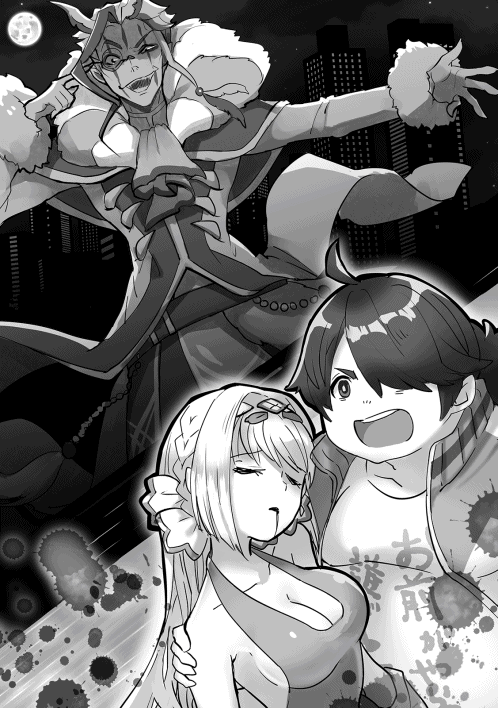
「お前がシェーラをやったのか」
「ええ、その呪文は『死』と呼ばれる古代呪文の一つ。使い捨ての呪文ですが、使われた人間を確実に殺す恐ろしい呪文ですよ。貴方たちのような動物を殺すにはもったいない代物ですがね。ククククク」
「貴様ああああ────っ！！！！」
叫びと共にケスラに切りかかったのはワンコさんだった。彼女はシェーラを傷つけられたことに激昂してケスラに切りかかったのだ。だが、攻撃が当たったと思った瞬間、ケスラの姿が歪んで消えた。恐らくは何かの幻影魔法なのだろう。
「残念でしょうが、彼女は死にます。たとえ神話級の回復薬でもその呪いを防ぐことはできない。貴方がたには彼女の死を止めることはできないのですよ」
声だけを残してケスラは消えた。野放しにしておくのは危険だが、今は奴を追っている暇はない。俺はシェーラに回復薬を使いながらインフィニティに呼び掛ける。
「おい、インフィニティ！ 何か方法はないのか。そうだ、確か魔法作成ってスキルがあっただろ。あれで呪いを打ち消す魔法を作れば」
『残念ですが、時間がかかり過ぎます。彼女の体がもちませんよ』
「そうだ、ゼロスペースに彼女を運べば時間の経過を止められるんじゃないか」
『あの場所では外の時間が経過しないだけです。生き物の時間を止める効果はありません』
「何か、何か方法があるはずだろう。何とかしてくれ、インフィニティ──っ!!」
俺は半泣きになりながら絶叫していた。シェーラがここで死ぬなんてあり得ない。彼女にはもっと話したいことや伝えたいことがあるんだ。彼女を救うためならなんだってする。
インフィニティは暫し沈黙した後に語り掛けてきた。
『一つだけ方法があります。ですが』
「なんでもいい、言ってくれ」
『分かりました。マスターの体内に存在する【勇者】としての力、それをシェーラに一時的に譲渡することで彼女の本来持っている生命力を増強して呪いを打ち消すのです。ですが、この方法には二つのリスクが伴います。一つは呪いに打ち負けた時に彼女が死ぬだけでなく【勇者】の力が共に失われること。もう一つは【勇者】の力があるからこそ、先ほどのダメージに耐えれているマスターが【勇者】としての力を失った瞬間に死にかけるリスクです。それでもこの方法を選びますか』
インフィニティの問いかけを俺は躊躇うことなく頷いた。このまま手をこまねいても間違いなくシェーラは死ぬ。シェーラが居なくなって勇者として生きていても意味がない。
俺の返答にインフィニティは溜息をついたようだった。次の瞬間、体の内側から熱い何かが抜け落ちた。それがシェーラの体内に入り込んだ瞬間、彼女の体が光り始めた。
それを見届けた後、俺の身体の節々が急に痛み出した。それだけではない。塞がったと思っていた傷口から一斉に血が噴き出したのだ。これが勇者としての力を失った代償なのか。急激に薄れていく意識を保とうとしたが、駄目だった。次の瞬間、俺の意識は消失しかけた。だが、ギリギリのところで踏みとどまった。シェーラが助かるのを見届けなければ。
血まみれになりながらも俺はシェーラにありったけの回復薬と回復魔法を使用し続けた。インフィニティが力を分け与えたのが良かったのだろう。彼女の傷が少しずつであるが回復し始めた。
『危険な領域は越えました。あとは私がシェーラ姫の内部で回復魔法をかけ続けます。......マスター、大丈夫ですか、顔色が悪いようですが』
シェーラが助かる。そう分かったことで気が抜けたのだろう。傷の痛みと疲労で立っていられなくなった俺は今度こそ俺は意識を失ったのだった。
再び意識を取り戻した時、周囲には広大で真っ暗な空間が広がっていた。どこか見覚えのある空間だ。そう思って記憶を辿りながら周囲を見渡すと空間の先に巨大な扉がそびえ立っていた。それを見て思い出した。この門の先はデモンズスライムの正体である勇者クリスがいる部屋に繋がっている。何故このタイミングでこの門に辿り着いたのかは分からないが、もしかしたらクリスに呼ばれたのかもしれない。そう思った俺は力任せでは開きそうにない巨大な門に手を触れた。門が少しだけ音を立てて開いたかと思うと中に吸い込まれていた。再び門が閉まっていくのをチラ見した後に俺は部屋の奥に向かって歩き出した。
部屋の中は薄暗かったが、よく見ると西洋風の神殿のような作りになっているようだった。
その神殿の中央で一人の少年が背を向けて座っていた。言うまでもなく、太古の勇者クリスである。彼は目の前に映し出されている様々な映像を見ていた。いったい何の映像なんだろうか。首を傾げながらも俺は近づいていった。すると少年は振り返ることなく、俺に声をかけてきた。
「やあ、来てくれたようだね。藤堂晴彦君」
「クリスさん、あんたがここに呼んだのか」
「いつも呼べるわけじゃないんだが、チャンネルが上手くつながったという事だろう」
クリスは俺の方を振り返ることなく、目の前の映像たちを退屈そうに眺めていた。一体何の映像なのだろう。注意して映像を眺めた俺は声を上げそうになった。映し出されているのが、これまでに俺の体験を映像として映し出したものだったからだ。
「全て君の雄姿を録画したものだ。なかなか男前に映っているだろう」
「どうしてこんなものを見ているんですか」
「ここは娯楽が少なくてね。外に出ようとしても肉体のない僕はここから出ることができない。できることと言えばこのように君の周囲から獲得できる映像を眺めることくらいなのさ。数少ない僕の娯楽と言えよう」
「......そうだ、シェーラは、彼女は無事なんですか」
「安心したまえ。今は命の危機を脱したようだよ」
そう言いながらもクリスさんの表情は実に退屈そうだった。俺は周囲を見渡しながら思った。こんな閉鎖された空間の中でずっと一人きりなのは孤独を感じるはずだ。クリスさんの寂しそうな背中に俺は引きこもりだった頃の自分がダブって見えた。この人、ひょっとして寂しいから話し相手として俺を呼んだんだろうか。
「今日は君に少しだけ文句を言おうと思って呼び出したんだ」
「文句、ですか」
「そうだ、君は先ほど自分の身を顧みずに勇者としての力を一時的に譲渡してまで他者を救ったね。確かに自分の身を顧みずに他人を救うというのは勇者としての美徳かもしれない。だが、そのために君が死にかけるのは許容できない」
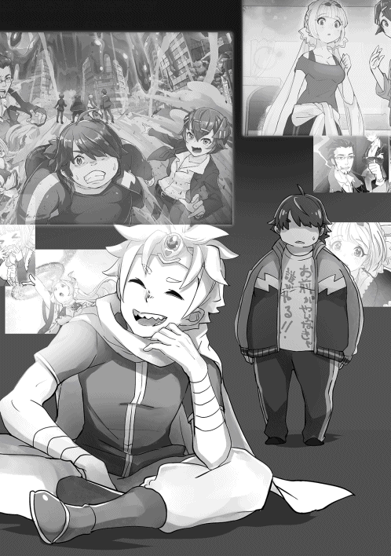
そう話すクリスさんの視線には俺を非難するようなものが含まれていた。何故そんなことを言い出すのだろうか。俺が疑問に思っていると、クリスさんは苦笑した。
「何故僕がこんなことを言い出すのか理解していないようだから説明するよ。君はデモンズスライムであった僕に勝利して僕の【核】を吸収した。今の僕は君の中に憑依する魂のようなものだ。すなわち、君が死ねば僕という存在も消滅するという事だ」
「え、そうなんですか」
「そうだよ。だから君が死ぬんじゃないかと冷や冷やしていた」
クリスさんの言葉に納得した俺は自分の行動の軽率さを恥じた。本人に言われるまでクリスさんのことをすっかり忘れていたからだ。俺の独断で自分まで命の危険に晒されるのはクリスさんからすれば堪らないだろう。
「ごめんなさい、クリスさんのことを全く考えていませんでした」
「仕方ないさ、僕も君にしっかりと現在の状況を説明していなかったのが悪かったんだ。だが、これからは僕のことも考えて無茶をしないようにしてくれると非常に助かるよ」
「な、なるべく努力します」
「確約してくれない辺りが君らしいよな」
クリスさんは俺の返答に対して苦笑いしていた。本当に分かっているのか、そんな意味合いの視線であった。そう思われても仕方ないよな。だが、今後も自分の命と他人の命を天秤にかけるような事態になった時には俺は衝動的に自分の命を懸けてでも他人を救ってしまうような気がする。見過ごせない理不尽に対して手が届くものは命を懸けてでも救う。子猫をトラックから救おうとして勇者になった時からずっと俺はそうしてきたからだ。
言っても無意味だと思ったのか、クリスさんは大きなため息をついた。その後で気を取り直して話してきた。
「さて、話を変えよう。ティルヴィングを召喚したところを見ていたよ。魔剣にいいように翻弄されたようだね。生身で惑星の外に飛び出すのは僕もやったことがない暴挙だった。全くよく生きていたものだ」
「いや、実際死にかけましたよ。とんだジャジャ馬ですよ，あの剣は。よくあんなものを使いこなしていましたね」
クリスは俺の言葉に首を傾げた後に暫く考え込んだ後に何かを納得した様子だった。
「じゃじゃ馬だと。そうか、あの剣を無理やり制御しようとしたのか。それは無理だよ。使い方が間違っている」
「どういうことです」
「あの剣は言うならば荒ぶる風そのものだ。風とは自由に拭き抜けるものだ。あの剣を操るために必要なのは無理やりに押さえつけることではない。吹き抜ける風に身も心も任せることだ」
訳が分からない。禅問答のようなことをいうものだ。首を傾げていた俺は自分の手足が透けていることに気づいた。それを見たクリスは苦笑いした。
「どうやら現実世界の君の意識が戻ろうとしているようだね。また暫しのお別れになるが、元気で暮らしてくれ。何せ今の僕は君が死ねば消滅してしまうのだから」
「待ってくれ、まだ聞きたいことが......」
最後まで言い終える前に俺の身体はその場から消失していた。消え去る直前にクリスさんの俺を見る表情がとても寂しそうだったことが印象に残った。
◆◇◆◇◆◇◆◇
再び意識を取り戻した俺は病院のベッドに寝かされていた。目の前には俺のことを心配そうにのぞき込むワンコさんとシェーラの姿があった。よかった、シェーラは助かったのか。
弱々しい笑みを浮かべる俺にシェーラは抱きついてきた。
「ハル、よかった。もう目を覚まさないんじゃないかと思って」
目に涙を浮かべていたシェーラを抱きしめてあげながら髪の毛を撫でてやると堪え切れなくなったのか、すすり泣きをし始めた。隣で見ていたワンコさんの表情がなんだか寂しそうに思えた俺は少し困ったような表情で彼女を見た。
「ハル君、本当にごめんなさい。私が操られていなければこんなことにはならなかったんだ」
「自分を責めないでください、ワンコさん。そんな顔をさせるために俺は戦ったわけではないのですから」
「そうだな。ごめん。でも本当に目を覚ましてくれて良かった、ぐすん、本当に良かった......」
なんだかワンコさんの目も潤んでいるぞ。まずいな。そう思っていたら見る見るうちに涙が滲んでいく。すすり泣きがすぐに号泣に変わった俺は慌てたが、シェーラを慰めている状況で彼女にまで手が回らない。どういう状況なんだ。これは。自分のことを思って二人の美少女が泣いているというのはこれまでの人生で経験したことがない。
困り果てているとタイミングよく司馬さんが病室の引き戸を開けて入ってきた。二人の女の子が泣いているのを見た司馬さんは少し固まった後に無言でドアを閉めようとした。
「ちょっと、司馬さん。何帰ろうとしているんですか」
「いや〜、すまん。取り込み中のようだから出直そうかと思ってな」
「勘弁してください。お願いしますから居てください。今の状況は完全に俺の手に余る状況なんですから」
「う、うむ、分かった」
流石の司馬さんも現在の状況には戸惑っているようだな。申し訳ないが、この気まずい空気の道連れになってもらおうか。だが、内心でほくそ笑んでいた俺の前で司馬さんは急に真剣な表情になった後、深々と頭を下げてきた。内心の笑みが固まったのは言うまでもない。
突然のことに俺は戸惑ってしまい、どうしたらいいか分からなくなった。
「晴彦、今回はこの馬鹿が迷惑をかけた。本当にすまなかった」
「いやいや、司馬さん、何してるんですか。顔を上げてください」
「そうもいかん。俺はこいつの上司だ。部下の監督不行き届きは上司の責任だ」
司馬さんはそう言った後に泣いていたワンコさんを肘で突くと強引に頭を押さえて下げさせた。泣いているんだから今はやめてあげた方がいいのではないのか。結局、俺が頭を上げてくれと何度も懇願しても司馬さんはワンコさんと一緒に頭を下げ続けたのだった。
◆◇◆◇◆◇◆◇
結局、俺の気が済むまでというよりは司馬さんの気が済むまで二人の謝罪は続いた。実際のところ、今回の一件はワンコさんのせいというよりは帝国宰相ケスラがワンコさんを操ったことが原因であることを説明したことで、渋々ながら司馬さんは納得してくれた。話を聞き終えた司馬さんは腕組みしながら唸った。
「ふうむ、まさかお姫さんの他にお前の強制送還に巻き込まれた奴がいたとはな」
「はい、俺も驚きました」
「しかし、何でそのケスラって奴はお姫さんを狙ったんだろうな」
「そこなんですよね。単に恨みだけの犯行には思えないんです」
凶悪な呪文を使って確実にシェーラを殺そうとしていた。計画的に動いていたような気がするのだ。
「あのケスラという男、私のことを操っていた道化師と同じ服を着ていた。恐らくは同一人物だろう」
ワンコさんからの証言も得て、一連の事件の裏にケスラが関わっていることがほぼ確実だろう。ワンコさんを操って俺やシェーラを殺そうとしたのは間違いない。問題は奴の動機だ。
動機が分からない。そう思っているとインフィニティさんが話しかけてきた。
『彼の動機については推測ができます。恐らくは勇者召喚の呪文を強制終了させたいのでしょう』
「どういうことだ、インフィニティ」
『それについてはマスターとシェーラ姫の現在の状態を説明する必要があります』
インフィニティはそう言った後に俺とシェーラに鑑定スキルを使用した。すると微量の光の粒子が俺とシェーラの身体を覆っているのを見ることができた。
「これは何の光なんだ」
『これは勇者召喚魔法の光です。シェーラ姫が使用した勇者召喚魔法はマスターが召喚された際に終了するはずでした。しかし、マスターが元の世界に強制送還されたことによって魔法は最後まで完了せずに中途半端な状態で現在も継続しているのです』
知らなかった。ダイエットすれば元の世界に戻れるという説明は聞いていたが、まさか呪文自体が現在も継続していたとは。
『説明を続けます。ケスラが来襲した際、私は鑑定スキル∞を使用してケスラの現在の状況を確認しました。彼が現在のマスターやシェーラ姫と同様の光を纏っていることもその時に確認しています。恐らく彼は元の世界に戻るためにマスターやシェーラ姫を狙ったのではないでしょうか』
「なんで俺達の命を狙うんだ」
『一度発動した呪文を終了させるには発動した呪文の対象を消去するか、使った術者を殺さないといけないからです』
なるほど、元の世界に戻るために俺とシェーラのいずれかを殺そうと考えているという事か。厄介な殺人鬼に狙われたものだ。確かに巻き込んでしまったのは悪かった気もするが、だからと言って黙って殺される程、俺はお人よしではない。
降りかかった火の粉は振り払うのみだ。再びケスラが襲ってきた時、返り討ちにしてくれる。俺はそう決意したのだった。
◆◇◆◇◆◇◆◇
話を終えた後に病室を出た司馬はそのまま廊下を歩き始めた。そんな彼の後をワンコが追う。その表情はどこか張り詰めたものだった。司馬はワンコが後を追ってきたことに気づいていたが、振り返ることなく歩き続けた。
「あの、司馬さん」
「.........」
「司馬さん、待ってください」
司馬は立ち止まると振り返った。その表情を見たワンコが思わず後ずさる。司馬の表情がこれ以上ないくらいに冷たいものだったからだ。
「なんだ、まだ怒られ足りなかったのか」
「いえ、そういうわけでは」
俯くワンコに対して司馬は溜息をついた後に再び歩き始めた。その後をバツが悪そうな表情をしながらワンコが続く。異様な雰囲気にすれ違う看護婦たちも振り返るのだが、司馬はお構いなしに足早に歩いていく。そのまま屋上までたどり着いた司馬は懐から煙草を取り出した後に吸い始めた。
「お前さ、自分が何を仕出かしたか分かっているのか。敵に操られて護衛対象を殺そうとするなんてＷＭＤの捜査官失格だ。何か反論があるか」
「いえ、返す言葉もありません」
「お前には捜査を降りてもらう。荷物をまとめて国に帰りな」
「っ!!」
司馬はあくまでも冷徹な表情を崩さなかった。その表情には慈悲も許容も何もなかった。見放されたのだ。ワンコはそう理解した。今にも泣き出しそうになりながらも、ワンコはグッと涙を堪えた。
「確かに私はハル君とシェーラに嫉妬し、その感情を利用されて敵に操られました。こんな自分を情けなく思っています。ですが、どうか汚名返上の機会を頂けないでしょうか」
「口でなら何とでも言えるさ。また操られないという保証がどこにある」
確かにそんな保証などどこにもない。何も言えなくなったワンコは俯いて唇を噛んだ。司馬はワンコが何か言いだすのを待ちながら煙草の煙を大きく吸った後に溜息と共に吐き出した。
「お前が操られたのは精神が未熟ゆえだ。だから惑わされる」
ワンコは司馬がどういう意図で話し始めたのか分からずに呆然となった。司馬はそのままの表情で続けた。
「所有している固有装備である【剣狼】と【孤狼】を使いこなせていないのも精神の未熟さゆえに刀に認められていないからだろう。二本の刀を使いこなせるようになるまで晴彦達と会うのは禁ずる」
それは司馬にとってのせめてもの恩赦であった。彼女は司馬の言葉を噛みしめるように頷いた。そんな彼女を一瞥した後に司馬は立ち去るのだった。
◆◇◆◇◆◇◆◇
晴彦が病院から退院した夜のことだった。眠っている晴彦の体内で異変が起きていた。体内魔力が活性化して彼の身体が明滅しているのである。異変を起こしているのは彼の所有する鑑定スキル：∞であるインフィニティが原因だった。スキルながら自我を持ったインフィニティは晴彦と接して人間というものを理解するにつれて微かな自我というものが芽生えてきた。ゆえに晴彦の視界越しに見える輝いている日常というものを自身でも経験したいという『欲望』が生まれたのである。今まではそれを隠して過ごしていたのだが、晴彦が危険に晒されるたびに彼女は自分に実体があればと渇望するようになっていた。
彼女にとって都合がよかったのは成り行きとはいえシェーラ・シュタリオンの体内に入り込んで呪いの治療を行ったことで人間の女性の体の正確な情報を得ることができたのである。
後は獲得した情報を参考にしながら具現化を行うだけである。
彼女が実体を獲得するために行ったのは自分をコアにした【分身体】の作成だった。分身体は持ち主である晴彦と意識を共有するが、単身で五感を持っているために単独で行動が可能になる。味覚や聴覚を持った分身体を作成すれば人間と変わりない暮らしをすることができる。インフィニティはそう考えた。
もっとも計画実行のためには障害も伴う。晴彦の能力の分身体を作るとなると必要な魔力が恐ろしい数値になるのだ。値にして５０００。晴彦の内臓魔力を超える数値であったためにこれまでは実行できなかった。だが、化け蜘蛛とワンコとの戦いでレベルアップした晴彦は５０００を超える魔力を獲得することができた。条件は整った。あとは計画を実行に移すだけである。
光の明滅を繰り返す晴彦の身体の中では凄まじい量の情報量と魔力が行き交っていた。人体構成、スキルの組み合わせ、主をサポートするのに的確な体格や性別の構成。おおよそ数万通りのシミュレーションを行いながらインフィニティはついに最適解にたどり着いた。そして晴彦の魔力を使用して『彼女』は世界に生まれ落ちた。
◆◇◆◇◆◇
次の日、目覚めた俺は仰天した。何者かが俺の布団の中に潜り込んでいたのである。横向きに背を向けているために顔は分からないが、どうやら若い女のようである。なぜ女だとわかるのかというと彼女が何も身につけていないのが掛け布団の間から見えてしまったからである。髪の色が銀髪なのでシェーラやワンコさんではないようだが、いったい誰なんだ、この人は。連れ込んだ覚えもなければ見覚えすらないぞ。女を連れ込むような甲斐性どころか度胸さえ持ち合わせていない。
こんな所をシェーラに見られたら大変だ。俺は慌てて布団から起き上がると彼女の肩を揺さぶった。銀髪の女は眠っていたようだが、揺さぶられたことで眼を覚ました様子だった。
「......ふああ......、もう朝ですか、マスター」
マスター？ インフィニティのような呼び方をする人だな。現実離れした美人なのだが、どこで会ったか全く思い出せない。警戒しながらも俺は彼女の素性を探ることにした。
「......君は誰なんだ」
「ひどい、私の事を......お忘れなんですか」
銀髪の美少女は悲しそうな顔をした。そんな顔をさせてしまい、申し訳ないのだが全く身に覚えがない。仕草の一つ一つが非常に可愛らしいのだが、それよりも彼女の無防備でエロい格好の方が気になった。シーツで胸元を押さえているのだが、明らかに何も身に付けていないようにしか見えない。見てはいけないと思いながらも男の本能として無防備な胸元を見てしまうのは仕方ないことだと言いたい。少女は俺の目線の先を見た後になんだか楽しそうに口元を押さえた。
「あらあら、マスターも男の子なんですね」
「何をいってるんだ、見てない、見てないぞ。胸なんて見てない！」
「ご要望とあればもっと近くで見せますが」
自分の胸元を覗き込みながら何を言ってるんだ、この子は。これはやばい。シェーラに見つかる前にお引き取り頂かないと俺の命がヤバい気がする。怯えすぎているせいだろうか。シェーラが炎の魔法を使ったときのような熱のようなプレッシャーを背中から感じるぞ。
本当に気のせいなのだろうか。何気なく振り向くとそこには嫉妬の炎を身に纏ったシェーラさんの姿があった。
「ハル、そこの方は一体どこのどなたでしょうか」
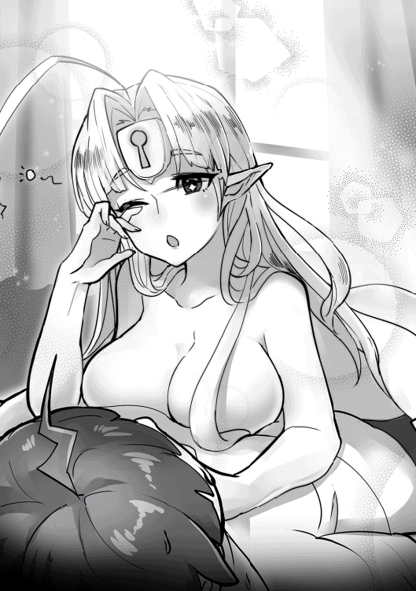
「違うんです、シェーラさん、これには海よりも深いわけが」
彼女が俺に向けている表情はあくまでも満面の笑顔なんだが、彼女の背後からは溢れ出さんばかりの殺気が湯気のように迸っていた。比喩という訳でなく、彼女の周囲の大気が揺らめいて見えるのが実際に熱を放っている証拠だろう。逃げなければ殺されると思った。だが、体が思うように動かない。蛇に睨まれたカエルというのはこういう気分なのだろうか。客観的に見てみて自分の布団の中で見知らぬ異性が寝ている状況というのは詰んでいる。言い訳のしようがない。もしかしたら和やかにほほ笑みかければ許してくれるかもしれない。そう思ったのだが、恐怖が手伝ってぎこちない笑みしか浮かべることができなかった。
「何を笑っているんですか」
「ち、違うんだ、これは」
次の瞬間、怒りの感情をコントロールできないシェーラによって部屋が大爆発を起こしたのは言うまでもない。
◆◇◆◇◆◇
謎の美少女の正体は俺の魔力を使用して実体化したインフィニティさんでした。それが分かったのはすでに俺の部屋が手遅れの状態に変わり果てた後であった。消し炭になった部屋を虚ろに眺めながら、我ながらよく死ななかったものだと感心した。
大爆発を起こした部屋は【快適空間作成】の効果によってゆっくりと復元しているのだが、爆発の余波によってちりちりになった俺の髪は簡単には元には戻らなかった。
自分の誤解であったことを知ったシェーラは自分が破壊した部屋の隅で気まずそうにしていた。まあ、誤解を生むようなことをしてしまったのだから頭ごなしに怒るわけにもいかない。そう思って厳重注意だけにしておくと彼女は力なく頷いた。
その後に部屋の片づけを行っていると急にドサリという何かが倒れたような物音がした。何かと思って振り返ると実体化したインフィニティが床に倒れていた。慌てて駆け寄ると、彼女はお腹を押さえながら苦しそうな顔をしていた。
「大丈夫か、しっかりしろ」
「マスター、ごめんなさい、もう駄目です」
原因が分からない状況であるが、インフィニティが苦しんでいるのは間違いない。実体化した際の副作用か何かだろうか。慌ててインフィニティを抱きかかえた俺はアイテムボックスから取り出したポーションの栓を開けようとしたところでシェーラに止められた。
「ハル、落ち着いてください。彼女はきっと空腹なんです」
「なんで分かるんだ、シェーラ」
「耳を澄ませてください」
言われるままに耳を澄ませてみると『きゅるるる』という腹の虫にしか聞こえない音が聞こえてきた。抱きかかえていたインフィニティの頭を乱暴に床に放り出したのは言うまでもない。床に頭を打ち付けた痛みに半泣きになりながらもインフィニティは起き上がった。
「いた〜い、何をするんですか」
「やかましい。人騒がせなことをするからだ」
「わざとじゃないですよう。でも初めて知りました。人間というものはこんなにお腹が減るものなんですね。マスター、何か、何か食べ物を下さい」
溜息をつきながらも俺は食事の準備をすることにした。とはいってもインフィニティの空腹具合を見る限りでは買い物に行っている暇はないだろう。冷蔵庫の中にある有り合わせで作るしかない。適当にあり合わせの野菜と豚肉で野菜炒めと豚汁を作って食卓に出してやった。インフィニティは初めての食事が嬉しかったのか、テーブルの上に置かれた料理を見るなり、挨拶もそこそこにがっつき始めた。
銀髪の美少女が一心不乱に料理をがっついている姿というのもシュールだよな。さっきはシェーラを宥めるのに必死でちゃんと観察していなかったが、人並み外れた美貌である。中身がインフィニティだと分からなければ見惚れていたかもしれない。
インフィニティの説明では実体化をする際に俺の魔力を使用したらしい。人間の構成に近いように魔力を物質化変換したそうなのだが、見た目は本当に人間にしか見えない。傷をつければ血が出るし、痛覚も有しているそうである。痛覚だけでなく味覚や聴覚、視覚といった人間の五感を体感することができるのだという。ふと疑問に思ったことを口にした。
「なんでまた実体化なんて考えたんだ」
「一つはマスターの戦いの役に立つためです。もぐもぐ、そしてもう一つは人間というものをもっと深く理解するためです。もぐもぐ、これも美味しいですね。学びを深くするためには実際に自分が人間の生活や交流を体験するのが一番であると思いまして。あ、おかわりをお願いします、大盛で」
「説明するか食べるかどっちかにしろ」
「あ、ふぁい、では食事に集中することにします。もぐもぐもぐ」
「そこは説明に集中してくれよ」
嬉しそうにどんぶり飯をがっつくインフィニティに溜息をついた。本当に人の話を聞いているのだろうか怪しいものだ。こいつ。実体化した理由は俺達が食事をしている姿が単に羨ましかったからじゃないだろうな。そんなことを思いながらも俺はおかしなことに気づいた。テーブルの上の料理が消えていくスピードが尋常でないのだ。いくら何でも目に見えないスピードというのは異常すぎる。まさかと思って【クロックアップ】を使用すると、予想通りにインフィニティは【クロックアップ】を使用した俺と同じ速度で行動していた。
「お前さ、何で【クロックアップ】が使えるんだ」
「マスターが使用できるスキルはたいてい使用できますよ。核は私ですが、肉体はマスターの分身体ですから」
ドヤ顔でそう語るインフィニティの口の周りはご飯粒だらけになっていた。実体化したことで以前よりもポンコツ具合が増している気がする。ジェスチャーで口の周りを指さしてやると腕で口を拭っていた。
「日常生活に【クロックアップ】を使用するのは感心しないぞ」
「マスターだって一般人を相手に使用していたじゃないですか」
痛いところを突かれた俺はグッと言葉を詰まらせたが、それでもスキルを使わないように何回も注意するとようやく【クロックアップ】を解除した。この人、所有する知識量は半端なく多いのだが、一般常識というものは所有していないからな。注意して見ておかないと大問題を起こしそうな気がする。こうして我が家に危険な居候が増えたのだった。
◆◇◆◇◆◇◆◇
食事を終えた後にインフィニティは満足したのか、ソファで横になりながらくつろいでいた。中身はあれなスキルであるが、見た目は銀髪の美少女である。そんな美少女が着ている服装が俺のワイシャツのみなので完全にサイズが合っていない。はっきり言って目に毒である。流石にまずいと思った俺はため息交じりに突っ込んだ。
「その服装はどうにかならないか」
「え、駄目でしたか。マスターの嗜好を反映させたんですが」
近くにシェーラがいるような場所で誤解を生むようなことを言うのはやめてほしい。頼むからちゃんとした服装をしてくれ、そう訴えると彼女は得意げに頷いて右手をかざした。次の瞬間、彼女の体が眩い光に包まれたかと思うと服装が変わっていた。白のレオタードか水着を思わせるような近未来的な衣装に身を包んでいた。印象的なのは額についた鍵穴のような穴の開いたサークレットである。
「ふふん、これならどうですか、マスター」
インフィニティがそう言ってクルリと回った瞬間、露わになっている横乳が見えてしまった俺はむせ返りかけた。前はレオタードだが、後ろはパンツしか履いてないようにしか見えないというのはどういう事だろう。背を隠すような長い髪の毛がなかったら完全にアウトな露出度だぞ。直視すると色々とまずい気がする。そう思った俺は話題を変えて誤魔化すことにした。
「その額の鍵穴には何か意味があるのか」
「これはですね。私にも何か分からないんです。この服装は元々設定されていたデフォルトの服装ですから私の意図は反映されていません。形から判断するに何かの封印ですかね」
どうやらあまり触れてはいけないものなのかもしれない。普段が色々と規格外のスキルなのだ。秘められた力とやらがあるとしたら解放してはいけない気がする。そんな俺の気持ちを知ってか知らずか、インフィニティは自分の両手をとじたり開いたりしていた。
「どうかしたのか」
「いえ、実体を持てたのが本当に嬉しいなあと思いまして」
「そういうもんか」
普段から実体を持って暮らしている俺としてはインフィニティの気持ちはよく分からなかったが、それを正直に伝えると怒られた。彼女に言わせれば、これまで俺の視界を通じて現実世界の様子を見聞きすることはできたものの、それはあくまでもフィルター越しの風景にしか過ぎないものだったらしいのだ。
例えば俺が旨そうな料理を食べたとする。インフィニティは俺の視界越しにその料理を見ることはできても匂いや味というものは体感することができない。旨い旨いと俺が言えば言うほど、それが体感できないインフィンティはフラストレーションが溜まっていく。
彼女はむくれながら、こう告げた。
「私が一番羨ましかったのはワンコやシェーラと共にお寿司を食べに行った時のことです。あれを見たせいで実体化を実現させようと思ったんのですから」
そ、そうなのか。知らぬこととはいえ、酷いことをしていたのかもしれない。インフィニティに対して少々の罪悪感を覚えた俺はある人物のことを思い出した。俺の精神世界の中にいる太古の勇者クリスさんのことである。
彼もインフィニティと同様に俺の視界越しでしか外界の情報を得ることができない人である。外に出られない状況に対して不満を感じているのではないだろうか。俺が思うのはそれだけではない。インフィニティは実体がなくても俺と会話をすることができたが、クリスさんは普段は外界と遮断されている空間の中、一人で過ごしている。実際、俺のことをちょいちょい呼び出すのも、もしかしたら寂しいからじゃないだろうかという疑惑を持っているのだ。仮に俺が同じ空間に閉じ込められたら正気でいられるとは、とてもじゃないが断言できない。かつて引きこもりで人と会う事ができなかった俺の孤独な姿とどうしてもあの人の寂しそうな背中がダブってしまうのだ。俺の説明を腕組みしながら黙って聞いていたインフィニティは何事かを思いついた様子だった。
「実際にデモンズスライム、いや、クリス氏の様子がどうだったか見てみましょうか」
「え、そんなことができるのか」
「ふふん、何でもできる万能鑑定スキルにお任せあれ」
インフィニティはそう言うとアイテムボックスの中から古びたテレビを取り出した。今時珍しいブラウン管のテレビである。一体こんなものをどこから持ち出したのか。俺のツッコミを流しながらインフィニティは慣れた手つきでテレビの電源を入れた。そこにはノイズ交じりの白黒画像で精神世界にいるはずのクリスさんの姿が映し出されていた。画面の右端には『ＲＥＣ』と書かれているので録画なのだろう。どうやら画面の中のクリスさんが見ているのは俺がワンコさんと戦っていた時の姿のようだった。
『あ〜あ、そうじゃないって、なんでグングニルを使わないんだよ。なにしてるんだよ、よし、そこだ、行け！』
どうやら俺の戦っている様子を応援してくれているようである。俺の戦う手段に対して文句が多かったのは閉口させられたが、随分と熱心に応援してくれるものだ。
何故こんなに俺のことを応援してくれるのか。そんな疑問が頭をよぎったが、よくよく考えれば俺の体の中に存在しているクリスさんは俺が死ねば一緒に死んでしまうと言っていた。
運命共同体であるクリスさんからしてみれば俺の動向は決して他人事ではないわけだ。会って話すときは何を考えているのか、いまいちよく分からなかったし、デモンズスライムだった時は恐ろしい敵にしか思えなかったが、人間味のあるところもあるんだな。
そんなことを思いながら録画映像を見ているとクリスさんは突然頭を抱えて叫び出した。どうやら俺が自らの傷を顧みずに呪いをかけられたシェーラを助けようとしたのを見て悲鳴をあげたようである。
『おいおい、やめろって、なんで勇者の力をシェーラ姫に譲渡してるんだよ！ やめろって、そんなことをしたら自分が死ぬかもしれないんだぞ！』
それは絶叫に近かった。だが、当時の俺にはクリスさんの悲痛な叫びは届いていなかった。クリスさんは自分の呼びかけが無駄であったことに気づいて力なく項垂れた。モニターでは勇者としての力を一時的に失った俺が血まみれになって倒れている。慌てて駆け寄ったワンコさんが抱き起そうとするものの、目を覚ますことのない俺の様子をモニター越しに眺めながらクリスさんは大きな溜息をついた。
『またしても他人のために死にかける。学習能力がなさすぎだ。どうしようもないお人よしだな、君は』
クリスさんを幻滅させてしまったようだ。合点がいった。だから俺はこの後でクリスさんのいる精神世界に呼ばれて文句を言われたのだ。だが、アングルが切り替わった画面ではクリスさんはポツリと呟いていた。
『全く。僕が勇者だった時の周囲の人間達も君のようなお人よしばかりならよかったんだけどね』
それは誰かに聞かれないくらい小さな呟きであった。だが、その時のクリスさんの表情があまりにも寂しそうなのがどうしようもなく気になったのだった。録画映像の再生が終わるとテレビはブツンと電源が切れた。画像を見終えた俺は少し考え込んだ後にインフィニティに尋ねた。
「あのさ、【実体化】のスキルという奴はお前以外にも有効なのか」
「【実体化】を使用するためには肉体を宿す核となる魂が必要です。マスターの体に私のような魂が宿っていない限りは【実体化】を使用することはできません」
「そうか」
「何かお考えのようですね」
「ああ、俺の体に宿っているクリスさんの魂に【実体化】を使用してあの空間の中から解き放つことはできるか」
「理論上は可能ですね」
「ちょっと待ってください、ハル、そんなことをして本当に大丈夫なんですか」
俺とインフィニティの話を聞いていたシェーラが話に参加してきた。気のせいか青い顔をしているな。察するに俺の提案に不安を感じた様子である。確かにシェーラはデモンズスライム形態の時の狂暴なクリスさんの姿しか見ていない。クリスさんを実体化させるという事はデモンズスライムに変身するかもしれない怪物を解放しようという事に他ならない。流石に不安になるのは当然だろう。だが、俺にはクリスさんの寂しそうな横顔が忘れられなかった。閉ざされた暗い空間の中でずっと外の様子だけを見ながら過ごしていく彼の姿が引きこもりであった時の自分の姿と重なった。俺だって現在の状況にならなければ、クリスさんと同様に一生を引きこもりのままで過ごしていたかもしれない。
それを考えるとクリスさんの姿は他人事のようには思えなかった。根気よくシェーラにそのことを伝えるとやがて彼女は根負けしたようだった。
「全く。ハルは言い出したら聞かないんですから」
「ごめんな。いざとなったら何とかするからさ」
シェーラを説得し終えた俺はふとインフィニティが何も言ってこないことに気づいて彼女の方を見た。彼女は何かを言うでもなく、俺達の方を見て微笑んでいた。
「どうしたんだ、インフィニティ」
「やっぱり体があるというのはいいものですね。マスターの脳内で話をしていた時よりもお二人との距離が短くなったように感じます」
「そういうものか」
「そういうものですよ」
身体を得たことによってインフィニティにも人間らしい感情というものが芽生えてきているという事だろうか。何気ない会話であっても嬉しいのかもしれない。
今後の方向性を決めた俺は二人に断りを入れてからクリスさんの下に向かう事に決めた。だが、ここで問題が発生した。どうすればクリスさんのいる精神世界に行けるのかが分からなかったのである。よくよく考えてみればこれまでも彼に自分から会いに行くことはなかった。意識を失っている時や寝ている時に向こう側から呼ばれたのである。
その話をインフィニティにすると彼女はおもむろにアイテムボックスの中から丈夫そうな括り紐を取り出した。嫌な予感がした俺は引きつり笑いを浮かべながら尋ねた。
「そうと決まれば善は急げですね」
「ちょっと待て。何となく嫌な予感がするんだが、それで一体何をする気だ」
「はい、クリス氏のいる空間にマスターの精神体を向かわせるために意識を失わせるにはこれが一番かと思いまして」
インフィニティはあくまでも満面の笑みであった。その邪気のない笑みが逆に凄まじく恐ろしく感じるのは俺だけだろうか。いや、そんなはずはない。
「どう考えてもこのチョイスは頭がおかしいだろ」
「しょうがないじゃないですか。電撃を使っても吸収してしまう人には物理的手段が一番です」
誰のせいで電撃吸収するような体になったと思ってるんだ。そう反論しようとした時にはすでにインフィニティは素早く俺の背後に回っていた。この女、またしても【クロックアップ】のスキルを使用していやがる。さっき使用しないように注意して頷いたはずなのに、もう忘れたのか。このニワトリ頭め。首を括り紐で締め付けられながら俺は意識を失った。
◆◇◆◇◆◇
奇妙な空間の中で俺は漂っていた。実体ではなく精神体の状態なのだが、締め付けられた首が痛い気がする。インフィニティめ、後で覚えていろ。再び意識を取り戻した時、周囲には広大で真っ暗な空間が広がっていた。確か扉があるはずだ。そう思って周囲を見渡すと空間の先に巨大な扉がそびえ立っていた。力技では空きそうにないが、振れると簡単に開いたはずだ。そう思いながら門に手を触れると少しだけ音を立てて開いた。その次の瞬間、扉の奥に吸い込まれていた。再び門が閉まっていくのをチラ見した後に俺は部屋の奥に向かって歩き出した。薄暗い神殿の中央でクリスさんは座っていた。何とも言えない微妙な表情をしていた。
「その様子だとこれから何をするかは知っていますね」
「君の行動はここから筒抜けだからね。しかし、君もインフィニティ君も人が悪い。この空間を録画していたのであれば最初からそう言ってくれ。録画映像が流れ出した時は顔から火が出るかと思ったぞ」
「いや、俺もあんな真似ができるなんて、さっきまで知りませんでした」
「つくづく規格外だな、君のスキルは」
「俺もそう思います」
そう答えながら手を差し伸べたが、クリスさんは俺の手を握り返そうとしなかった。喜びよりは困惑の色の方が濃い表情をしていた。
「あのさ、一応聞くけど、その手はどういうつもりで差し出しているんだい」
「ここから連れ出そうかと思いまして。駄目でしたか」
俺の言葉にクリスさんは大きなため息をついた。どうしたのだろう。外に出たがっていたように見えたのだが、躊躇うとは思っていなかったので戸惑ってしまう。俺の顔を微妙な表情で暫く見つめた後に首を横に振った。
「分かっていない。僕を連れ出すことがどういう事態をもたらすのか君は全く分かっていないよ」
クリスさんはそう言うと自分の身体の内側から禍々しい力のオーラを迸らせた。あまりにも禍々しい気配だった。デモンズスライムと対峙した時のような異様な迫力に俺は思わず後ずさりながら唾を呑み込んだ。オーラは周囲を包み込み、今にも俺の体にも触れようとしていた。
「待ってください、その力は一体なんなんですか」
「これこそが僕が封印されていた理由だよ。この力は魔王の力。魔神獣を倒したものはその身に【魔王】の力を内包する。そんな僕を解放するという事は魔王となり果てる力を解放すると同じ事になるんだ」
クリスさんがそう言った瞬間に周囲の景色が変わった。現代の地球ではなく、中世の城のような建築のような建物の中だった。俺とクリスさんの目の前では何者かが大勢と戦っていた。
それは傷だらけの金髪の騎士であった。彼の目の前ではシェーラと同じような高貴そうなドレスを身に纏った女性が兵士たちに囚われていた。どうやら騎士は彼女を救おうと戦っているようであった。彼が持っている剣を見て俺は息を呑んだ。その剣は俺が持っている魔剣ティルヴィングであったからだ。あの金髪の騎士は誰かに似ていると思えた俺は声をあげそうになった。騎士とクリスさんと面影が重なったからだ。つまり、あれはかつてのクリスさんなのか。状況を読めずに俺が戸惑っているうちにも大勢の弓兵たちが騎士に向かって凄まじい数の矢を放っていた。騎士は纏った風による魔法障壁によって矢を悉く跳ね返していた。だが、その間に魔法使いたちが生成した魔法の鎖によって彼は行動の自由を封じられていた。ティルヴィングで飛翔しながら戦っていた騎士だが、多勢に無勢では勝てなかったようである。
魔法で作られた鎖による戒めによって行動を封じられた騎士はそれでも動こうとした。だが、人間一人の力では複数の人間によって作り上げられた魔法の鎖から逃げ出すことは不可能だった。騎士の抵抗を嘲笑うかのように彼の足元に漆黒の闇が生まれ、闇の中に体が沈み込んでいく。騎士の身体のほとんどが闇の中に消えていこうとした瞬間、闇の中から凄まじい質量の何かが飛び出してきた。それを見た俺はゾッとした。闇から飛び出してきたのは俺が戦ったデモンズスライムであったからだ。今の騎士がデモンズスライムに変化したという事なのだろう。闇の沼の中から自由となったデモンズスライムは津波のような勢いで縦横無尽に暴れ出した。あとはもう虐殺に近かった。逃げ惑うもの、跪いて許しを請いながら泣き叫ぶもの、必死に抵抗するもの、その全てをデモンズスライムは巨大な体の圧倒的な質量によって容赦なく押しつぶして殺していった。
「この光景は一体なんなんです」
「僕のかつての姿さ。デモンズスライムを倒すほどの力を持っていた当時の僕を恐れた母国の人間達は結託して僕を封印しようとした。万策尽きた時に僕が頼ったのは【魔神獣】の力だった。だが、人間が制御できるような力ではなかったんだ」
自我があるとは思えないほどの暴れ方でデモンズスライムは動くもの全てに襲い掛かっていく。燃え盛る焔の中で蠢く不確定系の影は正しく化け物だった。燃え尽きて瓦礫と化した城の中でデモンズスライムと化していた騎士は人間の姿に戻った。朦朧とする意識の中で騎士はよろめきながら歩いていき、跪きながらも何かを探し始めた。瓦礫の中から見つけたのは兵士たちが捕らえていた女性が身に付けていた指輪であった。
「あれはなんですか」
「妻の身に付けていた装飾品さ。滑稽だろう。自分を見失って化け物になった僕は兵士だけでなく、自分の妻も殺していたのさ。全てが終わった後に彼女がいた場所に落ちていたのは彼女の指輪だけだった」
装飾品を抱きかかえながら騎士は嘆き悲み、天に向かって絶叫していた。だが、それに応えるものはどこにもいなかった。それをクリスさんは冷ややかに見つめていた。その表情には自分に対する怒りのようなものが感じられた。
「君もあんな愚か者と同じ思いはしたくないだろう」
クリスさんがそう言った後、周囲の風景は元のような暗闇の中に戻った。先ほどまでの場面があまりに衝撃的だったからこそ、静寂に包まれた空間の中が不気味に感じられた。恐らくは俺は怯えたような表情をしていたのだろう。クリスさんは俺の顔を見て少しだけ寂しそうな顔をした。
「もう僕に構おうなんてするな。心配しなくていい。今まで通りに僕はここで君の活躍を見ている。さあ、元の世界に帰る時だ」
「待ってください。話はまだ......」
そうだ、俺の話はまだ終わっていない。そう言おうとした俺に対してクリスさんは困ったような笑みを浮かべた後に俺の方へ向けて手をかざした。次の瞬間に不可視の力によって部屋の外に吹っ飛ばされていた。宙に舞った俺の前でクリスさんのいる空間の門が閉まっていく。まずいと思った俺は着地すると同時に部屋の中に入ろうと走った。だが、閉まる門は待ってくれない。このままではまずいと思った俺は無我夢中で走っていた。何とか門が閉まりきる前に部屋の中に滑り込んだ俺にクリスさんは驚いた顔をしていた。
「何故戻ってきたんだ」
「話がまだ終わっていないからですよ」
あなたがしようとしていることは他者を拒絶していた時の俺と同じだから。言葉でそう伝えようと思ったが、それだけでは心を閉ざしているクリスさんを説得するには足りないと思った俺は鑑定スキルを呼び出した。
「おい、インフィニティ、聞こえているんだろ。返事をしろ」
俺の呼びかけに対してインフィニティからの返答は暫くなかった。だが、待ち続けるとノイズ交じりで聞き慣れた鑑定スキルの声が聞こえてきた。
『ザザ......マスター......どうされたんですか』
「良かった。声が届いたんだな。なら俺の過去の記憶を映像として再生してくれ。思い出したくもない光景だが、再生場面は俺の思考を読めば分かるだろう」
『了解しました。マスターの記憶のサイコメトリングを開始します』
インフィニティが返答した後にクリスさんと俺の周辺の景色が切り替わっていく。切り替わった景色、それは俺が思い出したくない過去の光景であった。目の前には周囲の人間から豚と呼ばれて部屋に引きこもっていた俺の姿があった。外界との交流はインターネットだけ。自暴自棄になっていた俺の部屋はゴミで溢れていた。その部屋の凄まじさはクリスさんでさえ眉をひそめるものだった。
「晴彦君、この光景は一体なんだ。君は僕に何を見せようとしているんだ」
「クリスさんが見せたものと同じ、これは俺の過去の光景です。外界との接触を断って引きこもっていた俺は十年という月日をこうして無駄に過ごしていきました」
俺は記憶映像に映し出される自分の横に立ってクリスさんを見た。我ながら過去のトラウマを他者にさらけ出すということはいい気分がするものではなかった。そんな俺の気持ちなどまるで無視しながら過去の俺はディスプレイに釘付けになっている。だが、それは現実逃避に過ぎないのだ。
「クリスさんとは状況が違います。貴方に偉そうなことが言えるほど、俺は過酷な経験などしていない。だが、一人きりで過ごす孤独の辛さは人一倍知っているつもりです」
「だから君は僕のことを放っておけないというのか」
「俺のことを思いやって一人きりになろうとする人間を放っておけるわけがないでしょう。魔王の力を制御する方法を一緒に考えましょう」
俺はそう言って再度クリスさんに手を差し伸べた。クリスさんは反射的にその手を掴もうとしかけたが、躊躇した後に手を引っ込めようとした。彼の手の周りには禍々しい魔王の力のオーラが纏わりついていた。それに触れさせたくないと思ったのだろう。だが、俺はあえて引っ込めかけたクリスさんの手を力強く握った。クリスさんの手を介して俺の体に魔王の力のオーラが纏わりついていく。腕が焼け付くようだった。纏わりついたオーラはそのまま俺の腕に蛇のように纏わりついたかと思うと呪文のような入れ墨となって染み込んでいくではないか。その様子を見たクリスさんが慌てだした。
「手を放せ！ 魔王の力に触れれば君も魔の力に魅入られるぞ」
「これぐらいの覚悟がなければ貴方を外に出そうなんて考えませんよ」
「君は......本当に愚か者だな」
クリスさんの言葉に俺はあえて答えることなく、代わりに満面の笑みを返してやった。俺の笑みに釣られてクリスさんはぎこちなくだが、笑い返してくれたのだった。
◆◇◆◇◆◇◆◇
再び現実世界に帰還した俺はインフィニティに命じてクリスさん用の分身体を作成するように命じた。すでに精神世界の様子を見ていたのか、クリスさんそっくりの少年の姿をした分身体が床に寝かされていた。全く仕事の速い鑑定スキルである。俺はインフィニティに指示されるままに分身体の胸に手を当ててクリスさんの魂を分身体に移動させるための魂のパスを繋いだ。彼の魂は精神世界から連れ出して俺の腕の中に宿っている。その手を分身体の胸に触れさせると分身体の肉体に光る紋章が刻まれていく。それはクリスさんが封印されていた門に刻まれていたものと同じ紋章であった。同時に俺の体の中から何かが抜け出ていくのが分かった。いうなれば、それは強大な魔力の塊だった。禍々しさを伴う魔力の塊が強大な嵐のように渦巻いている。近くにいたシェーラとインフィニティが抱き合って怯えたような表情を浮かべている。いや、完全に怯えているよな。彼女たちの表情を見て今更ながらに解放してはならない人を解放しようとしているのではないかという不安を覚えた。
いや、今更後悔してどうするんだ。自分に言い聞かせていると、やがて膨張した魔力の奔流は分身体の体の中に入り込んでいった。嘘のような静寂が辺りを包んだ後、魂を宿したクリスさんの分身体はうっすらとまぶたを開けて起き上がった。
「お目覚めですか、クリスさん」
クリスさんは俺の方を見た後に複雑そうな表情を浮かべた。少し嬉しそうな、それでいて困ったような表情だった。その後に何かに気づいたクリスさんは俺の腕を強引に掴んで服の袖を捲りあげた。そこには魔王の力に侵食された証である禍々しい紋章が刻まれていた。彼はそれを見た後に深いため息をついた。
「このお節介が。僕の警告を無視するからこんなことになるんだ」
第一声が憎まれ口ですか。解放するんじゃなかったかもしれない。そう思った次の瞬間、クリスさんは俺から目を逸らして俯いた。どうしたのだろうか。ひょっとして気分が悪いのかな。そう思って声をかけようとした瞬間に傍らにいたシェーラに肩を叩かれた。彼女は黙って首を横に振っていた。そっとしておけという事だろうか。そのジェスチャーを見てからクリスさんの方を見てから俺はシェーラの仕草の意味を理解した。クリスさんが泣きだしていたからだ。恐らくは二度とは外に出れないと思っていたのに外に出れたことに感動したのだろう。最初は声を押し殺していた。だが、やがて嗚咽から号泣へと変わっていった。嗚咽の中でかすかに聞こえる呟きにははっきりと「ありがとう」という感謝の言葉が混じっていた。
ひとしきり泣いた後にクリスさんは落ち着きを取り戻した様子だった。彼は涙の流し過ぎで充血した真っ赤な目をしたまま、顔を少し赤くしながらバツが悪そうにしていた。
「みっともないところを見せたようだね。迷惑ついでで申し訳ないが、何か食べさせてくれないか。久しぶりに空腹というものを感じているようなんだ」
クリスさんの言葉に頷いた俺は食事を作る準備を始めることにした。
◆◇◆◇◆◇◆◇
丁度その頃、司馬が所属する地球防衛組織ＷＭＤの作戦会議室は大騒ぎになっていた。正体不明の強大な気配が突然現れたかと思うと姿を消したからである。奇しくもその場所は件の異世界強制送還者「藤堂晴彦」の住居と同じ座標であった。巨大スクリーンに映し出される様々なデータやグラフにはいずれも先ほど現れた気配が以前に街を破壊したデモンズスライムの波長と同種のものであることが表されていた。画像を見ながら司馬は険しい顔をした。いったい何が起きているのか見当もつかないが、晴彦に何か異変が起きているのは間違いない。
「この気配、まるで魔王が誕生した時のようだな」
「これまで地球で魔王が誕生したことありましたっけ」
「俺が飛ばされた世界ではこういう気配だったよ」
映し出された巨大スクリーンにはＷＭＤの敷地内にある一般戦闘員の詰所の風景が映し出されていた。そこには一般戦闘員たちが緊張した表情で重火器を装備している画像が映し出されていた。命令を受ければすぐにでも現地に赴く準備をしているという事だろう。事情を確認せずに下手に刺激すれば大規模な戦闘に突入する恐れがある。そう思った司馬は傍らにいたＷＭＤ東日本支部の副指令であり、自分の妻であるアリーシアに声をかけた。
エルフの血を引く彼女は中年である司馬と同年齢にもかかわらず、二十代前半のような美貌を保っていた。
「ちょっと晴彦のところに行って確認してくるわ。俺が連絡するまで部隊を動かさないようにしてくれ」
「ちょっと、大丈夫なの。あなたの固定武装はまだ修復中なんでしょう」
司馬はそれに答えることなく、背を向けたまま、軽く手を振りながら立ち去っていった。アリーシアはそんな夫の姿を見ながら不安そうな表情を浮かべていた。それを見ていた通信士が声をかけた。
「引き留めなくてよろしかったのですか、副指令」
「言って聞くような人ならとっくに止めているわ」
アリーシアはそう言って首を横に振った。そんな彼女の背後では部下たちに羽交い絞めにされて出撃しないように止められた一ノ瀬司令が「魔王!! 私の経験値にしてくれる！」という叫びが空しく響き渡っていた。
◆◇◆◇◆◇◆◇
司馬さんがやってきたのはクリスさんたちの食事を作り終えた頃だった。こんな時間にどうしたというのですか、そう言おうとした俺を押しのけて強引に部屋に入っていった司馬さんはリビングでくつろいでいたクリスさんを見るなり、険しい表情を浮かべた。一体どうしたというのだろう。敵意のある視線を向けられたクリスさんはクリスさんで不敵な笑みを浮かべている。一触即発の状況になりそうだと察知した俺は慌てて二人の間に入った。
「司馬さん、一体どうしたんですか」
「説明しろ。晴彦。あれは一体なんだ。ガキの姿をしているが、この気配はあの化け物のものだろうが。晴彦、お前は俺に黙って何を蘇らせたんだ」
「これには深いわけが。それにこの人は危険な人じゃないんですよ」
「さっきの気配を察知して危険でないと判断する人間がどこにいるというんだ。それに加えてお前の気配まで禍々しいものに変わっていやがる」
「そ、そうですかね」
「まさか自覚していないのか」
司馬さんは呆れたような視線をこちらに向けた後にＷＭＤ専用のものと思われる端末で俺たちの写真を撮った後に見せてくれた。居間には俺とクリスさんを起点にして禍々しいオーラが映し出されていた。うわ、こんなオーラがダダ洩れなのか、気が付かなかった。司馬さんのツッコミに俺が戸惑っていると、先ほどまで沈黙を保っていたクリスさんが声を発した。
「ふむ、誰かと思って観察していたが、ようやく思い出したよ。デモンズスライムになっていた時の記憶は定かじゃないんだが、確か君は僕に返り討ちに遭った黒騎士君だよね。傷はもういいのかい」
「やはりお前はあのスライム野郎だったか。どうやって晴彦を丸め込んだかは知らないが、貴様の存在は危険だ。すぐに元の場所に戻るんだな」
「嫌だと言ったら」
「化け物であるお前に拒否する権利があると思っているのか」
司馬さんの返答にクリスさんの表情も険しくなっていく。それはそうだろう。今まで出ることもできなかった封印空間からようやく出ることができたのに、そこに帰れと言われて聞けるわけがない。いつ戦いが始まっても分からない状況になっていた。両者ともに卓越した腕前の戦士たちだ。このまま戦ったらどちらも無傷ではすむまい。誤解で殺し合いをさせるわけにはいかない。どうやって止めるべきか。
そんな時だった。『ぐぎゅるるるるる......』という場の雰囲気をぶち壊すような派手な音がした。一体誰の腹の虫だ。そう思った瞬間にクリスさんが顔を赤くさせた。毒気を抜かれたように司馬さんが呆気に取られた顔をする。それはそうだろう。今から戦おうかとしていた相手から空腹を告げる腹の虫の音が聞こえてきたら、誰だって力が抜けてしまう。
「なんだ、お前、腹が減ってるのか」
「し、仕方ないだろう。封印されて数百年、一度も人間らしい食事なんてしたことがないんだぞ」
「ぷっ、あはは、とんだ庶民派魔王だな」
調子が狂ったのか、司馬さんは先ほどの緊迫した様子からいつもの昼行灯の顔に戻ると自分のアイテムボックスの中から缶ビールを取り出すとこちらに投げ渡してきた。
「力が抜けちまった。仕方ないから付き合ってやる。こいつを呑みつつ事情聴取でもするとしようか」
「司馬さん」
声をかけようとしたが、すでに司馬さんは自分のビールのプルタブを開けると旨そうに飲み始めていた。彼にはすでに先ほどのような殺気はなかった。そんな司馬さんの姿を見て、ようやく俺達は安堵したのであった。
アルコールが入ってしまうと司馬さんは上機嫌だった。どさくさ紛れでクリスさんも司馬さんから与えられたビールを飲みだしているのが気になった。何せ見た目は子供である。未成年に飲酒させているのではないかとも思ったが、それを聞くと実際年齢は成人年齢を超えているので大丈夫だということだった。和やかな雰囲気の中で俺は改めて司馬さんにクリスさんを紹介することにした。
「司馬さん、あらためて紹介します。彼はクリスさんと言います。デモンズスライムの核になっていた古代の勇者です。俺の精神世界の中に封印されていました」
「ふふぇ、よろふぃくね」
「口の中一杯に物を詰め込んで喋るんじゃねえよ」
呆れ顔の司馬さんに対してクリスさんはなおも旨そうに料理をがっついていた。それを見ていたインフィニティがクリスさんの皿から料理を奪おうとするものだから醜い争奪戦が始まっていた。
「こうやって見ていると危険な魔王というよりは単なる腹ペコ怪獣にしか見えないな。それはそうと、奴と料理を奪い合っている銀髪女は一体何者なんだ」
「ああ、あれはクリスさんと同じように実体化した俺の鑑定スキルであるインフィニティさんです。クリスさんの実体化もあいつを見て思いついたんです」
「おいおい、スキルの実体化なんて聞いたこともないぞ」
司馬さんはそう言った後に頭を抱えだした。
「どうしたんですか」
「いや、始末書何枚書かないとならんかなと思ったら気分が悪くなってな。一番問題なのはお前のそれだがな」
司馬さんの視線ははっきりと俺の腕の入れ墨を見据えていた。その視線があまりにも鋭かったので俺は思わず入れ墨を服の袖で隠した。司馬さんは俺の反応を見ながら静かに尋ねた。
「お前、その力をどうする気だ」
「どうって言われましても。何とか制御できないかなと思いまして」
「寝ぼけたことを言うな。魔王の力は世界を滅ぼす可能性を持った力だ。人間が操れるような生易しいものではないんだぞ」
「ところが！ そうでもないんですよ」
その時になって、ようやく腹を満たしたインフィニティが司馬さんと俺の会話に割って入ってきた。
「小娘、どういうことだ」
「インフィニティと呼ぶのです。司馬、これを見ればマスターの話が単なる与太話でないことが分かりますよ」
「なんだ、インフィニティ、頼んでいた分析結果がもうわかったのか」
「勿論です。無駄に飲み食いしていた訳ではないのですよ」
いや、司馬さんとクリスさんが揉めようとしていた時も仲裁に来ないで一心不乱に食事してましたよね、貴方。ポンコツなのか、優秀なのかはっきりしてほしい。実を言うと魔王化の克服が出来るのはステータスの蓄積経験値を見れば分っていたのだが、何をすれば経験値が溜まるのか分からなかったので調べてもらっていたのである。説明するためだろうか、インフィニティは部屋の中央に巨大なステータス画面を表示させていた。そこには俺とクリスさんのステータスが表示されていた。その中の項目の一つに魔王化の呪いと書かれたバッドステータスが表示されていた。そしてその横に【２５２０１７／１２０００００】とはっきりと表示されていた。
「この魔王化の呪いの状態異常の横の数字は何なんだ」
「呪いを克服するために必要な経験値を表しています。右が克服するために必要な経験値で、左が現在の経験値ですね」
「克服経験値だと。馬鹿を言え。俺の鑑定スキルではそんなもんは表示されないぞ」
「それは鑑定レベルが足りないからですね。私は鑑定スキル∞。万物を鑑定分析する力を持っています。だからこそ、普通のスキルでは表示されないシステム情報さえも把握する事ができるのです」
驚く司馬さんに俺は補足の説明を入れることにした。これまでも弱点を克服するための経験値を獲得することで【無詠唱】や【神速】などのスキルを獲得したことを伝えると司馬さんは驚いていた。インフィニティさんはドヤ顔だったが、口の周りが先ほど食べた料理の食べカスまみれだったせいで全然格好がつかなかった。だが、司馬さんはそのままシリアスな顔でインフィニティの話に付き合っていた。
「お前の鑑定能力なら、どうすれば魔王化を克服するための経験値を溜めることができるかもわかってるんだろうな」
「勿論調査済みです、というか、今も増えていますよ」
「なんだと!?」
インフィニティさんの言葉に俺と司馬さんは驚いてステータス画面を凝視した。確かに微量ではあるが、魔王化の呪いを克服するための経験値が増えていた。どういうことだ。経験値が増えることなんてしてないぞ。今やっていることと言ったらクリスさんがひたすら空腹を満たすために料理を貪っているだけじゃないか。
「まさか、クリスさんが空腹を満たすことが魔王化の呪いを解く鍵だというのか」
「その通り、大正解です、マスター」
ダイエットをする俺と正反対のことをさせることが魔王化の呪いの解く鍵だというのか。いったいどういう事なんだ。
「どうすれば魔王化の克服を行うことができるのか、クリス氏の証言も交えながら鑑定を行いました」
「ひたすら飯を食っていたようだったが、会話もしていたんだな」
「ちょっと傷つきますよ、マスター。クリス氏が言うにはデモンズスライムに変貌している時には常に飢えた状態だったそうです。街を襲ったのも半分は空腹を紛らわすためだったそうです。クリス氏の証言をもとにデモンズスライムを鑑定してみたところ、かの怪物は【暴食】を司る魔王の力の根源であることが分かりました。絶え間ない飢餓を補うためには飢餓を補うほど食事を続けて経験値を溜めればいいわけです。ですが、問題もあります」
インフィニティはそう言うとモニターにパワーポイントのスライドのような画面を表示させた。そこにはＳＤキャラになったようなクリスさんが食事をしているイラストとその隣に膨大な量の食料のイラストが描かれていた。
「先ほど観察していて分かったことですが、だいたい成人男性の一食分で経験値が１増えるようですね。単純に考えて十万食分近くが必要という計算になります」
十万食だと。さらりと言われたが、その経験値を稼ぐための食費はどうすればいいのだろうか。現実的でない物量が必要なことに眩暈がしてきた。ダイエット以上に途方もない数字を稼ぐためにどうするべきか、その日の話し合いは揉めに揉めたのだった。
◇◆◇◆◇◆◇◆
次の日、俺達は食べ放題が売りのお好み焼き屋に来ていた。クリスさんの食欲を満たすため、もとい、魔王化の呪いを克服するために食べ放題の店で食べまくって経験値を稼ぐためである。だが、食べ放題がスタートした後に俺は早くも後悔していた。とにかくクリスさんとインフィニティが次から次へと注文した品を食いまくったからである。その勢いは見ているこちらの食欲がなくなるくらいだった。
普通であれば材料が焼けるまでの時間がかかるものなんだが、そこはファンタジー世界の住人たちである。クリスさんもインフィニティも弱火力の火炎魔法を器用に使ってお好み焼きの生地の内部にまんべんなく火を通していた。出来上がったお好み焼きをコテで持ち上げて大口を開けて次々に放り込んでいる。普通に考えて一口で食べるものではないのだが、確実に一口で食べ終えている。二人の腹ペコキャラの登場によってテーブルの上の空の容器の数はあっという間に山のように積みあがっていった。基本食べきったら次の注文をしていいシステムなのだが、どう考えても異常に早すぎる回転スピードの注文の取り方に最後の方には店長らしき男まで頻繁に偵察にきていた。半泣き状態に見えるのはこちらの気のせいではないだろう。
制限時間まで残り三十分というところで店長らしき男が本当に泣きを入れに来た。もう準備する食材がないから勘弁してほしい。やり過ぎたと反省した時には手遅れだったというわけだ。藤堂晴彦一行お断り。入店禁止の張り紙が張り出される一号店が登場した瞬間だった。
◇◆◇◆◇◆◇◆
お好み焼き屋の食材の在庫を食らいきったというのに、そこまでの経験値を稼ぐことができなかったことで俺達は作戦を変更することにした。要は値段がかからなければいいわけである。極端な話、コンビニの廃棄弁当を回収して食わせていけば経験値が稼げるのではないか。そういった意見も出たが、流石にそれはクリスさんが嫌がったので自重しておいた。確かに食わせれば何でもいいという考え方はよろしくはない。
そんな訳で食べ放題の店をいくつか巡って店の在庫を食いつくすことを繰り返していったのだが、三件目辺りで門前払いを食らうようになった。おかしいと思ってインフィニティに確認させたところ、すでに街の飲食店の間ではデブと金髪の子供の客が現れたら食材を食い尽くされるので、絶対に店内に入れてはいけないという話が出回っているようである。
やり過ぎたと後悔した時にはすでに遅すぎた。藤堂晴彦お断りの張り紙までされているのでしばらくは店に行けないじゃないか。
「晴彦君、お腹すいたよう」
「食わせてあげたいところなんですが、どうやら食い放題作戦はもう通じないようです」
「じゃあ帰ろう」
そんな訳で電車に乗って帰ることになった。だが、喰い過ぎたせいだろうか。帰りの電車の中でクリスさんはしきりに瞼をこすって眠そうにしていた。あくびも仕出したので眠そうなのは間違いない。
「大丈夫ですか、クリスさん」
「うーん、流石に食べ過ぎたみたいでお腹が苦しいや。魔力も消費しているせいか眠気が凄いや。晴彦君、帰ったら少しだけ君の体に戻って魔力を充電してもいいかな」
「ええ、構いませんよ」
アパートに戻るなり、クリスさんは先ほどの宣言通り、光の粒子となって俺の中に入っていった。分身体というのは本体の体の中に入ることで消耗した体力や魔力を回復することができるらしい。俺の身体が本体で分身体が子機みたいなものか。クリスさんが戻った瞬間、自分の身体がやけに重くなったのを感じた。あれ、おかしいな。ウエストの辺りがやけに苦しいぞ。というか、何も食べてないはずなのに満腹感が半端ない。
「マスター！ 緊急事態です！ すぐにクリス氏を体から外に出してください」
珍しく慌てた様子でインフィニティが俺に伝えてきた。何事だと思っているとシェーラまでがこちらを見ながら青ざめた表情をしている。一体どうしたというのか。嫌な予感がした俺はステータス画面を開いてみた。いくつかあるステータスの中である項目だけ真っ赤な文字で数値を表示していた。
【肥満体質：１０３／58→１８６／58】（危険水域!!）
ひいいいいいいいいいっ！！！
１０３㎏しかなかった俺の体重が恐ろしいことになっている。誤表示だよな、え、違う、だったら原因は何だというのだ。こそこそと逃げ出そうとするインフィニティの頭をむんずと掴んだ後に俺は彼女に凄んだ。
「どういうことか説明してもらえるかい、インフィニティ」
「お、恐らくは幻体であるクリス氏が栄養補給したものを取り込んだ影響かと。一刻も早く体外に彼を出さないと現在の体重がそのまま身に付いちゃいますよ、というか、顔が怖すぎますよ、マスター」
「フフフ、怖い顔にもなるわい」
情報を整理して分かったのは分身体を体に戻すと彼らが得たカロリーも本体が吸収するという事だ。そんなことになればダイエットどころの騒ぎではない。慌てて精神世界に行ってクリスさんに即刻に体外へ出て行ってもらったのは言うまでもない。こうしてクリスさんとインフィニティの分身体は俺の身体に戻ることなく生活することになったのであった。
◇◆◇◆◇◆◇◆
次の日、俺はクリスさんに連れられて町外れにある裏山に来ていた。人気のない林の中に入って辺りを見渡したクリスさんは満足そうに頷いた。理由も分からずにこんなところに連れてこられた俺は落ち着かなかった。
「ふむ、この辺りでいいかな」
「どうしたんですか、クリスさん、こんなところまで連れてきて」
「昨日のお礼をしたいと思ってね。君にティルヴィングの使い方をレクチャーしておこうと思うんだ」
「それは非常に有難いんですが、一体どうしてこんなところで」
「人目のないところの方がいいだろう。実はこないだの戦いを見てから、ずっと思ったんだ。君がティルヴィングを使いこなせていれば壱美君やケスラに後れを取ることもなかっただろう」
「そうですかね」
「疑っているようだね。なら試してみようか」
クリスさんはそう言ってティルヴィングを呼び出した。魔剣は子供サイズであるクリスさんの身の丈を超えるサイズだったが、それをクリスさんは軽々と振り回して手に馴染むかどうかを確認していた。
「さて、ではレクチャーその一だ」
クリスさんはそう言った後にティルヴィングをこちらに投げ渡していた。戸惑いながら魔剣を受け取るのに満足した後にクリスさんは何かの呪文を唱え始めた。それに反応するかのように宙に立体的な魔法陣が浮かびだす。その魔法陣から禍々しい何かが現れていた。それは竜を彷彿とさせるモンスターだった。大きさはゆうに俺の三倍近くはある。鋭い爪と牙を持ち合わせており、非常に獰猛そうだった。
「クリスさん、あれは一体なんですか」
「僕の魔力で動くドラゴンタイプのゴーレムさ。君にはあれと戦ってもらう」
「え、冗談でしょう」
「冗談ではないさ。さあ、始めるよ！」
こちらの心の準備などお構いなしという事か。咆哮をあげたドラゴンが飛び上がったかと思うと滑空しながら襲い掛かってきた。やばいと思った俺は反射的にそれを避けた。竜が食らいついた地面が大きく抉れる。返す刀で切りつけようと思ったが、すでにドラゴンは空を舞っていた。
「自慢じゃないが、僕が作ったドラゴンは速いよ。魔剣の飛翔能力を使わないと太刀打ちできないだろう」
促されるままに俺は魔剣の飛行能力を使用した。だが、暴れ狂う風の力を制御しようとしても、とてもじゃないが扱いきれるものではなかった。何とかドラゴンの方向に飛翔したのはいいものの、止まり切れなかった俺はそのまま上空に向かって弾丸のように飛んでいた。やばい、制御できない。このままでは前回に宇宙空間まで飛び上がった二の舞だ。だが、そうなる前に俺は不可視の壁に顔面から激突していた。ブレーキなどまるでかけていなかったから、凄まじい衝撃だった。そのまま、勢いを失った俺は地面に墜落していた。
「言い忘れたが、危険防止のためにこの周辺には防御用の結界を張り付けてある。幾ら魔剣の制御に失敗しても大丈夫だよ」
「そ、そういうことは早く言ってほしかったです」
「まだまだ余裕がありそうだね」
回復魔法を自分の体にかけながら俺は文句を言った。クリスさんはそんな俺に苦笑いした後に再びドラゴンをけしかけてきた。危うく頭からかじられそうになった俺は魔剣の切り返しで噛みつかれないように弾いていた。
「よく反応したと言いたいところだが、三十点だ。ティルヴィングの能力ならば今の一刀でドラゴンゴーレムの頭を斬り裂いていたはずだからね」
「かじられそうになっている状態でのんびりレクチャーしないでくださいよ！」
ドラゴンは再度、俺の頭に噛みつこうとしてきた。苦肉の策で俺は【魔力限界突破】を使用した火炎魔法を至近距離でドラゴンの頭に食らわせた。凄まじい爆炎がドラゴンの頭を燃え上がらせる。手応えありだ。だが、クリスさんがのんびりした声で語り掛けてきた。
「ドラゴンタイプのゴーレムは圧倒的に魔法防御能力に優れている。その程度の魔法では傷ひとつつけることはできないよ」
クリスさんの言葉に応えるように爆炎の中から現れたドラゴンの頭が俺の顔面を目掛けて食らいついてきた。避けきれない。そう思った俺はとっさに【クロックアップ】を使用しようとした。だが、幾ら使用しようと試みてもできなかった。まさか、俺のスキルにも何かしているのか。クリスさんはあくまでも涼しい顔をしていた。このままではドラゴンの噛みつき攻撃が来る。だが、対処する方法がない。かろうじて弾いたものの、完全には弾き切れずに俺の肩口はドラゴンの噛みつき攻撃を食らって出血していた。追撃が来ることを恐れた俺は飛翔能力でドラゴンから距離を取った。肩口からの出血は思ったよりも多く、押さえた手から血が溢れていく。
「クリスさん、俺の体に何かしたんですか。【クロックアップ】が使えないんですけど」
「これは訓練だよ。事前にインフィニティ君にお願いして君が有利になるチートスキルは使用できないように根回しするのは当然だろう。そんなものを使用せずにティルヴィングの力を引き出してみたまえ」
クリスさんはそう言って冷笑を浮かべた。この人、見た目とは裏腹にとんでもないサディストじゃないのか。司馬さんといい、クリスさんといい、俺の周りにいるのはこんなやつばかりなのか。泣き言を言っても誰も助けてくれないと悟った俺は傷口を押さえる手を放して両手で魔剣を握りしめた。絶対に魔剣を使いこなしてやる。
決意とともに空高く飛翔した俺だったが、現実はそう簡単にうまくいくものでもなかった。とにかく、魔剣の出力が凄まじく、制御することが非常に難しかったからである。とんだじゃじゃ馬だ。ドラゴンタイプのゴーレムは魔剣を制御しながら相手ができるほど簡単な相手ではなく、時間が経つにつれて増えていくのはこちらのダメージだけであった。
傷は回復魔法で回復させることができるものの、俺の回復魔法では限界まで消耗した体力と気力までを回復することはできない。立ち上がることはできても意識がはっきりとしない状態になってもクリスさんは容赦なくドラゴンをけしかけてきた。
滑空しながら突っ込んでくるドラゴンの攻撃に俺は死を覚悟した。人間、死にかけると集中力が上がるのだろうか。【クロックアップ】を使用していなくてもドラゴンが突っ込んでくる光景は酷くゆっくりしたものに感じられた。ドラゴンの動きだけでなく、周囲に流れる風も今まで以上に感じることができた。
そういえば、風の流れに逆らうのでなく、その流れに乗れってクリスさんは言っていたよな。
ゆっくりに感じられる中でドラゴンの攻撃を避けることは容易であった。避けると同時に自然と風の流れに身を任せることができた。その後、俺は上空に舞い上がっていた。魔剣の飛翔能力の影響で空に舞い上がるまではこれまでと変わらなかったが、先ほどとは確実に違う事があった。風の流れがはっきりと見えるのである。強い風や弱い風の流れが複数ある中でどの風に乗ればいいのかが何故か分かった。
周囲の気配などもはっきりと感じることができた。クリスさんとの距離も離れているはずなのに、彼が俺を見上げながら微笑んでいること、そしてはっきりと「ようやく目覚めたようだね」と呟いていることも理解できた。だからこそ、俺は彼に笑みを返すことができた。
魔剣の力を無理やりに使いこなすのでなく、その力に身を任せて風の力を活かす。その真理を理解した時、俺にとってドラゴンゴーレムはすでに敵ではなかった。
こちらに向かって飛翔し、襲い掛かってきたドラゴンゴーレムを俺は最小限の力で避けていた。同時にドラゴンゴーレムの身体を魔剣で切り裂いていく。あれだけ弾き返されていた強固なドラゴンの表皮は嘘のように柔らかく感じられた。ドラゴンは俺からすれ違った後も暫くは自分が切り裂かれたことに気づいていない様子だった。だが、それを自覚した瞬間に頭から真っ二つになって絶命した。
敵が居なくなったことで気が抜けた俺はそのまま意識を失いかけた。まずい、このままでは地面に激突する。だが、体に力が入らない。今の状態で堕ちたら死ぬかもしれない。
激突の衝撃を覚悟して目を瞑ったのだが、激突の衝撃はいつまで経っても来なかった。恐る恐る目を開けると俺の身体を受け止めているクリスさんの姿があった。
「よかった、苦労したようだけど魔剣の力を使いこなせるようになったみたいだね」
クリスさんはこれまでの冷たい態度が嘘のような笑みをこちらに向けてくれた。かなりひどい目にあったのは事実だったが、クリスさんも俺のことを思って心を鬼にしてくれたのだろう。こうして俺は魔剣ティルヴィングを使いこなすことができるようになったのだった。
◆◇◆◇◆◇
訓練が終わった頃には辺りはすっかり薄暗くなっていた。体力回復の意味も兼ねてその日の夜は森で野営を行う事になった。俺が傷をポーションと回復魔法で癒している間にクリスさんは辺りで薪になる枯れ木を集めてたき火を行ってくれていた。鼻歌交じりで取ってきた川魚を木の枝で刺しながら地面に突き刺している。随分手慣れている様子である。
「随分手慣れているんですね」
「こう見えて僕は冒険者だったからね。仲間と共に旅をしていた時はよくこうやって野営を行ったものさ。ほら、焼けたみたいだよ」
クリスさんはそう言って焼き魚を差し出してくれた。戸惑いながらも受け取ってほお張った瞬間に驚いた。素朴な塩味ながら野趣あふれる魚の風味が口いっぱいに広がったからだ。旨い。こんなに美味いものなのか、直火で焼いた魚というものは。驚いているとクリスさんはにやりと笑った。
「どうだい、たまにはこういう食事もいいものだろう」
「ええ、こんなに美味しいとは思いませんでした。今日はありがとうございます。こうやって訓練に誘ってくれなければ、こんな経験もできませんでした」
俺の言葉にクリスさんは少しだけ驚いた顔をした後に照れ臭そうに頭をかいた後、はぐはぐと焼き魚をがっつき始めた。俺もそれに倣って焼き魚を味わった。少しの間、咀嚼音とたき火の音だけの静寂の中、俺達は黙って食事を続けた。ひとしきり食事が終わってからクリスさんが切り出し始めた。
「あのさ、礼を言うのはこっちの方だよ」
「え、どういうことです」
「君がこうやって僕を解放してくれなければ、僕はあの薄暗い封印の間の中に永久に閉じ込められていたはずだ。吹き抜ける風を心地よく感じたり、仲間と共に日頃の糧を分かち合うという事などできず、ずっと過去を悔いて生き続けるしかなかったはずだ。本当にありがとう」
クリスさんはそう言った後にこちらに微笑みかけてくれた。それは憑き物が取れたような笑顔だった。その笑顔に俺も応えたのだった。クリスさんとの絆が深まった。そう思えた瞬間だった。
◆◇◆◇◆◇
クリスさんとの絆を深めることはできたが、本来の目標を達成することがおろそかにするわけにはいかない。そう思った俺はいつものようにシェーラと共にウォーキングを続けていた。そんな矢先、何者かの気配を感じた俺は共に歩くシェーラを引き留めた。殺気はないようだが、遠目から何者かが後をつけているようなので魔力感知を使って居場所を特定した後に【クロックアップ】を使って確認してみた。制止した時間の中で電柱の影にいたのは例のギャル子だった。全く執念深い奴だな、こいつも。
何とか振り切ろうと思った俺は【クロックアップ】したまま、シェーラをお姫様だっこのように抱きかかえると神速を使ってその場から立ち去った。途中で【クロックアップ】の制限時間が切れたことでシェーラが抱きかかえられていたことに気づく。
「ハ、ハル！ いったいこれはどうしたというのですか」
「ああ、ごめんね。今下ろすよ」
そう言って立ち止まってから、ゆっくりと道に下ろすと彼女は耳まで真っ赤にしていた。混乱のあまりからか唇をパクパクと開け閉めしている。見ている分には可愛らしかったが、恥ずかしい思いをさせたかと反省した。そう思っていることを伝えるとシェーラは首を横に振った。
「いえ、そうじゃないんですが。ああ、気持ちの整理ができない......」
そう言ってシェーラは俯いたまま黙り込んでしまった。俺もなんとも気恥ずかしくなったのでそれ以上の議論は打ち切って家に帰ることにした。そんな中で先ほどのギャル子の事を思い出した。ストーキングが目的だとしたらシェーラの身に危険が及ぶ可能性がある。そろそろ奴が何を企んでいるか確認が必要だ。そう決意して行動に移ることにした。
翌日、俺はいつもと変わらない様子を装って一人でウォーキングに出かけた。もっともしっかりとギャル子用の対策は忘れない。俺以外の人間には不可視の魔力レーダーを張って半径五百メートル以内の人間の動きを視覚できるようにしてあるのだ。ギャル子の魔力の波動はすでにインフィニティさんが把握済みだ。後は俺の姿を見つけさせて尾行させるだけである。歩きはじめて十五分ほど経った所でギャル子らしき反応がレーダーに映り始めた。間違いなく俺を追ってきている。彼女にしてみれば気づかれていないと思っているかも知れないが、こちらから見てみればバレバレである。
俺を追っている理由を聞くにしてもどこかに誘い込むのが一番だ。そう思った俺は近所の工事現場に奴を誘いこむことにした。幸いなことにその工事現場は地主と建設会社がもめているのか工事が途中で延期していることもすでに把握済みだ。今ならば人の気配もない。そんなわけで俺はあくまでもウォーキングの途中を装って工事現場の敷地内に入っていった。
◆◇◆◇◆◇
氷川湊は例の豚男を追っていた。かれこれ一週間にもなる。傍から見れば完全にストーカーなのだが、ここまで毎回煙に巻かれると不甲斐ない自分に腹を立てていた。話しかけるまでは絶対に諦めない。そう決意していた。そんなわけで今日も彼女は豚男を追っていた。彼のおおまかなライフサイクルはすでに把握済みである。一時間のウォーキングを一人、ないし友人であろうと少女の二人で行うのだ。ご近所でも有名人らしく、近所のおじさんやおばさんに声をかけられたりもしている。気さくな人なのだろう。
仕事をしている様子もない自由人っぽいのでひょっとしたら資産家なのかもしれない。今日こそは礼を言うのだと思って豚男の行方を必死に追っていくと、いつもとは少しコースが違う曲がり角を曲がっていくのが見えた。
見失わないように慌てて追いつくと工事途中の建設現場の敷地の中に入っていくのが分かった。どういうことだろう。そんなことを思いながら工事現場の壁の影に隠れて敷地の中を覗くと制止している豚男の後姿が見えた。ついに追いついた。そう思って湊は走って豚男の肩を掴んだ。その瞬間、豚男の肩に触れようとしていた手がすり抜けた。
「悪いがそれは幻影だ」
瞬間、豚男の姿が掻き消えて背後から声がした。恐る恐る湊が背後を振り返るとそこにいたのは眼前にいたはずの豚男だった。彼は訝し気に湊の方を眺めていた。とっさのことで混乱した湊は言うべきことが頭の中から全て吹き飛んでしまった。あれだけ色々と言おうと知っていたのに頭の中は真っ白である。そんな彼女に対して豚男は警戒した様子で行動に移った。
何を思ったのか湊を囲むようにして高速移動による分身をし始めたのである。
豚男が増えた！ 現実性のない悪夢のような光景に湊の恐怖判定は見事に失敗した。
「「何が目的だ」」
「「身代金か」」
「「金ならばないぞ」」
「「手荒な真似はしたくはないが真実を言わないのならば......」」
「「こちらにも考えがある！！！」」
そう言う豚男はすでに視認できるだけでも五十人近くに分身した状態で身がまえた。不気味に複数の声が響き渡る中で湊は迫りくる恐怖に耐え切れずに失神した。豚男こと晴彦はその有様を見て自分がやり過ぎたことに気づいたのだった。
◆◇◆◇◆◇
ギャル子がその場で気絶したことによって俺はようやく自分がやり過ぎたことを自覚した。よくよく考えれば相手は一般人なのだ。こんな妖怪変化のような所業を見せられたら気絶するのは当然だろう。参った。完全に気を失っている。助け起こしたところで俺は現在の状況を冷静に分析した。普通にあかん奴だ。年端もいかない少女を自らの異能によって気絶させた不審者にしか見えないだろう。このまま逃げるという手もあるがそれはあまりに人の道に外れているように思えて俺は彼女が目を覚ますまで待つことにした。
どうしようなあ。起きた瞬間に罵声をぶつけられたら俺の豆腐メンタルは持たないぞ。
そんなことを思っていると暫くしてから彼女は目を覚ました。目を開けた瞬間に俺と目が合った彼女は仰天して後ずさった。
「ひいっ!!」
そりゃそうだよな。怖がるのも無理はないよな。我ながらとんでもないことをしたと自覚しているのでまずは謝ることにする。
「驚かせてごめん。やり過ぎたよ」
彼女は暫く警戒したものの危害を加えられることがないと分かったのか恐る恐る口を開いた。
「......さっきのってどうやったの。もしかしてあなたは忍者か何かの末裔？」
「いや、ただの元ヒキニートです」
「ただのニートは分身しないわよっ！」
ひいい、いきなり怒鳴られた。やっぱりこの子は怖い。そう思っていると強気な彼女は弱気な俺に主導権を握れると思ったのか詰め寄ってきた。
「なんであんなことができたのか教えてよ。そうじゃないと貴方が普通じゃないことをバラすから」
「気絶したから介抱したのに......」
「その前に気絶させたでしょう！」
困り果てた俺にインフィニティが声をかけてくる。
『マスター。アイテムボックスの中なら痕跡を残さずに証拠隠滅できますが』
怖すぎるわ！ 何する気だよ、万能スキル！
そんなやり取りをしているとはつゆ知らずに少女はさんざん質問攻めにしてきた。こちらとしてはどう答えていいものか分からずに戸惑うばかりだった。彼女はひとしきり質問を終えた後に急に改まって恥ずかしそうに言った。
「あー......、そうじゃない、こんなことを聞くために付けてきたんじゃないのよ」
「他に用があったのか」
「......うん。二回も助けてくれてありがとうね」
そう言って彼女は顔を赤らめながら微笑んだ。少しだけ可愛いと思ったのは俺の気のせいだろうか。怖いだけかと思ったが、しおらしい一面も持っているのだな。俺は少女の評価を改めることにした。
彼女の名前は氷川湊といった。本人曰く特殊な能力などない普通の女子高生だそうである。たまたま男たちによって拉致されたところに居合わせた俺に救われたことで礼を言うため捜していたらしい。酷いことを言ったにもかかわらず助けてくれた俺に男気を感じたという事だが、こちらとしては彼女だから助けたというわけではない。あくまで成り行きに過ぎないのだが、そのことについては上手く分かってもらえなかったために説明するのを諦めた。
それはいいのだが、非常に不味いのは彼女が俺の正体が普通のニートでないと気づいたことである。仕方がないので本当のことを話してしまったわけだが、司馬さんに怒られないかが非常に怖い。
そういった経緯ののちに何故か彼女は俺の部屋に遊びに来ていた。部屋の中には俺、シェーラ、湊という非常に理解不能の組み合わせのメンツが揃っていた。何故か緊迫感すら感じるのは気のせいだろうか。シェーラは非常にニコニコしているのだが内心は凄まじく怒っていることが分かった。というのも一緒に暮らしている影響でこの笑顔の時が一番やばいことを知っているからだ。俺の服の袖をずっと握っているのだが、何故か二の腕の肉までつまんでいることに嫌な予感が止まらなかった。
「貴方がシェーラ姫なんだ。美人──。本当に晴彦のいう通りに異世界の人なんだね」
「ハル、これは一体どういうことでしょう」
シェーラの俺をつねる指に力が増す。地味に痛い。おかしい。これって修羅場ってやつなのか。おかしいだろう。湊はうちに遊びに来ただけなのに。なんだか不穏なものしか感じないぞ。
「湊さんでしたっけ。貴方は何故ここに来たんですか」
「命を救われたお礼を言うためだけど。なんでそんなこと聞くのかな。あー、ごめんね。お邪魔だったんだ。でも晴彦っていい奴だからさ、私が彼と仲良くなってもいいよね。別に付き合ってないんだもんね」
「......うふふ、お戯れを申される方ですね」
シェーラの笑顔が深まるのに比例するようにギリギリギリと俺の二の腕をひねる力が強くなっていく。やめてくれよ、マジで怖いから。ちょうどトイレから出てきたクリスさんと俺の視線が交差する。助けてくれよと目で合図するのだが、奴は気まずそうに視線を逸らした後に外に遊びに行くと告げて出ていった。この薄情もの!!
このままではまずいと思った俺はインフィニティに助けを求めた。
（インフィニティ、助けてくれ！）
『この女を排除すればいいんですね。任せてください。一年もアイテムボックスの中に入れておけば世間から忘れ去られますよ』
（......なるべく犯罪はなしの方向で頼む）
『仕方がありませんね。体の制御を少しだけ貸してください』
一抹の不安が残ったのだが、このままではらちが明かないと俺は鑑定スキル：∞に任せる賭けに出た。俺の意識が隅の方に追いやられてインフィニティが体の制御をし始めた。
そのすぐ後に俺の腕をつねっていたシェーラの腕を俺の腕から生えた腕が掴んだ。何を言っているのかよく分からないだろうが、まさしくつねられていた右腕の二の腕からさらに二本の腕が登場していたのである。このポンコツスキル。よりにもよってこの緊急事態に欠陥スキルである【千手観音】を使いやがった。あまりの不気味さにシェーラの顔が蒼白になる。勿論それだけでは千手観音は止まらない。腕から生えた副腕はまるで触手のように俺の上半身をゾワゾワゾワと覆っていく。肌色のイソギンチャク、いや、ホヤといった方がいいだろうか。目の前でクリーチャーと化した俺に対する恐怖に耐え切れなくなった二人の少女は悲鳴をあげる暇もなく、その場に卒倒した。当たり前のことだが完全に意識を失っているようである。
『マスター、完全に目標は沈黙しました』
（またやらかしてくれたな、インフィニティ）
眩暈がした俺に追い討ちをかけたのは部屋の外から聞こえた呼び鈴だった。こんな時間に誰だ。
「おーい、晴彦。いるんだろ、近くまで寄ったから遊びに来たぞ。」
まずいまずいまずい。よりにもよって司馬さんだ。こんなカオスを見られたら絶対に駆除される。慌てふためいた俺はインフィニティ先生から体の制御を奪い返すとドアを開けられないようにするために玄関に走った。慌てていたせいでそのままの格好だったことをすっかり失念していた。
玄関にはすでに靴を脱ぎかけた司馬さんがいた。俺を見た瞬間に司馬さんはあくまでも無言のままで懐から取り出した銃を発砲してきた。玄関先に肌色のイソギンチャクが出迎えに来るとは流石の司馬さんも予想していなかったに違いない。だが、当たり前のように攻撃を仕掛けてくるのは勘弁してほしかった。変身から元に戻るまで司馬さんは容赦なかった。
というか、変身を終えても二、三発は発砲してきていたのは間違いない。容赦なさすぎるだろう。こうして氷川湊の初来襲は大混乱のうちに幕を閉じたのだった。
◆◇◆◇◆◇
次の日、俺は朝のウォーキングを終えた後に部屋でスキルの確認をしていた。実は昨日の湊が帰った後にインフィニティさんから新たなスキルが得られたとアナウンスがあったからだ。ちなみにアナウンス内容は以下のとおりである。
『【人に嫌われる才能】を克服しました！ マイナススキルの克服により新たに【カリスマ】【聖者の行進】【ニコポ】【リア充爆発】【御神体モード】を獲得しました』
カリスマは分かるのだが、ほかの三つのスキルは意味不明であった。聖者の行進とは一体いかなるものなのか想像もつかない。ニコポに至っては言葉の意味が分からなかったためにネットで調べてみると微笑んだだけで女の子が顔を真っ赤にさせるというものであった。何だ、この特殊能力は。変なものがあるものだな。少々びっくりしてしまった俺はインフィニティにニコポの内容が本当にそれなのか尋ねてみた。
『マスター、使ってみれば分かりますよ』
そう言われると若干どころではない不安が残るのだが。こいつが自信満々にしている時にはたいてい恐ろしいことになるというのは今までの出来事で経験済みである。まあ、試してみないことには仕方ないか。そう思っていると洗濯物を取り込み終えたシェーラの姿を見かけたために早速試してみることにした。シェーラがこちらを見るように仕向けた後にスキルを発動する。
「【ニコポ】発動！」
瞬間、シェーラの顔が真っ赤になった。だが、それだけでは止まらなかった。何とシェーラの顔面から本当に火が出始めた。というか火炎放射器のように顔から火が出続けている。
「きゃああああっ！！！ 火が、火がついてます!!」
見ている方もドン引きである。まさか俺のスキルで顔から火がつくとは思わないではないか。仰天のあまりに慌てて水魔法をシェーラの顔面にぶっかけると水浸しの状態になったシェーラが恨めしそうにこちらを見ていた。
「ハル、これは一体どういうことでしょうか」
「あ、あはは、違うんだ、シェーラ」
昨日の事も手伝ってか、その場で正座させられた後にこってりとお説教された。シェーラいわく下手をすればトラウマになっていたのでスキルを使用する際は慎重に使うようにと言い含められた。ニコポで燃え盛った顔面が火傷一つ負っていないことだけが不幸中の幸いである。
お説教が終わってしょんぼりした俺は失態を誤魔化すように外に出ることにした。今回は失敗したのだが、今後のために新スキルを確認する必要があると思ったからだ。ニコポなどという怪しいスキルを使用したから不味かったのだろう。ならばまともそうなスキルを使用するのが一番だ。そう思った俺は【聖者の行進】というスキルを使用してみることにした。とはいっても誰かがいると先ほどのように巻き添えを食う恐れがある。人気のないところを選んで俺はスキルを使用した。
「【聖者の行進】発動っ！」
瞬間、体の表面が薄く発光したのだが、特別には何も起こらなかった。どういう事だろう。疑問を感じたが、とりあえずは歩いてみることにした。
十分ほど歩いたところで俺は違和感を覚えた。何やら俺の後ろで動物の気配がするのである。おかしいと思って振り返るとやけに野良犬や野良猫の数が多いことが分かった。え、どういうことだ。これではまるで俺に付き従って歩いているようではないか。怖くなった俺は振り返るのをやめて再び歩き出した。
それから十分後。何やら先ほどよりも動物たちの気配が増えたような気がする。背後を振り返って仰天した。そこには先ほどの犬猫だけでなく雀や鳩、そして何故か馬や鹿の姿まであったからだ。流石に怖くなった俺は動物たちを引き離すために速足で歩き始めた。駄目だ、全然引き離せない。
五分程度経ってから振り返ると動物たちの群れは後ろが見えないくらいに増えていた。さらに怖かったのは通りすがる老人たちがなにやら俺に対して手を合わせて拝んでいる姿である。皆、口々に「ありがたや、ありがたや」「長生きしてみるものじゃて」「生き神様じゃ」と言っていた。中には目に涙を浮かべるご老人まで現れる始末である。本当に申し訳ないのだが、俺は仏様ではない。一体どうすればいいんだろう。そうだ、スキルを解除すればいいと思ってインフィニティにそれを伝えるとどうも一度発動すると一時間はこの状態のままで神速なども使用不能になってしまうらしい。人目もあるのでアパートに戻りたかったが、このまま動物や老人たちを引き連れて部屋に戻れば更なる混沌を招くのは間違いない。困り果てた俺はそのまま歩き続けるしかなかった。
頭が痛いな、そう思ったのは俺が歩く道筋の側面の道路が警察によって閉鎖されていたことである。何を思ったのか、すれ違いざまに「ご苦労様です」と言われる始末である。何がご苦労様なものか。出来ることならパトカーで連行してもらえた方がこの騒ぎを収拾できるというのに。司馬さん、助けてくれ。
ようやくスキルの発動が終わった頃には気疲れでへとへとになっていた。
◆◇◆◇◆◇
聖者の行進によって引き起こされた大惨事の翌日、新スキルを使用することが怖くなった俺はしばしの間スキルを試すのを控えることにした。まあ、内容は気になったので効果を聞いてみると【ご神体モード】は使用者自身の身体が眩く発光するらしい。目くらましにでも使えるのだろうか。聞き捨てならなかったのは【リア充爆発】である。使用効果はどうなるのかと聞いてみるとインフィニティは即座にこう言い放った。
『周辺一帯のリア充がもれなく爆発します』
ツッコミ疲れた俺は即座に使用禁止棚にスキルを放り込んだ。残念そうなインフィニティの声などガン無視である。このポンコツ、俺に恋人専用のテロリストにでもなれというのだろうか。そんなわけで俺はスキルの事は忘れてダイエットに勤しむことにした。
それから二週間が経過した頃には俺の体重は順調に落ちていた。
【肥満体質：１０３／58→92／58】
一時は戻りかけていた体重が元の痩せるサイクルに戻ったことが心から嬉しかった。この調子でいけば目標体重に到達するのも視野に入れることができる。そんな生活の中で一つ思ったのはアイテムボックスのアイテムが雑多になってきたなということである。元々、引きこもりの時には気にならなかったのだが、今の生活になってから身の回りを整理しないと気が済まないようになってきた。
そんなわけで今日はアイテムボックスの中を整理中である。ペットボトルや読み終えた漫画雑誌の山、そしてエリクサーやポーションの山をゼロスペースの中に集めてみると結構な量になった。何時の間にこんなに溜まったのだろう。特にペットボトルなどは前より増えている気がする。首を傾げているとインフィニティが教えてくれた。どうも俺がウォーキングを行っている間に道端や川に落ちていた空き缶やペットボトルを集めてから魔法で奇麗にしていたらしいのだ。ゴミ拾いする上に異世界に渡った時の役に立つというのだから一石二鳥である。たまにはこういうまともなことをするわけだと内心で感心した。
そんな中で一つだけ引っかかった持ち物があった。明らかに俺のものではない男性物の衣服が一着畳まれた状態で置かれていたのである。随分とガラの悪そうなアロハシャツにズボンだ。明らかに俺の趣味ではない。こんなもの買った覚えないと首を傾げているとインフィニティさんが教えてくれた。
『前にシェーラに絡んだ人間達の身ぐるみを剥いだものではないですか』
そう言われて思い出した。確かにあの時にチンピラの衣服をゼロスペースの中に放り込んだわ。流石にちょっと罪悪感を覚えて俺はズボンを持ち上げた。何やらポケットの辺りがごわついている。何か入っているのかと思って中を確認してみると蛇革の財布が入っていた。結構中身が入っている。そう思って財布を確認したところ、諭吉さんがびっしりと詰まっていた。流石にこれはまずい。あれから大分経つけど持ち主のチンピラは困っているのではないだろうか。
このままネコババするという手もあるのだが、額が額である。恨まれたりしたら厄介だ。そう思った俺は持ち主を見つけて財布を返すことに決めた。
◆◇◆◇◆◇
持ち主を探して街を彷徨うのはしんどいよな。そう思って鑑定スキル：∞に相談したところ、財布から発せられる持ち主の波動を辿って住処を割り出すことが可能だという事だった。なんとも器用な能力である。早速、波動を辿って持ち主を探すことにした。そんなわけで住宅街を散策中である。
『次の角を右に曲がってください』
この辺りの道は全く分からないのだが、まるでカーナビのように目的地へのナビを行ってくれるインフィニティのおかげで思ったよりも早く目的地のアパートに到着することができた。なんとも古びた作りをしている。下手をすれば俺のアパートよりも古いんじゃないだろうか。そう思いながら相手の部屋に向かおうとするとインフィニティに止められた。
『マスター、流石に無防備すぎますよ』
「そうかな。だって財布を返しに行くだけだぜ」
『相手はマスターに敵意を持っている可能性があります。何らかの偽装工作を行ってから向かうのが得策かと思われます』
なるほど。一理も二里もある話だ。確かにシェーラから奴らを追っ払った時に俺の顔は覚えられている。出会い頭で殴られたり刃物で刺される可能性だってあるかもしれない。よく忠告してくれたな、インフィニティ。そう思った俺はいくつかのスキルで自分の身体を偽装することに決めた。
◆◇◆◇◆◇
タカシはその日も自室に引きこもっていた。少し前に街中でストリーキングをしてしまったショックからまだ立ち直れないでいるのだ。あれ以来、恥ずかしくてナンパもできないでいる。その上、結構な額を入れていた財布まで無くしてしまっている。カードと免許証はすぐに失効したものの現金だけは惜しかったために警察に届け出を出しているが、あれから全く連絡が来ないために諦めていた。何もかもがうまくいかない。そんなタカシを心配して弟分のマサルが様子見にくるのだが、元気になれるわけもない。全てあのデブ野郎のせいだ。ちきしょう。
そんなことを思っているとアパートのドアをノックする音がした。自分で出るのも嫌だったためにマサルに追い返す様に伝えて布団を被ってふて寝した。
「......ひ、ひぎゃああああっ!!」
突如として玄関先から上がってきたマサルの悲鳴にタカシは飛び起きた。一体どうしたというのだ。びっくりしてその場で身構えているとマサルが慌てて部屋に駆け込んできた。余程恐ろしいものを見たのか、腰を抜かしている。
「......あ、兄貴!! 兄貴!! 大変だ!!」
「一体どうしたんだ、マサル」
顔面蒼白でマサルは玄関の方を指さした。慌てるあまり、呼吸するのも忘れていたようで息も絶え絶えになっている。閉められたドアの向こうに何がいるというのか。あまりの様子に興味を覚えたタカシは怖いもの見たさで恐る恐るドアに近づいて一気に開け放った。
そこには光り輝く発光体がいた。眩すぎて直視するのも困難だったが、体格から見て仏像にしか見えない。しかもその背中には夥しい数の腕がうねうねと蠢いていた。明らかにやばい類の生き物の降臨だった。
タカシの時間が凍りつく。気づけば恐怖から扉を閉めていた。視界から遮ったはずなのに心臓がバクバク鳴っている。いったい今のはなんだったんだ。冷や汗が止まらない。見てはいけない世界を垣間見たとしか思えなかった。そんなタカシの気持ちを無視するように扉の向こうからドアをノックする音が聞こえた。夢や幻の類ではない。明らかに現実だ。ノックをしているという事はこちらに用があるという事である。上等だ。タカシは勇気を出して扉を開けた。
謎の発光体は眩いばかりの光を放っていた。発光体の背後では僧侶の読経のようなものが聞こえていた。その神々しさにタカシは見とれてしまった。同時に膝から崩れ落ちた。自分はどうしてしまったのだろう。これまでの罪への罪悪感からいつしか彼は涙を流していた。そんなタカシの手を発光体は優しく見つめながら、その夥しい手から何かを渡してタカシの頭をなでた後に光の粒子となって消え去っていった。
光が止んだ後にタカシは自らの手の中を確認した。そこにあったのはなくしたはずの自分の服と財布だった。その瞬間に理解した。今のは神だったのだ。こんな俺を見捨てずに神は来てくださったのだ。自らの罪を反省し、悔い改めよう。タカシは熱い涙を滝のように流しながら決意した。
◆◇◆◇◆◇
それから数日経ってから沈痛な面持ちの司馬さんがやってきた。一体どうしたんだろう。疑問を感じて首を傾げているとリビングのテーブルの前に置かれた座布団に座るなり、司馬さんはカバンの中から茶封筒を取り出した。
「何を言いに来たかは分かってるだろ」
「いや、全然。いったいどうしたんですか」
「いいからその茶封筒の中身を見てみろ」
一体何だというのか。そう思って茶封筒の中身を取り出した俺は絶句した。そこにはこの数日の俺の行動のいくつかのシーンが激写されていたからだ。
老人たちに拝まれている写真、動物たちのパレードになっている写真、謎の発光体となって民家に訪問している写真。しまいにはこの数日の間に起こった銀行強盗撃退の時の写真まで撮られていた。
「これらの写真は全てお前で間違いないな」
「......い、いや。老人たちと接しているのは確かに俺ですが他は存じ上げませんな」
「あくまでしらを切るつもりか。まあいい。黙って聞け」
司馬さんはそう言って溜息をついて説教を始めた。彼の言うところによると最近になって街に発光するイソギンチャクが人助けをするという奇怪な噂が流れているという。無論それは全て俺である。噂によるとイソギンチャクは困っている人のところに這い寄るように現れてはその忌まわしい姿にもかかわらず人助けを行い、黙って去っていくという。それだけなら別にいいではないかと思うのだが、イソギンチャクに会った人間達は悉く病院で自分が見たものを幻覚と思い込み、精神科でカウンセリングを受けているのだという。
「精神科の通院患者数がこの一週間で二倍になったと院長が頭抱えてたぜ。いくらなんでも白昼堂々とやり過ぎだ」
確かに銀行強盗の時はやり過ぎたのを自覚している。だが、あれは不可抗力だ。たまたま受付で待っていたら拳銃を持った数人の男が店内に乱入したために正体がばれないように【千手観音】【御神体モード】【クロックアップ】【帝王の晩餐】を駆使して彼らを無力化しただけなのだ。傍目から見たら金色に光るイソギンチャクの口から生えた謎の触手が次々にしなりながら銃を奪い去っていくようにしか見えなかっただろうが、そこまで酷いことをしたつもりはない。むしろ称えられてもいいはずではないか。
「監視カメラの記録映像も証拠としてあるが、それも出そうか」
「......刑事さん、やっぱり俺の負けですよ」
何となく見るのは俺もトラウマになるような気がして丁重に辞退したのだが、司馬さんは問答無用で映像を流し始めた。客観的に自分の姿を見ながら思ったことはただ一つ。このクリーチャーはやばすぎるという結論である。何なんだ、あのイソギンチャクの塊は。うねうねしているあれは全部が腕なのか。不気味にも程があるだろう。しかも触手をしならせながら銃器を奪い取る様子はＢ級のホラー映画に出てくるクリーチャー以外の何者でもなかった。映像が終わった後に俺は完全に放心状態になった。あれは正義の味方ではない。名状しがたい化け物だ。俺の口数が少なくなったことを反省ととらえたのだろう。そこからは司馬さんによる怒涛の説教が始まった。【クロックアップ】もびっくりな勢いである。終わるころには聞いている方も説教している方もヘロヘロになっていた。その結果、人前ではくれぐれも自重するように念書にサインをさせられたのだった。
◆◇◆◇◆◇
俺の普段の行動だけでなく、日常生活にも問題が生じていた。クリスさんの食費が徐々に家計を圧迫し始めたのである。凄まじい大飯喰らいなのでまともに彼の食費を捻出するだけでエンゲル係数が凄まじいことになっていたのだ。このままでは収入が振り込まれる仕送りしかない俺の貯金がゼロになる日も遠くない。危険性を認識した俺はクリスさんの食欲を補うために新たなスキルを開発することにした。新たなスキルに望む効果は食材の巨大化である。買った食材を巨大なものにできればクリスさんが大飯ぐらいといっても満足できるに違いない。そう思ったわけだが、これが思うようにはいかなかった。
『物質の質量を変えるとなると膨大な魔力が必要になります。幾らマスターの魔力が人外の数値といっても現実的なプランではないですよ』
頼みの綱のインフィニティにそう言われてはお手上げである。考え自体はいいと思ったんだけどなあ。食材を巨大化させるヒントは子供の頃に絵本で読んだ巨大な卵で作った巨大なカステラである。あれを再現できればクリスさんも満足させられると思ったのだが、駄目だった。他に何かいい考えがないものか、そう思案しているとシェーラが手に二人分のマグカップを手にしながらやってきた。
「ハル。考え事ですか」
「ああ、シェーラ。クリスさんの食費を節約するプランを考え中でね。食材を巨大化出来たら面白いかと思ったんだけど」
「なるほど、それができたら面白そうですね」
「そう思ったんだけど魔力のコストがかかり過ぎるんだ」
「うーん、そうですね。物質の巨大化は天文学的な魔力が必要になると言われています。いっそ特殊な空間でも作成できれば解決できるとは思いますが」
「特殊な空間？」
「ええ、食材を巨大化させるのではなく、入った人間が小さくなるという空間ができれば解決しますよ」
「そ、それだっ!!」
その発想はなかった。シェーラの言葉に感動した俺は無意識のうちに彼女の手を取っていた。途端に彼女の顔が真っ赤になる。
「あの......ハル。また顔から火が出そうだから離してもらえますか。......やっぱりもう少しだけ握っていていいです」
そう言われて俺も彼女を意識してしまって顔が赤くなった。無意識のうちに大胆な真似をしたものである。そんな俺たちにインフィニティが冷やかしを入れる。
『【リア充爆発】を使用しますか』
「しなくていいです」
そう言って俺は丁重に提案をお断りした。
◆◇◆◇◆◇
特殊な空間の発想をシェーラから得た俺は早速新たなスキルを作成することにした。空間の作成に使用する【空間魔力制御】と【快適空間作成】を使用してもいいかとインフィニティさんが願い出たので快く承諾した。なんでも特殊空間自体は魔力の流れを調整することで作成することができるため、該当スキル同士のノウハウを統合すれば時間はかかるものの作成可能という事である。だいたいそれには一晩かかるという事なのでその間に俺は準備に移ることにした。
準備というのはクリスさんの胃袋を満たすための準備である。準備に役立ったのは【美食家】のスキルだった。美食家のスキルは料理の知識だけではなく、調理を行う際にもスキルの補正を行ってくれるのだ。美食家の知識が導き出す料理に使用する野菜や肉の下ごしらえを手早く行う俺の手際を見ていたシェーラが目を丸くしていた。どうしたのかと尋ねたら彼女は目をキラキラさせていた。
「ハルがこんなに料理上手とは知りませんでした」
「あはは、大げさだよ」
「どこで習ったんですか。ハルは器用にいろんなことができるんですね」
「根が食いしん坊なだけだよ」
調子に乗った俺は【千手観音】のスキルを使って更に手数を増やした。一気に三つや四つの料理の準備をすればシェーラがもっと感心してくれると思ったからだ。こないだ司馬さんには人前では使うなと言われたが、家の中だから大丈夫だろう。さあ、シェーラ、いくらでも俺のことを称えてくれ。だが、そんな俺の様子を見た彼女の様子は実に微妙なものだった。
「ご、ごめんなさい、邪魔をしてはいけないから私は行きますね」
「あ、シェーラ、ちょっと待って」
しまった、逆効果だった。明らかに彼女の表情には恐怖の色が浮かんでいた。邪魔してはいけないというよりは見てはいけないものを見たという表情だった。確かに【千手観音】は傍から見れば人外にしか見えない姿だという事を忘れていた。しょんぼりしながら俺は元の姿に戻った後に一人寂しく調理を再開したのであった。
◆◇◆◇◆◇
次の日、俺はクリスさんとシェーラを集めて新たなスキルである【ガリバースペース】のお披露目会を始めることにした。クリスさんは当初は訝しげだったが、料理が巨大化する特殊な空間を作成したという俺の説明を聞くうちに早く中に入れろと興奮気味にまくし立てた。なので説明もそこそこに中に入れることにした。
「【ガリバースペース】!!」
スキル名を叫んだ瞬間、俺たちの目の前に異空間に繫がる鋼鉄の扉が現れた。恐る恐る扉を開くと眼前にはそびえ立つほど大きな茶褐色の山があった。鼻孔をくすぐるのは仄かな紅茶の香りである。どうやらこの大きな山は昨日作った紅茶のシフォンケーキであることが分かった。ガリバースペースに入る人間の大きさはアリ程度になるのだ。中に入ってシフォンケーキの大きさを確認することにしようかと思ったが、すぐに諦めた。軽く見上げても頂上がどの辺りにあるのか簡単には分からないほどの大きさだったからである。完全にお菓子の家の世界だな。そう思いながら見上げているとクリスさんとシェーラが大興奮で詰め寄ってきた。
「ねえ、これ食べていいの！ 食べていいよね！ 答えは聞いてないけど食べるからね！」
「ハル！ 私も食べたいです！」
「......ど、どうぞ」
二人のテンションの上がり具合に若干引き気味になりながらも俺はシフォンケーキの山を食べる許可を出した。そこからの二人の勢いは凄かった。クリスさんは凄まじい勢いでトンネルを開けるように貪りだしたし、シェーラも手に抱えるほどの大きさのものを一生懸命に食べながら顔を紅潮させていた。なんとも美味しそうだな。
「シェーラ、美味しいかい」
「ハル、このケーキ、凄いフワフワで、口いっぱいに紅茶の香りと幸せが広がって、私、もう駄目になりそうです」
「うん、ちょっと落ち着こうか」
シェーラの世界にもケーキはあるそうだが、この喜びようから察するにシフォンケーキは存在しないんじゃないだろうか。あまりにも美味しそうだったので俺も少し味見することにした。とりあえずケーキの外壁の一部をちぎって食べてみる。食べてみてびっくりした。表面の一番柔らかい部分なので凄く美味しかったからだ。自分達が小さくなったことでこの部分が大量に食べれるのは意外な発見だ。無言で食べてしまいそうになって、慌てて我に帰った。これはやばい。
「シェーラ、あんまり食べると太るから自重しないといけないよ」
「ええ〜、もう少しだけいいですよね」
「う〜ん、もう少しだけだよ」
そんなやり取りをしているとビルの三階くらいの高さの所まで食べながら駆け上がったクリスさんがケーキの外壁から顔を出して声をかけてきた。
「ハル君!! 僕は君を完全に見くびっていたよ！ まさかこんな素晴らしい発明をするなんて。これならば僕でも簡単には食べきれない！ 僕は暫くこの空間に住むからね」
「う、うん。それは構わないですよ」
まさかの居住スペース化である。どれだけ餓えてるんだよ、あんたは。そんなことを考えながらも俺はシェーラに告げた。
「シェーラ、俺たちは少ししたら戻ろうか」
「ええー......」
「冷蔵庫に昨日作ったプリンがあるからさ」
「プリン食べたいですっ!! これすぐに食べますから」
プリンに釣られたのかシェーラは持っているシフォンケーキをパクパク食べ始めた。あれだけあったのに半分くらいになっているじゃないか。そんなやり取りをしていたら上の方からクリスさんの声がした。
「ずるいっ！ 僕もプリン食べたい!!」
「あんたの分のプリンはケーキの隣になるから」
「本当かい!! うおおお、本当だ、まるでこれはプリンの海じゃないか！！！ ふおおおおおっ!! 晴彦君、僕は今本当に幸せだよ!!」
なんとも形容しがたい雄たけびを上げているクリスさんを置いて俺とシェーラはガリバースペースを後にすることにした。立ち去る前にインフィニティに命じてクリスさんの魔王化の克服経験値を表示してもらうと凄まじい速度で数値が増加しているのが分かった。この分ならここに食材を置いていけば克服できるのは遠くないのではないだろうか。
どうやら魔王化の克服経験値を稼げる日も遠くはないようである。
司馬はＷＭＤ本部に呼び戻されていた。応接室では彼らの上司である一ノ瀬司令とアリーシア副司令以外に一人の金髪碧眼の女性が黒服の護衛を伴って訪れていた。彼女こそ『世界間魔導協定』を結んだ星を防衛・監視する役割を持つ熾天使の一人、ガブリエルである。ガブリエルと一般に男性名ではあると言われているが、その通例とは反するように彼女は眉目秀麗の女性であった。耳までかかる金色の髪に切れ長の目、そして常人よりも少し尖った耳が特徴的の人並み外れた美女、それが彼女であった。彼女は冷たい視線で一人の人間の調査報告資料を眺めていた。それは藤堂晴彦のこれまでの行動や能力についてまとめた調査資料である。おおよそ人間に対する優しさなど一ミリも持ちあわせていないような視線で彼女は資料を眺め終えた後で大きな溜息をついた。
「こんな危険人物を放置していたとはＷＭＤは何を考えていたのです」
「放置していた訳ではないのですが、お叱りは謹んでお受けします」
「一ノ瀬司令。私たち熾天使は貴方や司馬捜査官を信用してます。あなた方はこれまでの世界危機の際にも我々に協力的に働きかけてくれた戦友といってもいい存在です。きっと何かの考えがあって彼をこれまで彼を放置してきたのでしょう。しかし......」
そう言ってガブリエルはテーブルの上に一束の調査資料を乱雑に置いた。そこには藤堂晴彦の顔写真と調査報告資料が書かれていた。
「これは流石に放置できません」
ガブリエルはその中から魔神獣デモンズスライムの被害報告とその宿主であるクリスについて書かれている箇所の文書を取り出した。
「藤堂晴彦に宿ったデモンズスライムは魔王種に進化する可能性のある危険なものです。今すぐに藤堂晴彦から切り離して封印しないと後々に大きな禍根を残すことになる」
「待ってください、こいつは確かに凶暴なスキルを持っています。しかし人間に対して害意を持っているわけでは......」
「今はそうかもしれません。しかしどのように変わるかは分かりませんよ。司馬、貴方の親友の勇者大和のようにね」
「それは......」
「数多くの邪神を葬ってきた魔剣士の貴方らしくない。まさかとは思いますが、情が移ったのではないのですか」
「そうではありません、ですが......」
「どうやら貴方は少し疲れているようだ。少し休みなさい」
ガブリエルはそう言って指を弾いた。瞬間、司馬の姿が忽然とその場から消失した。隣にいた司馬の妻であるアリーシアは騒然となった。一瞬にして夫の姿が消えたのだ。何をしたのか全く見ることができなかったが、ただ事ではない。そんな彼女を一ノ瀬が制する。
「安心しろ、死んではいない。先ほどの魔術式から察するに未来に飛ばした。そうですね」
「ええ。一週間ほど未来に飛ばせていただきました。神殺しに邪魔をされると厄介ですからね」
そう言ってガブリエルは冷たい笑みを浮かべた。あくまでもガブリエルは笑顔のままで表情を崩さなかったが、その異質な力を目の当たりにした者たちはその笑みに得体の知れない恐怖の感情を抱いた。彼女はそんな人間達の視線を知ってか知らずか、涼やかな声で宣言した。
「藤堂晴彦の居場所まで案内してもらいます。反論は受け付けません」
アリーシアはガブリエルに向けて険しい表情を浮かべた。だが、一ノ瀬は彼女に対して首を横に振った。その時になってアリーシアは気づいた。本気を出せば世界を滅ぼすレベルの化け物とも戦える一ノ瀬が冷や汗をかいているのだ。つまり、目の前の相手は一ノ瀬に冷や汗をかかせるほどの化け物であるという事だ。藤堂晴彦は厄介な相手に目を付けられた。その事実にアリーシアは唇を噛むしかなかった。
◆◇◆◇◆◇
ＷＭＤの本部から出た後にガブリエルは背中に仕舞っていた翼を広げると大空高く飛翔した。熾天使の飛翔能力は光速を超える。一瞬にして藤堂晴彦の住むアパートの上空に移動した彼女は静かに眼下に見えるアパートの部屋を眺めた。様々なデータが表示される彼女の視界にはターゲットである藤堂晴彦が部屋の中にいるという事が映し出された。
ガブリエルは素早く藤堂晴彦を捕えようとした。だが、そんな彼女の考えを読み取ったように視界にアラート音と共に警告画面が表示される。人類の守護者の称号を持つ彼女は自らの主である神によって神の子である人間を直接傷つけることを禁止されている。
「やはり直接手を下すことはできないようですね。ならば......」
ガブリエルは軽く溜息をついた後に自分の体内にある熾天使の一部を取り出し始めた。自らが手を出せなくても自分の力を持った分身体によって晴彦に関与しようとしていたのである。取り出した力の塊は次第に二人の姿を作り出した。それは真っ白なスーツを身に纏った男と真っ黒なスーツを身に纏った男だった。
ガブリエルが自分の分身体たちに無言で頷くと、彼らは藤堂晴彦の下に向かって降り立っていった。彼女は自分の配下が降り立った様子を見送った後に翼をはためかせた。リイイインという共鳴音の後に空間がねじ曲がっていく。その歪から現れたのは夥しい数の天使の軍勢だった。
「みんな、来たわね。さあ、魔王種の力を持つ勇者クリスを捜しだしなさい」
高らかに響くガブリエルの声に応じるかのように天使たちは叫びをあげた。
◆◇◆◇◆◇
その頃の俺はシェーラとインフィニティを交えて昼下がりのティータイムを楽しんでいた。お茶受けは焼きたてのスコーンである。アツアツのスコーンにクロテッドクリームをたっぷりつけて食べるのがお勧めの食べ方だ。サクサクのスコーンを頬張ったシェーラとインフィニティが実に幸せそうな顔をしているのを見ていると作った甲斐があるというものだ。美食家のスキルの効果は確実の俺達の生活を豊かなものに変えていた。
そんな中で不意に俺は周囲の空気が凍りついていくような違和感を覚えた。反射的に俺は【クロックアップ】を使用した。周囲の時間が止まっている。【クロックアップ】を使用していなければ身動き一つ取ることができなかっただろう。異変に気付いたのは俺だけではなかった。
「マスター、何らかの能力者による攻撃を受けています」
「そのようだな。場所の特定はできるか」
「外です！」
「分かった！」
インフィニティのアドバイスを受けて俺たちは部屋の外に出た。二階から階下を見下ろすとアパートの外に見慣れない二人の男が立っていた。一人は真っ白なスーツを着ており、もう一人は真っ黒なスーツを身に纏っていた。だが、彼らの顔つきは双子のように同様のものであった。
「藤堂晴彦だな」
「デモンズスライムを渡してもらおう」
こいつら、いったい何者だ。なんでデモンズスライムの事を知っている。身の危険を覚えた俺は一刻も早くこの場から逃げようと考えた。
「逃げようと考えているな」
「逃げようとしても無駄なことだ」
「どうしてもというならば我らに勝ってから行くがいい」
「できるものならな」
全く同じ声で黒服たちが言い放つ様子は奇怪なものだった。楽に行かせてはもらえないらしい。そう思った俺は【魔剣召喚】でティルヴィングを呼び出して二階から飛び降りた。
そんな俺にインフィニティさんが徒歩で追いつく。こいつ、二階から飛び降りるくらいできるだろう。俺の視線に気づいたのかインフィニティさんは大きく胸を張って宣言した。
「飛び降りるなんて無理ですよ。だって私はマスターみたいに飛べませんから」
「胸を張って言う事かよ」
「ですが、こういうことはできます」
インフィニティはそう言うなり地面に両手を突っ込んだ。俺は勿論、黒服たちもインフィニティの不可解な動きに一瞬戸惑う。だが、すぐに何をしようとしたのか理解した。黒服たちの足を地中から伸びたインフィニティの両手が掴んだのである。地中の様子がどうなっているのかは知らないが、掴んだ腕はきっちり二人分あった。あっという暇もなく男たちの足を掴んだインフィニティは容赦なく男たちを地面に引きずりこんだ。首だけの状態で身動きができなくなって焦る男たちに対してインフィニティは残忍な笑みを浮かべた。
「マスターに歯向かうものに平等なる死を」
そう叫ぶなり彼女は大きく開いた口と目から七色の怪光線を放った。同時に大爆発が起こった。その威力は凄まじく付近の地盤を大きく抉るものであった。その威力を見ながら俺はあかん人を世の中に放ってしまったかもしれないことに恐怖した。
爆炎の中から現れる人影は皆無だった。確実に仕留めたと思ったのかインフィニティが不敵な笑みを浮かべる。そんな彼女に対して俺は育て方を間違えたかなと内心で思った。
だが、その次の瞬間にその余裕は吹き飛んだ。爆炎そのものが一瞬にして掻き消えたのである。一体何事か。戸惑う俺は仰天した。爆炎のあった場所には白と黒が何かが陰陽の紋様のように混ざりこんでいた。それはやがて一つの形を作り出した。
それは真っ黒な人影にしか見えない人間であった。シルエットのみの姿の人影はゆっくりとこちらに近づきながら呟いた。
『藤堂晴彦の戦闘データと特殊個体インフィニティのデータ収集完了。これより【イミテーション】を開始する』
瞬間、人型の形をした闇が蠢いた。闇は膨張し、不規則に動きながらも次第に一つの形を取りつつあった。何だか嫌な予感がした俺はインフィニティに叫んだ。
「インフィニティ、まずいぞ、もう一回さっきの光線を撃て!!」
インフィニティは俺の命令に黙って頷くと口から怪光線を放った。だが、そこで信じられないことが起こった。影が光線を吸収したのである。闇は光線をまともに受けながらも、それをエネルギー源にするかのように膨張し始めた。
「まずい、インフィニティ、撃つのをやめろ！」
俺の指示と同時にインフィニティが光線を撃つのをやめる。だが、時すでに遅く、闇は一つの形を取りつつあった。それは普通の人間よりも一回り大きく、どっしりとした印象を持ったシルエットであった。何故か親近感がわくシルエットだな。そう思った俺は次の瞬間に凍りついた。影の外殻が卵のように割れたかと思うと中から見慣れた人間が現れたからだ。浅黒い肌をしていたがその姿は間違いなく俺の姿そのものだった。もう一人の俺は感情など全く籠っていない視線を俺とインフィニティに向けた。
「あれは幻覚の類か何かか」
「......残念ながら現実です。更に悪い知らせなのですが、あれはマスターと全く同等の力を持っているという分析結果が出ています」
「冗談だろう、だったら試してやる」
急に現れて全く互角の力を持っているなんて信じられるか。そう思った俺は【クロックアップ】を使った高速移動で相手を翻弄することにした。だが、次の瞬間に冷や汗を掻いたのは残念ながら俺の方だった。何故ならば【クロックアップ】を使用した空間の中で奴はぴったりと俺の動きについてきていたからだ。高速の動きの中で奴はこちらに向かって不敵な笑みを浮かべた。その表情にゾッとなった俺は衝動的に殴りかかった。瞬間、おかしな手ごたえを感じた。手ごたえらしきものがないのだ。幻覚か何かか。そう思った俺にインフィニティが脳内で語り掛けてくる。
『幻覚ではなく奴は物理吸収を使用しています。謎の熱源を感知、マスター、すぐに奴から離れてくだ......』
インフィニティが最後まで言い終わる前に全く同じように殴り掛かられた俺は派手に地面に転がった。おかしいだろう、同じ力だといっていたのに倍ほどの威力があるじゃないか。倍？ よく考えたらその力を持っているぞ、俺は。
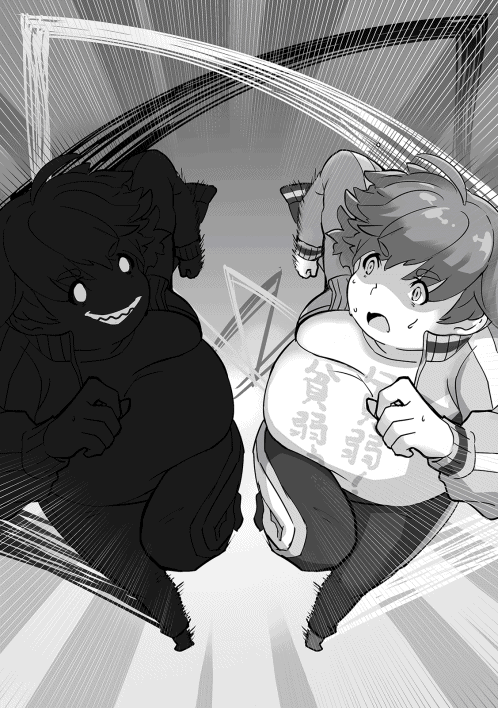
「倍返し」
奴が放ったのは間違いなく俺の所有しているスキルだ。物理吸収と倍返しのえげつないコンボを使うなんて聞いてないぞ。物理吸収は体重増加のデメリットがあるからこちらは使用を控えているのに全く控える様子もない。こいつ、思った以上に厄介な相手だ。
ふと俺は手元に持っていたティルヴィングを手放していたことに気づいた。奴から目を一瞬だけ逸らして周囲を見てみると地面に刺さっている愛剣の姿があった。奴の注意を逸らしてティルヴィングを抜く必要がある。そう思った瞬間、奴の口が三日月のような笑みを浮かべた。
『【帝王の晩餐】』
そう宣言した瞬間に奴の舌が鞭のようにしなったかと思うと地面に刺さったティルヴィングを奪い去った。あっという暇もなかった。一瞬にして魔剣を奪った奴はそれを右手に握ると再び宣言した。
『ティルヴィング召喚』
奴がそう宣言した瞬間、何も持っていなかった腕にもう一本の魔剣が現れる。どういうことだ。一本だけの魔剣がなんで二本も現れるんだ。
『恐らくは敵が使っているのはマスターのスキルをコピーして再現した魔剣です!!』
コピーだけでなく、なんで俺の持っているオリジナルの魔剣まで扱いこなせるんだよ。焦る俺に対して偽物は更に宣言した。
『千手観音』
その瞬間、その背に凄まじい数の腕が現れる。そのいずれにも長剣が装備されていた。やばい、殺意が高すぎる。
「マスター、あの腕の化け物はなんですか」
「あれが本来の千手観音の正しい姿だよ」
「まさか......では私が作り上げていた千手観音は何だったというのですか」
お前が最初に作っていた千手観音は間違いなく化け物だよ、俺は心の中で突っ込んだ。偽物の方が正しくスキルを使用するなんて頭が痛くなる話だ。思わず頭を押さえたくなる。そんな俺たちに向けて偽晴彦はティルヴィングによる斬撃の衝撃波を放ってきた。逃げる暇などなかった。
斬撃による衝撃波を何とか俺は躱した先の地面があり得ない深さまで抉れていたことに戦慄した。ぱっと見で底が見えない。おかしいだろう、俺が衝撃波を放った時にはあんな威力になったことがないぞ。奴はどうなっているんだ。さっきから何らかのチートを行っているとでも言わんばかりの攻撃を行っている。俺をコピーしたにしては殺意が高すぎる。
『魔力限界突破のスキルを斬撃に混ぜ込んでいます。あんな使い方があるなんて......』
脳内で語り掛けてくるインフィニティの声にも焦りが感じられた。そんな俺に偽晴彦は容赦なかった。一瞬にして俺の背後に現れた奴は背中の夥しい腕に持った長剣と二本の魔剣で凄まじい数の突きを放ってきた。危うく穴だらけにさせられそうになった俺はすんでの所でインフィニティの突き飛ばしによって助けられた。だが、その代償としてインフィニティの身体が串刺しになる。その景色はまるでスローモーションのようだった。
「インフィニティ──!!」
『呼びましたか』
うおっ！ 目の前で死んだ者にいきなり脳内で返事をされて俺は心臓が飛び出そうになった。
『あーあ、せっかく作った分身体が穴だらけですよ。ああ、ご心配はなさらないでください。私のコアはあくまでもマスターの体内にありますから』
「そういうことは早く言えよ」
『心配してくれたんですね、マスター。......来ます！』
「わかってる！」
インフィニティを串刺しにしても飽き足らずに偽晴彦は襲い掛かってきた。それを防ぐために俺は【千手観音・改】を起動して副腕に武器を持たせて相手に応戦する。だが、俺の攻撃はことごとく奴の【物理吸収】によって吸収されていった。だが、【物理吸収】を使っていないこちらは奴の攻撃をダイレクトに受けていく。不利になるのは明らかだった。競り負けた俺の千手観音の武器を破壊すると同時にその腕をズタズタに切り裂かれた。副腕といってもダメージがまるでないわけではない。腕を切り裂かれたような激痛に意識が遠のく。だが、奴はまるで容赦というものを知らなかった。向かい合わせとなった俺の顔面目がけて先ほどインフィニティが放ったのと同威力の破壊光線を放ってきたのだ。一瞬でも判断が遅れれば致命傷だった。慌ててのけ反ったことで助かったのだが、その背後のビルが破壊光線の直撃を受けて倒壊していく様子を見てゾッとなった。こいつ、街がどうなっても気にもしていないというのか。
「暴れるのをやめろ！ お前の狙いは俺達だろう」
「最優先は藤堂晴彦とデモンズスライムの捕獲。手段は選ばなくていいと命令されている」
「ふざけるなよ......」
瞬間的に衝動的な殺意が湧いてきた。ひょっとしたら説得できるかとも思っていたが、街がどうなってもいい等という輩と仲良くなれるほど俺はお人よしではない。かといってこのまま戦闘を続けたら街への被害がどうなるか分からない。冷静になるんだ、晴彦。
俺は奴と距離を取って作戦を練った。普段使っていなかった思考加速を使って最善の策をインフィニティと導き出した。このまま逃げる。トンズラして態勢を整える。逃げるが勝ちという言葉もある。俺一人でどうにもならなくても司馬さんやワンコさんと合流できれば何とかなるだろう。このまま奴の視界を潰してアパートにいるシェーラを連れてこの場から脱出する。
そうと決まれば奴の視界を潰すのが先決だ。俺は体内で魔力を練りながら機会を伺った。奴は俺が動かないことに業を煮やしたのか、神速を使って襲い掛かってきた。だが、それは予想済みの動きだ。奴が俺の懐に入ってきた瞬間に俺はとっておきのスキルを放った。
【御神体モード】。体を眩い発光体にすることで相手の視界を潰す。狙いが決まったことににやけた俺は次の瞬間に絶句した。何時の間に装着したのか、奴がサングラスをかけていたからだ。そんなんアリかよ。絶句する俺のみぞおちに鈍い衝撃が走り、俺は意識を失った。
◆◇◆◇◆◇
同時刻。晴彦と偽晴彦の戦いに介入しようとしていたクリスは光の塊のような姿をした複数の天使群との激しい空中戦を繰り広げていた。通常であれば戦いにおいて冷静さを重んじるクリスであったが、眼下で繰り広げられる晴彦の戦いの劣勢さを目の当たりにして焦りを覚えていた。クリスの放った風の攻撃魔法の刃が天使たちに放たれていく。鋭利な刃物と同等の切れ味を誇る風の刃は次々と天使の羽根を切り裂き、地上へと落下させていく。だが、いくら撃墜しても天使たちはますますその数を増やし、クリスを追いつめようとしていた。そんな中でクリスは晴彦が敗れる姿を目の当たりにした。
「冗談だろう。あの晴彦君をこうも手玉に取るなんて。しかもこの波動、前にも感じたことがある......」
間違いなくこの波動は熾天使のものだ。かつて世界を混乱に導いたデモンズスライムとなったクリスを封印した魔術師を影で率いていた者、それが熾天使だった。熾天使による多重次元封印術によってクリスは長きに渡って封印されてきたのだ。自分を封印した憎い相手の気配を間違えるクリスではなかった。問題はその気配が偽晴彦とは別のところからすることだった。いったいどこから。そう思った瞬間、クリスの頭上に何者かが現れた。クリスがその気配に気づいて上を向こうとした瞬間に凄まじい衝撃がクリスの頭を襲った。物理吸収が全く効いていないことに気づく暇もなく、クリスはきりもみ回転しながら地上に堕ちていった。殴りつけた相手、熾天使ガブリエルはそんなクリスを冷たく見下ろして冷笑を浮かべていた。
◆◇◆◇◆◇
朦朧とする中で何とか意識を取り戻した俺は立ち上がろうとした。駄目だった。不可視の力によって体中を押さえつけられている。ふと傍らを見ると隣にクリスさんが倒れている。奴らにやられたのか意識を失っている。そんな俺を見下ろしているのは偽晴彦と見知らぬ金髪の女だった。
「あらあら、もう起きちゃったのかしら。流石はデモンズスライムを倒した勇者というところかしら」
「......あんた、誰だよ」
「熾天使ガブリエル。貴方たち人間を天から見守る守護者の一人よ」
「......デモンズスライムが襲って来た時に何もしに来なかったのに今更来て守護者気取りかよ」
そう言い放った瞬間に俺は偽晴彦の凄まじい力によって胸倉を掴まれていた。凄まじい力だ、殺す気か、こいつ。
「おい、人間。熾天使様の前で不敬である。口の利き方に気をつけろ」
「やめなさい、ドミニオン」
「しかし......」
「私がやめなさいと言ったのです。この場で消滅されたいのですか」
瞬間、悍ましいほどの殺気を金髪女は放った。耐性のないものならばその場で気絶するほどのものだ。なんてこった。偽晴彦よりも化け物じゃねえか。偽晴彦はしぶしぶ俺の事を地面に下ろした。乱暴に落とすものだから受け身もとれやしない。苦痛に顔をしかめる俺の目の前にしゃがみ込み、俺の頬を撫でながら金髪女は言った。
「怯えないでも大丈夫よ。私は直接人間に危害を加えることはできないから。もっとも、私の部下たちは血の気が多いから気を付けた方がいいでしょうけどね」
「あんたは天使なのか。何で俺達を狙うんだ」
「君の体の中にいるデモンズスライムが危険だからよ。あれは人の身には余るものだから回収させてもらうわ」
「ふざ......けるなよ。回収してどうする気だ」
「うふふ、貴方の体に施されていた封印以上の多重次元結界で彼を封じます」
あの闇の中よりも深い闇の中にクリスさんを封じ込めるというのか。そんな残酷な宣告をしながらも女はあくまでも笑みを浮かべていた。その表情に俺は激しい怒りを感じた。あんな地獄にクリスさんを閉じ込めようというのか。そう思った瞬間、俺の身体の中で抑えきれないほどの怒りが膨れ上がった。金髪女や偽物への激しい怒りに我を忘れそうになった俺は怒りのままに起き上がって拳を握りしめた。それを見た金髪女の表情が驚愕に染まる。
「重力魔法による束縛を受けながら立ち上がるとは、まさか魔王化......いや、その前兆か」
「ユル......サナイ」
憎悪がそのまま自分の力になるようだった。体の内から凄まじい力が湧き上がってくるのが分かる。これまでに自分が感じてきた力の比ではない。両の腕から染み出た紋様が炎のように浮かび上がっていく。それは俺の腕を焦がすほどの熱を持っていたが、目の前の敵を殺してやるという衝動の方が俺の心の中で暴れ狂い始めていた。何を躊躇う事があるというのだろう。金髪女の表情に焦りの色が浮かんでいることに気づいたが、今更許してやるものか。
「分かっているのですか。その力は世界を滅ぼす力だ。解放すればこの付近一帯も消し飛びますよ。それでも構わないというの」
「ダマレ、オマエラ......コロス」
こみ上げる殺人衝動でこの女たちを血祭りにあげてやる。そう決意した俺達と金髪女の間に割って入るかのように何者かが放った衝撃波が大地を穿った。同時に何者かが金髪女に向かって切り掛かっていった。それは真っ白な鎧を身に纏った騎士であった。騎士はその両手に握りしめた黒と白の刀を自在に振り回しながら熾天使に果敢に挑んでいった。斬撃が速過ぎて目で追えないほど凄まじい技量をしている。いったい何者なんだ。分が悪いと感じたのか、ガブリエルは後ろに大きく飛翔した後に騎士から距離を取った。
「思わぬ邪魔が入ったわ。どうやらこの場は引いた方がいいようね。明後日、同じ時間にもう一度来るわ。その時までにお別れを済ませておきなさい。逃げられるとは思わないことね」
白騎士の攻撃を受け止めながらも、どこまでも余裕を残した様子で金髪女は宣言した後に煙のように姿を消した。女が立っていた場所に白い羽根が舞い散った後に消え去る。憎悪をぶつける相手が消えたのだが、俺は昂った感情を抑えきれなかった。だからこそ、戦いを途中で邪魔した白騎士に向かって襲い掛かった。白騎士は突然に俺が襲い掛かってきたことに驚いた様子だったが、魔王の力の籠った俺の一撃を二刀流の刀を交差させながら受け止め切っていた。攻撃の際に発生した熱と衝撃で火花が飛び散る。一撃で効かないのならば、二撃、三撃加えるだけだ。そう思った俺は衝動に突き動かされながら拳を振るった。白騎士に二撃、三撃加えていくと強固な防御を崩すことができた。だが、白騎士は反撃をするでもなく、攻撃されながらも俺の肩を掴みながら何事かを呼び掛けている様子であった。
『......ル君！ ハル君、しっかりするんだ！』
白騎士の鎧の中から聞き覚えのある声が聞こえたことに俺は呆気に取られた。その一瞬の隙をついた白騎士がこちら目掛けて飛び込んできた。だが、それは攻撃を加えるためではなかった。白騎士が装備していた鎧による変身を解除したからだ。鎧を外した白騎士の正体は俺のよく知る女性だった。彼女は躊躇いもなく俺の胸に飛び込んできた後に、ぎゅっと俺の身体を抱きしめてきた。
「わ、ワンコさんだったんですか」
「そうだよ、ようやく固定武装である【剣狼】を制御できるようになったんだ」
現れた白騎士が敵じゃなかったこと、そして顔見知りで会った事で先ほどまでの怒りの感情に支配されていた俺は脱力した。魔王の力が解放されかけた影響だろうか。身体から力が抜けてきた俺はそのままワンコさんに倒れ掛かるようにしながら意識を失った。
◆◇◆◇◆◇
意識を取り戻した俺が目を開けると自分の部屋に寝かされていることが分かった。すぐ側に心配をしているシェーラとワンコさんが覗き込む顔が見えた。
「よかった、ハル、目を覚ましたのですね」
「本当によかったよ。ハル君。このまま目を覚まさなかったらどうしようかと思ったぞ」
「......ご心配をおかけしたようで」
そう言って俺は起き上がろうとしたが、意識が朦朧としていることに気づいて起き上がることを諦めた。どうにも先ほどの偽物との戦いのダメージが抜け切れていないらしい。
「まだ無理をしない方がいい。ダメージが抜け切れていないのだろう」
「シェーラがいるのは分かるんですが、ワンコさんはどうしてここに......」
「君たちに危機が迫っていることを知ってね。まだ鎧の制御の修行中だったんだけど慌てて切り上げてきたんだ。司馬さんに知られたら怒られるだろうね」
ワンコさんが固定武装の制御ができるようになるまでは俺達に会わないようにするように司馬さんが伝えていたことを知っている。ワンコさんの体の端々には真新しい包帯が巻かれていた。更に所々に塞がりかけている生傷があるのを見る限り、かなり無茶な修行を行った様子である。それだけでなく、俺が加えたであろう攻撃による痣が胸元についていることに気づいた。
「ごめんなさい、その傷は俺のせいですよね」
「謝ることはないよ。私だってハル君には助けられてばかりだったんだから、このくらいお安いものさ。ところでハル君、今回の敵が何者なのかは分かっているか」
「いえ、突然襲われたので奴らが何者かはさっぱり分かっていないです」
「そうか」
「ワンコさんはあの金髪女たちが何者かが分かっているのですか」
「ああ、よく知っているよ。何故ならば彼女たち熾天使は私たちＷＭＤの上の立場の人間だからね」
ワンコさんの説明は驚くべきものだった。ワンコさんの説明によって熾天使であるガブリエルがデモンズスライムを回収に来たこと、立ちはだかろうとした司馬さんが未来に飛ばされて手助けできない状況にあること、今回の一件に関してＷＭＤの助けは受けられないことを彼女は教えてくれた。そこまで話したうえでワンコさんは俺達に手を貸すことを宣言した。そんな彼女に俺は驚いて問いただした。
「いいんですか、そんなことをしたらＷＭＤ内の貴方の立場は悪くなるのでは......」
「大丈夫さ。私は司馬さんと違って一般捜査官に過ぎないからな。逆らったとしてもどうとでもなるはずさ」
「処分されるんじゃないんですか」
「私は君に返しきれないほどの恩があるんだ。嫌だといっても加勢させてもらうよ」
そう話すワンコさんの表情は吹っ切れたように明るかった。ＷＭＤに逆らう事になることが心配だったが、ワンコさんが加勢してくれるのは頼もしい限りであった。彼女に応えるように俺は笑い返した。その後で居間にクリスさんの姿がないことに気づいた。
「そういえばクリスさんは？」
「それが、姿が見えないんだ」
「もう夜です。いつもならこの時間は帰ってくるはずなんですが」
不審に思った俺は周囲の気配を探った。意識を集中して探ってみると彼の気配はすぐ側にあった。この位置だとこの建物の屋根の上という事になる。倦怠感を感じながらも俺は自らを奮い立たせて起き上がった。そんな俺を二人は心配して起き上がらせないようにしたが、無理を言って起き上がった。
「ごめん、ちょっと出かけてくる」
「どこに行くんですか、ハル」
「心配しないで、クリスさんと話に行ってくるだけだから」
そう言って俺は上着を手に取ると外へと飛び出した。
◆◇◆◇◆◇
アパートの外に出て見上げると屋上に月明かりに照らされた先にクリスさんがいるのが分かった。少し見ない間に随分としょげかえった様子に見える。体操座りをしながら月を見上げている姿は哀愁漂うものだった。俺は魔剣を召喚するとクリスさんと話すべく空に浮かび上がった。俺が静かに隣に降り立ったことに気づいたクリスさんは俺の方を見ずに話しかけてきた。
「やあ、晴彦君。君も手痛くやられたみたいだね」
「デモンズスライム、いや、クリスさんと戦った時よりは酷くないですよ」
「あはは、それもそうだねえ」
クリスさんはそう言って楽しそうに笑った後で再び暗い表情になった。
「......そんな風に明るく接していても何を言いに来たのかは分かるよ。僕に別れを言いに来たんだろう」
「は？ いきなり何を言ってんですか」
「取り繕わなくていい。今回はあまりに相手が悪すぎる。君が僕を見捨てたとしても誰も文句は言わないだろう。勿論、僕も君に文句は言わない。恨み言の一つくらいは言うだろうがね」
いきなり決めつけられて俺はムッとなった。この人は俺の意見を聞く前に何を決めつけているんだ。
「勝手に決めつけないでくださいよ」
「そうじゃないというのか。まさかとは思うが、アレと戦うつもりじゃないだろう」
「......やってみなければわからないじゃないですか」
「馬鹿なのか、君は。あれだけはっきりと力の差を見せつけられたばかりじゃないか」
「次は負けませんよ」
クリスさんは俺が戦おうとしていることに唖然となったようだった。
「考え直せ！ 相手は神みたいな存在だぞ！ 下手をすれば君も一緒に封印されるかもしれないんだ！ そんなことをされるのは僕一人でいい！」
「珍しいですね、貴方が他人の事を心配するなんて」
「茶化すな！」
普段、人のことなど全く気にもしない人が俺の心配をしていることがなんだか可笑しかった。激高したクリスさんに胸倉を掴まれながらも俺は逆に尋ねた。
「前に画像は見ましたけど、封印された状態でずっと過ごすってどんな気持ちですか」
「......君には想像もできないよ。いつ果てるとも分からない長い時間の中で冷たい暗闇の中に閉じ込められるんだ。そこには一切の音もない。それがいつ終わるかも分からない状態でずっと続くんだ。気が狂いそうになるよ」
「......そんな空間の中にまた入れられたいんですか」
「誰が好き好んで！」
クリスさんの俺の胸倉を掴む力が増した。だが、俺は静かに彼の目を見つめ返した。
「クリスさんが現れるようになってから散々でしたよ。食費はかかるし、シェーラとイチャイチャしたいと思っている時には必ず邪魔しに来るし。騒動を起こすと決まって俺が謝ることになっていて」
「......な、何だよ、いまさら文句を言うつもりか」
「でもね、そんな賑やかな日常が孤独だった俺にとっては宝物なんです」
そう言いながら俺は引きこもっていた時代の事を思い返していた。シェーラもクリスさんもワンコさんもいなかった。あのアパートの中で俺はずっと孤独だったのだ。この賑やかな来訪者たちはそんな孤独だった俺に人と接する温かさを思い出させてくれた。賑やかだけどそれを俺は心地いいと思っていたのだ。
「孤独が苦しいことを俺は知っています。だから俺は貴方を見捨てない。大事な仲間を見捨てやしない」
「────っ!!」
瞬間、クリスさんの俺の胸倉を掴む力が弱まった。そして俯き加減のか細い声で囁くように言った。
「......君は本当に馬鹿だ。勝手にしたまえ」
「ええ、勝手にしますとも」
俺はそう言って力なく項垂れるクリスさんの背中を思い切りぶっ叩いた。元気づける意味もあったが、胸倉を掴まれた意趣返しも含めてだ。彼は文句を言うこともなくされるがままだった。そんな俺たちを月が優しく照らしていた。
◆◇◆◇◆◇
クリスは夢の中で微睡んでいた。また繰り返すあの夢だ。かつて自分が侵した罪を振り返る遠い過去の記憶。勇者でありながら人間同士の戦争に駆り出されて多くの人間を殺した虐殺者クリス。彼は必死で家族や仲間を守るために戦い続けた。だが、激化していく戦いの中で次第に彼は人間性を失っていった。いかに効率的に人間を殺すか。いかに多く殺すか。殺せば殺すほど経験値という形で自らの力が増すにつれて彼はそれだけを戦場に求めるようになった。力を求めて人を殺していくうちに彼は味方にさえ恐れられるようになった。彼が真剣に敵を殺せば殺すほど仲間たちは彼を恐れるようになり、その距離は開いていった。
あるいはそれゆえの必然だったのだろうか。戦争が終わって平和になった平和式典の日、彼は守護していた王家によって陥れられた。魔術を封印する多重結界の中で数えきれない弓矢で射られた彼は死にたくない一心で禁断の力を解放した。魔神獣。人間を越えた力を手にする代わりに人間性を捨て去った彼はデモンズスライムとなって人間を次々に喰らった。だが、喰らえど喰らえど彼の飢えは満たされなかった。薄れゆく視界と意識の中で襲った人間の中には彼を陥れた王家の人間の恐怖に引きつった表情、そして彼が愛した王女の哀し気な顔もあった。薄れゆく意識の中で彼女は何かをクリスに告げようとしていた。それが憎しみの声であったのか謝罪の声であったのかは今となっては分からなかった。
全てが終わって自我を取り戻した時には彼は唯一の心の支えであった妻を失っていた。人気がなくなった廃墟となった城の中で途方に暮れた彼はそれから人の姿を捨てて暮らすようになった。いつしか人々は彼を廃城に棲む魔神獣として恐れるようになった。
そんな彼を襲ったのは外部から現れた数えきれない魔術師たちによる多重結界だった。煩わしい、この程度で縛り付けられるものか。彼は力を解放してその束縛を破壊しようとした。だが、できなかった。周囲を見渡すと数多くの魔術師の中に一人だけ若い女の姿があることに気づいた。あの女だ。あの女が何かをしている。クリスはそう判断して攻撃を加えようとした。だが、攻撃を行う前に魔術師たちの結界魔法は完成した。クリスが闇の中に堕ちていく様子を見て女は満足そうに笑った。
夢の最後はいつもここで終わりだった。永遠にも続く闇の中でクリスは解放されることなく佇み続ける。暗く冷え切った闇の中の永遠ともいえる孤独。その中でクリスが願うのはただ一つ。早くこの悪夢が永遠に終わりますようにという切実な願いだ。だが、今日の夢はそこで終わらなかった。
闇の中で一条の光が差し込んだかと思うと光り輝く手がクリスの前に差し出されたからだ。
『ずっと孤独だった苦しみは俺も知っています。だから俺は貴方を見捨てない。大事な仲間を見捨てやしない』
『────！』
それは晴彦であった。彼は優しい微笑みを浮かべながら、闇の中にいるクリスを迎えに来たのだ。クリスは一瞬差し出された手を握ることを躊躇した。だが、そんなクリスを晴彦は黙って待っていた。クリスは躊躇ったのちに晴彦の手を握り返した。その手はとても暖かく力強いものであった。
◆◇◆◇◆◇
さて、喧嘩を売ったのはいいものの今のままでは勝算が全くない。そんなわけでゼロスペースでの修行を行っているわけだが、あの偽物に勝てるイメージが全く湧かなかった。何なんだろう、あの強さは。本当に俺と同じ能力を持っているというのか。明らかに五割増しは強くなっているだろうが。
「......ひょっとしてＡＩが悪いのが原因なのかな」
「聞き捨てならないことを言われた気がします、マスターは私が悪いとおっしゃいますか」
「そうはいっていない。ポンコツなりに頑張っているよ、お前は」
「......聴覚機能の故障でしょうか、今、ポンコツって言いませんでした」
「ああ、言ったよ。もう一度言おうか、ポンコツさん。どうかしたか」
「ポンコツマスターが私の事をポンコツって言った──っ!!」
「ええい、ポンコツをポンコツと言って何が悪い!!」
そう言って俺とインフィニティによる醜い悪口合戦が始まった。焦りと苛立ちがそうさせたのであろう。取っ組み合ってお互いがお互いの頬を引っ張る醜い争いにまで発展していた。
「ポンコツって言う方がポンコツなんですよ！ 分かっているんですか、このポンコツ！」
「やかましいわ！ 元祖ポンコツが！ そんなことばっかり言ってるとお前の名前もインフィニティからポンコニティに改名するぞ、このポンコツスキルが!!」
「だったら私もマスターの事をポンコツさんと呼ぶことにします!!」
がるるるっ!! まるで喧嘩している犬のように俺とインフィニティは犬歯を剥き出しにして睨み合った。暫く睨み合った後に馬鹿らしくなって言い合いをやめた。
「やめよう。こんなことをしている場合じゃないわ」
「そうですね。こんなじゃれ合いをして現実逃避している場合じゃありません」
俺の言葉に賛同してインフィニティも肩を落とした。無駄に体力を消耗して何をしていたのだろう。意気消沈した俺はその場に座り込むと、同じように俺の背中にもたれ掛かって座り込むインフィニティに尋ねた。
「なあ、あいつに勝てる自信あるか」
「正直なところ、今のままでは五十％に満たないと推測されます」
「はっきり言うな。当てずっぽうでなく、理由があるんだろ」
「あの個体はマスターが使用を禁じているスキルをフル活用していますから」
インフィニティの指摘は的を射ていた。あの個体、仮にブラック晴彦と呼称するが奴は俺が使用を禁じている物理吸収などのデモンズスライムのスキルも積極的に使用していたのは大きな違いだろう。あれが一番大きな差だ。奴に勝つためには体重が増えるのも覚悟して物理吸収を使うしかない。俺の思考を読み取ったインフィニティが尋ねる。
「よろしいのですか」
「ああ。仕方ないさ。体重は後で戻せるがクリスさんはかけがえのない仲間だからな」
俺がそう言った瞬間、ゼロスペースの中に何者かが入ってきたのが分かった。クリスさんだった。彼がこの空間の中に入ってきたことに俺は驚いた。
「そんなに驚いた顔をするなよ。君たちがいつもどうやってこの空間に入っていたのかは封印空間の中で見ていた。ゼロスペースだったっけ。改めて見ると何とも広大な空間だな」
クリスさんは暫く広大な空間を見渡していた。何か言いたいことがあるのに言い出せない様子だった。
「晴彦君、君は実にお節介だ。今回の一件は僕を奴らに突き出せばすぐに済む話だ。だが、君はそれを良しとしなかった。はっきり言って君は愚か者だ」
クリスさんの言葉はこれまでのような本心を隠すようなものではなかった。何故ならば彼はこれまでとは違い、俺の目をはっきりと見据えながら話をしていたからだ。クリスさんはそのまま、俺の目を見据えながら続けた。
「だけど僕はそんな愚か者との暮らしがなくなることがどうしようもなく惜しくなった。君の与えてくれる現在の生活を守りたいとも思うようになった。全く僕らしくない。君の愚かさが僕にも移ったようだ。だが、なんでかな。それは思ったよりも悪くないものだとも気づかされたんだ」
そう言ってクリスさんは儚げな笑みを浮かべた。虚偽やごまかしのない、間違いなくクリスさんの本心だと悟った。
「あんな奴らに僕たちの運命を好き勝手にされてたまるか。必ず勝とう。そのためには僕たちの持っている力を合わせる必要がある」
クリスさんの顔には迷いがなく、自信にあふれるものだった。そんなクリスさんの提案は驚くべきものだった。
◆◇◆◇◆◇
熾天使ガブリエルは宣言通りの時間通りにやってきた。異常ともいえる存在感を察知した俺はクリスさんとインフィニティと共に外に飛び出した。それに続くかのようにシェーラとワンコさんも俺たちを追ってきた。
アパートの外ではガブリエルが偽物の俺であるブラック晴彦と共に待ち構えていた。
「お別れは済んだかしら」
「律儀に待ってくれて悪いんですが、貴方の望む答えは用意できませんでした」
「へえ、ならばどうするというのかしら。教えてくれない？」
「抗ってやるだけです」
「本当に人間という生き物はどうしようもなく愚かだわ......」
ガブリエルがため息交じりに呟いた瞬間、周囲の景色が切り替わった。それは廃墟と化したビルや夥しい破壊痕が目立つ戦場のような光景だった。景色だけでなく、ワンコさんやシェーラのいる場所と俺達のいる場所の距離を離されていた。慌ててワンコさんたちが俺達の方へ駆け寄ろうとするが、ガブリエルはそれを良しとしなかった。
「余計な邪魔はやめなさい」
彼女がそう言って腕を薙ぎ払うと俺達とブラック晴彦の周囲が凄まじい火柱によって覆われる。シェーラやワンコさんが介入できないようにした様子である。それに気を取られている間に目の前にいたブラック晴彦の姿が消えていた。
来る。そう思いながら身構えた瞬間、姿を消していたブラック晴彦が俺の懐に現れた。ブラック晴彦の拳が迫る中を俺は【クロックアップ】を使用することで何とかかわした。だが、奴は同様に【クロックアップ】を使って俺の動きを追ってきた。ここまではシュミレーション通りだ。
「インフィニティ！」
「はいなっ！」
俺の叫びに呼応して同様に【クロックアップ】を使ったインフィニティが挟撃を仕掛ける。【クロックアップ】と二回攻撃を使った彼女の連続打撃が奇襲となって背を向けたブラックに襲い掛かる。だが、その悉くを奴は物理吸収によって吸収していく。全く攻撃が効果なしとでも言わんばかりにブラックがほくそ笑んでインフィニティを殴り飛ばす。そして俺に迫った。だがそこまでの動きの全てが俺の予想通りだった。ブラックは俺を追い詰めたのではない。俺がこの場にブラックをおびき寄せたのだ。
ブラック晴彦の足元が光り輝く。同時に凄まじい爆発が奴の身体を覆った。奴は俺が仕掛けた地雷兵器Ｄボムにまんまとハマったのである。爆風によって辺りの視界を奪うほどの土煙が舞い上がる。ダメージを狙っていた訳ではない。土煙によって奴の視界を奪って隙をつくためだ。俺はブラックから距離を取りながらインフィニティとクリスに命じた。
「やるぞ！ 二人共!!」
「おう！」
「「「三位一体!!」」」
そう叫んだ瞬間、俺とインフィニティ、そしてクリスさんの身体が重なる。
重なった体は光を放ってデモンズスライムの膜で覆われた合体形態となった。これこそが俺たちの切り札である「トリニティフォーム」だ。物理攻撃を吸収する役割と高速飛行、魔剣による攻撃をクリスさんが担当し、防御と遠距離攻撃担当、戦闘分析をインフィニティが行う。そしてメインの白兵戦担当を俺が行う。それぞれが分業作業を行うことで力を合わせてブラックに対抗するわけである。
「小細工を......」
ブラック晴彦はそう呟きながら魔剣の衝撃波による斬撃を放った。だが、その衝撃波は俺の身体に届く前にデモンズスライムの膜によって吸収された。
「馬鹿な！ この斬撃は物理攻撃ではなく魔法攻撃だ。貴様の【物理吸収】では通用できないはずだろう」
『残念だったね。その攻撃は僕には通用しないよ。なんてったって風の魔剣の所有者なんだから。さあ、お返しするよ』
そう言ってデモンズスライムとなったクリスさんは倍返しを使った衝撃波をブラックに放った。ずるい、風が無効化できるなんて聞いてなかったぞ。
『味方である晴彦君も知らない情報だから敵さんも気づかなかっただろうね』
『マスター、油断しては駄目です。敵は健在です』
「しぶといな......」
土煙の中から現れたブラックは無傷だった。先ほどブラック晴彦も言った話だが、魔剣による衝撃波は【物理吸収】では吸収できないはずだ。一体どうやって攻撃を回避したというんだ。
『衝撃の瞬間に【魔法障壁：絶】を使用したものと思われます』
そうか、そういえばそんな魔法障壁スキルがあった。魔力と引き換えに最大１０００までのダメージを無効化する障壁だったっけ。誰だ、そんな厄介な魔法を作った奴は。......俺だよ。考えなしに出鱈目な魔法を作ったことを後悔した。
『晴彦君、落ち着いている場合じゃないぞ』
『そうですよ、マスター！』
こうなれば肉弾戦を挑むしかない。俺は体内の魔力を制御してそれを全身の筋肉の補強に当てた。奴もこちらの狙いが分かったのか真っ向からぶつかるつもりのようだった。
「うおおおおっ！！！」
「ぬがああああっ!!」
『ぶっ殺せ──、マスター！』
脳内で気が抜けるような応援をするんじゃない、インフィニティ。真っ向からぶつかり合った俺とブラック晴彦はその手に持った魔剣と千手観音の副腕によって凄まじい殴り合いを始めた。凄まじい数の拳による弾幕の中で打ち漏らした一撃一撃が物理吸収によって吸収されていく。高ぶった感情が魔王の力を引き出していく。その破壊衝動に我を忘れそうになっていた。
殺す、殺す、殺す、コロシテヤル！！！！
そんな俺にクリスさんが鋭く叱責してきた。
『魔王の力に呑まれるな。僕も耐える、だから君も自分を見失うな!!』
クリスさんの言葉に呼応するように俺は破壊衝動に呑まれそうになるのを必死に耐えた。魔王化の力に呑まれれば俺達を封印しようとするガブリエルの思うつぼだ。だからこそ、魔王化の力に呑まれずに制御できている処を見せる必要がある。我を忘れて単純に殴り合いをするよりもきつかったが、ブラック晴彦に負けまいという一心で俺は奴と殴り合い続けた。
◆◇◆◇◆◇
ガブリエルの作り出した火柱によって晴彦達から隔絶されたワンコとシェーラは必死の形相で炎の合間から垣間見える戦いの様子を見守るしかなかった。だが、晴彦とブラック晴彦の殴り合いが始まったのを見てワンコが疑問を口にする。
「一体どういうことだ。ハル君はなぜ意味のない攻撃を加えているんだ」
「ハルには何か考えがあるんだと思います」
「そうは言っても物理攻撃は全て物理吸収で無効化されてしまう。意味があるとは思えないぞ」
「......!!」
そこまで話したところでシェーラはとある出来事を思い返していた。その出来事の記憶が確かならば今の晴彦の攻撃には意味がある。シェーラはそう確信した。
◆◇◆◇◆◇
果てることない殴り合いの後で次第にブラック晴彦の様子がおかしいことに気づいた俺はいったん距離を取った。てっきり追ってくるものと思ったが、ブラックはその場から動くことはなかった。いや、そうではない。動こうにも動けないのだ。狙いが上手く決まったことにほくそ笑んだ俺に対して、ブラック晴彦の異変に気づけなかったガブリエルが彼を叱責した。
「どうしたというの、戦いなさい、ドミニオン!!」
「熾天使様、残念ながらそれは無理ですよ」
「どういうこと!?」
怒鳴るガブリエルに対して俺は意地悪な笑みを浮かべた。
「だって無理ですよ。彼の体重は今、物凄いことになってますから」
『推定で１０００㎏くらいになっていますかね』
俺の補足説明をするかのようにインフィニティが奴の現在体重を知らせる。奴に何が起きているか。説明は簡単だ。奴は考えなしに物理吸収を使いすぎたのだ。はじめて俺が物理吸収を試した時と同様にダメージを吸収すると共にそのエネルギーを体重に変換する欠陥スキルのシステムを今回は逆に利用させてもらったのである。
同じように使っていればこちらの体重も酷いことになっていたが、クリスさんがデモンズスライムの身体で物理吸収を使ってくれたおかげでこちらの体重に被害が行くことはなかった。ブラックは凄まじい脂汗を流していたが身動き一つとれないようだった。
「馬鹿な......ドミニオンが人間に負けたというの」
「このまま帰っていただけるならこれ以上は危害を加えません」
「馬鹿を言わないで。ドミニオンが相手にならないというのならば今度は私が相手になるだけよ。悪いことは言わない、もう降参しなさい」
ガブリエルはそう言って自信に満ち溢れた表情を崩すことはなかった。だが、俺にはそれがハッタリであることが分かっていた。何故ならば、ガブリエルに気づかれないようにインフィニティに命じて彼女のステータスを確認しておいたからだ。ステータスの中には【人間の守護者】という称号が書かれていた。その称号が何を意味するのかという事もすでにインフィニティの調査で解明済みである。
「この前、貴方は直接人間に危害を加えることができないと言っていた。単なる比喩かとも思ったんですが、鑑定して分かりました。人間を直接傷つける行為は禁止事項だと神に制約をかけられているんですね。だからこそ配下である天使に俺達を攻撃させるように命じたのでしょう」
「......あの情報だけでよくそこまで調べることができたわね。流石は鑑定スキル∞という事かしら」
「これ以上やるというならこちらにも考えがあります」
実際の所、考えなどなかった。ハッタリもいいところである。俺の冷たい視線にガブリエルはしばし沈黙した。騙し合いに近い沈黙ののちに彼女は言った。
「......負けを認めましょう」
その瞬間、俺の脳内でインフィニティとクリスさんの大歓声が上がった。だが、素直に敗北を認めたガブリエルに対して俺は逆に不安を感じて身構えた。そんな俺に彼女は苦笑した。そして偽晴彦の変身を解除した。
「そう身構えることはないわ。人間が上位種である天使を倒すとは夢にも思ってなかったわ。貴方たちの健闘を称えて今回は退いてあげる」
「本当ですか」
「少しは熾天使の事を信じなさい」
そう言われても俺は素直にガブリエルを信じることができなかった。そんな俺の脳内でクリスさんとインフィニティが蒸し返すなと文句を言ってくる。だが、俺は確認せずにはいられなかった。
「......俺が魔王化するからデモンズスライムを放置できないっていっていたじゃないですか」
「その危険性はもうないことはあなた自身が一番知っているでしょう。それに今のクリスなら暴走する危険はもうないでしょうからね。いいコンビよ、貴方たちは」
どういう事だろうか。問いかけようとする俺に対してガブリエルは静かに笑った後にドミニオンを連れてその場から消え去った。残されたのは光り輝く天使の白い羽根だけである。姿を消したはずのガブリエルの声が木霊する。
『私たちに打ち勝った証としてその羽根をあげるわ。その【熾天使の羽根】は神話級のマジックアイテムとして貴方たちの冒険の役に立つはずよ』
ガブリエルの説明に戸惑いながら、俺は羽根を受け取った。どこか暖かさを感じさせる羽根をアイテムボックスに入れながら俺は熾天使の来襲が終わったことを理解した。そんな俺の頭の中でインフィニティが【魔王化の呪い】を克服できたことを告げたのだった。
◆◇◆◇◆◇
熾天使ガブリエルは地上の遥か上空から晴彦たちの様子を見守っていた。ガブリエルが強引に晴彦たちを封印せずに立ち去ったことには理由があった。実のところ、神によって人間を直接傷つけることを禁じられている【人類の守護者】の称号を持っていてもガブリエルには晴彦を害する手段があった。彼女自身が手を下さなくても配下の天使に命じて晴彦たちを攻撃すればいいだけだ。その証拠に彼女の背後の空には彼女の配下である天使たちの軍勢が待機していた。空を覆う数えきれないほどの天使たちは一人一人が槍や剣で武装し、ガブリエルの命令があればすぐにでも地上に降り立って容赦のない攻撃を加えるつもりであった。
「ガブリエル様、本当に総攻撃を加えなくてもよろしいのですか」
配下の天使の一人の言葉にガブリエルは優雅な笑みを浮かべた後に首を横に振った。天使はガブリエルの真意が分からずに戸惑いの表情を浮かべた。そんな配下にガブリエルは苦笑した。
「魔王化する危険性がある人間がいる。だから私たちはここまでやって来たわ。でも杞憂だったようね。見なさい。かの者達にはもう魔王化する危険性はないわ」
ガブリエルはそう言った後に晴彦たちの様子を映し出すホログラフを映し出した。そこに表示される晴彦のステータス画面には【魔王化の呪い】が消えていた。
「どうやったのかは分からないけれど、あの男は魔王化の呪いを自力で克服した。そしてそれは人間の一つ上のステージに立つ資格を得たという事に他ならない」
ガブリエルの言葉に周囲の天使たちは騒ぎ始めた。ガブリエルの言葉はすなわち晴彦が自分たちと同等の存在になる可能性を秘めているという事に他ならなかったからだ。
「静まりなさい。人間とは本来、神々が自分たちに成り代わる可能性を持たせて作り出した存在、つまりは神の子供たちよ。だからこそ創造神は私たちに人間とその世界の守護を命じた。楽しみじゃない、あの男がどのような道を歩んでいくか」
ガブリエルはそう言った後に配下の天使たちに天界に戻るように指示を出した。上位存在に命じられた天使たちが煙のように姿を消していく。人間界より高次元の世界に帰っていったのだ。配下の天使たちが帰っていく様を見届けた後にガブリエルは呟いた。
「さて、私も天界に戻るとしましょう」
そう呟いた瞬間だった。熾天使ガブリエルですら反応できない速度で何かが飛来した。ガブリエルは当初、何が起きたのかさえ理解できなかった。だが、自分に何が起きたのか理解した時、彼女は驚愕に目を見開いた。地上の武器では傷をつけることができないはずの無敵の自分の胴体に禍々しい槍が突き刺さっていたからである。
「なんだ、これは」
ガブリエルは槍を体から引き抜こうとした。だが、槍から放たれる紫の雷が容赦なく彼女の体を焼き、槍を引き抜くことは叶わなかった。
「無理ですよ。それは神殺しの槍。神に近い力を持った貴方には天敵のような存在なのですから」
「貴様は一体何者だ」
「貴方の力が欲しい、か弱い人間ですよ」
ガブリエルに槍を突き刺したのはケスラであった。彼は不気味に嗤いながらガブリエルの頭にその手を近づけていく。その掌に広がるのは禍々しい魔法陣だった。
「何をする気だ......」
「貴方の力を我身に宿し、私は神に近い力を持った魔神獣として生まれ変わります。そうでなくてはあの豚男には勝てそうにありませんから」
「やめろおおおおおおおおおおおお！！！！！！！」
ガブリエルの身体がケスラの掌の中に容赦なく吸収されていく。質量を無視した悍ましい儀式によってケスラの身体が変質していく。皮膚が、肉が、骨格すら人間でない何者かの体に変わっていく。その変質の中でケスラは狂ったように嗤い続けた。
変質を終えた後、そこにいたのは天使の姿と悪魔を掛け合わせたような姿をした魔人であった。不気味に躍動する自らの肉体を静かに見つめながら魔神は嗤った。
「ふふ、まだ抵抗するとは活きがいいですね。いいでしょう、あの豚を殺しに行くのはもう少し体が慣れてからにしましょうか。それにしてもこの桁違いの魔力の総量があれば異世界への扉をこじ開けることができますね」
魔人ケスラはそう言った後に転移魔法を使ってその場から消え去った。晴彦は知らない。ガブリエルを退けたことによって最悪の敵が生まれ落ちたという事を。
◆◇◆◇◆◇
熾天使を退けたことでクリスさんは前以上に俺達に協力をしてくれるようになった。それはいいのだが、最近になってクリスさんとインフィニティが二人で出かけていくことが目立つようになった。どこへ行くのかと聞いても誤魔化すものだから不審に思った俺はこっそりと二人の後をつけていくことにした。万が一、バレないように帽子と伊達眼鏡をかけて変装して後をつけていくと、二人は近所にあるファミリーレストランに入っていった。
魔王化の呪いは克服したというのに、まだ食欲が収まらなかったという事だろうか。気づかれないように二人の後ろの席に座って様子を伺うと二人は何やら熱心に議論をかわしていた。一体何の話をしているのか、聞き耳を立ててみるとテーブルの上にいくつかの企画書を並べた二人が話しているのは凄まじい内容のものであった。
「やはりですね、私やクリス氏のような分身体を大量に作ってマスターの姿をした大軍団を作るのが一番ではないかと思うのです」
「いや、それよりも晴彦君の能力をあげた方がもっといいだろう。どうかな、こないだネットで見ていたんだが、日本の昔のアニメには腕を飛ばして敵を攻撃するロボットがいたそうじゃないか。それを見習ってみてはどうかと思うんだが」
「画像検索をかけてみます......なるほど、確かにこれはカッコいいです。問題はこの攻撃手段を使えるようにするためにはマスターの腕をいったん切り離す必要があるということですね」
「そこは君に任せるよ。寝ている間にちょいちょいと改造すれば大丈夫だろう」
どうやら二人が話をしているのは俺の強化プランのようである。だが、二人の考えるプランには決定的に欠落している点があった。話の内容を聞く限り、俺の人権は華麗に無視されているのだ。寝ている間に人体改造を行うなど、どこの悪の組織だというのか。眩暈がしてきた俺はインフィニティの肩を叩いて議論を打ち切らせた。
「随分と楽しい話をしているようだね」
「マ、マスター、どうしてここにいるんですか」
「げげ、晴彦君、ひょっとして今の話を聞いていたのか」
「聞いてましたよ。寝ている間に俺の腕をどうする気だったんですか。非常に興味深い話ですね」
あくまでも笑顔ではあったが、自分でもこめかみの辺りが引きつっているのが分かった。インフィニティが慌てふためきながら机の上に広げていた紙束を慌てて隠そうとした。だが、俺はそれを許さずにあくまでも笑顔のまま、紙束の提出を求めた。俺の表情に恐怖を感じたインフィニティは渋々、藤堂晴彦強化計画書と題した紙束を渡してきた。
軽く最初の方に目を通した俺は顔を歪めた。二人が考えた強化プランは凄まじいものばかりだったからだ。身体中の関節を外してぐにゃぐにゃの状態になって敵の攻撃をかわす『タコ人間プラン』、体中の毛穴から全方位のレーザーを放つ『ミラーボール人間プラン』、首をキリンのように延ばして高いところにある木の実を食べれるようにする『キリン人間プラン』などの説明や改造方法をしばらく読んだ俺は、こいつらは本当に頭のおかしいことを考えるよなと思った。だがよくよく考えてみれば、この全てが自分に行われようとしていた魔改造だと改めて自覚して眩暈がしてきた。全部を読むと頭がおかしくなりそうだった。企画書は軽く五百ページを超えるものとなっており、いかに二人が熱心に狂気のプランを作成していたかがよく分かるものだった。どうも後ろの方になっていくにつれてまともなものになっていたのでどういうことかと尋ねたところ、議論が白熱するにつれて脱線していったらしい。
九割は使えないというよりは使われると人体改造されるプランばかりだったが、その中で気になったものがあった。それは複数の魔法を習得して相手によって攻撃手段を使い分けるというプランであった。少しはまともなことも考えてくれていたようだ。だが、まともな内容であるにもかかわらず、書類の隅のほうに不採用と赤い押印がされていたことが気になった。
「なあ、どうしてこのプランは不採用なんだ」
「いや、だってそれは当たり前すぎて面白くないですから」
「面白みや意外性がないから絶対に受けないよね」
人の強化計画を面白みやインパクトで決めないでほしい。二人に任せておいては駄目だと思った俺は問答無用で新たな魔法を習得するプランを採用し、他のプランを廃却したのだった。
アパートに戻った俺は早速シェーラに事情を説明し、協力を要請した。魔法を使うのならば専門的な勉強をしている彼女に学ぶのが一番だと思ったからだ。彼女は少し考えた後に自分だけでなく、クリスさんにも協力してもらった方がいいとアドバイスをしてくれた。古の知識を持つクリスさんであれば自分の知らない魔法の技術を知っているかもしれないという理由であった。そんな訳で二人の協力を得ながら訓練を行う事にした。訓練のためにゼロスペースに入り込むなり、クリスさんは俺に尋ねてきた。
「まずは基本的なことを確認しようか。晴彦君、シェーラ姫、君たちは自分の得意な属性が何か分かっているか」
属性というと火や水とかだろうか。自分の得意な属性が何なのかは考えたことがなかった。シェーラはどうなのかと視線を向けると彼女も困惑したような表情をしていた。そんな俺達の様子にクリスさんは苦笑した。
「その様子だと自分の得意属性を知らないようだね」
「すいません、言われるまで考えたことがありませんでした」
「シェーラ姫も知らないとなると、今のディーファスの魔法使いたちはこれを使わないのかな」
クリスさんはそう言って何やら呪文を唱え出した。詠唱が終わると地面から光り輝く魔法陣が浮かび上がった。直径としては一メートルほどだろうか。一人くらいが入れる程度の小さなものだ。
「これは選定の魔法陣と呼ばれている。この中で精神集中を行うと得意属性の魔力が色となって現れるんだ」
クリスさんはそう言って魔法陣の中に入り込んだ後に目を瞑った。何やら精神集中をしているようである。暫くするとクリスさんの体の外側が緑色のオーラに包まれた。あれがクリスさんの属性の色ということだろうか。
「ご覧の通り、僕だったら風の魔法を現す緑色になる。次はシェーラ姫が試してみるといい」
クリスさんに促されてシェーラは魔法陣の中に入りこんだ。魔法を使う時のような瞑想を行うように促されたシェーラが精神集中をし始めると彼女の身体の周囲を紅い光が覆い始めた。クリスさんはその様子を見て満足そうに頷いた。
「なるほど、彼女は火の魔法が得意のようだね。フェニックスに好かれるわけだ」
「色で見れるっていうのは面白いもんですね」
「自分に何が得意で何が不得意か分かれば習得する魔法も絞ることができる。さあ、晴彦君。今度は君の番だ」
クリスさんに促されながら、俺はシェーラと交代して魔法陣の中に入った。精神集中しろとは言われたが、魔法を使う時のような形でいいのだろうか。目を瞑って俺は精神集中を始めたが、どのくらい目を瞑っていればいいものかが分からない。暫くするとクリスさんとシェーラのざわつく声が聞こえ始めた。
「馬鹿な！ こんな色の魔法使いなど見たことがない」
「これは......どういうことなんでしょう」
一体どんな色をしているというのか。気になった俺は目を開けてみて仰天した。俺の身体の周囲から七色の光が溢れ出していたからだ。一色ではないというのはどういうことなのだろう。困惑した俺は外にいるインフィニティに尋ねてみた。彼女の答えは淡々としたものだった。
『七色が指し示しているのはおそらくはマスターの魔法適性が全ての属性に対応しているという事です』
「マジで!?」
『【魔法の才能の欠如】を克服した際に習得したのですが......どうやら属性までは表示されていなかったようですね』
恐ろしいことを淡々というものだ。ふと魔法陣の外にいる二人を見てみると青ざめた顔をしてこちらを見ていた。見てはいけないものを見るような目でこっちを見るのはやめてほしい。
「普通は三つも属性を持っていたら化け物扱いなんだが。僕がいた時代にもそんな奴は一人もいなかった」
「改めてハルが普通じゃないのが分かりました」
酷いな、人を人外みたいに言うなんて。しかし考えようによっては大きな武器になるはずだ。
選択肢の幅が広いという事になるからな。俺はどんな魔法を使おうかとワクワクしながら魔法陣から外に出た。
自分たちの属性を把握した後はクリス先生による座学が始まった。クリスさんが言うには魔法にはいくつかの種類があるらしい。自身の魔力のみを使って魔力を火や水といった別の力に変換するものもあれば、人間の住む世界とは違う精霊界の精霊と契約して力を得る精霊魔術、魔界などの生物と契約して魔力を代償に契約した生物を召喚する召喚魔術などが一般に使用される魔法の代表的なものだ。
精霊魔術や召喚魔術はともかく、普通の魔法を覚える際には特殊な契約などは必要がないのだという。精霊魔術は契約した精霊の力を借りれる分、強力ではあるが制約も多く、精霊の怒りを買うような真似をすると力を失うため、行動が制約される。具体的に何をしては駄目かというと相反する精霊との契約や、眷属であるモンスターを倒すなどの真似をすると怒りを買ってしまうらしい。
召喚魔法は魔界の悪魔などと契約を結ぶことが多いため、強力なモンスターを呼び出せるが、反面でリスクも高く、魂を要求されるなどの恐ろしい契約の代償を要求されるらしい。
その二つに比べてリスクが少ないのが自身の魔力を水や火などに変換して使用する『通常魔法』なのだが、自身の研鑽を積んでいないと、どうしても精霊魔術や召喚魔術に見劣りしてしまうらしい。以前、俺が使用した『水作成』は通常の魔法の分類に入る。そして今回行うのは攻撃魔法の習得だった。
「召喚魔法や精霊魔法を習得するには特殊な魔法陣や媒体が必要だ。だいたいはダンジョン深くや神殿、由緒正しい王家に代々受け継がれているものだ。恐らくはシェーラ姫のフェニックスはシュタリオン王家に伝わる契約の類だろう。何の媒体もないここで精霊魔法を覚えることはできない」
「では通常の魔法を覚えるしかないですね」
「そうだね、あとは自身に向いている魔法を練習するものなのだが、君の場合は少々特殊だからね」
クリスさんはそう言って苦笑いした。確かにそうだよな。全ての属性に適性があるという事は逆に言えば飛び抜けて得意な属性がないという事になる。選択肢が多いというのは逆にどれを使えばいいか悩んでしまう。
「まあ、用途に応じて考えるといいよ。火に弱いモンスター相手なら火の魔法、水に弱いモンスターなら水の魔法と使い分ければいい。試しに何かの攻撃魔法をイメージしてみるといい」
クリスさんに促されて俺は目を瞑って精神集中を行い始めた。俺の集中を手伝うためにクリスさんは横についてイメージを言葉にした。
「魔法で必要なのは使う魔力の量をあらかじめ決めておくことだ。そして後は明確なイメージを持つことが大切だ。このイメージで威力の八割は決まるといっていい。君が過去に体験した最も強い威力の魔法攻撃をイメージするといい」
そう言われて俺は想像した。一番身に染みて感じたのを覚えているのはインフィニティが俺にさんざん使用した電撃魔法である。気絶の回復と耐性の習得によって次第に洒落にならない電圧になっていったが、あれはやばかった。
無属性の魔力の塊を練り上げた俺はそれを雷の力へと変換した。それに呼応するかのように俺の腕に刻まれている紋章が光り輝いていく。まるで集めた力が紋章によって強化されていくようだ。だが、そんなことをしろと命じた訳ではない。掌からは納まりきらないほどの量の雷が凝縮されて荒れ狂っていく。その様子を見たクリスさんが青ざめる。
「晴彦君、いったいどんな威力の魔法を想像したんだ、これは普通の魔法じゃないぞ!!」
そう言われても困る。ベースは雷撃無効を習得するまで俺が毎日受けていた威力の電撃に過ぎない。まあ、魔王の力が威力を跳ね上げているようだが、自重しろというレベルの電撃だったという事か。だが、一度作り上げた攻撃魔法を消し去る技術は持ち合わせていない。仕方なく俺は具現化した雷の矢を放った。
閃光と共に雷の矢が放たれた後に凄まじい轟音が鳴った。少し先に置かれていた魔法練習用の的は雷の矢がぶつかった瞬間に跡形もなく吹き飛んでいた。雷の矢はそれだけでは飽き足らず、的の後ろの地面を大きくえぐって貫通して後に大爆発を起こした。爆風のあまりの威力にショックを受けたシェーラがその場で膝から崩れ落ちる。隣にいたクリスさんはこれ以上ないくらいに緊迫した表情を浮かべていた。
「この威力、まるで雷の神が使う雷霆だな。ケラウノスとでも名付けた方がいいのか。晴彦君、余程の相手でない限り、この電撃魔法を使用するのはやめるんだぞ」
「え、なんでですか!?」
「あの威力を見ただろう。あの的は本来であれば魔法を貫通しない特別なものなんだ。それを貫通するという事は......言わなくても分かるよね」
確実に相手が死ぬような凶器を振りまさずに自重しろよ。何となくそんな風に言われた気がして俺は苦笑いでクリスさんに返事をしたのだった。
◇◆◇◆◇◆
魔法の訓練を行った翌日、ワンコさんと司馬さんがアパートに遊びに来た。お互いの無事を喜び合った後に二人を部屋の中に迎え入れた。居間ではクリスさんとインフィニティがテレビゲームに夢中になっていた。その姿を見て司馬さんは苦笑いし、ワンコさんはにっこりと微笑んだ。
「すっかりこいつらがいる光景が当たり前になっちまったな」
「あはは、確かにそうですが、こうして平和になった光景を見ると熾天使を退けることができたんだと実感できますね。みんな、ハル君が頑張ってくれたおかげです」
「俺一人の力ではありませんよ。みんなの協力があったからこそです。ワンコさんも俺のことを助けてくれたじゃないですか」
「ハル君に喜んでもらえると頑張った甲斐があるよ」
俺がそう言うとワンコさんは照れ臭そうに頭を掻いていた。こうして平和になったことを喜び合えるというのは本当に良いものである。こういう時は宴会だ。思い立ったが吉日である。その日はワンコさんと司馬さんを交えて大宴会になった。料理が足りなくならないように多めに作ったのだが、食いしん坊のクリスさんとインフィニティが料理の奪い合いを始め、それに乗っかったワンコさんによる争奪戦が始まった。殺気は感じられないのでじゃれ合いだろう。
そんな一幕がおかしかったのか、シェーラはケラケラと笑っていた。普段と違って陽気すぎる気がする。随分と顔が赤いことを心配した俺が声をかけると彼女は俺の方に寄り掛かってきた。グラスの中に入っているのはどう見てもビールだよな。どうやら司馬さんが飲んでいるビールを貰って酔っ払ってしまったようだ。
「うふふ、ハル〜、みんなとご飯は楽しいですねえ」
「シェーラ、ひょっとしなくても酔っぱらっているよね」
「そんなことないですよ〜、ふふふ。でも、みんなとこうやって楽しく食事ができるのは楽しいですねえ。でも、こうして皆が笑顔でいるのはハルが頑張ったおかげですよ」
「そうでもないさ」
「いいえ、壱美も、司馬さんも、クリスさんも、インフィニティも......そして私も。みんな、ハルがいるから一緒にいるんですよ」
不意を突かれたシェーラの言葉に涙が滲みそうになった俺は慌てて服の袖で涙を拭った。彼女は暫く俺の肩に寄り掛かるようにしながら皆の様子を眺めていた。暫くすると静かな寝息が聞こえてきた。何だ、酔いつぶれてしまったのか。俺はシェーラの寝顔を眺めた後に優しく微笑みかけるのだった。
◇◆◇◆◇◆
皆との飲み会を行った日から数日が経ったある日、夜中に喉が渇いて目覚めた俺は隣室で眠るシェーラのうなされる声に気づき、引き戸を少し開けて様子を見た。一体どうしたというのだろうか。
『マスター、シェーラ姫の周囲から微量な魔力の反応を感じます』
「魔力反応？」
『鑑定を行うことを進言します』
寝ている人間に鑑定を行うというのも気が引けたが、外部からの魔術による干渉の可能性もある。心配になった俺はシェーラが起きないようにゆっくりと近づいた後、彼女の額に手を当ててインフィニティに鑑定を命じた。
『......何者かが彼女の潜在意識に干渉しているようです。画像を出しますか』
「ああ、頼む」
俺が承諾すると周囲の景色が切り替わった。そこは薄暗い石畳の床の部屋だった。壁際に鉄格子があるのを見ると地下牢なのだろうか。部屋の奥ではシェーラとおぼしき人影が鉄格子の前で誰かと話している様子だった。何を話しているのだろうか。気になった俺は意識をシェーラのいる牢に向けた。
牢に入れられている人間の姿には見覚えがあった。どこかで見たことがあるような気がする。そう考えてから、俺が召喚された時にその場にいた人だという事を思い出した。シェーラの顔と面影がよく似ていることから推測できたのは彼女の肉親ではないかという事だった。それをインフィニティに話すと俺の推測が間違いでないという答えが返ってきた。
だが、なぜ牢に繫がれているというのかという疑問が残った。
シェーラは父親が牢に繫がれていることにショックを受けて泣き崩れていた。慰めようかとも思ったが、無駄だった。これはシェーラが見ている夢を映像化しているものに過ぎないのだ。国王らしき男は手足を鎖に繋がれて自由を奪われていた。ロクに食事も与えられていないのか衰弱している様子だ。だが、様子がおかしい。シェーラが目の前にいるのにもかかわらず、彼女の顔を見ていない。というより見えていないのか。
『恐らく拷問で目を潰されているようです』
「ひどいな......」
これは夢なのだろうか。それともあちらの世界で実際に起きている状況なのか。目の前の事態に困惑する俺にインフィニティが補足を入れる。
『恐らくは現実で起きている事でしょう。死期の迫っている国王が自らの魔力を使用して夢という形でシェーラ姫に助けを求めているものと思われます』
何という事だ。俺がさっさと痩せなかったばかりにとんでもないことになっているということか。責任を感じた俺はインフィニティに命じて映像を打ち切った。その瞬間、シェーラも飛び起きた。
「お父様！ いやあ！ お父様っ!!」
夢と現実の境目から完全には目覚めていなかったのか、彼女は半狂乱になりながら取り乱していた。俺は彼女を抱きかかえると落ち着くように頭を撫でた。
「シェーラ、今の光景は夢だ、落ち着くんだ」
「ハル、お父様が、どうしてお父様があんな目に」
ぎゅっと抱きしめるのだが、それでも堪え切れなくなった彼女は俺の胸の中で泣き続けた。俺は彼女が落ち着くまで頭を撫で続けるしかなかった。小さく震える背中を撫でながら、自分の無力さが嫌になった。一刻も早くディーファスへ戻り、彼女の父親を救わないといけない。肩を震わせながら泣き続けるシェーラを見ながら、俺はそう決意したのだった。
その頃、藤堂晴彦たちの住む街では一つの事件が起こっていた。何者かによる連続殺人事件である。人気のない場所で見つかる死体たちはどれも人間の仕業とは思えないほど凄惨な姿で発見されていた。
新たな被害者の発見の通報を受けたのだろう、夜の廃ビルの前に数台のパトカーが止まっていた。そんな中で一台の車が停車した。中から出てきたのは壮年の神経質そうな男と一人の気の強そうな少年、そして二人の少女だった。彼らのいずれもが腕にＷＭＤと書かれた腕章をしている辺り、司馬たちの組織の関係者であることを察することができた。廃ビルの入り口に貼られた立ち入り禁止のテープを潜って中に入りながら神経質そうな男がぼやいた。
「全く......今月に入って三件目だぞ」
「今回の一件も『例の奴』の仕業なんですかね」
「恐らくはそうだろうな」
少年の言葉に神経質そうな男は頷きながらビルの奥へ向かっていった。夥しい数の血痕が残された部屋の中には首をもがれた死体があった。鋭利な刃物の切り口でない辺り、力任せに引きちぎられたのだろう。床に転がった死体の表情は苦悶に歪んでいた。神経質そうな男と少年は一瞬眉をひそめただけだったが、少女二人は青ざめていた。そのうちの気弱そうな少女は耐え切れなくなったのか、口元を押さえてその場から走り去った。
気の強そうな少年がそれを咎めるように眺めていたが、神経質そうな男は注意深く死体を眺めていた。彼は自分の鑑定スキルによって死体のステータスや周囲の状況把握を行っていたのである。一通り、鑑定を終えた後に男はため息交じりに言葉を放った。
「間違いない。魂喰らいの仕業だ。スキルを一つ残らずに取られている」
「ということはこの凶行も奪ったスキルで、ですか」
「おそらくはな」
魂喰らい。それは最近になって街を騒がせている連続殺人犯だ。一般には単なる猟奇殺人となっているが、人間のスキルを奪う殺人鬼が引き起こしているのである。その手口は何らかの方法でスキルを奪い、その奪ったスキルを見せつけるようにして相手を惨殺するという非情なものだ。その殺人鬼が最近になって頻繁に凶行に及ぶようになった。以前では考えられなかった派手な殺し方をしている事からも次第に人の目を気にしないようになっていることが分かった。このまま奴を放置しておけばさらに凶行に及ぶのも時間の問題だ。
ゆえに魂喰らいの行方の手がかりを探るために、殺人現場ではＷＭＤのメンバーによる現場検証が行われていた。
死体を見たことで気分が悪くなって中座した挙げ句に蒼い顔をして戻ってきた少女を神経質そうな男は睨みつけた。その視線に射竦められそうになりながら少女は謝罪の意味を込めて会釈した。気の弱そうな少女だった。そんな彼女を一瞥した後に男は興味をなくしたように少女を見ることをやめた。その所作には小言を言うのも無駄である、そんな冷たい様子が見受けられた。
彼の名は宗谷慶一郎。ＷＭＤの本部から配属されたエリート捜査官である。そして彼に付き従う三人の少年少女はＷＭＤの中でも優良株とされる勇者候補たちだ。彼らは異世界に召喚される前に組織の保護を受けたが、その異能の力だけは保持したまま地球に残った稀有な存在『稀人』である。宗谷は死体の周囲を調べている少年に声をかけた。
「どうだ、マサトシ、残留思念は追えそうか」
宗谷に声をかけられた少年は振り返って首を横に振った。髪の毛は黒髪だったが、その眼は金色に輝いていた。その眼の輝きから彼の目が特別な能力を持っていることは明白であった......。
「駄目ですね。残留思念どころか痕跡を奇麗に消し去っています。これだけの真似をして指紋一つついていないなんて不審を通り越して異常ですよ」
マサトシと呼ばれた少年はそう言った後に額の汗を拭った。宗谷の方に視線を移す際に金色だった目が元の黒い色に戻る。マサトシの言葉に宗谷は怪訝な顔をした。
「指紋一つないだと。だったらこの死体はどうやって首をねじ切られたんだ」
「さあ......、超能力かなんかですかね」
「こんな辺鄙な田舎町にサイコキネシスがそこまで発達している人間がいるものか」
宗谷はそう言って舌打ちをした。全く使えない部下達だ。未来と不可視のものが見通せる魔眼がありながらレベルが足りないボンクラに、危険というものの感覚がマヒしている魔法バカ、そして優れた能力を持ちながら気弱すぎて戦力としては期待できない足手まとい。正直なところ、ガキの面倒を任されている時点でうんざりしているのである。
「ねえねえ、なんかこいつの額に書いてあるよ」
そう言って男二人を呼びつけたのは活発そうな少女だった。ふわっとした質感の肩までかかるパーマした髪をなびかせている彼女もれっきとした宗谷の部下の一人である。名を『牧瀬リノ』という。強大過ぎる魔力を制御できずに立ちはだかる敵を全て消し炭にしてしまう事から『核弾頭』という不名誉なあだ名をつけられている。リノの言葉に宗谷は嫌な予感がした。好奇心旺盛な彼女が見つけたものを放っておくとは思わなかったからである。
宗谷が触らないように警告する前に、リノは胴体と引き離された死体の頭部を指でツンツンと突き始めた。その瞬間、死体の周囲を中心に血のように真っ赤な魔法陣が形成される。
触れたものに対して発動するタイプの魔術トラップだ。瞬間、死体の首から染み出す様に闇が纏わりつき始めた。宗谷は慌ててリノがいるほうに走り寄ろうとした。だが、それよりも闇の動きは速かった。首だけではなく闇は引きちぎられたはずの胴体からも染み出してお互いを求めるように地を這いながら走った。闇と闇が結ばれた瞬間に胴体はそれに引っ張られるような形で地面を走った後に首にくっついた。そして何事もなかったかのように立ち上がると唖然としているリノの胸倉を右腕で思い切り締め始めた。
驚いたリノが恐怖のあまりに至近距離で爆炎を暴発させる。あまりの威力に怯むはずが死体には全く効いていないようだった。もがき苦しむリノの顔が窒息のあまりに真っ赤に変化する。か弱い腕で幾ら殴ったところで死体は微動だにしなかった。このままでは死ぬのは時間の問題だろう。
そんな彼女を救ったのは宗谷の放った一発の銃弾だった。銃口から銃弾は正確に死体の眉間にめり込んだ。彼が放ったのは普通の弾丸ではなくアンデッドに特効をもたらす銀の弾丸だ。眉間の真ん中に正確にめり込んだ銃弾は死体をのけ反らせるのに十分な威力を持っていた。
宗谷はそのまま表情を変えることなく二発目、三発目の銃弾を放った。命中するたびにのけ反った死体の力が一瞬緩んだ瞬間に剣で切り掛かったものがいた。
マサトシだ。彼は思い切り振りかぶった剣で死体の腕を切り落とした。同時に自由になったリノを抱えてその場を離脱しようとした。だが、そんなマサトシの頬を切り落とされていない死体の左腕が思い切り殴りつけた。人間離れした力によって宙を舞ったマサトシは床に投げ出された。
共に床に投げ出されたリノを歩み寄った死体が見下ろす。その口からはとめどなく涎が垂れており、目の焦点は定まっていなかった。リノは助けを求めるように宗谷を見た。宗谷は舌打ちした後で銃の引き金を数回引いた。リボルバー式の拳銃から放たれた銃弾は死体の肉に埋まりこんだもののその動きを止めるまでには至らなかった。歩みを止めない死体にリノが恐怖の叫びを上げる。
瞬間、二人の前に立ち塞がった人影があった。それは先ほど死体を見て吐きに行った少女だった。
彼女は先ほどの気弱な表情からは別人のように豹変した、機械のような無表情で死体を睨みつけた後に死体の胴体目がけて蹴りを放った。少女の足から放たれたとは思えない鈍く重い音が周囲に響き渡る。蹴りが決まったのちに一瞬遅れて空気の振動が爆発的に広がり、死体の身体を大きく突き飛ばした。だが、少女は全く警戒を解くことなく視線を死体に向けた。
そして大きく息を吸った後に宣言した。
「ヌアザ、【闘神モード】を解放して」
『了解。通常戦闘形態から闘神状態に移行』
少女の周囲から機械的な男性の音声が響いた後にその身体の内側から金色の闘気の焔が燃え上がる。そのまま彼女はゆっくりと前進しだした。一歩一歩を踏みしめるように死体の下へゆっくりと。だが、確実に。態勢を戻した死体は牙を剥きながら少女に襲い掛かった。
だが、彼女の身体を引き裂こうとした爪はその体に届くことはなかった。焦った死体は再度少女を殴りつけようとした。だが、全く傷一つつけるどころか彼女が怯むことはなかった。絶句する死体に向けて少女はその拳を握りしめる。渾身の力で放たれた拳は死体のみぞおちに深々とめり込んだ。そして、その後に拳を通じて浸透していった闘気が動く死体を粉々に爆散させた。
彼女の名は雛木アリス。三人の勇者候補の中でもトップクラスの潜在能力を見せながらも精神の弱さからその能力を最大限に引き出せない問題児である。彼女が何故そこまでの戦闘能力を有しているかは理由がある。戦闘スキル：∞。それが彼女の所有する規格外の戦闘スキルの正体である。
ケルト神話における戦神ヌアザと同名のＡＩによって制御されるこのスキルは敵対する相手の能力を細かく分析し、敵を倒すための最適解を高速処理で導いていく。藤堂晴彦と同様にこの世界において∞スキルを持っている者は人間離れしているのだ。
戦闘形態を解いた彼女は近くで倒れていたマサトシに手を差し伸べた。だが、マサトシはその手を払いのけていた。アリスは内心で驚いたが、マサトシの表情を見て更にショックを受けた。彼の表情には明らかな恐怖の感情が浮かんでいたからだ。無理からぬことであった。自分では手も足も出なかった化け物を一撃で葬り去ったアリスの姿は彼の目から見れば異様な怪物にしか見えなかったのである。
「わ、悪い。でも自分で立てるからさ」
取り繕うかのようなマサトシの反応にアリスは悲しそうな表情をした。その瞬間だった。マサトシの顔面に何者かが放った火球がぶつけられた。顔面に火がついて悶えるマサトシにアリスは呆気に取られた後に火球が飛んできた方向に振り返った。火球を放ったのは牧瀬リノだった。
「ちょっと、マサトシ！ 助けてもらった相手にその対応はないでしょうが」
「何すんだよ、この馬鹿！ 説教代わりに攻撃魔法を食らわすんじゃねえ、殺す気か」
「あんたがアリスを傷つけるような反応をするからでしょう」
宗谷は溜息をつきながら、もめ始めたマサトシとリノの仲裁を行うべく、近づいていった。
そんな彼らを黙って見下ろす一人の男の姿があった。
それはかつて帝国宰相ケスラと呼ばれた男だった。だが、今の姿はかつてのものとはかけ離れていた。身体の半分を結晶のような表皮に覆われており、背中には黒い悪魔の羽根と天使の羽根が左右対称に生えていた。
彼は怪しく目を光らせると周囲の時間が瞬時にして停止した。晴彦が行う【クロックアップ】による高速移動ではなく、時間そのものを停止させる能力。熾天使ガブリエルと同化したことで新たに得られたスキルである。ケスラはそれを使った後に宗谷の下に降り立った。
宗谷は目の前で起きている異常を認識することなく停止していた。ケスラは宗谷に笑いかけた後に耳まで裂けるほどに口を大きく開き始めた。次の瞬間、宗谷は人間がすっぽり入るほどの大きさに口を開いたケスラによって頭から呑み込まれた。蛇のように喉元を蠢かせながら、ケスラはあっという間に宗谷を呑み込むと元の姿に戻った。その後にケスラは骨格を自在に操作して、宗谷の姿に擬態した。そして口元に残った宗谷の血を拭い取った。
一連の動作を終えた後に自らの能力で凍りつかせていた時間を解凍した。
こうして誰にも気づかれることなく、ケスラは宗谷の姿となってＷＭＤ内に紛れ込むことに成功したのである。
◆◇◆◇◆◇◆◇◆◇◆◇
まったりとしながらテレビを見ているとニュース番組が流れていた。どうやら最近になって街で連続殺人事件が流行っているらしい。被害者は老若男女問わず無作為に選ばれているらしく、特定範囲も絞られていないために通り魔的な犯行であるという見方が強いようだった。自分が住んでいる街にそんな物騒な事件が起きているとは思わなかった。シェーラやクリスさんに夜間の外出は控えるように言っておかないといけない。
『マスター、私の事は心配してくれないんですか』
「もちろん心配するよ、むしろお前と遭遇した犯人に、だけどな」
「ひどいじゃないですかー」
そう言ってインフィニティが俺の体内から分身体を使って飛び出してくる。傍から見たら俺の腹から少女が飛び出してきたようにしか思えないだろう。こういうことをするから気味悪がられるんだ。分かってるのかな、こいつは。溜息をついていると次のニュースが流れだした。懐かしの故郷に帰京する芸能人のコーナーが始まった。
茶を啜りながらシェーラの方をちらりと見てみると彼女は心ここにあらずと言った様子でぼんやりとテレビを眺めていた。ディーファスに幽閉されている自分の父親のことを心配しているのだろう。本音を言えば今すぐに彼女の力になってあげたいのだが、すぐにでもこの肥満体質をどうにかできない自分が無力に感じられた。せめてもの努力をしよう。決意も新たに立ち上がった俺にシェーラとクリスさんが怪訝な顔をした。
「ハル、どうしたんですか？」
「あれれ、まさかもうトレーニングに行くわけかい」
「あはは......そのまさかですよ」
俺はそれだけ告げると嫌がるインフィニティの首根っこを掴みながら運動しやすい格好に着替えるために自室へと戻っていった。
◆◇◆◇◆◇◆◇◆◇◆◇
その日、司馬は相棒であるワンコと共に巡回パトロールに出かけていた。鼻歌交じりで運転をしている相棒の姿を眺めながら、司馬は開けた窓に煙草の煙を吐き出した。煙が遠くの方へ掻き消えていくのを見ながら、司馬はワンコに声をかけた。
「どうした。随分ご機嫌じゃないか。晴彦と会えるようになったのが嬉しいみたいだな」
「そ、そんなことないですよ」
ワンコは顔を真っ赤にして誤魔化していたが、司馬は彼女の耳飾りによって抑えている犬耳がぴくぴくと動くのを見逃さなかった。嘘をついたり、誤魔化そうとすると彼女の耳は動くのである。分かりやすい奴だ。そう司馬は思ったが、あえて突っ込まないようにした。
「そういえば昨晩からＷＭＤの本部から捜査官が配属されたらしいですよ」
「そうなのか。知らなかったな。一体誰が来たんだ」
「宗谷捜査官です」
その名を聞いた瞬間に司馬はあからさまに嫌な顔をした。何故そんな表情を司馬がしているのか気になったワンコはなぜかという疑問を口にした。それに対する司馬の答えはシンプルなものだった。
「簡単な話だ。奴とは顔見知りだが、苦手なタイプなものでな」
いい年をした人間の発言とは思えなかったが、司馬らしいと思わず笑ってしまった。そんな彼女に司馬はあとわずかになった煙草の火を消して携帯灰皿に入れた後に答えた。
「なんだよ、俺だって人間だ。苦手な奴くらいいるっての」
「司馬さんは宗谷捜査官のどこが苦手なんですか」
「どこがどうと説明しにくいんだが、簡単に言ってしまえば水と油なんだよ、あいつと俺は」
そう言って司馬は宗谷捜査官の悪口を言い始めた。最初の方こそ嫌いな仕草だとか言葉の使い方が変だとか表面的な文句しか言わなかったが、要するに大雑把な司馬に対して宗谷は几帳面過ぎて馬が合わないらしいのだ。例えば集合時間に少しでも遅れると宗谷はそれを粘着質に咎める。その時限りならばいいのだが、後になってもそのことを言うのだ。司馬にしてみればどうでもいいことじゃないかという思いが強かった。
「あえて言うならば地球に来た頃のお前に似ていたんだよ」
「私、そんなにツンケンしてましたっけ」
「まあ、お前は晴彦と関わるようになって丸くなったがな、最近もよく晴彦の家に遊びに行ってるんだろ」
「からかわないでくださいよ、もう」
にやにやと笑う司馬に対してワンコは顔を赤くさせながら答えた。話を変えないと、もっと弄られると思ったワンコは話題をすり替えることにした。
「宗谷捜査官と共に勇者候補生が三人来ています。宗谷捜査官は事件解決のほかに彼らの指導育成も指示されているようです」
「前途有望な若者が、あの陰険眼鏡につぶされてないといいがな」
「そればかりは何とも言い難いかと......」
司馬は懐から煙草の箱を取り出すと口にくわえて火をつけた。そして思い切り吸った後に煙を吐いた。そして吐き捨てるように言った。
「今のうちに言っとくぞ、ワンコ。あいつと殴り合いになっても止めるんじゃねえぞ」
いきなり何を言い出しているんだろう、この上司は。ワンコは絶句しながらも返す言葉に困ったので曖昧な笑みで答えたのだった。
◆◇◆◇◆◇◆◇◆◇◆◇
ＷＭＤの分室の自分の席に戻った司馬の前に現れたのは宗谷だった。いきなり嫌な奴が来た、そう内心で思いながら司馬は上辺の笑顔を装った。
「司馬捜査官、久しぶりだな」
「よう、優等生。中央勤めのエリートさんがこんな田舎に応援に来るとは思わなかったぜ」
「熾天使に逆らって行方不明になっていた捜査官がいたものでな」
俺のことだとはっきり言えよ。司馬は内心で軽い苛立ちを覚えたが、表情には出さなかった。本気で受け止めてもムカつくだけだと自分に言い聞かせた。同時にかすかな違和感を覚えた。何がそうなのかははっきりとは分からなかったが、何かしらの勘が働いたのは確かだった。
宗谷はそんな司馬の様子には気づかずに捜査官たるもの、普段から自己管理をしないからこうなるんだと耳の痛い説教を始めだした。さんざん言われたい放題で面倒くさくなった司馬は話題を切り替えることにした。
「分かった、分かった、これからは気をつけるからよ」
「本当に分かっているのか」
宗谷の問いに司馬はろくに相手の表情も見ないで大げさに呟いた。そんな司馬の仕草に他の職員たちは失笑するのだが、宗谷に睨まれて慌てて口を押さえた。そんな神経質な男の姿に司馬は苦笑いした。
「もう少し穏やかに生きられないのかね」
「お前のようにいい加減に生きろと言うのか。死んでも嫌だな」
内心ではカチンときたものの司馬は平静を保った。横で聞いていたワンコはいつ司馬が切れるのかハラハラしながら様子を伺う。あまり怒らないように心掛けながらも司馬は別の事を尋ねることにした。
「そういえばお前、勇者候補生を預かっているらしいな」
「ああ、あいつらのことか」
「どうなんだよ、育成は進んでるのか」
「ああ、彼らはお前と違って優秀だからな」
そう言った瞬間、宗谷の目が怪しく光ったのを司馬は見逃さなかった。教え子を思い浮かべたものがするような目ではなかった。それは一瞬のことであったために司馬以外の人間は気づくことはなかった。だが、司馬はその時になって目の前の男に対して不信感を覚えたのだった。
◆◇◆◇◆◇◆◇◆◇◆◇
雛木アリスは一人きりで屋上にいた。ＷＭＤで支給される戦闘用の制服ではなく、晴彦たちの住む地区の学校の制服を着ていた。風になびく髪を押さえながらも、彼女は物思いに自らの手をじっと見つめていた。助け起こそうとしたマサトシの自分を見た時の視線を思い出しながら、彼女は思った。あの目は化け物を見る時のような目だった。
自分は化け物なのだろうか。自問自答するものの答えは見つからなかった。
元々、アリスは今の組織に所属するまでは普通の女子高生であった。潜在能力の高さを見出されて他の仲間と同様に異世界に召喚されそうになったところをＷＭＤに救われた人間である。放置しておくことは危険であるという観点からＷＭＤに保護されて今に至る。だが、彼女自身は争うことは嫌いだった。能力が目覚めるまでは面倒見のいいマサトシやリノがフォローする関係で何となくうまく人間関係が成り立っていた。歯車が狂ってきたのはアリスが戦闘スキル：∞という反則的なスキルに覚醒してからである。
他の捜査官が全く歯の立たない強敵から仲間を守るために自身の身体に秘められていた戦闘スキル：∞を使用してから周囲の見る目は明らかに変わった。あきらかな恐れと嫉妬。それが入り混じった視線はアリスを孤立させた。自分は仲間を救いたかっただけだ。それは今日も変わらなかった。だが、スキルを使えば使うほど仲間との溝は深まるばかりであった。どうして自分はこんな力を持って生まれてきたのだろう。アリスは自らの境遇を嘆いて泣いた。
「またこんなところで泣いてるんだから、あんたは」
後ろから声をかけられてアリスは驚いて振り返った。そこにいたのはリノだった。泣いていたのを気づかれないようにアリスは慌てて涙を服の袖で拭い取った。リノはそんな友人の様子に溜息をついた。
「リノちゃん、どうしてここに」
「何年付き合ってる腐れ縁だと思ってんのよ。あんたの行動パターンなんて読めるっての。アリス、あんたは他の人間を気にし過ぎなのよ。施設でもさんざん言ってたでしょ。もう少し、人の顔色を伺う癖をなくしなさいって」
リノはそう言って笑いかけた。幼い頃に両親をなくし、施設で生まれ育った雛木アリスにとって、同じ環境で生まれ育った牧瀬リノは大切な友人であった。気の強いリノと人見知りで気の弱いアリスは正反対の性格をしていたが、不思議と馬が合った。きっかけはアリスが施設でいじめっ子の男の子に虐められているのをリノが助けたことだった。それから、アリスにとってリノは頼れる友人であり、よき相談相手であった。
勇者としての力に目覚めてＷＭＤの捜査官候補生になってからもその関係性は保たれてきた。姉御肌のリノは面倒見がよく、いつもアリスのことを気にかけてくれていたのだ。
「あの馬鹿のことは気にしちゃ駄目だからね」
「でも......」
「あんたが居なければ私もあいつもやられていたわ。そりゃ、あんたの能力は圧倒的かもしれないけど、助けてもらった女の子に怯えるとか、どんだけ豆腐メンタルなんだっての、今度から豆腐野郎って罵ってやろうかしら」
言われた方は何故豆腐野郎なのか分からないからやめた方がいいよ。アリスはそう思ったが、苦笑するだけで具体的な反論はしなかった。
「さて、そろそろ帰ろうか。湊の奴が待ってるからさ」
「氷川さんだっけ。リノちゃん、友達作るの早いよね。まだこの街に来て数日しか経ってないんだよ」
「う〜ん、それはアタシに人望があるから、かな。じゃあ、下で待ってるから早く来なさいよ」
リノはそう言った後に立ち去っていった。リノと話すことで少しだけ気が楽になっている自分に気づいたアリスはリノに対して心の中で感謝した。
◆◇◆◇◆◇◆◇◆◇◆◇
牧瀬リノと雛木アリス、その同級生である氷川湊の三人は連れ立って下校していた。リノとアリス、そしてマサトシの三人はＷＭＤの捜査官候補であるが、学業をおろそかにしないためにも事件が起きないときは高校に通うように指示を受けている。表向きは現役の高校生というわけだ。内気なアリスはクラスに溶け込むことができずに孤立しかけたが、早々に同類である湊と友人になった牧瀬リノがアリスを巻き込んでつるむようになった。先を歩く二人がたわいもない話に華を咲かせるのを眺めながらアリスがその後を付いていく。
「湊さ、どういう男が好みなわけ」
「そういう事、ここで聞かないでよ、リノっち。そう言うあんたはどうなのよ」
「そうだね、痩せてて、あたしの言う事は何でも聞いてくれて、何よりもお金持ちだったら言うことないかな」
「大事なのがそこなの!?」
「生活力があるかどうかは最重要事項だよ、ねえ、アリス」
急に話を振られたアリスは何も考えていなかったことを誤魔化すかのように曖昧な笑みで頷いた。そんな三人の前から一人の肥満男が歩いてきた。冬場でもないのに赤を基調としたジャージ姿であり、見るものに暑苦しさを覚えさせる格好をした肥満男は汗だくになりながら歩き続けていた。男は湊の顔を見ると愛想よく手をひらひらと振った後に通り過ぎていった。リノは通り過ぎていった肥満男を振り返りながら眺めた後に呟いた。
「うわ、何今のデブ。汗だくで気持ち悪いなあ」
リノは生理的な嫌悪感から眉をひそめた。彼女の目から見て先ほどのデブ男は格好よくなければ、汗くさそうに見えたのだ。だが、彼女と一緒に歩いていた湊の目にはそうは映っていなかった。だから湊はリノに反論した。
「あいつは気持ち悪くなんて無いよ！ 痩せるために頑張ってるし、ああみえてカッコいいところだってあるんだから」
「え、湊、今の奴と知り合いなの。見たところ、年上だったみたいだけど。どんな知り合いなの」
思わず勢いで言葉が出てしまったが、男との関係を突っ込まれた湊は我に返った。それ以上のツッコミをされないように愛想笑いで誤魔化すしかない。
友人の普段とは違う姿を見たリノは早速、湊をからかい出した。だが、そんな二人とは全く違う印象をアリスは抱いていた。先ほどの肥満男は見た目がパッとしないが、その内側の異様さに恐怖すら感じていた。内側に得体の知れない怪物を飼っているような、圧倒的に異質なモノの気配。リノ達は今の人の異質さに気づかなかったのだろうか。
おそらくは気づいてはいないのだろう。その証拠に二人とも肥満男の話を終えて、道沿いにあるゲーセンのＵＦＯキャッチャーに置いているぬいぐるみに気を取られている。
もしあの人が犯人だとしたら放置しておくのは危険だ。昨日の魔術トラップを仕掛けた犯人と肥満男が同一人物ではないかという疑惑を持ったアリスは、晴彦を追って駆け出していた。
◆◇◆◇◆◇◆◇◆◇◆◇
アリスは肥満男から染み出した禍々しい気配を辿りながら走った。考え込んでいるうちに距離を離されてしまったようで、走り続けても肥満男の姿を捉えることはできなかった。気配が目の前のアパートで途絶えていることで、彼女はここが肥満男の根城であることを知った。物影に隠れたアリスはステータスのキャンプ画面を開いた後に自分の装備をＷＭＤの戦闘服に変更した。だが、辿り着いた途端にアリスは不安になった。先ほどの気配で疑惑を持って辿り着いたが、もし肥満男が昨日の事件とは無関係だったらどうしようかと思ったのだ。
踏み込むべきか、どうするべきかと迷っていたせいで彼女は背後に現れた人間の気配に気づくことはなかった。ゆえに後ろから肩を叩かれた瞬間にびくついた。
そこにいたのは司馬であった。いきなり現れた中年男に警戒したアリスだったが、司馬は彼女の警戒をほぐすため、にこやかに笑いかけた。
「お嬢さん、このアパートの住人に用があるようだな」
「貴方は一体」
「あんたと同じで、このアパートの住人に会いに来た男さ」
急に話しかけられて戸惑ったアリスだったが、司馬の腕のＷＭＤの腕章を見た瞬間に自分と同じ組織に所属する人間であることを知るのだった。
◆◇◆◇◆◇◆◇◆◇◆◇
司馬さんが遊びにやってきた。それだけならばいいのだが、一緒に連れてきたのが見慣れない女の子だったので、俺は非常に戸惑った。恐ろしく肌が白く儚げな美少女だった。うちの女性陣が元気すぎるのかもしれないが、触れれば壊れてしまうようなか弱い印象を受けた。
肩口にＷＭＤの腕章をつけているので司馬さんと同じ組織の人間なのだろう。二人を居間に案内した後、シェーラに頼んでお茶の準備をしてもらった。若干気になったのは少女がどう見ても高校生にしか見えないことだ。ＷＭＤって高校生も雇っているのだろうか。まあ、実力が伴うのならば年は関係ないのか。うちのクリスさんだって見た目は小学生だからな。そう考えるとそこまで気にする話ではないのかもしれない。
「珍しいですね。司馬さんがワンコさん以外とここに来るなんて」
「ああ、このお嬢ちゃんがお前のアパートの前にいたもんだから連れてきたんだ。彼女が言うには怪しい気配がする男の行方を追って行ったら、ここに辿り着いたそうだ」
怪しい気配って。身に覚えがないと全く言えないだけに俺はぎこちない笑みを浮かべた。気まずい空気が流れる中、シェーラが持ってきた茶を勧めながらも、俺は彼女に何故俺のことを追ってきたのか尋ねることにした。
彼女たちは最近になって街を騒がせている連続殺人犯を追っているらしい。昨日も犯人が仕掛けた悪質な魔術トラップで操られたゾンビと一戦交えたばかりらしいのだが、どうもその犯人の残した禍々しい気配と俺の気配がダブったようなのだ。話を聞き終えた司馬さんが早々に俺の手首に手錠をかけようとするものだから、俺は慌てて身の潔白を証明しようと説得を試みた。だが、口で幾ら説明しても少女はあまり納得した様子ではなかった。
結論として司馬さんが提案してきた案が酷かった。
「相手を深く知るためには戦ってみるのが一番だと思うぞ」
だが、司馬さんの提案にアリスという名の少女は困ったように首を横に振った。
「やめた方がいいです」
「なんでだ」
「だって私は化け物ですから。藤堂さんに怪我をさせてしまうかもしれません」
アリスは悪気なく言った一言だったが、それは俺の数少ないプライドを刺激した。そんな俺の様子を見て司馬さんが楽しそうにこちらを見ている。何という不良中年か。
上手く誘導されているような気もするが、俺は仕方なく皆をゼロスペースに連れて行った。アイテムボックス内の謎空間に連れられてきたアリスは最初こそ驚いていたものの自分の体内に存在する戦闘スキル：∞の説明を受けて納得したようだった。
だが、俺が身構えても彼女は構えを取らなかった。司馬さんの方を困ったように見ている様子から見るに、俺に怪我をさせるのでないかと躊躇っている様子である。
ならばこちらから実力を引き出してやる必要がある。そう思った俺は小手調べとして神速を使ってやることにした。一瞬にして間合いを詰められたことに驚愕した様子のアリスだったが、その後の身のこなしはこちらの想像を上回るものだった。彼女は俺が激突する前にふわりと跳躍すると俺を飛び越えたのだ。少女のものとは思えない身のこなし、そして神速のスピードについてきていることに俺は内心で驚愕した。だが、このまま終わらせるわけにはいかない。避けられたことでアリスを大きく距離が開いた俺は方向転換すると再び肩を突き出しながらタックルしようとした。
そんな俺の懐に一瞬にして入り込んだアリスは俺の肩を掴むと神速の勢いを利用して投げ飛ばした。ぎょっとなった。俺の半分にも満たないのではないかという体重の少女が倍以上の体重の男を簡単に投げ飛ばしてくれたのだ。宙に舞った状態で驚愕する俺にアリスは掌を掲げてきた。その掌の周囲の空間が揺らいだのを見てなんだか嫌な予感がした。
『対象の掌から闘気と思われる高エネルギーを確認！』
「やらせるかよ、【クロックアップ】」
瞬間、周囲の時間が凍りつく。止まった時間の中で俺はとんぼ返りで態勢を整え直すと同時に床に掌をぴったりとつけた。そしてアリスの足元目がけて千手観音を放った。
【クロックアップ】の制限時間が過ぎたと同時に両足を掴まれたアリスは仰向けで床に転んだ。何が起きたのか分からずに混乱している。まさか手だけに足元を掴まれるとは思ってもいなかったのだろう。掌に集めたエネルギー波も態勢を崩したことによって宙へと撃ち出された。まともに喰らってはただでは済まなかったであろう派手な爆発が起こる。
危ないところだった。俺はそのまま足を掴んだまま、アリスを自分の手元へと引き寄せた。もがいている様子だったが少女の力ではなかなか引き離せない様子だった。だが、間合いに到達したと同時にあっさりと俺の手は振り払われていた。引き離せないのは芝居だったのだ。
アリスは起き上がると同時に渾身の力の拳を俺の腹目がけてぶち込んでいた。だが、全くダメージはなかった。その打撃は【物理吸収】によって全て吸収されていたからだ。手ごたえがないことにアリスが驚愕していた。
◆◇◆◇◆◇◆◇◆◇◆◇
危ないところだった。物理吸収を使わなかったら危なかった。この人は一体何なのだろう。その巨躯からは想像もできない身のこなしと想定外の攻撃方法にアリスは得体の知れなさを感じていた。そんな彼女に戦闘スキル：∞であるヌアザは補足説明を入れる。
『対象は【物理吸収】によってこちらの攻撃を吸収している模様。通常攻撃は効果なしと推測』
何ということだろう。自分より規格外のスキルの所有者ではないか。このままでは勝てないことを悟ったアリスは晴彦から距離を取ると同時に宣言した。
「ヌアザ、【闘神モード】を解放して」
『了解。通常戦闘形態から闘神状態に移行』
瞬間、アリスの身体から金色の闘気の焔が燃え上がる。そのまま彼女はゆっくりと前進しだした。一歩一歩を踏みしめるように晴彦の下へ歩んでいく。
闘神状態となったアリスの自我は戦闘スキル：∞であるヌアザ主体の思考となる。ヌアザは躊躇いなく相手を殲滅することを最優先にして行動する。バックアップの数多くの戦闘スキルの中から【金剛体】【弱点特攻】【明鏡止水】【剛力】【貫通】【戦闘即応】【痛覚無効】【真贋看破】【闘気操作】【未来予測】といったスキルが組み上げられていく。
晴彦はアリスの様子が変わったことに多少は戸惑った様子だったが、構わずに【クロックアップ】を使用した攻撃を仕掛けてきた。その全てをアリスは紙一重で避けていく。まるで攻撃がどこから来るのか最初から分かっていたかのような動きだった。晴彦の攻撃をかわしながら彼女は再度に晴彦の腹部に拳をめり込ませた。先ほどとは違い、攻撃が決まった瞬間に晴彦は悶絶する。貫通スキルによって【物理吸収】を【貫通】させたのだ。
そのまま、勝負は決まるかと思われた。だが、晴彦は悶絶しながらも歯をくいしばり、拳を思い切り握りしめた状態で宣言した。
「【倍返し】！」
瞬間、晴彦に届いた倍の力でアリスは腹部を殴りつけられていた。お互いに戦闘不能となった∞スキル所有者たちは仲良くその場に倒れこんで意識を失った。
◆◇◆◇◆◇◆◇◆◇◆◇
意識を取り戻した俺は横並びで寝かされているアリスを見た。たいした女の子だ。まさかダブルノックアウトになってしまうとは思わなかった。彼女と戦ったことで俺はもっと自分の身体能力を上げる必要があることを理解した。どこか心の奥に物理吸収や【クロックアップ】があるからという気持ちがあって訓練を怠っていたのかもしれない。
最後の一撃は頼みの綱である物理吸収すら無効化されたからな。
スキルに頼らない能力のつけ方を考慮に入れる必要がある。アリスはそれを気づかせてくれた。しかし、最後に表示されたあのスキルの群れは凄かったな。闘神モードといったか。【金剛体】【弱点特攻】【明鏡止水】【剛力】【貫通】【戦闘即応】【痛覚無効】【真贋看破】【闘気操作】【未来予測】なんて全くこちらの知らないスキルばかりだ。
『ヌアザは戦闘に関するスキルを数えきれないほど所有しています。持ち主にすら把握しきれないため、闘神モードと呼ばれるＡＩ依存の思考形態にすることでスキルの引き出しから使用スキルを引っ張り出す流れですね』
「同じようなことはできるのか」
『残念ながら答えはＮＯです。私自身はスキルを作り出すことはできても引き出し自体を多くは作り出せませんから。仮にあの力を作るとなると数十年の歳月を必要かと推測されます』
「そっか、残念」
羨ましさはあるのだが、ないものをねだっても仕方ないものな。納得した俺はアリスを助け起こして回復薬を使用するために彼女の服をめくって赤く腫れているお腹の部分を出した。断っておくが、いやらしい意味はない。服が濡れては駄目だろうという配慮からだ。しかし本当に白い肌だな。まじまじと見ていると司馬さんからツッコミが入った。
「晴彦〜、少女にいやらしいことをしているおっさんみたいだぞ」
「司馬さん......分かって言ってますよね」
若干恥ずかしくなりながらも俺はアリスの腹部にエリクサーを染み込ませた布を被せた。彼女は一瞬顔をしかめた後に意識を取り戻した。
「藤堂......さん」
「よかった、気が付いたかい」
「そうか、私......藤堂さんに負けて......」
「いや、あれは相打ちさ」
実のところ、先にやられたのだから俺の負けともいえる。そう思いながらアリスを見ていると彼女の表情が戦う前よりもすっきりとしていることに気づいた。
「なんだかすっきりした顔をしているじゃないか」
「はい。藤堂さんと戦ったことで少しだけ迷いが晴れました」
「そっか、ならよかった」
「ふふ......あれ？」
アリスは微笑みながらも起き上がって、そこで初めて服をお腹の部分までめくられていることに気づいて赤面した。若干非難めいた視線を感じながらも俺は必死に弁明した。
「違うんだ、これは。傷の手当てに仕方なくだね......」
「......藤堂さんのエッチ」
「違うんだって！」
俺達の様子をゲラゲラ笑いながら眺める司馬さんを横目で見ながら、必死にアリスを説得することになったのは言うまでもない。
傷の手当てをした後に俺は彼女の悩みを聞いてみることにした。先ほどまではこちらに対して心を閉ざしていたアリスはポツリポツリと自分の悩みと心情を語り始めた。
仲間を助けようと自分のできる全てを用いて戦ったが、その仲間から化け物を見るような目で恐れられたこと。自分は化け物なのかという疑問を持ち続けているということ。
話を聞き終えた俺は彼女の置かれた状況が自分の事のように思えて胸が痛んだ。同時に自分の事を化け物と蔑む必要など決してないのだと強く思った。彼女がしたことは正しい。仲間を助けるように自らの持てる全ての力を駆使した彼女を誰が責められるというのだろう。たとえそれが規格外の力であっても。
彼女と俺の立場は変わらない。俺が持つ鑑定スキル：∞も言ってみれば化け物のような力だ。俺と彼女の違いがあるとしたら、それは自分の事を理解してくれた仲間がいたのかという事だ。俺にはシェーラや司馬さん、ワンコさんという理解者がいてくれた。仲間たちはありのままの俺を受け止めてくれるだけではなく、間違った方向へ進もうとすると戒めてくれる。だからこそ俺は自分の力を恐れずに発揮することができたのだ。
話の中でアリスの友人の牧瀬リノという捜査官候補の話も出てきた。彼女はアリスの理解者だというが、アリスはその彼女に嫌われることが一番怖いと言った。話を終えたアリスはこちらの意見を伺うような不安そうな表情をしていた。そんな表情するなよ。お前は全く悪くないんだから。そう思ったら考えなくても言葉は自然に出ていた。
「あのさ、アリス。お前は全く悪くないと思うよ」
「藤堂さん......」
「お前のしたことは引け目を感じることじゃない。誇りを持っていいことなんだ」
「でも、私は......」
「お前は化け物なんかじゃない。化け物はそんな優しい心を持っていない」
迷うアリスに対して俺は断言した。そんな俺に対してアリスは目を見開いた。予想外だったのはその眼から涙がぼろぼろと零れだしたことだった。泣き崩れるとは思わなかった俺はびっくりして対応に困った。そんな俺にインフィニティが冷やかしを入れる。
『いつものように抱きしめてフラグを立てなくていいのですか』
「人聞き悪いこと言うなよ......」
女の子の心の弱みに付け込んで次々に毒牙にかけているわけではないぞ。しかし思い詰めていたんだろうな。かわいそうになってきた。
こんな優しい子に化け物などという心無い言葉を投げつけた人間に対しては元祖化け物として仕置きをしてやる必要がありそうだ。俺たちはアリスが泣き止んで落ち着くまでその場で待ってあげることにした。
◆◇◆◇◆◇◆◇◆◇◆◇
アリスと司馬さんが帰宅した後に俺はインフィニティとゼロスペースに籠った。アリスとの戦いで自分の基礎能力のなさを実感した俺は改めてトレーニングの重要性を認識していた。思い立ったらすぐにやるべきだ。基礎的なトレーニングは勿論行う必要があるが、まずはこの【運動神経の欠落：６２８０７／６５０００】』を克服する必要がある。意識して経験値をあげている訳ではないので、何をすれば経験値が溜まるのか分からなかった。
試しにラジオ体操をしてみたが、全く数値に変動はなかった。であれば模擬戦を行うのが一番だ。そう思った俺はインフィニティと本気に近い組み手を行った。十分程度行って数値の変化を確認したところ、【６３８０７／６５０００】にまで変化していた。やはり体を動かすのが一番のようだ。確信した俺は嫌がるインフィニティを無理やり働かせながら続けて組み手を行った。二回ほど行っている途中で脳内にアナウンスが流れる。
『【運動神経の欠落】を克服しました。【剛力】【金剛体】【超弾道】【脊髄反射】【スタミナ即回復】【硬気術】【フィールドの覇者】を獲得しました』
何やらまた不穏なスキルがいくつも獲得できたことに俺は歓喜した。実際、前回の克服時はおかしなスキルが多かったから今回の克服報酬は純粋に嬉しい。
【運動神経の欠落】を克服できたが、それで安心するわけにはいかない。一刻も早く痩せないと。そう思った俺はゼロスペースから出た後に深夜のウォーキングに出かけることにした。
◆◇◆◇◆◇◆◇◆◇◆◇
その日の夜、勇者候補の一人である牧瀬リノは上司である宗谷の許可なく単独で捜査を行っていた。上司である宗谷の許可なく、完全に勇み足であったが、功を焦ってのことではなかった。彼女なりに同僚であるアリスを心配してのことであった。最近のアリスは自らの身を顧みずに危険の中を飛び込んでいく癖がある。自分やマサトシの身を案じての行動だろうが、同じようにこちらがアリスの身を案じていることに彼女は気づいていない。
今の状態で昨夜と同じような危険な敵と戦わせるわけにはいかない。ならば自分が連続殺人犯を捕えてしまえば済む話である。自分にはそれだけの能力があるとリノは自負していた。だからこそ彼女は人通りが少ないビル街の裏通りをわざと通っていった。平和な街の中でも女の子が一人では通っては襲われる危険があると噂されている危険地帯をあえて選んだわけである。通路の隅にはガラの悪そうな数人の男たちがたむろしていた。
「よお、お姉ちゃん、一人かい」
「こんなとこに来て襲われても知らないぜ」
近づいてきた男達に向かって微笑んだリノは思わせぶりに微笑んだ後に尋ねた。
「ねえ、最近この辺りで行方不明者が続出しているらしいんだけど知ってるかしら」
瞬間、場の空気が明らかに変わった。男たちは無言で目くばせした後にズボンのポケットから鋭利な刃物を取り出した。
当たりか。リノは心の中でほくそ笑んだ後、襲い掛かってきた暴漢たちに対して身構えた。明確な殺意と共に突き出されたナイフはリノの身体を貫く前に凄まじい高熱によって溶かされた。ナイフが溶けてしまっただけでなく、自分の腕まで燃え出した男は腕を振り回しながらパニックになって悶え苦しんだ。そんな男をリノは静かに見下ろした。
そんなものに頼るから痛い目を見るのだ。心の中でそう思いながら彼女は両手に燃え盛る炎の鞭を作り出すと振り回し始めた。自分たちが襲おうとした人間がどれだけ危険なのかを理解した男たちは一目散に逃げだした。
そんな彼女の頭上から一人の男が降り立ったのは突然だった。中肉中背で背丈はリノより少し高い。フードを被っているために表情は良く見えないが、口元は笑っているようだった。
「随分と派手に暴れているじゃないか、わざわざ殺されに来たのか」
「あんたがスキルイーター？」
「どうせ死ぬ奴が知る必要ないだろう」
男はそう言った後に無造作に歩き出した。無防備にも程があるだろう。リノは内心で苛立ちながらも炎の鞭を振るった。男目がけて放たれた鞭の一撃は男の身体に届く前にかき消された。魔法無効能力だというのか。リノは目を瞠った。そんな彼女に対して男は残忍そうな笑みを浮かべながら近づいていく。その両手に伸びた爪は人間のものとは思えないほど歪で鋭く尖っていた。
リノは恐怖のあまりに半狂乱になったかのように炎の鞭を振り回し続けた。だが、その攻撃は全て男には届かない。ついにリノの間合いまでやってきた男は焔の鞭を無造作に掴んだ後に引っ張ってリノを引きずり倒した。そして爪を振り下ろそうとした。だが、リノの口元には笑みが浮かんでいた。男がその笑みに気づいたと同時にリノの切り札は発動した。
【魔法無効の無効化】能力。数ある勇者候補の中でもリノのみに許された特殊能力。あらゆる防御や無効化能力を打ち消すことができる反則的な力である。
リノはその特殊能力と自らの爆炎魔法を駆使することによって男の身体を火だるまにしたのだ。無効化されるはずの炎が自らの身体を燃やし始めたことに男は半狂乱で悶え始めた。だが、焔の勢いは凄まじく男の身体を燃やし尽くしていく。肉を焼き、骨まで燃やし尽くすほどの高熱に包まれた男を目の前にしてリノは無表情で見つめ続けた。男はリノに手を伸ばそうとした。だが、その前に炎に包まれて炭化した手の先がぼろぼろと崩れ落ちていく。
獲物を仕留めた、そうリノが確信した瞬間だった。不意に腹部を何かが貫いた。それは燃えたはずの男の腕であった。激しい痛みと喉から溢れてくる血を拭きこぼしながらリノは崩れ落ちた。
「どう......して......」
「お前が反則的な力を持っているように俺も反則的な『再生能力』を持っているのさ。さあ、スキルは貰っていくぜ」
炭化した下から新しい皮膚を生み出しながら男は嗤った。そしてリノの頭を掴んだ後に彼女のスキルを奪い去っていく。スキルとは魂の一部である。それを奪い去るのは悪魔の所業であった。脳内をいじくりまわされるような激しい痛みにリノは泣き叫んだ。だが、男は鼻歌交じりにリノの全てを奪い去っていく。自分の体の中から何かが抜け落ちていく。それが自分のスキルであることを理解したリノは恐怖から泣き叫んで許しを請うたが、男は容赦なくリノの【火炎魔法】スキルと【魔法無効の無効化】能力を奪い取った。
「さあ、冥土の手向けにお前の力で殺してやるよ」
「やめて、殺さないで」
男は両手から巨大な炎を生み出すと暴力に酔った笑みを浮かべた後、それを放った。それがリノに届こうとした瞬間にその男は現れた。藤堂晴彦である。遠くの悲鳴を聞きつけた晴彦は【神速】と【クロックアップ】を使用して、その場に駆けつけたのだ。その手に生み出した防御魔法によってリノを守った晴彦の姿は普段とは比べ物にならないくらい凛々しかった。この豚男、昼間に見た奴だ。力を奪われて朦朧とした意識の中でリノは晴彦を見つめていた。
「なんだ、てめえは」
晴彦は不敵に笑い返した後に【クロックアップ】を使用して、その場から煙のように姿を消した。男が瞬きするほどの一瞬のことだった。一人でその場に取り残された男はまんまと獲物に逃げ出されたことに苛立ちを露わにした。
そんな男の前に一人の優男が姿を現した。リノの上司である宗谷捜査官である。気配もなく現れた宗谷に対して男は怪訝そうな顔をした。だが、自分の鑑定能力によって宗谷のステータスを確認した瞬間に震え出した。
「何なんだ、てめえは。どうやってそんな力を手に入れた」
「お前が知る必要はない。さあ、私の糧になるがいい」
宗谷はそう言った後に時間を凍りつかせた。男はリノから奪った炎を生み出そうとしたまま、静止していた。何かのオブジェのように固まったままの炎が空中で静止している。そんな中を宗谷は優雅に歩み寄っていく。男の目の前に辿り着いた宗谷は擬態を解いて半人半獣の化け物の姿となった後に男を頭から呑み込み始めた。男の肉体、そしてその所有する能力を全て自分のものにした後、宗谷の姿に戻った化け物は呑み込んだ男の姿そっくりの分身体を作成した。
時間の凍結を終えた瞬間、宗谷は分身体の身体を操作して自らの体を分身体の火炎魔法によって攻撃させた。情け容赦ない炎が宗谷の身体を焼いていく。だが、それは偽装であった。炭化した体となった宗谷が倒れる姿を見届けた後に分身体は闇の中に消えていった。
◆◇◆◇◆◇◆◇◆◇◆◇
謎の男に襲われている少女を助け出した俺はすぐに司馬さんに連絡した。少女の着ている制服の腕章は司馬さんたちが身に付けているものと同じものだったため、ＷＭＤの関係者だと思ったからだ。応急処置を施したものの、少女は意識を取り戻すことはなかった。外傷というよりは何らかの原因で疲労している様子だったためにインフィニティに現在の状態の鑑定を行わせた。鑑定スキルが言うには、本来持ちあわせているはずのスキルを奪われていることが少女を衰弱させている一番の原因のようだった。
司馬さんの指示で少女を病院まで連れていくと、すでに入り口では司馬さんと共に職員たちが担架を準備して待ち構えていた。挨拶もそこそこに手術室に連れていかれた少女を見送った後に司馬さんが俺に話しかけてきた。
「助かったぞ、晴彦。よくあいつを助け出してくれたな」
「いえ、近くで悲鳴を聞いて駆け付けたんです。間一髪でしたが、間に合ってよかったです」
「事情を聞かせてくれるか」
司馬さんの言葉に俺は頷き、人目のない別室に移ってから事情を説明した。その場でわかったのは少女が雛木アリスの友人であり、ＷＭＤの捜査官候補である牧瀬リノであるという事だった。インフィニティから彼女の衰弱している原因がスキルを奪われたことであろうことを話すと司馬さんは神妙そうな顔をして頷いた。
「どうやら牧瀬が接触した相手はＷＭＤの追っている連続殺人犯のようだな」
「連続殺人犯ですか。ひょっとして最近ニュースでやっている奴ですか」
俺の言葉に司馬さんは頷いた後に煙草に火をつけた。司馬さんの説明によれば連続殺人鬼に襲われる人間は普通の人間ではなく、何らかの能力を持った異能力者であるらしい。被害者に共通しているのは異能力を奪われた状態で殺されているということだ。俺やシェーラやクリスさんも異能力者だと考えると連続殺人鬼に襲われる可能性があるという事になる。
そんな矢先、司馬さんのスマートフォンの着信音が鳴り響いた。通話しだした司馬さんの表情が見る間に曇っていくのを見て、何か良くない知らせだと察することができた。
「すまん、晴彦。迷惑ついでにお前の力を貸してくれ」
「どうしたんですか」
「ＷＭＤの捜査官が殺されているのが発見された。俺の仲間の捜査官であり、雛木アリスの指導教官だった男だ。犯人を割り出すために殺人現場の情景の再生を頼みたい」
司馬さんの言葉に頷いた俺は共に事件現場へと赴くことになった。
◆◇◆◇◆◇◆◇◆◇◆◇
現場の周囲は何かの焼け焦げた臭いが充満していた。臭気に顔をしかめながら臭いの発生源に目をやると布を被された何かが横たわっているのが分かった。布越しに確認できるそのシルエットからそれが捜査官の変わり果てた姿だという事を理解した。その布の前で佇んでいる少女の姿に俺は言葉を失った。
それはアリスだった。彼女は完全に放心した様子で仲間の遺体の前に佇んでいた。その瞳には光が灯っていない。一目見ただけで普通の状態でないことは理解できた。
「アリス、大丈夫か」
「......藤堂、さん？」
「大丈夫か」
「私は大丈夫ですよ、でも宗谷捜査官が......」
そこまで言った後に彼女は一息置いた。その後に困ったように微笑んだ。
「いくら呼びかけても起きてくれないんですよ」
その言葉を聞いて俺はゾッとなった。彼女の心は壊れかけている。仲間の死を理解したくないのだ。だから困ったように笑うしかないのだ。俺はその顔がとても危なげなものに思えた。言い出すべきなのか迷ったが、隠してもいいことなどないと躊躇いがちに事実を告げることにした。
「アリス、その人はもう......死んでるんだ」
彼女は俺の言葉が理解できなかったかのように小首を傾げた。必死に事実を認めようとしない様子に俺は心が痛んだ。同時にこうも思った。もし自分が逆の立場だったら認められるだろうか。シェーラやワンコさん、クリスさんやインフィニティといった仲間の死を突き付けられた時に心が壊れない自信があるか。答えはＮＯだ。
俺は司馬さんに目くばせしてアリスを遺体の側から離してもらった。これから行うことは彼女に見せるには余りにも酷な場面であるからだ。俺は遺体に被せた布に手を触れると万能スキルに命じた。
「インフィニティ、この人の死まで遡れ。殺した人間を特定する」
『了解しました。これよりサイコメトリングを開始します』
瞬間、周囲の光景が早送りで逆回転し始める。頭上の空は夜から昼へ、そして横たわった遺体は燃え盛る人間へと変わった。宗谷捜査官が火の中で悶え苦しむ様子は見るに堪えないほど残酷なものだったが、彼女の前に立っている幻影の男はそうではなかった。宗谷捜査官が燃えていく様子を楽しそうに眺めながら薄笑みを浮かべていた。こいつがこの人を殺したのだ。少し痩せ気味の血色の悪い男だった。ただ、その髪は血のように紅かった。
俺は奴の顔を忘れないように心に刻みつけようとした。その時だった。俺の背後から凄まじいスピードの何かが赤い髪の男に飛び掛かっていった。アリスだ。彼女は泣き叫びながら幻影を殴りつけていた。
「やめろぉ！ 宗谷さんを燃やすなっ！ 燃やすな！」
アリスの気持ちは痛いほど分かった。だが、これは幻影だ。彼女がいくら力を持っていたとしても起こってしまった出来事は変えられない。薄笑みを浮かべる幻影に対して彼女は傷一つ負わせることはできない。どころか男の背後にあるコンクリートに拳を打ち付け続けるものだから拳が血まみれになっていた。見るに見かねた俺は高速移動して彼女の拳を掌で受け止めた。目の前で号泣したまま泣き崩れる少女を俺は慰めることもできずに立ち尽くすしかなかった。
◆◇◆◇◆◇◆◇◆◇◆◇
事件現場から戻った俺は暗雲な気持ちのままでアパートに戻った。本当はアリスについて居てあげたかったが、いったん帰るように司馬さんから追い返されるように帰宅することになったからだ。遅くなっているにもかかわらず、部屋の明かりがついていた。
物音をたてないように部屋の中に入ると、リビングの机にうつ伏せになるようにしてシェーラが眠っていた。出かけたまま戻ってこない俺を心配して待っていてくれたのだろう。
ささくれ立っていた気持ちが暖かくなった俺は押し入れから毛布を取り出して彼女の体にかけてやった。物音を聞いてクリスさんが目をこすりながら起きてきた。
「おかえり、遅かったんだね。晴彦君」
「すんません、遅くなりました」
「何かあったみたいだね。酷い顔をしているよ」
自分ではそういうつもりはなかったのだが、洞察力に長けているクリスさんに指摘するということは真実なのだろう。外で起きた出来事を説明する俺に対してクリスさんは反論や横槍を入れることなく、黙って聞いていた。
「俺、気持ちのどこかに自分たちは死なないんじゃないかという甘い考えがあったんだと思います」
「生命体である以上、死は回避をすることはできないよ」
「うん、分かっています......いや、違うな、本当は分かってなかったんです」
半分以上は自分に言い聞かせるような言葉だった。これまでは頭の片隅でゲーム感覚が抜け切れていなかったのだ。生き残ってきたせいもあってか、勇者というものは死ぬことがないんじゃないかという甘えにも似た感情がどこかにあったのだ。たとえ死んだとしてもご都合的な力で生き返るんじゃないか、そのくらい思っていた。だが、現実はゲームではない。あの人のように死ぬときは死ぬのだ。今まで生き残ってこれたのは運が良かっただけ、ただそれだけなのだ。
「俺は自分が甘い考えしていたことを自覚させられました」
『たとえマスターといえど死は避けることはできません。あの捜査官には申し訳ないのですが、現実を再認識できる良いきっかけであったのではないかと思われます』
「......案外、冷たいんだな、インフィニティ」
「いや、インフィニティ君の言う通りだと思うよ」
炎で焼かれたあの捜査官も恐らくは自分が死ぬとは思っていなかったはずだ。勇者は特別なんかじゃない。生き返るための教会などは現実世界には存在しないのだ。
そこまでのことを考えた後に俺は雛木アリスのことが心配になった。指導してくれる立場の人間を殺されたことで彼女はこれ以上ないくらいに取り乱していた。きっとあの捜査官の仇を討とうと考えるに違いない。そう考えた時、俺は自分が何をするべきかというはっきりしたビジョンが浮かんでいた。
「クリスさん、頼みたいことがあるんですが」
「皆まで言うな。僕は君の分身体だ。君の考えていることは手に取るように分かるよ。雛木アリス君が無茶をしないように動向を監視すればいいんだろう」
「お願いします」
返答をすることなく、一陣の風が吹いた後にカーテンが大きく揺らぐとクリスさんの姿はすでに消えていた。俺はそれを見届けた後にインフィニティに指示を出した。
「インフィニティ、あの赤い髪の男の情報も集めたい。可能であれば奴の持っているスキルも洗い出したい。頼めるか」
『少々お待ちください』
インフィニティはそう言うと魔力を集中させ始めた。同時にぎょっとなった。体の中の魔力がごっそりと奪われていくのを自覚したからだ。
「事後承諾で申し訳ありませんが、街中に広域捜索魔法とサイコメトリングを仕掛けました。奴の残した痕跡を検索しながら映像で再生できないかやってみます」
「お、おう、頼む」
魔力の取られ過ぎで身体がふらつくのを感じながら俺はステータス画面を開いた。その様子を見てインフィニティが首を傾げる。
「マスターはどちらに行かれるのですか」
「修行だ。スキルを奪うやつだとすればスキルに頼れなくなる可能性が高いからな。可能な限りは体を鍛えてくる」
俺は鑑定スキルにそう告げると自身の修行のためにゼロスペースに籠った。
◆◇◆◇◆◇◆◇◆◇◆◇
魂喰らいの潜伏先の前には数台の車が止まっていた。車の中にいた武装したＷＭＤの捜査官たちが次々と外に出ていく。彼らの陣頭指揮を取るのは司馬だった。同僚である宗谷捜査官を殺されたことで彼らは非常に憤っていた。だが、相手は戦った人間のスキルを奪い取る凶悪な力を所有している。冷静な判断を失えば全滅は免れないだろう。
潜伏先であるビルには魂喰らいの配下である能力者達が捜査官たちの行く手を阻んでいた。司馬は部下である捜査官たちに指示を出しながら能力者達と戦いを繰り広げていた。戦いは激しさを増し、乱戦状態になっている中で司馬は捜査官候補であるアリスとマサトシの姿がないことに気づいた。直観的に二人が指示を無視して魂喰らいの下に向かったことに気づいた司馬は焦った。だが、そんな彼を嘲笑うかのように凶悪な力を持つ能力者の一人が大地から巨大なゴーレムの群れを召喚する。
司馬とワンコだけならば何とかなる相手だが、部下である捜査官たちには荷が重い相手だ。彼らを置いて魂喰らいの下に向かえば全滅は間違いないだろう。そう思った司馬は苦虫をかみつぶしたような表情でゴーレム達と戦い始めた。
◆◇◆◇◆◇◆◇◆◇◆◇
一方、廃ビルの中では剥き出しのコンクリートの床の上で魂喰らいが肉を貪っていた。彼にとって食事である肉の塊の残骸は床に無残に転がっていた。かろうじて残っている残骸はどう見ても人間の足としか思えなかった。通常の食事では満たされない飢餓を満たすために彼は定期的に街の住人を攫ってはこの捕食を行う。最初はそんなことなどする必要はなかったが、スキルを奪っていくうちに強い飢餓を覚えるようになった。詳しくは確認していないが、恐らくは何らかのスキルの副作用によるものだろう。
そんなことを考えていたら、突然に音もなく自分の頭に何かがめり込んだ。狙撃されたことにようやく気づいたのは衝撃で床に転がった後のことだった。
痛みはほとんどなかった。『痛覚鈍化』の力によって死に至る苦痛も蚊に刺された程度にしか感じたことはない。痛みに悶える必要もないため、放っておいても体が勝手に再生してくれる。だが、魂喰らいを狙撃した人間達は再生の隙を与えないように襲い掛かってきた。まず数人の銃を持った男たちが乱入してきた。彼らはこちらに銃を向けながら警戒しているが、全く以って動きが遅い。すでにこちらの再生は完了している。
返礼とばかりに昨日に生意気な女から奪った炎の力で焼き払ってやった。人間の身体が一瞬にして炭化するほどの炎を眺めながら魂喰らいは思った。なかなかいい力だ。雑魚を一掃するのには使えそうだ。あの女はクソ生意気だったが、能力だけは評価してやろう。そう思った矢先、背後から何者かが襲ってきたのが分かった。
「ざまあみやがれ、宗谷さんの仇だ」
襲撃者である少年はそう言って凶悪な笑みを浮かべた。魂喰らいは自分の胸から剣の先端が生えているのを眺めながら、やってくれるものだと苦笑いした。せっかくの一張羅が台無しだ。魂喰らいは剣先を無造作に掴むと胸元から一気に引き抜いた。剣の柄が多少は肉でつっかえたがお構いなしだ。胸の傷など巻き戻ししたかのように即座に戻っていく。
剣で刺してきたのは一人の少年だった。まさか一瞬で再生するとは思っていなかったようで予備の剣を構えながらも怯えた目をしている。日本人離れしたその金色の目を眺めながら少年がスキル所有者であることに気づいた魂喰らいは、こいつからもスキルを奪ってやろうと決意した。瞬時にして少年の懐まで接近すると乱暴に首筋を掴んだ。もがいたところでもう遅い。掌からスキルが譲渡されていく感覚が伝わってきた。それと同時にそれまでは黒かった魂喰らいの目が金色へと変貌していく。彼は自らの見る景色が未来を示すものに変わっていくのを感じながら嗤った。嗤いながら首筋を掴む手の力をさらに籠めていく。
その次の瞬間、魂喰らいは力任せに殴り飛ばされた。それを行ったのはアリスだった。彼女は魂喰らいを殴り飛ばしたことで自由となった少年に目で逃げるように目配せした。それでも少年が逃げようとしないことに焦りながら怒鳴った。
「マサトシ君、早く逃げて！」
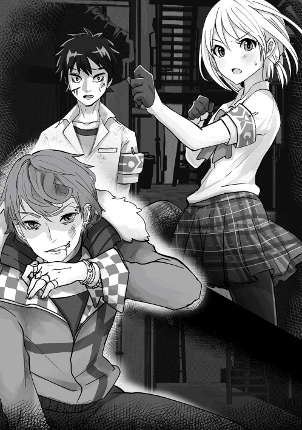
その声に弾かれるように少年は走った。その姿に内心でホッとした後にアリスは敵を見据える。魂喰らいは凶悪な表情で嗤った。彼にとっては新たな獲物が現れたとしか感じられなかったのだ。
「少しは骨のありそうな姉ちゃんだな。食いごたえがありそうだ。......なんだ、お前、レアものじゃねえか」
男の不気味すぎる表情に悪寒を感じながらもアリスは攻撃を仕掛け出した。
◆◇◆◇◆◇◆◇◆◇◆◇
ゼロスペースから外に出てきた晴彦は変貌していた。大きな見た目は全く変わらないが、凄まじく髪と髭が伸びていた。かろうじて髪の間から見える眼光は以前のものとは全く違うくらいに鋭いものとなっていた。どのくらい身体を洗っていないのか臭気も凄まじいことになっている。体全体を覆うのは野生の獣が持っているかのような禍々しい殺気である。元気になった主の姿を確認しながらインフィニティが微笑む。
「マスタ──、戻られたんですね」
「時間内にやれることはやってきたつもりだ」
「間に合いますか」
「間に合わせるんだよ。詳しい作戦説明は脳内で指示する」
「それにしても臭いますね」
「そうか？ 自分では気づかないんだが。まぁいいか。行ってくるわ」
そう言って晴彦は【クロックアップ】と神速を使った。その動きは同じく【クロックアップ】のスキルを使用したインフィニティであっても全く見切れないスピードだった。
◆◇◆◇◆◇◆◇◆◇◆◇
魂喰らいとアリスの攻防は熾烈を極めていた。物理的な殴り合いであれば戦闘スキルに秀でたアリスに優勢なものかと思われた。だが、魂喰らいは人並み外れた再生能力を持ち合わせていた。致死に至るほどのダメージを喰らうと同時に再生しているのだ。それは攻撃に意味がないのと同義であった。
アリスがさらに不利になっている理由があった。奴は攻撃を喰らうたびに彼女のスキルを奪い取っているのだ。何がそのスイッチになるのかは分からないが、確実にアリスは主要なスキルを軒並み奪われていた。攻撃を喰らえば喰らうほどアリスのスキルを吸収して進化していく。荒い息をしながらアリスはヌアザに問い掛けた。
「......ヌアザ、闘神化はできますか」
『闘神化に必要なスキルのうち【金剛体】【剛力】【戦闘即応】【闘気操作】【未来予測】が敵に奪われており、使用は不可能』
「......わかりました」
感情のない戦闘スキル：∞の返答に対してアリスは冷や汗をかいた。切り札ともいえる力を奪われた上、敵はいまだ健在だ。さらに言えば逃げ場がない。
アリスが逃げられないように魂喰らいは周囲の空間に特殊な結界を張っていた。外部から宗谷や司馬がいくら攻撃を加えてもビクともしない強固なものであり、推測ではあるが術者である魂喰らいをどうにかしない限りは破ることはできないものなのだろう。
「逃げようとしても無駄だ、その結界は俺がどうにかしない限りは外すこともできねえよ。もっとも外す気なんてサラサラないけどな」
魂喰らいはそう言いながら無造作に歩みだした。両手を広げたまま、防御する必要などないとでも言うかのような歩みでアリスへと近づいていく。
「さあ、次はどんなスキルを見せてくれるんだ」
迂闊に攻撃できない。アリスは距離を置こうと飛び下がろうとした。だが、それより早く魂喰らいは瞬時にして彼女の背後に回ると力任せに彼女の背に肘鉄を入れた。
息ができないくらいの衝撃がアリスの身体を襲う。床に叩きつけられた彼女を見下ろしながら魂喰らいは残忍に笑った。
「逃げようとするなんて悪い脚だな」
そう言って無造作にアリスの両足首を掴んだ魂喰らいは力任せにその足を握りつぶした。声にならない激痛がアリスの足に走り、彼女は目に涙を浮かべながら悲鳴をあげた。
「いい声だ、感じてきちまった。もっと泣いてくれよ」
「だ、誰が......」
アリスの言葉を最後まで聞く前に魂喰らいはその身体を思い切り踏みつけていた。メキメキと骨がきしむ音が不気味に響く。すでにアリスに反撃できるほどの余力はなかった。だが、魂喰らいは容赦がなかった。彼女の心を折るためにその右腕を思い切り踏んで折った。それだけでは止まらずに徹底的に攻撃を加え続けた。血を流しながらボロ雑巾のようになっていくアリスを見ながら魂喰らいは嗤いながら暴力を加え続けた。
アリスが虫の息になり、魂喰らいはそろそろ止めを刺すかと考え始めた。
その瞬間だった。
アリスの眼前に一陣の風が吹いたかと思うと一人の男が現れていた。薄ら笑いを浮かべていた魂喰らいの顔面を思い切り殴りつけた男は拳が魂喰らいの頬に深々とめり込んでいく。男が拳を振り抜くと魂喰らいは後方まで吹っ飛んでいった。呆気に取られたアリスに振り返った男は苦笑した。
「無茶し過ぎだ。お前ら、外で司馬さんが怒っていたぞ」
「藤堂さんなのですか、その姿は一体」
「説明は後だ。今は目の前の敵に集中するぞ」
きりもみ回転しながら吹き飛ばされた魂喰らいはそのままの勢いで壁に叩きつけられて吐血した。その様子を冷たく見つめながら晴彦はアリスの様子を見た。かろうじて死んではいないものの酷い有様だ。腕と足が曲がってはいけない方向に曲がっている。たとえエリクサーを使っても簡単には治らないだろう。
アリスの惨状を見た瞬間に晴彦の心に静かに燃える炎が灯った。
「インフィニティ、さっき話した作戦通りだ。あとのことは任せたぞ」
『ここから先は私のフォローもできなくなります。マスター、ご武運を』
「ああ、頼む。これ以上は自分でも抑えが効きそうにないからな」
そう言いながら晴彦は心の中で灯った炎の正体を理解した。これは怒りだ。普段めったに激怒しない自分が心の底から相手の事を殺したいくらいの怒りの感情に支配されている。
自分が接した人間を傷つけられたことがこの男にとっての怒りの引き金だったのだ。
晴彦はその感情を抑えることなく、こみ上げる怒りのままに喉の奥から叫んだ。それはまるで猛獣の咆哮であった。恐れ知らずの魂喰らいですら一瞬はすくみ上るほどの凄まじい声だった。
「なんなんだ、あのデブは」
ダメージから回復した魂喰らいは茫然としながら咆哮をあげる謎の男を見た。危険すぎる男だ。体の奥から来る震えが恐怖から来るものだと理解した魂喰らいは強敵の出現に不敵な笑みを浮かべた。
◆◇◆◇◆◇◆◇◆◇◆◇
年端もいかない少女をあそこまでいたぶることができる目の前の男に対して強い怒りを感じた。魂喰らい。不気味なほどの赤い髪をした痩せぎすの男。インフィニティが再生させた記録映像で見た時にも感じたが、こうして会って改めて確信した。この男は危険だ。野放しにしておくわけにはいかない。
壁に叩きつけられたダメージから回復したのか魂喰らいはゆっくりと起き上がった。憎々しげにこちらを睨む表情には優しさなどは欠片ほどもない。察するにこれから俺をどういたぶろうかという算段でも練っているのではないだろうか。あいにくと料理される気など全くない。
睨み合いは一瞬で終わった。魂喰らいがその腕から巨大な火球を生み出してこちら目がけて放ってきたからだ。真っすぐに向かってきた火球はサッカーボールを蹴る要領で思い切り蹴り上げた。
多少の熱を感じたが大した攻撃ではない。だが、相手はそうは思わなかったようだった。
「馬鹿な。普通の人間を消し炭にする炎だぞ......」
「自分が戦っている相手を普通のデブとでも思ったか。お前、楽には死ねないよ」
「やかましい！ クソデブが！」
俺の挑発に激怒した魂喰らいは先ほどの火球とはくらべものにならない大きさの火球を両手で構成させると同時にこちら目がけて放ってきた。避けることのできないほどの大きさの炎だった。
だからどうした。避けきれないなら正面からぶち抜くだけだ。俺は心の中でそう呟いた後に迷うことなく燃え盛る炎に目がけて一直線に向かった。そして思い切り炎を殴りつけて突き抜けた。周囲の景色が歪むほどの熱だ。全くダメージがないわけではない。だが、怒りに包まれた俺をこんなこけおどしで止められると思ったら大きな間違いだ。
爆炎を潜り抜けた俺の姿に魂喰らいは驚愕して次の炎を生成しようとした。それを待つほどお人よしではない。炎を潜り抜けた勢いのまま、俺は走った。その勢いで魂喰らい目がけて突進して思い切り顔面を殴りつけた。手の感触から顔面が陥没していくのが分かる。だが、この男はこの程度ならばすぐに再生するだろう。再生する隙を与えずに連続攻撃を行う。それがこの男を倒すために決めた方針だ。顔面が再生している隙に腰に差した小刀を抜いて魂喰らいの両手を切断した。切断した左右の腕はすぐにくっつけることのできないように遠くに放り投げる。傍から見れば凄まじく残忍なことをしているという自覚もある。だが、この男を野放しにしておけば次の犠牲者を出すことになる。それを避けるためなら俺はあえて鬼になる。
顔面が再生した魂喰らいは自らの両腕を切り裂かれたことを見て恨みがましい目をした。
「ぎゃああ！ てめえ、なんてことをしやがる、こんな残酷なこと、人間のできる所業じゃねえだろう」
「戦った相手を生きたまま火だるまにするような奴に言われたくはない」
「ははは......どうやら俺と同類らしいな、だが、だいぶ甘ちゃんだ！」
魂喰らいはそう言って切断した両手を一瞬にして再生させた。まさかそこまでの再生能力を備えているとは思いもしなかった俺は予想外の事態にぎょっとなった。焦った俺に魂喰らいは残忍な笑みを浮かべながら俺の両腕を無造作に掴んだ。細腕のどこにこんな怪力を備えていたのか、全く腕を動かすことができない。
「さあ、捕まえたぜ」
「......何のつもりだ」
「決まってんだろ、化け物じみたお前からスキルを奪ってやるのさ、さぞかしレアなスキルの持ち主だろうからな」
魂喰らいの掌越しに何かが吸い取られていくような感覚がしていく。恐らくアリスや犠牲になった少女もこの手にやられたのだ。接触することで相手のスキルを奪う。それがこの男の特殊能力なのだろう。しばしスキル吸収行動を行った魂喰らいはようやく異変に気付いた。
「......なんでだ、なんで吸い取れねえ」
「放してくれないか。生憎と男とじゃれ合う趣味はないんだ」
「ふざけたことをぬかしやがって」
「お得意のスキルの強奪が出来なくて焦っているようだな。だが、容赦はしないぞ」
俺は膝で思い切り魂喰らいの顎を打ち抜いた後に両腕の束縛から自由になった。これまで行ってきた手段が通用しなかったことで相手は酷く動揺しているようだった。俺は首を回してゴキリと音を立ててから意地悪そうに笑った。
「......てめえ、スキルをどこにやった」
「スキル？ お前のような出鱈目な相手とやり合うのにスキルなんぞ持ってくるわけがないだろう」
「馬鹿な......ス、ステータスオープン!!」
俺のステータスを確認した魂喰らいは驚愕した様子だった。それはそうだろう。普通の人間ならば何かしら持っているスキルが一つも表示されていないのだ。
手品の種明かしをしてしまえば俺のスキルは一時的に全て分身体のインフィニティに譲渡している。俺のステータスを見れば分かるが、ある一つのスキルを除いてスキルは全て使用不能となっている。その一つのスキルに関しても切り札として偽装しているために現在は■■■■としか表示されない状態となっている。
「どうした。得意技が使えなくて焦ったか」
「スキルがない奴がなんでそこまで戦えるんだ！ 得体の知れない化け物め」
「ああ、化け物さ。お前と同じな」
恐らくはこの男はこれまでの間、こうして相手のスキルを奪い取ることで動揺を誘い、相手をいたぶってきたのだ。だから俺のようなイレギュラーに対面したことは初めてなのだろう。その動揺を今回は逆に利用させてもらう。俺は相手の不安を誘うかのようにゆっくりと近づいていった。
◆◇◆◇◆◇◆◇◆◇◆◇
一方、その頃、シェーラは晴彦のアパートで待ち続けていた。本当は晴彦についていきたかったが、晴彦に危険だと止められたのだ。反論しようとしたが、これ以上ないくらいに真剣な表情をしている晴彦に対して何も言えなくなった。絶対に無事に帰ってきてください。そう言った瞬間、晴彦は力強く「うん、必ず戻るから」と言った後にシェーラの頭を撫でてから出かけていった。
晴彦達の意識は危険人物である魂喰らいに対して集中していた。だからこそ、アパートに残るシェーラが一人きりになった時の警備は手薄になっていた。そしてその隙を狙う男がいた。宗谷捜査官に偽装した帝国宰相ケスラである。炭化した死体のふりをして皆を欺いたケスラはＷＭＤの遺体安置所から起き上がってから元の姿に戻ると同時に晴彦のアパートに転移していた。
そして晴彦の部屋に容赦なく攻撃魔法を放った。部屋の外に逃げ出したシェーラに向かって瞬時にして距離を詰めたケスラは彼女のみぞおちに当て身を食らわして意識を失わせた。
◆◇◆◇◆◇◆◇◆◇◆◇
魂喰らいは目の前の豚男に圧倒されていた。魂喰らいが能力を得てからスキルを奪うことができなかったのは一度もない。最初は街のチンピラだった。それから次々に相手を襲って殺しては力を得ていった。裏社会に生きる凄腕の殺し屋を殺したことで『人食い』『再生能力』の力を得てからはこの街に潜みながらも享楽的に殺人と能力の向上を図っていった。彼にとって過ちがあったとすれば人から奪った能力で相手を圧倒するという戦い方が基本であったために奪い取った能力の把握や研鑽を怠ったことである。能力の組み合わせ次第でいくらでも強くなれたはずなのに彼は現状に胡坐をかいていた。
だからこそ魂喰らいはイレギュラーである晴彦に対抗できない。
晴彦に殴られ続けながらも魂喰らいは自らが生き残るために必死に考えた。さっき確認した奴のステータスのスキル欄に表示された■■■■のスキル。恐らくはあれが奴の強さの源に違いない。そうでなければ自分があんなデブに劣ることがあるものか。あれを引き出せば勝てる。
そう思った魂喰らいは視界の端に一人の少女の姿を見つけた。それは先ほど彼が痛みつけたＷＭＤの少女であった。あの女、使える。そう思った魂喰らいはサイコキネシスで少女を引き寄せると自分の盾にした。
寸前で豚男はその凶暴過ぎる拳を止めた。
「汚いぞ......」
「何とでも言え、おっと、少しでもおかしな真似をしたらこの嬢ちゃんを消し炭にするぜ。正義感を気取った甘ちゃんめ、だからお前は負けるんだよ」
魂喰らいは少女を盾にしたまま、晴彦をサイコキネシスで拘束した。そしてその胸に手を添えて彼の中からスキルを奪い取ろうと試みた。晴彦の体内の奥深くに眠っているそのスキルを取り出すのは骨が折れたが、大きな障害はなくスキルを奪い取ることに成功した。
力を失った晴彦が膝から崩れ落ちる様子を見て魂喰らいは自らの勝利を確信した。
「.........」
「どうした、悔しくて言葉も出ないか」
「.........はは、はははは」
「恐怖で気が触れたか。安心しろ、お前から奪った力でゆっくりと嬲り殺してやる」
「お前が想像通りの屑で安心したよ。おかげでそのスキルを吸収させることができた」
晴彦が最初に何を言っているのか分からずに魂喰らいは怪訝な顔をした。だが、すぐに魂喰らいに起こり始めた異変が晴彦の言わんとすることを代弁した。傷口が塞がったというのに細胞が増殖していく。体の再生が終わらないのだ。それだけではない。体中が異常な熱を帯び出した。頭がはち切れそうな苦しみにもがき苦しむ魂喰らいは首を掴んでいたアリスの拘束を解いて身悶えた。床に崩れ落ちたアリスを抱きかかえた後に晴彦はもがき苦しむ魂喰らいを見下ろした。
「どうした。俺から奪った力で嬲り殺してくれるんじゃなかったのか」
「てめえ、......なんのスキルを吸収させた」
「【スキル暴走】。お前のために用意したとっておきのレアスキルだ。スキルを持っているものは自身の意思とは関係なく全てのスキルが暴走して自滅に向かっていく。一体どれだけのスキルを所有しているかは分からないが、その全てがお前の敵だと思え」
魂喰らいに奪い取られたスキル達が奴の体内で暴れ狂う。それぞれのスキルの力の結晶達が宿主の意思に反して暴走し続ける様子は正視できないほど残酷な光景だった。
「なんだと、嘘だ、嘘だ、嘘だ!! お、おぼっ！！！ ぐぎゃあああああああ!! 痛い痛い痛いいたいいいいいいっ!! 助けてええええ!!」
「皮肉なものだな、お前は馬鹿にしていた人間達のスキルによって滅ぼされる。お前の言ったセリフをそのまま返そう。だからお前は負けるんだ」
晴彦はそう言って魂喰らいから背を向けた。増殖した魂喰らいの肉の塊は限りなく膨張して全身をきしませていく。もはや助かることのない魂喰らいを静かに眺めた後に晴彦はその場を後にした。
◆◇◆◇◆◇◆◇◆◇◆◇
魂喰らいと晴彦の戦いを静かに眺めていた男はほくそ笑んだ後、暗がりから姿を現した。
それは宗谷捜査官だった。死んだはずの人物が登場したことにその場にいた全ての人間が呆気に取られる。宗谷の姿をした男は破裂した後も脈動し続ける魂くらいの肉片を拾い上げると、躊躇うことなく口に含んだ。
「スキルを暴走させるとは恐ろしいものを開発するものですね」
「嘘、宗谷さん、貴方は死んだはずじゃないんですか」
得体の知れない相手が現れたことでその場にいた全員が身構える。だが、宗谷捜査官は身構えることなく、その身に宿した強大な力を解き放った。それは荒れ狂う暴風となって晴彦たちに襲い掛かった。立っていることもできずに吹き飛ばされていくほどの凄まじい風圧だった。荒れ狂う風の中心に宗谷捜査官は立っていた。その背から天使の羽根のような強大な翼が生えていく。変化は翼だけでなく、宗谷の全身が異形のものと変わっていった。人間のものとはあまりにもかけ離れた姿に晴彦が驚愕の叫びをあげる。
「何なんだ、あいつの姿は!!」
『不確定形の鑑定を行いました。不確定形は帝国宰相ケスラが熾天使と宗谷捜査官、魂喰らいを食らって同化した姿であると結論付けられます。戦闘能力は魔神獣と同等の力を持っています』
「なんだと!?」
「驚いているようですね。藤堂晴彦、貴方を確実に殺すためには私も人の姿を捨てることにしたんですよ」
晴彦は荒れ狂う嵐の中で魔剣ティルヴィングを召喚した。風を操る魔剣によってケスラの生み出した嵐を中和した晴彦はそのまま、ケスラ目掛けて斬り掛かった。だが、その刃が届く前にケスラは翼を広げて薙ぎ払った。翼から生じた衝撃波が物理的な攻撃となって晴彦の身体をとらえた後、そのままの勢いで壁に叩きつけた。口から吐血した晴彦を見下ろしながらケスラは笑った。
「たわいない。もう少し骨があるかと思いましたが、どうやら私が強くなり過ぎたようですね」
ケスラは冷笑を浮かべた後に片手に純粋な破壊エネルギーのみで形成された攻撃魔法を生成した。それはその場を吹き飛ばすのに十分な力を秘めたものだった。その危険性を認識した司馬とワンコが弾かれるように飛び出していた。瞬時にして専用装備であるダインスレイブを身に纏った司馬、そして白い鎧を身に纏ったワンコ、そしてクリスが共にケスラに斬りかかっていく。
だが、ケスラはそれに対して身動きを取ることはなかった。刃がケスラに届こうとした瞬間、その姿が煙のように消えた。次の瞬間、司馬とワンコの背後にケスラが現れた瞬間、三人の剣士は全身鎧を不可視の刃物によって切り刻まれていた。鎧の許容できるダメージを超えた攻撃をまともに食らい、司馬とワンコ、そしてクリスは傷だらけになって倒れ伏せる。
「私に触れることもできないとは、本当に他愛無い。それでも異世界防衛組織の精鋭と古の勇者ですか」
ケスラはそう言った後に虚空から何かを召喚させた。それは晴彦のアパートで拉致したシェーラであった。意識を失っている様子の彼女はケスラの魔力によって宙に浮かんでいた。
「シェーラ！ どうして貴様がシェーラを」
「儀式に必要だからですよ」
ケスラはそう言った後に何かの呪文を唱えた。その瞬間、シェーラの全身と晴彦の身体、そしてケスラの身体が淡い光で輝き始める。
「見えますか、これは勇者召喚の呪文の光です。中途半端に儀式が継続しているせいで私たちは元の世界に戻れないのです。だからこそ、私はシェーラ姫を殺して呪文を強制終了させようとしました。だけど、幾度となく貴方たちに邪魔されたせいで叶う事はありませんでした。だから私は考え方を変えることにしたのです。勇者召喚の呪文自体を改造してしまう事は出来ないだろうかという考え方にね」
ケスラがそう言った瞬間、周囲の景色が切り替わった。それは巨大な石柱がそびえ立った神殿のような空間だった。空間の中央には強大な問がそびえ立っていた。
「なんだ、この空間は」
「ここはディーファスと地球を繋ぐ異世界の門が存在する空間です。熾天使の力を持つ私はこの空間に干渉することができるのです」
「こんなところで何を......する気だ」
「こうするんですよ」
ケスラはそう言ってシェーラを抱え上げるように両手を掲げた。その瞬間、シェーラが不可視の力によって門の上空に転移する。次の瞬間、彼女は門から伸びた鎖によって囚われた。
「やめろ、彼女を離せ！」
「止めたいのならば力づくで止めればいいでしょう」
ケスラはそう言った後に呪文を唱えた。次の瞬間、シェーラの身体から際限なく魔力が吸い上げられ始める。その苦しみ方は尋常なものではなかった。
「勇者召喚を行える人間を異界の門を開くためのシステムの一部に組み込んだ後に呪文自体に干渉します。そうすれば私は元の世界に戻れる。もっとも、システムに組み込まれた人間は魔力を吸い上げられすぎた影響で死ぬみたいですね」
「貴様あああっ！！！」
「そうだ、私はお前のそういう表情が見たかったんだ」
怒り狂った晴彦は【魔力限界突破】と【魔王化】のスキルを使用して威力を増大させた【雷撃魔法】の矢をケスラに放った。だが、それがケスラに届くことはなかった。何故ならば不可視の障壁によって電撃の矢が掻き消えてしまったからである。だが、晴彦はそれを見届ける前に次の行動を起こしていた。ケスラが電撃の矢を迎撃するのをはじめから予想してシェーラの下へ走ったのである。彼女を捕える鎖を晴彦が掴んだ瞬間、凄まじい稲妻が晴彦の身体を容赦なく襲った。本来であれば電撃吸収を持っているはずの晴彦がダメージを負うことはないはずだった。だが、晴彦は稲妻に焼かれて黒焦げになった状態で地面に落下した。
「その鎖は神の力によって作りだされたもの。幾ら貴様が電撃を吸収するといっても所詮は神の力の前には無力なのです」
ケスラはそう言った後に頭上に禍々しい槍を召喚させた。それは熾天使ガブリエルを攻撃した時に使用した槍と同じものだった。朦朧としながらも立ち上がった晴彦に対してケスラは容赦なく槍を投げた。次の瞬間、槍の刃先は晴彦の胴体を貫いていた。
「ごふっ」
口から吐血する晴彦を更にケスラが召喚した天使たちが襲う。両手両足を天使たちの剣によって貫かれた晴彦は両手足を大地に縫い付けられた。だが、晴彦は諦めなかった。
◆◇◆◇◆◇◆◇◆◇◆◇
ケスラの力は圧倒的だった。このままではシェーラを守るどころか、俺達も全滅する。両手足を天使たちの剣によって縫い付けられたまま、俺は自らを起点とした電撃魔法を放った。天使たちが黒焦げになった後、自由となった俺はティルヴィングを召喚させてケスラに切りかかった。ケスラはその獣のように強大な腕でティルヴィングを受け止めた後、俺の腕を掴んだ後に力任せに壁に叩きつけた。一度ではなく、何度も何度も奴は俺の身体を叩きつけ続けた。
ぼろ雑巾のようになった俺は息も絶え絶えの状態でケスラを見た。奴は俺がボロボロの状態になっていることを心の底から楽しんでいる様子だった。
「どうです。命乞いをすれば帝国の奴隷として使ってあげてもいいですよ」
返答の代わりに俺は電撃魔法を放った。ケスラを攻撃するためのものではなかった。電撃エネルギーをその自分の体に吸収して雷の化身となる【疾風迅雷】を使用するためだ。雷の化身となった俺はケスラの束縛から逃れてシェーラの下に走った。鎖の放電によって苦しむシェーラを助けるために俺は鎖を両手で握った。激しい放電によって手が焼け付きそうだったが、歯を食いしばって鎖を引き千切ろうとした。
「ハル！ 私のことは構わないで......逃げてください!!」
「できるわけ......ないだろう」
ステータス表示を見てみるとシェーラの生命力が急激に低下しているのが分かった。魔力をほとんど吸い取られて生命力を吸い取られているのだ。このままでは門に魔力を全て吸い上げられて死んでしまう。そう思った俺は自分の腕が焼け落ちるのを覚悟で鎖を引き千切った。
背後では俺を追ってきたケスラを司馬さんたちが防いでくれている。だが、奴の力は圧倒的だ。このままではすぐに追いついてくるだろう。そう思った俺はインフィニティに命令を出した。
「インフィニティ、シェーラに勇者の力を譲渡して、開いた門からディーファスに渡ることは可能か」
『マスター、それは......』
「可能かと聞いてるんだっ！」
『理論的には可能です』
やっぱりそうか。勇者としての力を持つ俺がディーファスに行くことができないのは体重が58㎏以上だからだ。ならば体重が58㎏以下の人間に勇者の力を譲渡すれば門を潜ることができる。
「よかった、シェーラ。君だけでも逃がすことができるみたいだ」
「嫌です、ハル、私一人だけ助かるわけにはいきません！ 一緒に戦います」
彼女の言葉に俺は敢えて答えずに首を横に振った。俺の命令を忠実に実行したインフィニティが俺の身体からシェーラの体に宿っていく。同時に彼女の体が浮遊して門に引き寄せられていく。彼女は必死にそれに抗おうと俺の手を掴もうとした。だが、門が引き寄せていく力の方がはるかに強かった。
「ありがとう、シェーラ。奴は刺し違えてでも食い止める。だから君は元の世界に戻るんだ」
「嫌です！ ハル！ 今すぐにこんなことはやめてください！」
「大丈夫だよ、向こうに行けば俺のことなんてすぐに忘れるから。俺だって君のことを忘れるように努力する」
口ではそう強がって見たものの、何故だろうか。目の前が涙で滲んでいく。必死に俺の手を掴もうとするシェーラの目からも大粒の涙がこぼれ落ちる。
「私は貴方と過ごした日々を絶対に忘れません！ ハル、私は貴方のことが......」
シェーラの最後の声は門から響き渡る轟音にかき消されていった。彼女の体が門の向こうに消えていった後、少しだけ開いていた異世界の門は内側から閉じていった。その時になって司馬さんたちを打ち倒したケスラが俺の下にやってきた。
「シェーラ姫だけを逃がそうとするとはふざけた真似を。だが、寿命が少しだけ延びただけです。藤堂晴彦、貴様を殺してすぐにディーファスに向かうとしましょう」
「......んなら......ってみろ」
「今、何か言いましたか」
「やれるもんならやってみろ」
その瞬間、俺の中で何かが切れた。インフィニティが俺の中から完全に消えた瞬間に皮肉なことに俺は彼女が俺の体内で果たしていた鑑定以外の役割に気づかされていた。それは俺の潜在能力が暴走しないようにするリミッターである。彼女は俺の暴れ狂う能力が俺を内側から滅ぼすことがないように抑え込んでいたのだ。そのリミッターがなくなったことで抑えこんでいた力の塊が込み上げてくることを理解していた。
それを理解した瞬間、俺の姿は変貌していた。【疾風迅雷】の力を使ったときと同様の雷のエネルギー体に変わっていた。【疾風迅雷】との大きな違いは見た目が標準体型に変わっていたことだ。それだけでなく、内側に秘めた力は桁違いだった。だが、それにケスラが気づくことはなかった。
「こけおどしを」
ケスラは化け物のような巨大な腕を振り上げて俺に襲い掛かってきた。俺はそれを軽く撫でた。その瞬間、ケスラの腕が粉々に粉砕された。一瞬、何が起きたのか分からずにケスラが自分の腕だった場所を見る。だが、そこには何もなかった。
「馬鹿な、一体、何をしたんだ、貴様は」
俺はそれに答えることなく、一歩前に踏み出た。得体の知れない恐怖を感じたのか、ケスラは俺の歩みに合わせるように一歩後ろに下がった。だが、それは無意識のものであったらしく、奴は自分が恐怖したと認めたくはなかったようである。
「馬鹿な、この私が貴様のような豚に恐怖しただと!! 許さん、許せるものか」
ケスラはそう言って配下の天使たちを襲い掛からせた。だが、俺が腕を一薙ぎした瞬間、天使たちは粉々になって砕け散っていく。恐怖に顔を歪めたケスラは何らかの能力を使用した。【クロックアップ】を使用した時のように周囲の時間が凍結している。奴は俺の時間も凍結したと勘違いしているようで、凶悪な表情をしながら攻撃を仕掛けてきた。その攻撃を避けた俺はカウンターを仕掛けるように奴に渾身の拳を放った。拳に宿った強大な雷のエネルギーが奴の身体を焼き尽くし、粉々にしていく。
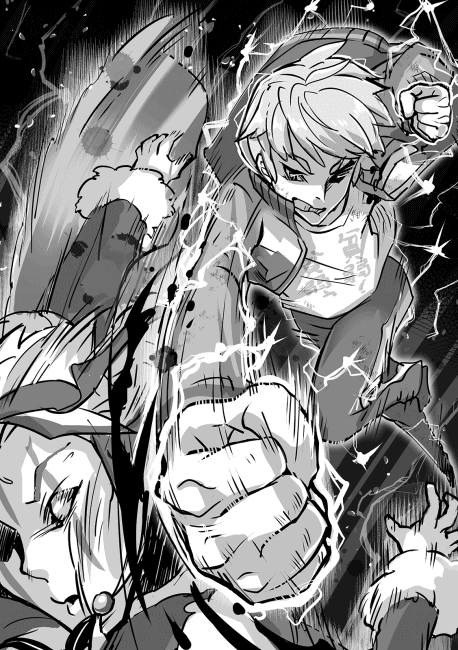
何が起きたのか分からないまま、奴はこの世から消滅した。同時に力を使い果たした俺はその場に倒れ伏した。消えゆく意識の中で自分の指先が光の粒子になって消えかけているのが分かった。駆け付けた司馬さんやワンコさん、クリスさんが俺に呼び掛ける中、俺は意識を失った。
◆◇◆◇◆◇◆◇◆◇◆
シェーラ姫が目覚めたのは見たことのある景色の平原だった。彼女は月が二つ存在する夜空を見上げて自分が元の世界に帰還したことを理解した。そして、自分をこの世界に帰還させた異世界の青年のことを思って涙を流した。そんな彼女の脳内で何者かが呼びかける。
『シェーラ姫、聞こえますか』
「聞こえますよ、インフィニティ。頭の中で貴方の声がするというのは不思議な感覚ですね」
『マスターがこちらに来るまでの間、貴方の身体に宿らせて頂きますので、宜しくお願いします』
「ハルは大丈夫なのですか」
『大丈夫です。簡単に死ぬようなマスターではありません。私がこうして存在しているのが、マスターが無事である何よりの証拠ですよ』
「そうですか、ハルは無事ですか。よかった」
そんな話をしている矢先、遠くの方で火の手が上がっているのが見えた。何者かが近くの集落に火を放ったようである。沢山の人間の叫び声と剣劇の響きが木霊するのを聞いてシェーラ姫は決断した。
「行きましょう、インフィニティ」
『良いのですか。明らかにあそこに行くのは危険だと思われますが』
「ハルだったら躊躇うことなく助けに行くと思います。だから行きましょう」
『シェーラ姫はマスターと関わることになって強くなりましたね』
シェーラはインフニティの言葉に静かに笑って答えた。異世界の姫と、勇者に宿っていた鑑定スキル∞はこうしてディーファスでの冒険を開始したのだった。
◆◇◆◇◆◇◆◇◆◇◆◇
目覚ましの音によって俺は目覚めた。眠い目をこすりながら時刻を見てみると午前五時三十分。日課であるウォーキングの時間だ。いつも付き合ってくれるシェーラを起こそうとして彼女の部屋に行った俺はもぬけの殻になっている部屋を見た後に彼女がもういないことを思い出していた。彼女はディーファスに戻ったのだ。俺の鑑定スキルであるインフィニティと共に。
溜息をついた後に俺は自分の腕に施された封印の呪紋を眺めた。インフィニティが居なくなったことで俺は全力を出した時の力の制御ができなくなった。全力の力を出した場合、自らの体が消滅するまで力の放出を止めることができない。それを防ぐためにはＷＭＤの術者達が施した封印で力の流出を防ぐしかない。封印を解除して消滅せずに戦えるのはおおよそ一分間であるという、どこぞのヒーローよりも厳しい制約を課せられてしまった。
だが、俺のやるべきことは変わらない。ＷＭＤで検査を受けた後に分かったのは俺の体の周囲にはいまだに勇者召喚の呪文が継続しているらしいのだ。ならば、標準体型になればもう一度彼女のいる世界に渡ることができる。
彼女が俺と別れる時に伝えようとした言葉。轟音によって掻き消えてしまったが、俺には彼女が何を伝えようとしていたかが分かっていた。だからこそ、彼女に再会した時にははっきりと自分の想いを言葉にして伝えようと思うのだ。
俺は着替えを済ませた後に外に出た。心地よい風と朝露の匂いを感じながら、俺は新たな一歩を踏み出した。
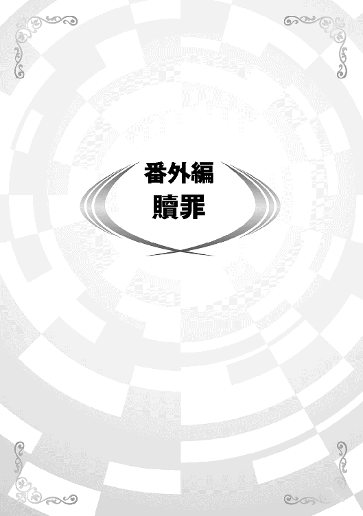
異世界の帝国の宰相であり、邪悪な魔法使いのケスラによって心の隙を突かれた剣崎壱美は盟友の藤堂晴彦とシェーラ姫の命を狙った。全てはケスラの行った邪悪な魔術のせいである。晴彦たちはそう言って壱美を許した。だが、それでも壱美自身は自分のことを許すことができなかった。
元々、壱美は弱きものたちを守るために彼女の一族に伝わる剣術を身に付けた。厳しい修行の甲斐あって彼女は人並み外れた剣術の腕と魔剣を操る技術を身に付けた。だが、幾ら剣の腕をあげたとしても精神の未熟さを敵に利用されるようでは意味がない。自分に必要なのは精神的な弱さを克服するための修行である。壱美はそう理解してＷＭＤの地下にある訓練施設に籠った。異世界の技術を利用した最新の魔科学と様々な魔術的な術式によって密閉された特殊空間の中では用途に応じた様々なゴーレムと戦うことができる。
ゴーレムは外側の制御盤で設定した訓練レベルに応じて材質が変わっていく。壱美が設定したレベルは自分を大きく上回る45。それによって生成されたのはアイアンゴーレムであった。全身が鋼鉄の塊となるアイアンゴーレムは戦車や重火器で武装した一個小隊を滅ぼすほどの怪力と装甲を持った恐るべき強敵だ。幾ら壱美が魔剣を操る侍といっても、アイアンゴーレムの攻撃を受ければただではすむまい。第三者がいれば自殺行為と止めるほど無謀な訓練を壱美は行っていた。
アイアンゴーレムと対峙した壱美は冷静に対戦相手を睨みつけた後、正面から切り掛かっていった。だが、彼女の斬撃がゴーレムの腕に届いた瞬間、その刃は甲高い金属音と共に弾き返されていた。何という装甲だ。予想外の防御力に圧倒された壱美に対してゴーレムは容赦なく巨腕で殴りつけてきた。ボールのように高速で後方に弾き飛ばされた壱美は壁に激突して吐血していた。
「ぐぅ、予想以上の攻撃力と防御力だな」
よろめきながらも何とか立ち上がった壱美は再び剣を構えた後に攻撃を開始した。正面から切り掛かろうとする瞬間に高速移動して側面から切り掛かろうというフェイントを行った。だが、アイアンゴーレムはその動きを全て把握していた。壱美が気づいた時にはゴーレムの拳が迫っていた。慌てて攻撃を回避しようとするものの、急速な方向転換が間に合わずにゴーレムの攻撃をまともに食らった壱美は再び壁に叩きつけられていた。そこからは一方的な蹂躙だった。ゴーレムは出現位置から一歩も動かないものの、攻撃を加えてくる相手に対しては一切の容赦を行わなかった。
だが、壱美はくじけなかった。ぼろ雑巾のようになろうと何度も倒れては立ち上がろうとした。ふと地面に落とした刀の刀身に映りこんだ自分の姿を見た彼女は苦笑した。
「我ながらボロボロだな。だが、ハル君は、シェーラはもっと痛かったはずだ。この程度で私の罪が許されるはずもない」
彼女の脳裏に焼き付いているのは自らの手で仲間を傷つけた光景だ。晴彦の身体を切り裂き、親しい友人であるシェーラを傷つけた手の感触は今でもはっきりと残っている。その感触と罪悪感はもう一人の自分の姿となって壱美の前に現れていた。
「無様な姿。私の力を借りて強くなっていたのに、私を捨てるからそんなことになるのよ」
「馬鹿な、お前は呪いのアイテムと共に消えた幻のはずだ」
「私はお前の影、影は本体が消えない限り、消えることはない」
「そうだとしても、私は......二度とお前の力を借りたりはしない!!」
壱美は迷うことなく、幻を切り裂いていた。真っ二つとなった幻影は断末魔の叫びをあげながら虚空へと消えていった。以前の彼女であれば幻の囁きに耳を貸して自分を失っていたかもしれない。だが、彼女は仲間を傷つけた強烈な罪悪感から生まれた意志の力で正気を取り戻していた。荒い息を吐きながら、壱美は自嘲めいた笑みを浮かべた。
「二度とあんな思いをするものか。本当の強さとは他人からの借り物で生まれるものではない。ハル君のように、弱い自分を認めて、そこから更に一歩踏み出す努力をすることによって生まれるんだ」
かつて壱美は急激に強くなった晴彦に、その強さは彼の人並み外れたスキルから生まれるものであると嫉妬した。だが晴彦の本当の強さはスキルなどではない。彼の本当の強さは自分の弱さを自覚し、それでも他者を守るために強くなろうとする心から生まれるものなのだ。
彼女は満身創痍の状態だった。だが、それでも彼女は恐れずにアイアンゴーレムに立ち向かう闘志を燃やしていた。その姿に呼応するかのように彼女の所有する一振りの刀が真の力に覚醒していた。
その刀の名は剣狼。かつて壱美の世界の危機の際に世界を滅ぼす存在と戦った孤狼族の勇者『剣狼』が身に付けていた刀であり、壱美にとっては祖父の形見であった。刀から迸る闘気が壱美の体に纏わりついていく。まるで共に戦うという事を伝えてくれているかのようだった。
それまで何をしても応えることのなかった剣狼が応えてくれたことに壱美は本当に嬉しそうな顔をした。幼い日に死した彼女の祖父が自分を認めてくれた気がしたのだ。傷だらけの体のまま、残った力を振り絞りながらも壱美はアイアンゴーレムに立ち向かっていった。
あくまでも真っ向からの攻撃だった。それに対してアイアンゴーレムは拳を放って応戦した。二つの攻撃が激しくぶつかり合う。だが、真の力を解放した剣狼の力は圧倒的だった。先ほどは傷ひとつ付けることのできなかったアイアンゴーレムの装甲を容易に切り裂いていく。鋼鉄で出来た腕を切り裂きながら壱美はゴーレムの腕の上を走った。そして無防備となっているゴーレムの頭目掛けて刀を振り下ろしていた。斬撃が光の線となってゴーレムの身体を縦横無尽に走っていく。全ての攻撃が終わった壱美はゴーレムの背後に降り立った後に剣狼を鞘に収めた。鞘に収められた剣狼は光の粒子となって彼女のアイテムボックスの中に収納されていった。
次の瞬間、アイアンゴーレムはバラバラになって崩れ落ちた。強敵を屠った壱美は大きく息を吐いた後にその場にへたり込んだ。
「やった。私はやったんだ、これでハル君に胸を張って会える」
戦闘態勢を終えた壱美の表情は年相応の少女のもので、その表情だけを見てみるとアイアンゴーレムを倒した戦士だとは信じられなかった。彼女は自分のアイテムボックスからポーションを取り出すとハンカチに浸して傷口を押さえ込んだ。そんな彼女の下に鞘に納められた剣狼が現れる。アイテムボックスの中に収納したはずの自分の愛刀が現れたことに壱美は一瞬だけ怪訝な表情をしたが、金属の共鳴音に近い音が剣狼から鳴り響いた瞬間に愛刀の意図を理解した。剣狼が固有武装である鎧を身に纏うために刀を抜けと言っているのだ。剣狼の言葉に頷いた壱美は刀を抜いた。瞬間、鞘が元の姿である白い蜘蛛の姿に変異した後、金属に変質して壱美の体に纏わりついていく。
瞬くような一瞬で壱美は狼を思わせる白い鎧を身に纏った騎士に変わっていた。こうして壱美は固有武装である剣狼の力を使いこなせるようになったのだった。
あとがき
はじめまして。『異世界召喚されたが強制送還された俺は仕方なくやせることにした。』の作者のしぐれあめと申します。もしかしたら、はじめましてでなく、一巻に引き続き、二巻を買われた方には心よりの御礼を申し上げます。
まずはこの本の出版に関わられた皆様にお礼を申し上げます。編集のＩ様、出版先のＴＯブックスの皆様、作品のイメージにピッタリの美麗なイラストを描いてくださったイラストレーターのＫＡＣＨＩＮ様、コミカライズを担当頂いた幾夜大黒堂様、そして出版前からネット上で私の作品を読んでくださった皆々様に厚く御礼申し上げます。
今回はコミカライズ版『異世界召喚されたが強制送還された俺は仕方なくやせることにした』について話をしたいと思います。五月からＷＥＢコミックガンマぷらす、そしてニコニコ静画にてコミカライズ版の本作の掲載が始まりました。実はこのコミカライズの話は出版の話を頂いた時、初期の時から話が出ていたのをすぐに進めてもらうようにお願いしたのです。
その甲斐あってか、担当のＩさんは凄腕の漫画家さんを作画担当として探し出してくれました。
幾夜大黒堂先生です。作画担当の幾夜先生はこちらが想像していた以上のイメージと描写力で本作を美麗に、かつ面白い作品として描いてくれました。主人公の晴彦やヒロインのシェーラだけでなく、サブキャラクターの司馬やワンコまでがコミカルに、それでいてスタイリッシュに描かれていて、動画で動いている様子が非常にイメージしやすいものでした。幾夜先生がどのように続きを描くのか、私自身もコミカライズ版の行方を楽しみにしています。コミカライズ版の影響は小説家になろう掲載時の本作にも影響を及ぼしております。今回の二巻の内容はネットで掲載している時の内容とはかなり違っていますので、ネットで読んでいた方もその違いを楽しむことができるのではないでしょうか。
さて、一巻でも語っていた作者のダイエット結果は、無事に80㎏だった体重を70㎏にまで減らすことができました。次に皆さんとお目にかかれる時にはもう少し体重が減っていることを願いながら精進していくつもりです。
最後になりましたが、この本を手に取ってくださった読者の皆様に改めて感謝を申し上げます。また皆様とお目にかかれる日を楽しみにしております。
平成三十年八月 しぐれあめ
著者プロフィール
しぐれあめ
Shigureame
レベル：？？ 体重：８０kg【理想体重５８kg】 中部地方在住の社会人。炭水化物抜きダイエットの本を見て眉唾ものだとやってみたところ、半年で７８kgから５８kgの減量に成功、この作品の概要を思いつく。現在、リバウンドしたので暖かくなったら再びダイエットしようかと思案中。
ＫＡＣＨＩＮ
主にソシャゲ、ＴＣＧ、コンシューマ、アーケード、ラノベでイラスト描いてます。今回、新登場の子が増えて益々画面が賑やかになってこの子とこの子がこんな会話してるんだろうなぁと想像してニヤけながら描いてました。
異世界召喚されたが強制送還された俺は仕方なくやせることにした。２
2018年11月１日発行 ver.1.0
著 者 しぐれあめ
協 力 株式会社MARCOT
発行所 TOブックス
〒150-0045 東京都渋谷区神泉町18-８
松濤ハイツ２Ｆ
03-6452-5766（編集）
0120-933-772（営業フリーダイヤル）
Ⓒ2018 Shigureame
※無断で複製・複写・データ配信などをすることは、かたくお断りいたします。
本電子書籍は下記にもとづいて制作しました。
異世界召喚されたが強制送還された俺は仕方なくやせることにした。２
発行日 2018年11月１日 第１刷発行
本作品の全部または一部を無断で複製、転載、配信、送信したり、ホームぺージ上に転載することを禁止します。また、本作品の内容を無断で改変、改ざん等を行うことも禁止します。
本作品購入時にご承諾いただいた規約により、有償・無償にかかわらず本作品を第三者に譲渡することはできません。
本作品を示すサムネイルなどのイメージ画像は、再ダウンロード時に予告なく変更される場合があります。
本作品は縦書きでレイアウトされています。
また、ご覧になるリーディングシステムにより、表示の差が認められることがあります。